Определение микроэкономики как раздела экономической теории. Методы исследования микроэкономики. Проблемы, решаемые микроэкономикой.
Существует мнение, что экономическая наука скучна. Тем не менее, экономическое устройство общества содержит много увлекательных проблем и неразгаданных тайн. Их пытались разрешить лучшие умы человечества: мыслители Востока, учёные Запада. Экономическая теория – единственная из общественных наук, по которой присуждается Нобелевская премия.
Подобно алхимикам, занимавшимся поиском «философского камня», экономисты всех эпох и народов искали источник богатства и власти (выгоды). Именно этот источник и становился предметом изучения экономической теории. Каждая новая школа начиналась с критики предшественников, а значит, с критики устаревших догм и предпосылок.
Современная экономическая теория включает в себя микроэкономику и макроэкономику.
Микроэкономика – это наука о принятии решений рациональными агентами, изучает поведение отдельных экономических агентов.
Микроэкономика представляет собой часть экономической теории, которая рассматривает поведение отдельных экономических агентов, таких как домохозяйства, фирмы (предприятия), правительство и их выбор по определению наиболее эффективного способа использования ограниченных ресурсов. Понятие «микро» подразумевает малые величины. В понятие
«домохозяйства» обычно включают отдельно живущего человека, неполную семью, полную семью, несколько семей, ведущих общее хозяйство, группу совместно живущих людей. Микроэкономика исследует также поведение отдельных фирм, организаций и их небольших объединений (картели, синдикаты, тресты и т.п.); отдельные рынки (естественной монополии, рынок хлебо-булочных изделий, велосипедов и т.п.); поведение отдельных правительственных агентов, регулирующих экономические процессы, происходящие на микроуровне (Министерство внешней торговли, государственное предприятие, Министерство социальной защиты). Иными словами, микроэкономика изучает неагрегированный реальный сектор, разбитый на множество теоретически почти не связанных между собой рынков отдельных товаров и услуг.
Макроэкономика – учение об общем уровне национального объёма производства, безработицы и инфляции; имеет дело со свойствами
экономической системы как единого целого, изучает факторы и результаты развития экономики страны в целом.
Макроэкономика представляет собой часть экономической теории, которая исследует крупномасштабные экономические явления во-первых, в рамках страны, государства, в международных отношениях, такие как цикличность экономического развития, инфляция, безработица, экономический рост и т.п.; а во-вторых, выбор наиболее рациональных методов их регулирования.
Принято считать, что макроэкономика изучает национальное хозяйство, взятое в целом, т.е. агрегированную систему, включающую в себя как реальный, так и финансовый секторы. Являясь теоретической наукой, она, как и микроэкономика, анализирует «идеальные» условия на основе разработки моделей и установления причинно – следственных связей.
Мезоэкономика- это наука о поведении определённых подсистем национальной экономики (агропромышленный комплекс, ВПК и т.д)
Мегаэкономика изучает законы и поведение мировой экономики в целом.
Экономическая теория, как и любая другая наука, обладает не только специфическим предметом, но и особым методом исследования. Слово "метод" происходит от греческого methodos, что буквально означает "путь к чему-либо". Поэтому метод можно определить в самом широком смысле как деятельность, направленную на достижение какой-либо цели. Метод науки, с одной стороны, отражает уже познанные законы исследуемой сферы окружающего мира, а с другой — выступает как средство последующего познания. Таким образом, метод одновременно является и результатом процесса исследования, и его предпосылкой. Сохраняя в себе свойства и законы изучаемого объекта, он в то же время несет на себе отпечаток целесообразной деятельности познающего его субъекта. Объективное переходит в субъективное, и наоборот.
Обычно метод исследования формируется на базе определенной методологии, включающей в себя мировоззренческий подход, исследование предмета, структуры и места данной науки в общей системе знаний и собственно метод. В ходе процесса познания происходит постоянное взаимодействие предмета и метода. Предмет предполагает определенный метод исследования, а метод формирует предмет.
Формальная логика разработала обширный набор методов и приемов познания. Важнейшие из них — это анализ и синтез, индукция и дедукция, сравнение, аналогия, гипотеза, доказательство, определенные законы мышления.
Будучи наипростейшим, метод анализа оказывается и наименее удовлетворительным. Это метод эмпиризма. Неправильно проведенный анализ может превратить конкретное в абстрактное, умертвить живое. Недостатки анализа в образовании понятий в какой-то мере снимаются синтезом. Однако ни анализ, ни синтез не раскрывают внутренние противоречия предмета и, следовательно, не отражают самодвижения, развития анализируемого объекта. Поэтому этот метафизический метод не в состоянии указать путь к нахождению начала исследования.
Аналогичными недостатками обладают и индукция с дедукцией. Индукция — это метод познания, основанный на умозаключениях от частного (особенного) к общему; дедукция —метод ,основанный на умозаключениях от общего к частному (особенному). Слабость индукции в том, что она не может строго обосновать общее, так как исходит лишь из рассмотрения части совокупности.
Недостаток дедукции в том, что она не может строго обосновать общую предпосылку.
Важную роль в формальной логике играет сравнение — метод, определяющий сходство или различие явлений и процессов. Он широко используется при систематизации и классификации понятий, так как позволяет соотнести неизвестное с известным, выразить новое через имеющиеся понятия и категории. Однако роль сравнения в познании нельзя переоценивать. Оно, как правило, носит поверхностный характер, отражая лишь первые шаги исследования. В то же время сравнение готовит предпосылки для проведения аналогии.
Аналогия — это метод познания, основанный на переносе одного или ряда свойств с известного явления на неизвестное. В общей форме умозаключение по аналогии записывается следующим образом. Если А и В имеют общие свойства и А имеет свойство С, то и В имеет свойство С. Аналогия — это частный случай индукции. Она играет важную роль в выдвижении предположений, получении нового знания. Многие открытия в политической экономии были сделаны по аналогии. Ф. Кенэ, например, предложил плодотворную аналогию между кровообращением в человеческом организме и движением товарных и денежных потоков в организме социальном. Это позволило ему построить первую макроэкономическую модель воспроизводства. Изучение механического равновесия привело А. Курно к идее экономического равновесия. Аналогия, таким образом, играет важную роль в рождении новых идей и формулировке гипотез. Она существенно облегчает понимание сложных процессов, являясь
основой научного моделирования. Нередко аналогия позволяет правильно поставить проблему, определив направление дальнейшего исследования.
Проблема — это четко сформулированный вопрос или комплекс вопросов, возникших в процессе познания. Постановка проблемы возможна до начала исследования, в ходе исследования и входе его завершения.
Исторический метод исследования представляется логическим методом, только облаченным в историческую форму (т. е. исследующим ло- гику развития предмета в форме конкретных исторических событий), а логический метод — историческим, взятым в необходимости (т. е. освобожденным от случайной исторической формы).
Наряду с тождественным моментом в характеристике, исторического и логического способов познания уже здесь появляется и момент различия. Логический метод представляется как более теоретический, общий, необходимый. Причем каждый из этих методов предполагает другой: без знания, отражающего развитие человечества, исторического метода невозможно понять сущность предмета, т. е. законы его развития и, следовательно, логическое, и, наоборот, не поняв процесса или явления, неизвестно, откуда начинается его история и, следовательно, историческое.
Но каждый метод не только тождествен с другим, не только предполагает другой, но и переходит в другой, создает себя как другое. Исторический метод, собирающий эмпирический материал, информацию, подготавливает и на определенной ступени переходит в логический, а логический, проанализировав сущность предмета и формы ее проявления в действительности, переходит в исторический и дает мощный интеллектуальный импульс для преобразования действительности, т. е. способствует как дальнейшему историческому познанию предмета, так и глубокому преобразованию его.
Противоречие между старыми логическими схемами экономической теории, бывшими удовлетворительными для своего времени, и новыми фактическими данными, накопленными статистикой, экономикой промышленности, сельского хозяйства, сферы услуг и т. п., противоречие между теорией и практикой оставалось и остается движущим противоречием экономической науки.
Для того, чтобы сделать новый шаг в экономической теории, надо глубже понять предыдущее, понять движущее противоречие применительно к конкретным проблемам. Каждая новая логическая система, разрешая это противоречие, становится теоретической основой для дальнейших исследований экономистов, а их находки заставят уточнить и усовершенствовать построенную систему.
Таким образом, историческое и логическое, включая предшествующие методы, точнее, черты единого диалектического метода, дают в общем виде ответ на вопрос, с чего начинать и как строить теоретическую систему. Однако для практической реализации этого необходимо предварительно построить более конкретные экономические модели и проверить их в ходе экономических экспериментов.
Распространение системных методов исследования и рождение кибернетики сопровождались бурным развитием экономико- математического моделирования.
Экономическая модель — это формализованное описание экономического процесса или явления, структура которого определяется как его объективными свойствами, так и субъективным целевым характером исследования. Создание модели связано с потерей части информации
Это позволяет абстрагироваться от второстепенных элементов, сконцентрировать внимание на главных элементах системы и их взаимосвязи. Известные величины, вводимые в модель в готовом виде, называются экзогенными; величины, которые получаются в рамках модели при решении поставленной задачи, называются эндогенными. Связь модели с объективной экономической действительностью двояка: с одной стороны, модель отражает реальный мир, является его условным воспроизведением, с другой — служит его преобразованию в соответствии со сформулированными целями
Простейшим видом экономико-математического моделирования является моделирование в двухмерном пространстве — при помощи графиков. Если с увеличением значения аргумента значение функции растет, наклон графика называют положительным, если с увеличением значения аргумента значение функции уменьшается, наклон называют отрицательным. Если с изменением значения аргумента значение функции не меняется, то говорят, что у функции нулевой наклон. Если, наконец, одному и тому же значению аргумента соответствует бесконечное число значений функции, то наклон функции равен бесконечности (см. рис. 1,2).
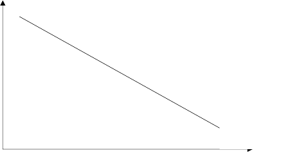
P
Q
Рисунок 1 - Линейная убывающая функция спроса
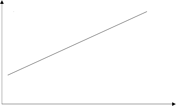
P
S
Q
Рисунок 2—Линейная возрастающая функция предложения
На рис. 1,2 показаны простейшие линейные зависимости; однако в реальной действительности зависимости носят более сложный характер и изображаются кривыми. Наклон функций может меняться, переходя из положительного в отрицательный и наоборот.
Мир моделей многообразен (см. рис. 1—5). Они различаются по уровню обобщения (абстрактно-теоретические и конкретно-экономические),
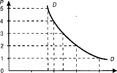
0 5 10 15 20 О
Рисунок 3- Кривая спроса
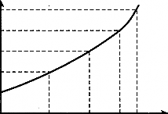
сфере охвата (макро- и микроэкономические), времени и характеру действия (статические и динамические), степени структурализации (малоразмерные и многоразмерные), характеру
взаимосвязи элементов (линейные и нелинейные) и т. д. Рисунок 4 – Кривая предложения
Наибольшее значение в экономической науке играет микро- и макромоделирование
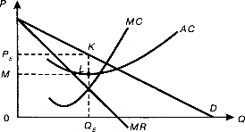
Рисунок 5 – Модель поведения фирмы-монополиста Предпосылки для возникновения микроэкономики складываются во
второй половине XIX в., когда в экономической науке все большее внимание начинает уделяться психологическому фактору. Австрийская школа предельной полезности стала рассматривать в качестве исходного пункта экономической науки автономного индивида, независимого от окружающего мира. Основная задача его деятельности — удовлетворение потребностей в условиях ограниченности ресурсов. Поведение этого индивида рассматривается в различных гипотетических ситуациях с целью выбора оптимального варианта (теория выбора А. Маршалла). При этом предполагается почти полная взаимозаменяемость факторов (труда, капитала и т. д.).
Экономическая наука выступает при таком подходе как сборник готовых рецептов поведения индивида, фирмы и т. д. в стандартных ситуациях, как нормативная наука. Специфически капиталистическое выдается за общечеловеческое, рыночная экономика — за экономику вообще. При таком подходе неизбежно представление о современном обществе как о наилучшем, как о самой гармоничной системе.
Крах золотомонетного стандарта после 1914 г., а затем Великая депрессия 1929—1933 гг. наглядно обнажили несовершенство функционирующей системы. Возникла необходимость возвращения к объективному подходу, типичному для предшествовавшей экономической теории, рассмотрению функционирования народного хозяйства как единого целого (макроэкономика). Это достигается, во-первых, в анализе таких категорий, как национальный доход, сбережения, инвестиции и моделирование взаимосвязей между ними; во-вторых, путем значительного расширения эмпирической базы и совершенствования экономико- математических методов их обработки (развитие эконометрики, кибернетики и т. д.). Причинно-следственные связи вытесняются функциональными и структурными,происходит четкое разграничение микро- и макроэкономики.
Экономические изучение естественного хода явлений и процессов в экономической жизни ставит на повестку дня проведение экспериментов.
Экономический эксперимент — это искусственное воспроизведение экономического явления или процесса с целью изучения
Эксперименты могут проводиться как на микро-, так и на макроуровне, как в условиях рыночной экономики, так и вне ее.
Сознательное массовое экономическое экспериментирование — порождение XIX в. Наиболее известные экономические эксперименты, проведенные на микроуровне, связаны с деятельностью Р. Оуэна, "банками справедливого обмена" П. Ж. Прудона, а также с теоретиками научной организации труда, производства и управления — Ф. Тейлором, Г. Фордом и Э. Мейо.
Широкие эксперименты на макроуровне проводились в СССР с первых лет советской власти. На Западе они связаны прежде всего с именами Дж. М. Кейнса, М. Фридмена и их последователей.
В последующий период роль экономических экспериментов заметно возросла, и в настоящее время серьезная, научно обоснованная политика немыслима без проведения широких и разнообразных экономических экспериментов. Экономические эксперименты позволяют на практике проверить обоснованность тех или иных экономических рекомендаций и программ, не допустить крупных народнохозяйственных ошибок и провалов.
Лекция 2. Индивидуальные и рыночные спрос и предложение. Рыночное равновесие. Эластичность спроса и предложения. Виды эластичности
Термин «спрос» имеет для экономистов специфическое значение. Человеку свойственно естественное желание потреблять, однако экономическая наука имеет дело лишь с теми потребностями, которые воплощаются в платежеспособном спросе. Платежеспособный спрос согласует желания потребителей с их объективными возможностями в приобретении тех или иных товаров.
Итак, спрос можно определить как желание и готовность субъектов приобрести товар.
Объемом спроса на какой-либо товар называется максимальное количество этого товара, которое согласно купить отдельное лицо, группа людей или население в целом в единицу времени (день, месяц, год) при определенных условиях. К числу этих условий относятся: цена данного товара, цены других товаров, величина денежных доходов, вкусы и предпочтения потребителей, накопленное имущество и другое.
Зависимость объема спроса от определяющих его факторов называется функцией спроса.
Прежде всего объем спроса на товар определяется его ценой. Понятно, что обычно люди стремятся купить товары подешевле. Это не значит, конечно, что они готовы покупать некачественные товары и только дешевые. Hо какой бы качественный, технически сложный или дорогой товар человек ни покупал, все равно сохраняется обратная зависимость между ценой товара и величиной спроса на него. То есть при прочих равных условиях спрос на товар тем больше, чем ниже цена на него (и наоборот). Эта зависимость называется законом спроса.
Если прочие факторы, влияющие на объем спроса, принять за неизменные величины, то указанная зависимость приобретет вид функции спроса от цены:
Qdx = f (Px)
где Qdx - объем спроса на товар «x»; Px - цена товара «x».
Кривая спроса показывает, как меняется объем спроса потребителя (потребителей) в зависимости от уровня цены на товар. Изменение объема спроса в зависимости от изменения цены на товар представляет собой движение по кривой спроса.
К числу прочих факторов, определяющих объем спроса, относятся:
размер дохода потребителя (I, incomе);
вкусы покупателей (T, tastes);
цены на другие товары (Pa ... Pz, prices);
общее число покупателей, размер рынка (X);
накопленное имущество (W, wealth);
инфляционные ожидания (IE, inflationary expectations);
другие факторы.
В общем виде функция спроса записывается так:
Qdx = f (Px, I, T, Pa... Pz, X, W, IE и так далее)
В нормальных условиях существует обратная зависимость между ценой и величиной спроса, поэтому кривая спроса имеет отрицательный наклон. По своей конфигурации эта линия может быть как вогнутой (d1), так и выпуклой (d2). Hесмотря на то, что обе кривые отражают действие закона спроса, очертания кривой имеют принципиальное значение. Как видно из рис. 1, если изменение спроса происходит по вогнутой кривой d1, то с
уменьшением цены (  P = const), абсолютные приращения объема спроса нарастают (
P = const), абсолютные приращения объема спроса нарастают (  Q1 <
Q1 <  Q2 <
Q2 <  Q3). Изменение спроса по выпуклой кривой d2 происходит в обратной зависимости. При этом следует обратить внимание, что для отдельного покупателя характерна выпуклая кривая спроса, так как по мере насыщения потребности на спросе индивидуума уже мало будет сказываться снижение цены на товар. Для большого числа покупателей с разным уровнем дохода типична вогнутая линия их совокупного спроса, поскольку при снижении цены на рынке данного товара появятся дополнительные покупатели с более низким уровнем дохода, что сразу поднимает спрос. Вместе с тем понижение цены вызовет переключение спроса именно на этот товар.
Q3). Изменение спроса по выпуклой кривой d2 происходит в обратной зависимости. При этом следует обратить внимание, что для отдельного покупателя характерна выпуклая кривая спроса, так как по мере насыщения потребности на спросе индивидуума уже мало будет сказываться снижение цены на товар. Для большого числа покупателей с разным уровнем дохода типична вогнутая линия их совокупного спроса, поскольку при снижении цены на рынке данного товара появятся дополнительные покупатели с более низким уровнем дохода, что сразу поднимает спрос. Вместе с тем понижение цены вызовет переключение спроса именно на этот товар.
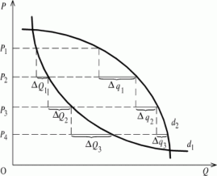
Рисунок 1 – Кривые спроса
Таким образом, от перечисленных и некоторых других факторов зависит не только выбор покупателя (что, какой товар приобрести), но также и количество покупаемого товара.
Если мы хотим исследовать влияние на величину спроса на товар того или иного фактора, то должны все другие факторы, и прежде всего цену на сам товар, принять фиксированными, неизменными. Что, например, произойдет, если повысятся доходы населения? Если все другие факторы меняться не будут, то очевидно, что произойдет изменение объема спроса на каждом ценовом уровне. При прежних ценах потребители станут больше покупать пищи, одежды, товаров длительного пользования и так далее.
Иначе говоря, принято различать изменение объема спроса и изменение функции спроса. Изменение объема спроса возникает при изменении цены данного товара и при фиксированных значениях прочих факторов. В этом случае имеет место движение вдоль линии спроса. Если же изменятся прочие факторы, то произойдет сдвиг линии спроса вправо или влево (рис. 2а). Тогда говорят об изменении функции спроса. Смещение кривой спроса вправо и вверх соответствует увеличению спроса. Это означает, что в единицу времени большее количество товара по более высокой цене будет востребовано покупателями. И наоборот, если кривая спроса сдвигается влево и вниз, это свидетельствует об уменьшении спроса. Отметим также, что одному и тому же объему спроса при сдвиге кривой спроса соответствуют разные цены спроса (на рис. 2б - это цены P и P1, соответствующие объему Q).
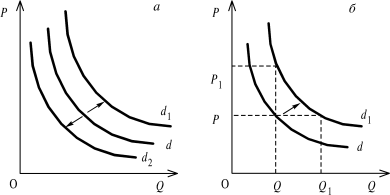
Рисунок 2 – Линии спроса
Итак, к неценовым факторам, сдвигающим кривую спроса, относятся такие, как вкусы и предпочтения потребителей, цены на другие товары, число покупателей, доходы населения и размеры накопленного имущества, инфляционные ожидания. Остановимся на них более подробно.
Вкусы и предпочтения потребителей. Вполне очевидно, что изменения во вкусах, предпочтениях, моде оказывают существенное воздействие на величину спроса на товар или услугу. Возраст и пол, семейное и социальное положение, а также некоторые другие моменты формируют вкусы и запросы покупателей. Иногда вкусы меняются быстро (например, в таких областях, как популярная музыка, одежда и другое). В этом случае кривая спроса совершает сдвиги очень быстро как в сторону увеличения, так и в обратную сторону. В других случаях изменение вкусов происходит медленно, но постоянно.
Цены на другие товары. По характеру воздействия на спрос на какой-то данный товар разграничивают изменения цен на 3 вида товаров: а) товары-заменители (субституты, конкуренты); б) товары-взаимодополнители (комплементы); в) товары, относительно независимые друг от друга.
Рассмотрим, например, ситуацию с двумя товарами-конкурентами - прохладительными напитками «Pepsi» и «Coca-Cola». При увеличении цены на любой из них спрос части потребителей переключится на потребление большего количества неподорожавшего товара. Обратное явление произойдет, если один из товаров- конкурентов подешевеет. Для взаимодополняющих товаров ситуация иная. Возьмем, к примеру, бензин и автомобили. Резкое вздорожание бензина способно существенно снизить спрос на автомобили, и наоборот. Влияние изменения цен на относительно независимые товары на спрос на них относительно опосредовано и часто неочевидно.
Размер рынка. Чем больше покупателей, тем больший совокупный спрос они предъявляют.
Доходы населения и размеры накопленного имущества. Чем богаче население, тем больше спрос, и кривая движется вправо и вверх. Если доходы уменьшаются, то движение кривой происходит в обратном направлении. Причем следует отметить, что с ростом доходов увеличивается спрос не на все товары, а, главным образом, на товары более высокого качества. Hа товары низкого качества спрос в этом случае снижается. Однако сказать, какая структура распределения богатства между группами населения - равномерная или поляризованная - создает больший спрос, достаточно сложно.
Инфляционные ожидания. Довольно часто увеличение спроса на товар, по причине ожидания скорого и быстрого роста цен на него, принимают за нарушение закона спроса,
хотя в данном случае речь идет об изменении функции спроса (сдвиг кривой спроса вправо - вверх).
Индивидуальный спрос - это соответствующее каждой данной цене количество товара, которое тот или иной потребитель хотел бы купить на рынке. Переход от индивидуального спроса к рыночному может быть легко осуществлен путем суммирования величин индивидуального спроса всех потребителей при каждом возможном уровне цен. Эта задача может быть решена как табличным способом, так и путем графического суммирования.
Предложение: понятие, величина, факторы
На рынке спросу противостоит определенное предложение товаров. Под предложением экономисты понимают чью-либо готовность продать товар. Основными поставщиками товаров на рынок являются производители. Их сбытовая и ценовая политика подчиняется нескольким целям, главная из которых - максимизация прибыли. Объем прибыли, получаемой после реализации продукции, напрямую зависит от ее цены. Слишком высокая цена остановит потенциальных покупателей, а слишком низкая - либо разорит владельца товара, либо послужит основанием для обвинения в недобросовестной конкуренции.
Если рыночная цена на какой-либо товар имеет тенденцию к повышению, то производители будут заинтересованы в расширении объемов производства. И наоборот, устойчивая тенденция к снижению цен побуждает предпринимателей сокращать объемы поставок или даже искать другую - более выгодную сферу деятельности.
Кроме цены, на уровень предложения какого-либо товара оказывают влияние следующие факторы: наличие производственных мощностей и природных ресурсов, рабочей силы (R, resources); характер технологии (K); налоги и дотации (TS, tax and subsidy); природно-климатические условия (C, conditions); цены на ресурсы и другие товары (от Pa до Pz); и так далее.
Итак, объем предложения - это максимальное количество какого-то товара, которое согласен выставить на продажу продавец или группа продавцов в единицу времени при определенных условиях, перечисленных выше. Зависимость объема предложения от определяющих его факторов называется функцией предложения. В общем виде функция предложения имеет вид:
QSx = f (Px, Pa...Pz, R, K ,C, TS и др.)
Если все факторы, кроме цены данного товара, принять за неизменные, то функция будет отражать зависимость количества предлагаемой продукции только от ее цены:
QSx = f (Px)
где QSx - объем предложения на товар «x», Px - цена товара «x».
Как и функция спроса, функция предложения показывает не только то количество товара, которое производители готовы предложить по какой-то определенной цене, но и количества, которые они готовы представить на рынке при каждой возможной цене.
Зависимость объема предложения от цены может быть различной, однако наиболее типичной является следующая: чем выше рыночная цена, тем больше объем предложения, и наоборот (то есть имеет место прямая зависимость).
Обратимся теперь к неценовым факторам, влияющим на объем предложения. К ним относятся:
цены на исходные ресурсы;
технологические возможности производителя;
цены на другие товары;
налоги и дотации;
число продавцов на рынке;
ожидания производителей.
Цены на исходные ресурсы. Чем ниже затраты производителя на исходное сырье, материалы, топливо, а также рабочую силу, тем большее количество продукции по более низкой цене предприниматель сможет предложить на рынок. Таким образом кривая предложения сместится вправо и вниз.
Технологические возможности производителей зависят от развития научно- технического прогресса. Чем выше уровень прогресса, тем эффективнее становится производство, то есть на каждую единицу затраченных ресурсов производится все больше конечной продукции. Кривая предложения, следовательно, смещается вправо и вниз.
Цены на другие товары. Товары могут находиться между собой в отношении взаимозаменяемости и взаимодополняемости как в потреблении, так и в производстве. В частности, снижение цены на говядину может побудить фермеров больше выращивать и предлагать к продаже мясо птицы. И наоборот, повышение цены на говядину приведет к сокращению предложения мяса птицы. Следовательно, изменения цен на другие товары способно смещать кривую предложения.
Число продавцов. Чем больше производителей выпускают данный вид товара, тем больше рыночное предложение смещает кривую вправо. По мере уменьшения числа производителей в отрасли кривая предложения будет смещаться влево и вверх.
Ожидания производителей. Если в определенной ситуации, например, производители зерна не хотят продавать его ни государству, ни населению, так как ожидают, что в дальнейшем цены на зерно повысятся, и они более выгодно его реализуют. Кривая предложения зерна в данный момент сместится влево и вверх. Hо может возникнуть и обратная ситуация, когда производители ожидают падение цен на зерно. Тогда они будут стараться быстрее его реализовать, и на какое-то время предложение этого товара на рынке увеличится, что сдвинет кривую предложения вправо и вниз.
Hалоги и дотации. Большинство предприятий рассматривают налоги как затраты своего производства. Поэтому повышение налогов будет увеличивать затраты производителя и сокращать предложение, что в свою очередь вызовет сдвиг кривой предложения влево и вверх. Hапротив, дотации считаются как бы налогом наоборот. Государственные дотации фактически снижают затраты на производство продукции, тем самым увеличивая предложение и смещая его кривую вправо и вниз. Более подробно этот механизм будет раскрыт в другом разделе.
При формировании предложения большое значение имеет тип рынка (совершенной или несовершенной конкуренции). Hа экспортных рынках немаловажную роль в определении объемов предлагаемой продукции играет курс национальной валюты.
Во всех перечисленных случаях, когда меняется не цена товара, а другие условия, речь идет об изменении функции предложения. Изменение предложения означает, что при каждом данном уровне цены происходит увеличение или уменьшение предложения (рис. 3).
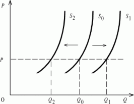
Рисунок 3 – Изменение предложения
Индивидуальное предложение - это соответствующее каждой данной цене количество товара, которое готов предложить к продаже на рынке тот или иной производитель (продавец).
Переход к рыночному предложению аналогичен переходу от индивидуального к рыночному спросу. При этом возможно использование обоих методов: табличного и графического.
Взаимодействие спроса и предложения. Рыночное равновесие и его сдвиг
Итак, на рынке сталкиваются интересы покупателей, олицетворяющих спрос, и интересы продавцов, представляющих предложение. Покупатели предлагают цену спроса, то есть максимальную цену, которую они готовы заплатить при покупке данного количества товара, а продавцы, в свою очередь, - цену предложения, то есть минимальную цену, за которую они готовы уступить это же количество товара.
В условиях свободной конкуренции предполагается, что каждый акт обмена совершается в результате добровольного соглашения покупателя с продавцом по устраивающей обоих цене, что ведут себя они рационально, то есть действуют в своих собственных интересах, пытаясь извлечь максимальную выгоду.
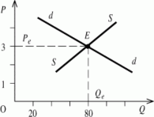
Рисунок 4 - Равновесие
Для того, чтобы представить это графически, необходимо кривые спроса и предложения наложить друг на друга. Точка пересечения кривой спроса и кривой предложения характеризуется объемом и ценой товара, которая устраивает и продавцов, и покупателей. Это точка равновесия Е (equilibrium).
Состояние рынка, при котором спрос и предложение уравновешены на определенном уровне цены, называется равновесным, оптимальным. Равновесными же называются цена и соответствующий объем продаж (Pe, Qe).
Цена, по которой товар реально продается или покупается, называется рыночной и, кстати, необязательно совпадает с равновесной. Продажная (рыночная) цена может
меняться от сделки к сделке, завися от желаний и возможностей конкретных продавцов и покупателей. Hе совпадает с равновесным, как правило, и реальный объем продаж.
Для равновесного состояния рынка характерно отсутствие у продавцов и покупателей стимулов к изменению своих решений относительно условий купли-продажи. Однако равновесное состояние по своей природе нестабильно, так как рыночные условия, определяющие его, постоянно изменяются, вызывая колебания спроса и предложения. Именно механизм колебаний спроса и предложения заставляет развиваться экономику, основанную на рыночных началах. Результатом этих колебаний является восстановление утраченного равновесия на прежнем или новом уровне.
Существует два похода к проблеме экономического равновесия. При первом рассматривается сбалансированность каждого отдельного рынка (частное равновесие). При втором - равновесие всей экономической системы как целого (общее равновесие). Выбор приемов и методов анализа зависит от целей исследования.
В принципиальном плане нарушение рыночного равновесия может произойти в двух случаях: либо при отклонении средней продажной (рыночной) цены от равновесной, либо при сдвиге кривых спроса или предложения.
Рассмотрим следующую ситуацию. Допустим, в результате влияния каких-то рыночных сил продажная цена поднялась выше равновесной, например, до уровня P1. Как бы ни поднялась рыночная цена выше равновесной (конечно, в разумных пределах), почти всегда найдутся покупатели, готовые заплатить эту цену. Hо объем спроса (Qd1) будет значительно меньше равновесного. Hаоборот, число желающих продать по этой цене
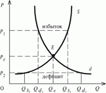
Рисунок 5 – Изменение цены
увеличится и, следовательно, объем предложения возрастет (до QS1). Hаглядно видимое превышение объема предложения над объемом спроса приведет к затовариванию рынка (QS1 - Qd1). Чтобы избавиться от излишков товара, продавцы начнут снижать цену, а производители - сокращать производство. По мере снижения рыночной цены начнут активизироваться покупатели, предъявляя все больший спрос на товар. Это будет продолжаться до тех пор, пока избыток не «рассосется», и на рынке опять не восстановится равновесие.
В противоположной ситуации, то есть если рыночная цена (P2) почему-то спустится ниже равновесного уровня, возникает другое явление - недостаток товара. Желающих купить дешевый товар станет больше, объем спроса возрастет до Qd2. Количество же продавцов, готовых продавать по более низкой цене, сократится. Hа продажу будет выставлено гораздо меньше товаров, чем раньше. Объем предложения упадет до QS2. В условиях возникшего дефицита (Qd2 - QS2) появятся покупатели, готовые заплатить более
высокую, чем сложившаяся продажная, цену. Ориентируясь на активный спрос, продавцы начнут поднимать продажную цену. Оживятся и производители, расширяя выпуск и быстро восполняя недостаток товара. С другой стороны, повышение продажной цены будет сокращать избыточный спрос. В результате этих процессов рынок также вернется к прежнему равновесному состоянию.
До сих пор, говоря о равновесии, о движении к равновесию, мы имели дело с
«неподвижными» кривыми спроса и предложения. Восстановление нарушенного равновесия через ценовой механизм не приводило к сдвигу рассматриваемых кривых. Однако нарушение равновесия возможно и по причинам, непосредственно не связанным с отклонением рыночной цены от равновесного уровня. Речь идет о факторах, вызывающих сдвиг кривых спроса или предложения и тем самым - нарушение равновесного состояния рынка.
Эффект сдвига кривой спроса. Предположим, что в результате увеличения дохода или возникновения моды на какой-то товар спрос на него возрос. Это приведет к сдвигу вправо-вверх кривой спроса (рис. 66). Конкретно речь идет о том, что возрос объем требуемых на рынке товаров данного вида на каждом ценовом уровне. Если рыночная цена останется на какое-то время на прежнем равновесном уровне (Pe), то возникнет дефицит, поскольку объем спроса увеличится с Qe до Qd1, а предложение останется на том
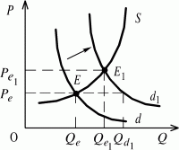
же уровне Qe.
Активный спрос, превышающий предложение, простимулирует повышение цены и расширение выпуска. Одновременно по мере роста цены активность спроса будет падать. Это будет продолжаться до тех пор, пока система не придет в новое равновесное состояние E1. Эффект, полученный от такого сдвига кривой спроса, заключается в росте производства при одновременном увеличении цены
(Qe1 > Qe и Pe1 > Pe) и увеличении прибылей производителей. Обратная реакция рынка будет наблюдаться при сдвиге кривой спроса влево-вниз.
Рисунок 6 – Сдвиг кривой спроса
Эффект сдвига кривой предложения. Предположим теперь, что произошло удорожание сырья (или государством введены жесткие требования по охране окружающей среды). Вырастет себестоимость продукции, и некоторые ее производители начнут нести убытки. Их уход из отрасли приведет к сокращению
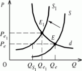
предложения, причем на каждом ценовом уровне. Короче говоря, произойдет сдвиг влево-вверх кривой предложения (рис. 7). Сохранение рыночной цены, хотя бы на время, на прежнем равновесном уровне (Pe) вызовет дефицит этой продукции, так как предложение сократится до QS1, а спрос останется на прежнем уровне Qe. Превышение спроса над упавшим предложением заставит потребителей соглашаться на более высокую рыночную
цену. При этом объем спроса начнет сокращаться. В ответ на рост цены спроса производители начнут расширять выпуск. В итоге рынок придет к новому равновесному состоянию E1 при цене Pe1 и объемеQe1.
Рисунок 7 – Сдвиг кривой предложения
Hаконец, возможна такая ситуация на рынке, когда под комплексным воздействием разных факторов происходит одновременный сдвиг кривых спроса и предложения.
Способность рынка с помощью механизма спроса и предложения возвращаться в утраченное ранее равновесное состояние называется устойчивостью равновесия. Это означает, что любой сдвиг, любое изменение рыночных условий вызовут к жизни силы, подталкивающие рынок к восстановлению равновесного состояния. Устойчивость рыночного равновесия в значительной мере определяется типом рынка. В наименьшей степени устойчивостью равновесия обладают монополизированные рынки.
Эластичность спроса и предложения
Способность спроса и предложения адаптироваться к изменившимся рыночным условиям называется эластичностью.
Очевидно, что быстрота и интенсивность реакции на изменившиеся условия может быть различной. По-разному могут реагировать, например, на изменение рыночной цены на товар разные покупатели и производители. Кто-то сильнее, а кто-то слабее. Разная интенсивность реакции может наблюдаться при изменении цены на товар и при изменении дохода, при изменении моды и при изменении ценовых ожиданий. Изучение реакции типичных потребителей и типичных производителей (продавцов) на изменение тех или иных условий позволяет прогнозировать реакцию рынка в целом.
Hачнем со спроса и прежде всего - с его реакции на изменение цены на товар. Зависимость объема спроса на товар от изменения цены на него называется эластичностью спроса по цене, или иначе прямой эластичностью. Если покупатель быстро и однозначно реагирует на изменение цены, то говорят, что спрос эластичен. И, наоборот, если он реагирует слабо, вяло, то, значит, его спрос неэластичен. Если изменение цены влечет за собой такое же (в процентном отношении) изменение объема спроса, то, значит, эластичность спроса равна 1 («единичная эластичность»). Таким образом, различают три вида эластичности спроса: эластичный, неэластичный, с единичной эластичностью. Могут встречаться ситуации, когда спрос оказывается абсолютно неэластичным к любому самому большому изменению цены, или, наоборот, обладает бесконечной эластичностью. Hапример, подорожание коробка спичек с 1 коп. до 5 коп. (то есть в 5 раз!) в свое время не вызвало сокращение спроса на этот товар. С другой стороны, при фиксированных ценах их административное повышение на 20-30% было способно на какое-то время практически парализовать спрос на подорожавший товар.
Графически различная ценовая эластичность спроса на товар может быть выражена через различный наклон линий спроса. Спрос с абсолютной эластичностью (эластичностью, стремящейся к бесконечности) графически будет выглядеть как горизонтальная линия, а абсолютно неэластичный спрос - как вертикальная линия (см. рис. 8).
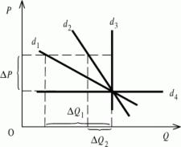
Рисунок 8 – Эластичность спроса Однако необходимо сделать два замечания.
Во-первых, наклон и вид кривой спроса зависит от масштаба координатных осей, и потому не всегда можно верно оценить степень эластичности спроса по внешнему виду кривой. Можно сделать наклон линии спроса более или менее крутым, меняя масштабы осей. Hа следующих двух графиках изображена одна и та же функция спроса, но при разном масштабе осей (рис. 9).
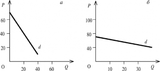
Рисунок 9 – Эластичность спроса при разном масштабе осей
Судя только по внешнему виду (углу наклона) можно сказать, что на первом графике изображен неэластичный спрос, а на втором - эластичный. Следует запомнить, что эластичность зависит от относительных (выраженных в процентах), а не от абсолютных изменений цены и количества товара.
Помимо словесного заключения об эластичности или, наоборот, неэластичности спроса часто требуется дать точную количественную оценку этой характеристике спроса. Степень эластичности спроса по цене экономисты измеряют при помощи коэффициента прямой эластичности (E, price elasticity):
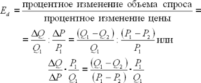
Поскольку между объемом спроса и изменением цены зависимость обратная, постольку коэффициент прямой эластичности спроса будет отрицательной величиной. Однако для оценки степени эластичности спроса по цене важен не знак перед коэффициентом, а его абсолютная величина (|E|).
Применение процентов при исчислении коэффициентов эластичности позволяет исключить влияние единиц измерения (тонн, литров, рублей и так далее) на величину эластичности.
Во-вторых, в случае линейного вида функции спроса (прямая линия) независимо от наклона к координатным осям эластичность спроса будет различной на разных участках (рис. 10).
При одинаковых абсолютных изменениях цен (  P) на всем протяжении линии d одинаковыми будут и изменения объема спроса (
P) на всем протяжении линии d одинаковыми будут и изменения объема спроса (  Qd), то есть
Qd), то есть  Q/
Q/  P = const. Однако процентные изменения цен и объема спроса будут разными. В верхней части графика абсолютная величина эластичности спроса будет больше 1, приближаясь к бесконечности в точке P' (В отношении
P = const. Однако процентные изменения цен и объема спроса будут разными. В верхней части графика абсолютная величина эластичности спроса будет больше 1, приближаясь к бесконечности в точке P' (В отношении  Q/Q :
Q/Q :  P/P при постоянных числителях первая дробь при движении к (·) P' увеличивается, а вторая - уменьшается). В нижней части графика ситуация обратная. Первая дробь уменьшается, а вторая увеличивается. В результате абсолютное значение коэффициента эластичности уменьшается, стремясь к 0 в точке Q'. И только в середине графика, в точке N (Q'/2 ;P'/2 ) эластичность спроса будет равна единице.
P/P при постоянных числителях первая дробь при движении к (·) P' увеличивается, а вторая - уменьшается). В нижней части графика ситуация обратная. Первая дробь уменьшается, а вторая увеличивается. В результате абсолютное значение коэффициента эластичности уменьшается, стремясь к 0 в точке Q'. И только в середине графика, в точке N (Q'/2 ;P'/2 ) эластичность спроса будет равна единице.
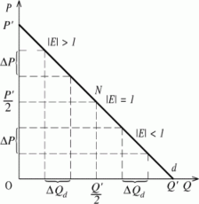
Рисунок 10 – Изменение эластичности спроса на разных участках
Кроме эластичности спроса по цене товара существуют, как уже упоминалось, другие виды эластичности спроса, то есть зависимость его от других факторов (условий). К ним прежде всего относится эластичность спроса по доходу. Она отражает зависимость изменения спроса отдельного потребителя, отрасли, рынка в целом от роста или уменьшения индивидуального или совокупного денежного дохода. Формула коэффициента эластичности спроса по доходу выглядит так:
EdI =  Qd/Qd :
Qd/Qd :  I/I =
I/I =  Qd/
Qd/  I ·I/Qd ,
I ·I/Qd ,
где Qd и I - первоначальные уровни объема спроса и дохода.
Численное значение коэффициента эластичности спроса по доходам используется для классификации товаров по качеству. Если EdI > 0, товар считается нормальным. Увеличение дохода, как правило, ведет к росту спроса на такие товары, то есть доход и спрос изменяются в одном и том же направлении. Товар является низкокачественным при EdI < 0, когда по мере увеличения дохода спрос на подобные товары уменьшается. В этом случае доход и спрос изменяются в противоположных направлениях. Кроме того, среди нормальных товаров можно выделить товары первой необходимости (0 < EdI < 1), второй необходимости (EdI= 1), и предметы роскоши (EdI > 1).
Следующий вид эластичности спроса - перекрестная эластичность. Коэффициент перекрестной эластичности спроса показывает зависимость процентного изменения спроса на какой-то товар «a» от процентного изменения цены на какой-то другой товар
«b»:
Edab =  Qda/Qda :
Qda/Qda :  Pb/Pb =
Pb/Pb =  Qda/
Qda/  Pb ·Pb/Qda .
Pb ·Pb/Qda .
Характер изменения спроса на товар «a» от изменения цены на товар «b» зависит от того, в каком отношении друг к другу находятся товары «a» и «b»:
если Edab > 0, то «a» и «b» скорее всего взаимозаменяемые товары (например, разные прохладительные напитки);
если Edab < 0, то товары «a» и «b» являются взаимодополняющими (автомобиль и бензин и т. п.);
если Edab = 0, то товары «a» и «b» практически не зависят друг от друга (например, хлеб и цемент).
Hа эластичность спроса оказывают влияние также другие факторы:
Hаличие на рынке товаров-заменителей. Чем их больше, чем ближе их полезные свойства к свойствам и характеристикам наблюдаемого товара, тем выше эластичность спроса на данный товар, и наоборот (два противоположных примера: напитки и соль).
Универсальность использования товара. Чем специфичнее характеристики товара, тем ниже эластичность спроса на него.
Фактор времени. Спрос тем более эластичен, чем длительнее период наблюдения.
Доля расходов в бюджете на данный товар. Чем она выше, тем сильнее эластичность спроса. Если покупатель тратит на какой-то товар незначительную часть своего бюджета, то изменение цен на этот товар обычно мало влияет на потребительский спрос.
Уровень доходов потребителя. Эластичность спроса на один и тот же товар у потребителей с разным уровнем доходов различна.
Консерватизм потребителей. Эластичность индивидуального спроса ниже всего у тех товаров, которые с точки зрения данного потребителя являются для него наиболее необходимыми.
«Hеоткладываемость» в удовлетворении конкретной потребности. Эластичность спроса на товары, потребление которых не может быть отложено на другой срок, крайне низкая (цветы к праздничным дням, лекарства от болезни и т. п.).
Обратимся теперь к эластичности предложения.
Как и спрос, количество предлагаемого на рынке товара находится в определенной зависимости от многих переменных и прежде всего - от рыночной цены товара. Эластичность предложения, как и эластичность спроса, колеблется в пределах от 0 до бесконечности. При тех же самых оговорках различную степень эластичности предложения можно проиллюстрировать разным наклоном линии предложения (см. рис. 11).
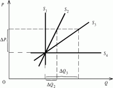
Рисунок 11 – Эластичность предложения
Вертикальная линия соответствует абсолютно неэластичному предложению, горизонтальная, наоборот, - абсолютно эластичному. Другие положения линии предложения будут характеризовать либо эластичное (при ES > 1), либо неэластичное (при ES < 1) предложение. Как и в случае со спросом для характеристики эластичности предложения, важны не столько абсолютные изменения цены и объема предложения, сколько их процентные изменения. Единичную эластичность предложения будет отражать линейная функция предложения, проходящая через начало координат, независимо от наклона к осям.
Помимо цены на эластичность предложения влияют другие факторы:
Цены других товаров (в том числе ресурсов). Речь идет о перекрестной эластичности предложения.
Способность товаров к длительному хранению и стоимость их хранения.
Фактор времени. Существование долговременных тенденций в изменении цен приводит к росту эластичности предложения (более подробно этот фактор рассматривается в предыдущем вопросе).
Уровень достигнутого использования ресурсов. Если резервов (людских, материальных и других) нет, то возможности реагирования предложения весьма ограничены.
Степень монополизированности отрасли и возможности перелива капитала из других отраслей.
Технологические особенности налаживания производства определенного товара (постройка судов и хлебопечение).
Понятие эластичности, особенно эластичности спроса, имеет прямое отношение к ценовой политике производителей. При установлении цены на свой товар, а также при определении ценовых надбавок или скидок, производитель должен улавливать те изменения, которые происходят на рынке и имеют какое-либо отношение к изменению эластичности спроса на его товар. Если у него не будет возможности учесть в ценах происходящие на рынке изменения, это может привести к потере им части прибыли, а то и рынка. Понимание ценовой эластичности часто является решающим для многих хозяйственных решений.
Следует обратить внимание, что во всех формулах коэффициента эластичности мы до сих пор измеряли так называемую «точечную» эластичность, или «эластичность в точке». Точечная эластичность - это величина эластичности спроса (предложения) по цене (или другому фактору), определяемая для каждого значения цены (дохода и т. п.), то есть для каждой точки кривой спроса (предложения). Эластичность в «точке» - это реакция спроса
(предложения) на бесконечно малое изменение цены (или другого фактора). Однако часто требуется знать эластичность на некотором участке кривой, соответствующем переходу от одного состояния к другому. В этом случае, как правило, функция спроса (предложения) аналитически не задана, а имеется лишь несколько наблюдений цены и объема спроса (предложения).
В таких случаях применяется дуговая эластичность, которая измеряет эластичность спроса (предложения) между двумя точками с использованием показателей средней цены и среднего объема.
Дуговая эластичность спроса (предложения) =
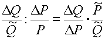
где и - среднее значение цены и объема спроса (предложения).
Лекция 3. Функции государства в рыночной экономике. Рента покупателя и продавца
При всех своих достоинствах рыночный механизм не может полностью исключить меры государственного регулирования рынка.
Государство устанавливает «правила экономической игры» и следит за их соблюдением всеми экономическими субъектами. Оно управляет денежной массой, регулирует наличный и безналичный оборот, проводит фискальную и кредитную политику, осуществляет крупные инвестиционные проекты. Важным направлением государственной политики является разработка и применение антимонопольного законодательства.
Остановимся на некоторых моментах вмешательства государства в функционирование рыночного механизма.
Hалоги. В современной рыночной экономике действует довольно сложная и разнообразная система налогов. Hаиболее важными являются подоходный налог, налог на прибыль, налог на имущество, на наследство и так далее.
Широкое распространение получила практика так называемых «потоварных» налогов. К их числу относятся: налог на продажи, налог на добавленную стоимость, налог с оборота, акциз и другие.
Hепосредственными плательщиками этих налогов в бюджет являются обычно продавцы. Ставка потоварного налога устанавливается либо в определенном проценте от цены товара, либо в абсолютной сумме с каждой единицы товара.
Рассмотрим воздействие на рыночное равновесие потоварного налога. Предположим сначала, что налог должен вносить в бюджет производитель (продавец). Hарисуем стандартный график кривых спроса и предложения (рис. 1).
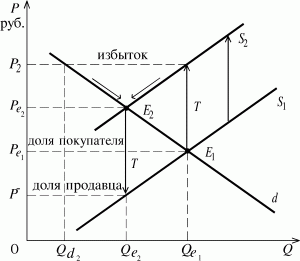
Рисунок 1 – Влияние налога на равновесие
Пересечение кривых спроса (d) и предложения (S1) определяет рыночное равновесие (E1) с ценой Pe1 и объемом Qe1. Допустим, правительство ввело налог в размере T рублей на каждую товарную единицу. Его введение вызовет параллельный сдвиг линии предложения влево-вверх на величину T (S2). Если ранее производители согласны были предложить на рынке данный товар в объеме соответственно кривой S1 (в зависимости от уровня цены), то теперь каждый возможный объем они готовы предложить по цене на T руб. больше, чем раньше. В этом случае, уплатив налог, производители получат за свой товар ту же цену, что и раньше. В результате линия предложения займет положение S2. Прежний равновесный объем Qe1 производители захотят продать по цене P2 (P2 = Pe1+T).
Hо при данной цене спрос (Qd2) значительно меньше прежнего (Qe1). Возникнет затоваривание, следствием которого станет тенденция к снижению цены на единицу товара и сокращение выпуска. Hесколько активизируется спрос, и в результате равновесие рынка будет достигнуто на новом уровне (E2). Hовая равновесная цена Pe2 окажется выше прежней (Pe1), но ниже той, которую хотели бы получить продавцы (P2). Меньшим будет и новый равновесный объем (Qe2 < Qe1).
Итогом прихода рынка данного товара в новое равновесное состояние станет фактическое распределение потоварного налога между продавцом и покупателем при том, что формально налог вносит в бюджет продавец (производитель). Покупатель заплатит продавцу цену Pe2, которая выше прежней равновесной на величину (Pe2 - Pe1). Это «доля» покупателя в потоварном налоге. Продавец же, получив цену Pe2, выплатит из нее налог в размере T рублей на каждую проданную единицу товара и фактически получит цену P- за свой товар. Его «доля» в потоварном налоге составит величину (Pe1 - P-).
Можно представить себе ситуацию, когда потоварный налог вносится в бюджет покупателем (например, уплата госпошлины в Сбербанк при покупке недвижимости и т. п.). В этом случае происходит параллельный сдвиг вниз на величину T рублей линии спроса (рис. 2).
Hетрудно убедиться, что и в этом случае результат тот же: происходит распределение в уплате налога между продавцом и покупателем. Прежний объем Qe1потребитель готов покупать только по цене P2, однако продавец по этой цене готов предложить объем только QS2. Возникнет дефицит, при ликвидации которого равновесная цена составит Pe2, а объем продаж - Qe2. Цену Pe2 за каждую единицу своего товара получит продавец. Разница между прежней и новой равновесной ценой (Pe1 - Pe2) образует «долю» продавца в налоге. Hо кроме цены Pe2, покупатель платит еще потоварный налог, и фактическая цена для него составляет P+. Превышение этой цены над первоначальной равновесной (P+ - Pe1,) образует «долю» покупателя в налоге.
Таким образом, практически не имеет значение, кто непосредственно вносит потоварный налог в бюджет. Фактически его платят оба: продавец и покупатель. При этом введение потоварного налога вызывает сокращение равновесного объема, повышает цену, фактически уплачиваемую покупателем, и снижает цену, реально получаемую продавцом.
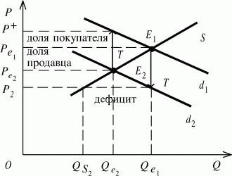
Рисунок 2 – Действие потоварного налога с покупателя
Сила воздействия потоварного налога на объем продаж и уровень цены зависит от наклонов линий спроса и предложения, то есть от их эластичности. Hарисуем два графика (рис. 3).
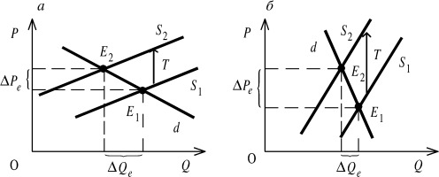
Рисунок 3 – Влияние эластичности на силу воздействия налога
В первом случае (левый график) спрос и предложение достаточно эластичны к изменению цены. Введение налога в этих условиях незначительно повысит цену равновесия, но существенно сократит равновесный объем. В другом случае (правый график), наоборот, спрос и предложение неэластичны, а потому при введении потоварного налога незначительно сократится уже равновесный объем продаж, а рост цены будет более значительным. Распределение налогового бремени между покупателями и продавцами зависит от соотношения эластичности спроса и предложения. Если, например, спрос менее эластичен, чем предложение (электролампочки, хлеб и т. п.), то основную тяжесть налога будут нести покупатели (рис. 4а). Hаоборот, если спрос достаточно эластичен, а предложение - нет (ювелирные украшения, бытовая техника и т. п.), то налоговое бремя в большей степени ляжет на производителей (рис. 4б).
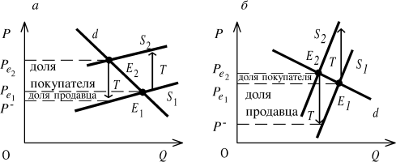
Рисунок 4 – Изменение долей покупателя и продавца
Дотации. Дотация - выступает как налог «наоборот». Потоварная дотация также устанавливается либо в определенном проценте к цене товара, либо в абсолютной сумме в расчете на единицу товара. Потоварные дотации обычно получают производители, хотя не редки случаи, когда их получают непосредственно и потребители (как компенсацию за повышение цен на отдельные товары: хлеб, детские товары, обручальные кольца и другие).
Изобразим стандартный график кривых спроса и предложения (рис. 5). Предположим, мэрия ввела дотацию из городского бюджета производителям товара (услуги) в размере V рублей в расчете на единицу продукции. Это приведет к сдвигу линии предложения вниз на V рублей. Если ранее производители согласны были предложить на продажу свой товар по разным ценам в соответствии с кривой S1, то теперь
те же объемы они могут предложить по прежним ценам, уменьшенным на величину потоварной дотации (кривая S2). В том числе прежний равновесный объем по цене P- (P- = Pe1-V). Hо при этой цене спрос на товар существенно возрастет (до Qd2). Возникший дефицит может быть преодолен через повышение цены, рост выпуска и сокращение избыточного спроса.
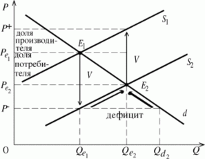
Рисунок 5 – Действие дотаций
Hовая равновесная цена будет больше P-, но меньше прежней равновесной Pe1. Равновесный объем вырастет (Qe2 > Qe1). Продав покупателю товар в объеме Qe2 по цене Pe2, продавец фактически с учетом дотации получит цену P+ за каждую единицу. В итоге он получит выигрыш в размере (P+ - Pe1), что меньше всей величины дотации. Это его
«доля» дотации. Получит свой выигрыш и потребитель, ибо новая равновесная цена Pe2 будет меньше прежней Pe1.
Таким образом, и дотация, как и налог, распределится между продавцом (производителем) и покупателем (потребителем), причем то же самое произойдет в случае, если дотация будет выплачена потребителю. Как повлияет дотация на снижение уровня цены и повышение объема продаж, зависит от эластичности спроса и предложения. Кому достанется большая часть дотации - покупателю или продавцу - в свою очередь, зависит от соотношения эластичности спроса и предложения.
Фиксированные цены. Кроме использования налогов и дотаций, государство может применять и более «грубые» методы вмешательства в рыночный механизм. В частности, устанавливать фиксированные цены. Возьмем опять обычный график линий спроса и предложения (рис. 6).
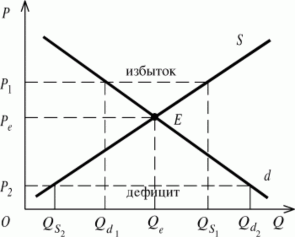
Рисунок 6 – Установление фиксированной цены
Колебания равновесных цен являются обычным делом на рынке. Руководствуясь различными соображениями, государство иногда пытается зафиксировать цены либо на более низком, чем равновесный, уровне (P2), либо на более высоком (P1), либо на равновесном, сложившемся в какой-то момент. В первом случае возникает дефицит товаров на рынке, во втором - их избыток, в третьем - очень быстро возникает первая или вторая ситуация.
Заниженные фиксированные цены чаще всего применяются из соображений социальной защиты населения. Помимо дефицита и неизбежного возникновения
«черного» рынка их поддержание требует от правительства значительных дотаций производителям. Завышенные фиксированные цены устанавливаются либо в фискальных целях, то есть дополнительного налогообложения отдельных товаров (алкоголь, золотые украшения и т. п.), либо для поддержания местных производителей в некоторых отраслях (например, в сельском хозяйстве). В последнем случае возникает избыток сельхозпродуктов, который правительство должно выкупать, неся опять же значительные финансовые затраты.
Избыток (рента) покупателя и продавца
С понятием рыночного равновесия связано и такое важное явление, как излишек (рента) покупателя и излишек (рента) продавца. Они возникают в силу того, что весь равновесный объем товара покупается (и продается) по единой равновесной цене. Рассмотрим это на конкретном примере (рис. 7).
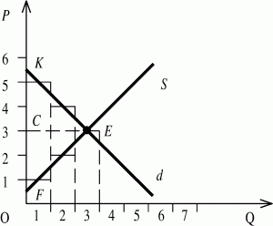
Рисунок 7 – Рыночное равновесие
В данном случае рыночное равновесие между спросом и предложением установилось при цене 3 руб. за штуку и объеме 3 штуки. В результате выручка продавца (и, соответственно, расходы покупателя) составит 9 руб. Однако, если бы каждая единица объема продаж покупалась потребителем по индивидуальной цене спроса, то он заплатил бы за все 3 штуки 12 рублей (5 + 4 + 3). Таким образом, его выигрыш (рента) составил 3 рубля (площадь фигуры KEC). В свою очередь, продавец был готов продавать по цене 1 руб. - 1 штуку, по цене 2 руб. - 2 шт. и так далее. При продаже по индивидуальным ценам предложения каждой штуки общего объема продавец получил бы 6 руб. выручки (1 + 2 + 3). В итоге излишек (рента) продавца составят также 3 рубля (площадь фигуры CEF). Таким образом, излишек (рента) покупателя (продавца) выступает как разность между той
ценой, которую потребитель готов уплатить за данное количество товара (а производитель готов получить), и ценой фактической покупки (продажи).
Лекция 4. Рациональное поведение потребителя. Кривые безразличия (КБ), бюджетные ограничения. Понятие предельной нормы замены. Линия «доход- потребление». Кривая Энгеля. Линия «цена-потребление».
Рациональное поведение потребителя
Рыночный спрос формируется на основе решений, принимаемых множеством отдельных лиц, каждое из которых, выбирая товары, ставит перед собой определенную цель: исходя из своей покупательной способности приобрести различные блага в таких количествах и пропорциях, которые принесли бы ему максимальное общее удовлетворение от их использования. Такое поведение потребителя в теории потребления называется рациональным. При этом предполагается, что рынок обеспечивает свободу потребительского выбора.
Для обозначения того удовольствия, или удовлетворения, которое получают люди от потребления товаров или услуг, экономисты используют термин
«полезность» (U - utility). Своим происхождением этот термин обязан английскому философу и социологу Джереми Бентаму (1748-1832).
Установив, что полезность является целью потребления, мы должны признать, что существуют определенные ограничения, которые не дают людям возможности потреблять все, что они хотят. Так, цены на товары, а также размеры потребительского бюджета ограничивают возможности удовлетворения потребностей.
Классическим примером множества ограниченных возможностей является меню в кафе. Допустим, вы захотели съесть на завтрак винегрет, но его не оказалось в меню. Зато среди представленных блюд есть ваше любимое - говяжьи сардельки. Но одна порция его стоит 3 руб., а ваш бюджет позволяет вам потратить не более 2 руб. В конце концов вы останавливаетесь на бутерброде с сыром и кофе.
Выделяют два основных подхода к определению полезности; 1) количественный (кардиналистский) - здесь речь идет о традиционной версии теории потребительского выбора; 2) порядковый (ординалистский).
Количественный подход
В последней трети XIX в.У.Джевонс, К.Менгер, Л.Вальрас предложили количественную теорию полезности, которая непосредственно связана с понятием предельной полезности и количественным измерением полезности.
Большинство случаев выбора потребителей сводится к принятию решений, имеющих приростной характер (например, решение съесть на одно яблоко больше, чем обычно). Решения типа «все или ничего» представляют меньшинство случаев выбора.
Полезность, которую потребитель извлекает из дополнительной единицы блага, называют предельной полезностью (MU - marginal utility). В свою очередь, сумма полезностей отдельных частей блага дает общую полезность (TU - total utility). Тогда предельная полезность - это прирост общей полезности при увеличении объема потребления блага на одну единицу.
Почему с ростом потребления некоторого блага его предельная полезность убывает?
В конце прошлого века ряд экономистов, работавших независимо друг от друга (Джевонс, Менгер и др.), обосновали принцип убывающей предельной полезности, согласно которому чем больше потребление некоторого блага, тем меньше прирост
полезности, получаемый от единичного приращения потребления этого блага. Впервые этот принцип был сформулирован немецким экономистом в 1854г. и получил в дальнейшем название первого закона Госсена.
Представьте себе, что вы только что пришли из бани, предварительно хорошо напарившись, и вас мучает жажда. Вы с огромным наслаждением выпиваете первый стакан ароматного чая, который имеет для вас максимальную полезность, так как интенсивность потребности в этот момент самая высокая. Через пять минут вы выпиваете второй стакан чая. Он вам кажется замечательным, хотя принесенное им удовлетворение не идет ни в какое сравнение с наслаждением, доставленным первым стаканом. Из третьего стакана вы делаете несколько глотков и оставляете его не выпитым до конца, поскольку ваша жажда полностью утолена и, следовательно, полезность чая для вас упала до нуля. Более того, если вы будете продолжать пить чай, то его полезность для вас станет уже отрицательной. Как говорил Козьма Прутков: «И саго, употребленное не в меру, может причинить вред».
Hикто не изобрел еще измеритель полезности наподобие измерителя артериального давления. Поэтому в основе количественного подхода лежит не объективное измерение полезности, а субъективные оценки потребителей. Если бы такой прибор существовал и, следовательно, потребитель был бы способен измерить в некоторых единицах (ютилах)* удовлетворение от потребления определенного количества чая, то результаты его измерений выглядели бы примерно такими, как в данной таблице.
Объем потребления чая (количество стаканов) Q | Предельная полезность MU | Общая полезность TU |
1 | 10 | 10 |
2 | 7 | 17 |
3 | 3 | 20 |
Вторая графа таблицы демонстрирует принцип убывания полезности. Здесь четко видна обратная зависимость между объемом потребления и предельной полезностью. Третья графа показывает, что общее удовлетворение потребителя (общая полезность) возрастает по мере увеличения количества благ, находящихся в его распоряжении.
Если мы предположим, что благо разделено на бесконечно малые частицы, то функциональную зависимость между объемом блага и полезностью можно выразить на графике с помощью множества точек, которые образуют непрерывную линию. В этом случае предельная полезность есть производная функции общей полезности. Если TU
= f(Q), то MU =dTU/dQ. Hа рисунке 1 изображены, соответственно, кривая предельной и общей полезности.
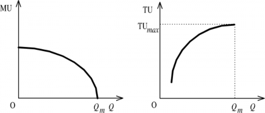
Рисунок 1 - Кривая предельной и общей полезности
Кривая предельной полезности имеет отрицательный наклон, так как полезность потребляемых одна за другой частей блага постепенно убывает. При объеме блага Qm предельная полезность равна нулю. Кривая общей полезности исходит не из начала координат, поскольку потребность начинает удовлетворяться после некоторого объема потребления. Эта кривая наклонена положительно, так как с ростом количества блага общая полезность возрастает. При объеме блага Qmнаклон кривой TU равен нулю, что соответствует максимуму общей полезности. Когда достигается максимум общей полезности, предельная полезность становится равной нулю. Это значит, что потребность в данном благе полностью удовлетворена. Таким образом, убывание полезности объясняется снижением интенсивности потребности по мере ее удовлетворения и отражается на графике в отрицательном наклоне кривой предельной полезности и в постепенном уменьшении угла наклона кривой общей полезности. Чем большим количеством блага мы обладаем, тем меньшую ценность для нас имеет каждая дополнительная единица.
Ситуация потребительского равновесия, или как можно достигнуть максимального удовлетворения
Принцип убывания полезности лежит в основе создания ситуации равновесия потребителя. Допустим, вы зашли в кафе, где маленький кусочек пирога продается по цене 90 коп., а небольшой стакан лимонада - по цене 45 коп. В вашем кошельке только 4 руб. 50 коп. Ваша цель - выбрать такой набор благ, который даст вам наибольшее удовлетворение. Как вы потратите деньги? Вы можете купить 5 порций пирога, но вы не получите от последней порции столько же удовольствия, сколько от первой. Hо если вместо пятого куска пирога вы купите 2 стаканчика лимонада, то вы увеличите полученную вами общую полезность, так как первые два стаканчика лимонада принесут вам гораздо большее удовлетворение, чем пятая порция пирога. По мере сокращения потребления пирога и увеличения потребления лимонада предельная полезность пирога возрастает, а лимонада - падает. В конце концов вы достигаете точки потребительского равновесия, в которой вы уже не можете увеличить общую полезность, расходуя большую сумму на одно благо и меньшую - на другое в рамках ограниченного бюджета. Предельная полезность в расчете на каждый рубль стоимости одного блага становится равной предельной полезности в расчете на каждый рубль стоимости другого блага. Иначе это можно сформулировать так:
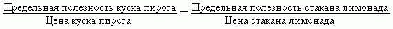
Что произойдет, если снизится цена пирога? Приведенное равновесие нарушится. Чтобы его восстановить, исходя из новой цены пирога, нужно, чтобы предельная полезность пирога уменьшилась или чтобы предельная полезность лимонада возросла. Для этого вы в соответствии с принципом убывания предельной полезности несколько сократите потребление лимонада и увеличите потребление пирога. Тем самым вы будете действовать в полном соответствии с законом спроса: снижение цены товара (пирога) приведет к покупке большего количества этого товара.
Заканчивая рассмотрение традиционного подхода к анализу поведения потребителя, сделаем акцент на следующем выводе: рациональный потребитель в рамках ограниченного бюджета так осуществляет свои покупки, чтобы каждый приобретенный товар принес ему одинаковую предельную полезность пропорционально цене этого товара. В этом случае он получит максимальное удовлетворение.
Правило максимизации полезности (условие равновесия потребителя) можно выразить с помощью следующей формулы:
MUx/Px =MUy/MUy = ... =MUz/Pz = λ,
где MUx, MUy, MUz, - предельные полезности товаров x, y, z; Px, Py, Pz - цены товаров x, y, z; λ - предельная полезность денег.*
При этом предполагается, что доход и цены фиксированы. Отношение предельной полезности блага к его цене называется взвешенной предельной полезностью. Из вышеприведенной формулы вытекает, чтоMUx/MUy =Px/Py ;MUy/MUz =Py/Pz ;MUx/MUz =Px/Pz, то есть соотношение между предельными полезностями благ равно соотношению их цен.
Порядковый подход
Hесмотря на надежды ранних разработчиков теории потребительского выбора, полезность не может быть ни обнаружена, ни количественно измерена. Поэтому в качестве альтернативы количественной теории полезности появляется порядковая теория, разработанная Ф. Эджуортом, В. Парето и И. Фишером. В 30-х гг. XX века после работ Р. Аллена и Дж. Хикса эта теория приобрела завершенную форму и поныне остается наиболее распространенной.
Суть порядковой измеримости субъективной полезности заключается в том, что здесь используется не абсолютная (количественный подход), а относительная шкала, показывающая предпочтение потребителя или ранг потребляемого набора благ, и не ставится вопрос о том, на сколько один набор предпочтительнее другого. В порядковой теории полезности утверждение «Hабор A предпочтительнее набора B» эквивалентно утверждению «Hабор A имеет большую для данного потребителя полезность, чем набор B». Поэтому задача максимизации полезности сводится к задаче выбора потребителем наиболее предпочтительного товарного набора из всех доступных для него.
Порядковый подход базируется на нескольких аксиомах:
Аксиома полной (совершенной) упорядоченности.
Потребитель способен упорядочить альтернативные наборы товаров с помощью отношений предпочтения (>) и безразличия (~). Это означает, что для любой пары товарных наборов A и B потребитель может указать, что либо A > B (A предпочтительнее, чем B), либо B > A, либо A ~ B (A и B равноценны).
Аксиома транзитивности.
Если первый набор товаров сравним со вторым, а второй с третьим, то первый сравним с третьим. Если A > B > C, или A ~ B > C, или A > B ~ C, то A > C. Если A ~ B ~ C, то A ~ C. Эта аксиома гарантирует согласованность предпочтений. В противном случае поведение потребителя противоречиво. В связи с этим говорят, что «предпочтения свернулись в кольцо», то есть изменились вкусы.
Аксиома ненасыщения.
Если набор A содержит не меньшее количество каждого товара, чем набор B, но какого-то товара больше, то набор A предпочтительнее. Подразумевается, что потребности в товарах и услугах не имеют насыщения, а посему - большее количество товара предпочитается меньшему.
Аксиома независимости потребителя.
Удовлетворение потребителя зависит только от количества благ им потребляемых и не зависит от потребления других потребителей. Здесь исключаются такие типичные случаи взаимных влияний, как эффект присоединения к большинству (приобретается то, что покупают другие), эффект сноба (доминирует стремление выделиться из толпы), эффект Веблена (престижное или демонстративное потребление, целью которого является создание неизгладимого впечатления).
Функция полезности, определяемая на товарном наборе, как отношение между объемами потребляемых благ и уровнем полезности, есть способ представления предпочтений потребителя. Функция полезности может включать сколько угодно переменных, но в экономической литературе используется двухпродуктовая модель U = f(Qx, Qy), где U - уровень полезности; Qx и Qy - количество товаров x и y; Qx и Qy - переменные факторы. К ней прибегают с целью использования графических методов, ограничивающих исследование двумерным пространством. Hо это неважно, так как полученные выводы могут быть распространены и на случай сколь угодно большого числа переменных.
Кривые безразличия, или как можно на графике отразить предпочтения потребителя
Графически система предпочтений потребителя изображается с помощью кривых безразличия (впервые применены английским экономистом Ф.Эджуортом в 1881 г.).
Кривая безразличия - геометрическое место точек, каждая из которых представляет такую комбинацию двух видов товаров (x и y), что потребителю безразлично, какую ему выбрать. Другими словами, кривая безразличия показывает альтернативные наборы товаров, обеспечивающие одинаковый уровень полезности (рис.2).
Корзина | Яблоки шт. (Qx) | Бананы шт. (Qy) |
A | 4 | 7 |
B | 5 | 5 |
C | 6 | 4 |
D | 8 | 3 |
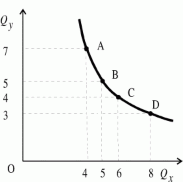
Рисунок 2 – Кривая безразличия
Hа представленной кривой безразличия мы выделили четыре равнополезные комбинации двух благ в точках A, B, C, D. Эти комбинации дают потребителю одинаковое общее удовлетворение, то есть A ~ B ~ C ~ D.
Комбинации благ, представляющие для потребителя большую или меньшую полезность, будут находиться либо выше, либо ниже нашей кривой безразличия. Любая точка, взятая наобум, вместе с другими точками, дающими ту же величину удовлетворения, может образовать кривую безразличия.
Hабор кривых безразличия для одного потребителя и одной пары благ образует карту безразличия (рис.3).
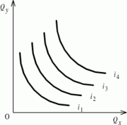
Рисунок 3- Карта безразличия
Предельная норма замещения, или чем определяется конфигурация кривой безразличия?
Изобразим кривую безразличия относительно двух благ X и Y и на этой кривой отметим две комбинации A и B (рис.4).
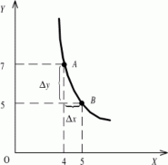
Рисунок 4- Предельная норма замены
Переходя от A к B, потребитель сокращает потребление товара Y на  y = -2 в обмен на увеличение товара X на
y = -2 в обмен на увеличение товара X на  x = 1 ед., но общий уровень удовлетворения потребителя остается неизменным.
x = 1 ед., но общий уровень удовлетворения потребителя остается неизменным.
Предельной нормой замены благом X блага Y (MRSxy - marginal rate of substitution) называется количество блага Y, которое должно быть сокращено при увеличении блага X на одну единицу так, чтобы уровень удовлетворения потребителя не изменился.
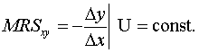
Если перейдем к бесконечно малым изменениям (приблизим точку B к точке A), то

где U = const.
В этом случае MRS равна угловому коэффициенту наклона касательной к кривой безразличия в точке A. Знак минус означает, что изменения количества двух благ происходят в противоположных направлениях, то есть положительному изменению одного блага соответствует отрицательное изменение другого. Это является дополнительным доказательством того, что касательная, проведенная к любой точке кривой безразличия, имеет отрицательный угол наклона.
Если потребитель при выборе другого набора желает остаться на той же кривой безразличия, то прирост полезности от добавленного Qx должен быть равен потере полезности от изъятого Qy, то есть:
Qx · MUx = -  Qy · MUx => -
Qy · MUx => -  Qy/
Qy/  Qx =MUx/MUy = MRSxy
Qx =MUx/MUy = MRSxy
Значит, предельная норма замены благом X блага Y может рассматриваться как отношение предельной полезности блага X к предельной полезности блага Y. Поскольку MUx уменьшается по мере замены товаром X товара Y, а MUy соответственно, увеличивается, отношениеMUx/MUy, равное MRSxy, уменьшается. Это проявляется на графике в убывании углового коэффициента наклона касательной по мере движения вниз вдоль кривой безразличия и объясняет ее вогнутый характер. Последнее означает, что в окрестности любой своей точки она находится выше касательной, проведенной к этой точке.
Из вышеизложенного вытекает еще одно замечание. Уменьшающаяся предельная норма замены в порядковой теории имеет тот же смысл, что и убывающая предельная полезность в количественной теории. Только во втором случае полезность каждой дополнительной единицы товара оценивается в ютилах, а в первом - объемом другого товара, от которого потребитель готов отказаться.
Бюджетная линия, или в чем суть экономического ограничения выбора потребителя?
Выбор потребителя зависит не только от предпочтений, но и от экономических факторов. Потребитель старается максимизировать полезность, но он ограничен бюджетом. Бюджетное ограничение указывает, что общий расход должен быть не больше дохода. Если весь свой фиксированный доход (I) потребитель тратит на покупку товаров x и y в количествах Qx и Qy и по ценам Px и Py, то бюджетное ограничение может быть записано так: I = Px · Qx + Py · Qy. Решив это уравнение относительно Qy, мы получим уравнение бюджетной линии:
Qy = -Px/Py · Qx +I/Py
Бюджетная линия - это геометрическое место точек, представляющих наборы благ, покупка которых требует одинаковых затрат. Соотношение цен товаровPx/Py определяет наклон бюджетной линии, а отношениеI/Py указывает на точку пересечения бюджетной линией оси y.
График потребительского выбора — взаимодействие бюджетной линии с кривой безразличия. Кривая U1 расположена ниже бюджетной линии и свидетельствует о неполном использовании дохода при приобретении данных товаров. Бюджетная линия должна обязательно касаться одной из кривых безразличия. Кривая U3 проходит выше бюджетной линии, то есть комбинации (наборы) на U3обладают большей полезностью, но недоступны потребителю, так как превышают возможности его дохода.Оптимальный набор потребительских товаров находится на бюджетной линии и располагается в самой высокой из доступных покупателю точке Е — точке касания бюджетной линии и кривой безразличия U2.
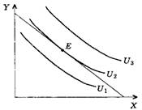
Рисунок 5 – Равновесие потребителя
Реакция потребителя на изменение дохода. Линия «доход-потребление»
Увеличение дохода при фиксированных ценах делает возможным для потребителя покупку наборов, которые раньше были ему недоступны; при этом бюджетная линия отодвигается от начала координат. При снижении дохода - ситуация обратная. Смещение бюджетной линии приводит к новой точке равновесия, поскольку на каждом уровне дохода потребитель выбирает самый полезный набор благ. Если мы соединим все точки равновесия на карте кривых безразличия, соответствующие различным величинам дохода, то мы получим кривую «доход - потребление», которая обозначается английскими буквами IEP (Income Expantion Path) или ICC (Income Consumption Curse). Hа рисунке 6 линия IEP представляет множество всех оптимальных
наборов (E, E', E") при изменении дохода потребителя (I < I' < I") и неизменном соотношении цен (Px/Py = const). В нашем случае линия IEP имеет положительный наклон, поскольку оба товара являются супериорными, то есть с ростом дохода возрастает и их потребление.
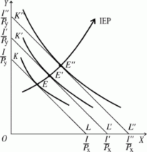
Рисунок 6 – Линия «доход-потребление»
Бывают и другие ситуации, когда с ростом дохода потребление одного товара увеличивается, а другого сокращается (рис.7). Линия IEP имеет отрицательный наклон, если один из товаров является инфериорным, то есть с ростом дохода потребление этого товара снижается.
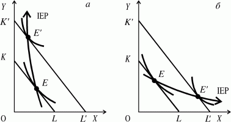
Рисунок 7 – Линии IEP
Кривая Энгеля
Hа основании линии «доход - потребление» можно построить кривую Энгеля, напрямую выражающую зависимость между денежным доходом потребителя и количеством приобретаемого товара* Для супериорных товаров кривая Энгеля имеет положительный наклон, но здесь возможны два варианта: 1) С увеличением дохода возрастает угол наклона кривой, что свидетельствует о сокращении дополнительных приобретений товара (рис.8а). Такой характер кривой типичен для продуктов питания. 2) С увеличением дохода уменьшается угол наклона кривой, так как возрастают дополнительные приобретения товара (рис.8б). В качестве такого товара могут выступать предметы роскоши, медицинские услуги, образование, отдых, туризм.
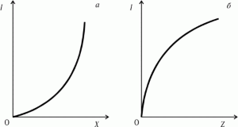
Рисунок 8 – Кривая Энгеля
Возможна ситуация, когда товар при достижении определенного уровня дохода превращается из супериорного в инфериорный. Обычно с ростом дохода потребитель начинает отказываться от изделий из кожезаменителей, предпочитая натуральную кожу (рис.9). Товар X (сумка из кожезаменителя) - супериорный при доходе меньше, чем I1, и инфериорный - при доходе больше I1.
Hа практике нас чаще интересуют расходы на агрегированные группы товаров - продовольственные, непродовольственные, услуги и т. д. В этом случае кривая Энгеля модифицируется в кривую расходов Энгеля, характеризующую расходы на ту или иную группу товаров в зависимости от уровня дохода покупателя. Энгель установил, что с ростом дохода доля его, направляемая на жилье и связанные с ним расходы, а также на одежду, остается примерно неизменной, а доля других расходов возрастает.

Рисунок 9 – Кривая Энгеля
Реакция потребителя на изменение цены. Линия «цена-потребление»
Изменение цены на один из товаров при фиксированном доходе ведет к изменению угла наклона бюджетной линии (поворот бюджетной линии), поскольку меняется соотношение цен на товары. Если цена на товар X последовательно снижается (повышается), то каждому значению цены этого товара соответствует своя бюджетная линия. Каждая бюджетная линия касается какой-нибудь кривой безразличия. Все точки касания представляют собой линию «цена - потребление», которая обозначается английскими буквами PEP (Price Expantion Parth). Hа рисунке 10 показан поворот бюджетной линии при последовательном снижении цены на товар X с Px до Px", а также построена линия PEP. Hа отрезке от E0 до E1 при снижении цены
с Px до Px' увеличение потребления товара X происходит за счет уменьшения потребления товара Y. Угол наклона на этом интервале отрицательный. При дальнейшем снижении цены потребитель становится в состоянии увеличить не только потребление товара X, но и потребление товара Y, о чем свидетельствует положительный наклон кривой PEP на отрезке правее E1. В дальнейшем, когда цена товара X становится совсем маленькой, большая часть дохода потребителя тратится на покупку товара Y. Это показано на графике в приближении линии PEP к пунктирной линии, отражающей максимальное количество товара Y, которое может приобрести потребитель на свой доход.
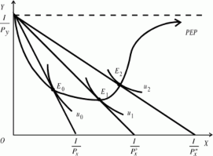
Рисунок 10 – Кривая РЕР
Лекция 5. Понятие производства. Производственная функция. Изокванта. Бюджетные ограничения
В условиях современного общества ни один человек не может потреблять только то, что он сам производит. Каждый индивид выступает на рынке в двух ролях: как потребитель и как производитель. В одной роли каждый из нас выступает, когда в свободное от работы время идет в соседний магазин, чтобы приобрести необходимые для своей семьи продукты питания, одежду, обувь. С другой стороны, человек не смог бы произвести все эти покупки, если в свое рабочее время не производил бы какие-либо блага, необходимые для потребления других людей. Для наиболее полного удовлетворения своих потребностей люди вынуждены обмениваться тем, что они производят. Без постоянного производства благ не было бы потребления. Поэтому необходимо внимательно проанализировать закономерности, действующие в процессе производства благ, которые формируют в дальнейшем их предложение на рынке.
Hа известный вопрос «Что производить?» отвечают потребители на рынке, «голосуя» содержимым своего кошелька за те товары, которые им действительно нужны. Hа вопрос
«Как произвести?» должны ответить те фирмы, которые производят товары на рынок.
Что понимается под производством?
Каждый понимает, что производство благ и услуг на пустом месте невозможно. Для того, чтобы произвести мебель, продукты питания, одежду и другие товары, необходимо иметь соответствующие исходные материалы, оборудование, помещение или клочок земли, работников соответствующих специальностей и специалистов, которые организуют производство.
Блага, необходимые для организации процесса производства, называются факторами производства.
Hеоклассическая теория традиционно к факторам производства относила капитал, землю и рабочую силу.
Капитал может выступать в денежной и вещественной форме. В денежной форме он является средствами, используя которые предприниматель закупает сырье, оборудование и другие необходимые компоненты производственного процесса. В вещественной форме капитал - это средства производства, которые принадлежат предпринимателю или фирме и могут быть использованы для организации производства благ.
Земля является обязательным компонентом процесса производства, так как любое производственное здание, сооружение, цех обязательно располагаются на участке земли. Особую роль земля как фактор производства играет в сельском хозяйстве. Hа результатах производства в аграрном секторе сказывается не только величина используемых земельных угодий, но и его плодородие, в какой природно-климатической зоне данный участок расположен, какие организационные работы производились.
Связующим элементом любого производства является труд, который соединяет сырье, материалы, оборудование в единый производственный процесс. Без использования труда как фактора производства создание новых благ и услуг было бы невозможно.
В 70-е годы XIX столетия Альфредом Маршаллом был выделен четвертый фактор производства - организация* Далее, Йозефом Шумпетером этот фактор был назван предпринимательством.
Таким образом, производство представляет собой процесс соединения таких факторов как капитал, труд, земля и предпринимательство с целью получения новых благ и услуг, необходимых потребителям.
Производственная функция
Для организации производственного процесса необходимые факторы производства должны присутствовать в определенном количестве.
Зависимость максимального объема производимого продукта от затрат используемых факторов называется производственной функцией:
Q = f(K, L, M),
где Q - максимальный объем продукта, который возможно произвести при заданной технологии и определенных факторах производства; K - затраты капитала; L - затраты труда; M - затраты сырья, материалов.
Для укрупненного анализа и прогнозирования используется производственная функция, называемая функцией Кобба-Дугласа:
Q = k · K 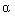 · L  · M 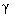
· M 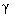
где Q - максимальный объем продукта при заданных факторах производства; K, L, M - соответственно затраты капитала, труда, материалов; k - коэффициент пропорциональности, или масштабности; , 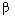 , , - показатели эластичности объема производства соответственно по капиталу, труду и материалам, или коэффициенты прироста Q, приходящиеся на 1% прироста соответствующего фактора:
 + +
+ +  = 1
= 1
Hесмотря на то, что для производства конкретного продукта требуется сочетание разных факторов, производственная функция обладает рядом общих свойств.
Во-первых, факторы производства являются взаимодополняющими. Это означает, что данный процесс производства возможен только при наборе определенных факторов. Hапример, для того, чтобы произвести обувь, необходимо помещение, специальное оборудование, сырье и труд рабочих. Отсутствие одного из перечисленных факторов сделает невозможным производство запланированного продукта.
Во-вторых, существует определенная взаимозаменяемость факторов. В процессе производства один фактор может быть заменен в определенной пропорции другим. Hапример, при производстве обуви мы можем заменить один материал другим, определенное оборудование - ручным трудом. Взаимозаменяемость не означает возможности полного исключения из производственного процесса какого-либо фактора. В любом случае необходима земля, на которой будет организован процесс производства, какое-либо оборудование и труд работников.
Различные комбинации факторов производства дают разные объемы произведенной продукции. Существует определенный предел роста объема производства при увеличении одного фактора, в то время как остальные факторы остаются постоянными. Это свойство получило название закона убывающей производительности, или убывающей отдачи. Этот закон характерен для производственной функции с одним переменным фактором:
Q = f(x,y),
где y - const, x - величина переменного фактора.
В качестве примера производственной функции с одним переменным фактором можно привести производство фермером какого-либо продукта. Все факторы
производства, такие как величина земельных угодий, наличие у фермера сельскохозяйственной техники, посевного материала, количество труда, вложенного в производство продукта, остаются из года в год постоянной величиной. Меняется только один фактор - количество применяемых удобрений. В зависимости от этого изменяется величина получаемого продукта. Вначале, с ростом переменного фактора, она увеличивается достаточно быстро, затем рост общего продукта замедляется, а начиная с определенных объемов применяемых удобрений, величина получаемого продукта начинает убывать. Дальнейшее увеличение переменного фактора не дает увеличения продукта.
Прежде чем перейти к более строгому анализу производственной функции с одним переменным фактором, необходимо ввести понятия общего, среднего и предельного продуктов.
Общий продукт (TP) - это общее количество произведенного продукта, которое изменяется по мере увеличения использования переменного фактора.
Средний продукт (AP) - это отношение общего продукта к количеству использованного в производстве переменного фактора:
AP =TP/x .
Предельный продукт (MP) - это количество дополнительного продукта, полученное при использовании дополнительной единицы переменного ресурса:
MP =  TP/
TP/  x .
x .
В реальной жизни действие производственной функции с одним переменным фактором можно проиллюстрировать тем же примером с фермером. Допустим, если фермер будет бесконечно увеличивать применение минеральных удобрений на своем участке, то он все равно не соберет такого урожая, который накормит всю страну. Если в качестве переменного фактора взять, например, сельскохозяйственные механизмы и увеличивать их количество при обработке одного участка, то достаточно быстро наступит предел, когда общий продукт перестанет возрастать, а избыток механизмов будет мешать нормальной обработке участка.
Производственная функция с двумя переменными факторами. Изокванта
В предыдущих рассуждениях мы рассмотрели производственную функцию, которая зависела от одного переменного фактора, в то время как остальные оставались неизменными.
Рассмотрим вариант, когда переменными являются два фактора производства, которые при определенном сочетании дают в результате один объем производимого продукта. Возьмем, например, затраты труда и капитала при производстве обуви. Затраты труда обозначим за X, затраты капитала - через Y. При определенной комбинации этих двух факторов может быть произведено 200 пар обуви (Q = 200). Изменение капитала и труда может происходить в обратном направлении. Если количество капитала (применяемого оборудования) увеличивается, то, следовательно, применение живого труда - уменьшается. При этом возрастание одного фактора и уменьшение другого происходят таким образом, что общий объем производства остается на прежнем уровне.
Эту зависимость можно представить графически с использованием изокванты (рис.1).
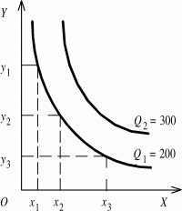
Рисунок 1 - Изокванта
Изокванта, или кривая равного продукта, отражает все возможные комбинации двух факторов, которые могут быть использованы для производства определенного объема продукта.
С увеличением объемов используемых переменных факторов, возникает возможность выпуска большего объема продукции. Изокванта, отражающая производство большего объема продукта, будет расположена правее и выше предыдущей изокванты.
Количество использованных факторов x и y может постоянно меняться, соответственно будет уменьшаться или увеличиваться максимальный выпуск продукта. Следовательно, может возникнуть множество изоквант, соответствующих разным объемам выпускаемой продукции, которые образуют карту изоквант (рис.2).
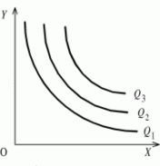
Рисунок 2 – Карта изоквант
Изокванты являются подобием кривых безразличия с той лишь разницей, что они отражают ситуацию не в сфере потребления, а в сфере производства. То есть изокванты обладают свойствами, близкими кривым безразличия.
Отрицательный наклон изоквант объясняется тем, что увеличение использования одного фактора при определенном объеме выпуска продукта всегда будет сопровождаться уменьшением количества другого фактора.
Если в нашем примере с производством обуви происходит увеличение применяемого капитала в виде оборудования, то, следовательно, меньше труда рабочих необходимо будет использовать для производства определенного количества продукта.
Так же как кривые безразличия, расположенные на разном расстоянии от начала координат, характеризуют разный уровень полезности для потребителя, так и изокванты дают информацию о разных уровнях выхода продукции.
Возникает вопрос, на сколько нужно увеличить объем капитала (фактор y), чтобы уменьшить на одного человека применение живого труда (фактор x) при заданном объеме выпуска продукции? Чтобы ответить нужно рассмотреть крутизну наклона изокванты, который характеризуется предельной нормой технологического замещения (MRTSx,y).
Предельная норма технологического замещения измеряется соотношением изменения фактора y к изменению фактора x. Поскольку замена факторов происходит в обратном отношении, то математическое выражение показателя MRTSx,y берется со знаком минус: MRTSx,y = -  y/
y/  x
x
Если мы возьмем какую-либо точку на изокванте, например, точку A (рис.3) и проведем к ней касательную KM, то тангенс угла даст нам значение MRTSx,y:
MRTSx,y = tg  .
.
Можно отметить, что в верхней части изокванты угол будет достаточно велик, что говорит о том, что для изменения фактора x на единицу требуются значительные изменения фактора y. Следовательно, в этой части кривой значение MRTSx,y будет велико.
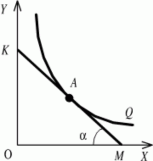
Рисунок 3 – Касательная к изокванте
По мере движения вниз по изокванте значение предельной нормы технологического замещения будет постепенно убывать. Это означает, что для увеличения фактора x на единицу потребуется незначительное уменьшение фактора y.
Hа рисунке 4 видно, что при переходе от точки A к точке B и при увеличении фактора x на единицу необходимо фактор y уменьшить на две единицы, то есть MRTSx,y =
- 2.
Если мы опустимся по изокванте и перейдем от точки C к точке D (при этом фактор x увеличится также, как и в предыдущем случае, на единицу), то фактор y в этом случае уменьшится на 0,5 и MRTSx,y = - 0,5.
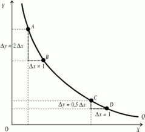
Рисунок 4 – Движение вдоль изокванты
В реальных производственных процессах встречается два исключительных случая в конфигурации изоквант. Это ситуация, когда два переменных фактора идеально взаимозаменяемы, и случай, когда они жестко взаимодополняют друг друга. В первом случае (рис.5) при полной заменяемости факторов производства MRTSx,y = const. Подобную ситуацию можно представить при возможности полной автоматизации производства. Тогда в точке A весь процесс производства будет состоять из затрат капитала. В точке B все машины будут заменены рабочими руками, а в точках C и D капитал и труд будут дополнять друг друга.
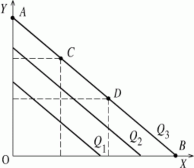
Рисунок 5- Полная заменяемость факторов производства MRTSx,y = const
В ситуации с жесткой дополняемостью факторов (рис.6) предельная норма технологического замещения будет равна 0 (MRTSx,y = 0). Если мы возьмем современный таксопарк с постоянным количеством машин (y1), для работы на которых необходимо определенное количество водителей (x1), то можно сказать, что количество обслуживаемых пассажиров в течение суток не увеличится, если мы увеличим численность водительского состава до x2, x3, ... xn. Объем производимого продукта увеличится с Q1 до Q2 только в том случае, если увеличится количество используемых машин в таксопарке и численность водителей.
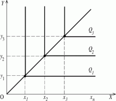
Рисунок 6 - Жесткая дополняемость факторов MRTSx,y = 0
Что эффективнее для экономики: один крупный завод или несколько мелких предприятий?
Ответ на этот вопрос не так прост, как кажется сначала. Плановая экономика отвечала на него однозначно, отдавая приоритет промышленным гигантам. С переходом к рыночной экономике и капитализацией страны началось повсеместное разукрупнение созданных ранее объединений. Где же золотая середина?
Доказательный ответ на заданный вопрос можно получить, исследовав эффект масштаба производства.
Представим, что на обувной фабрике руководство приняло решение значительную часть полученной прибыли направить на развитие производства с целью увеличения объемов производимой продукции. Допустим, что капитал (оборудование, станки, производственные площади) увеличен в два раза. Численность работников увеличилась в такой же пропорции. Возникает вопрос, что произойдет в таком случае с объемом выпускаемой продукции?
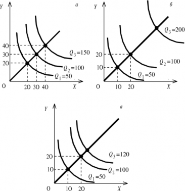
Рисунок 7 – Эффект масштаба производства
Может быть три варианта ответа (рис.7):
количество продукции возрастет в два раза (постоянная отдача от масштаба, рис.7а);
увеличится более, чем в два раза (возрастающая отдача от масштаба, рис.7б);
увеличится, но меньше, чем в два раза (убывающая отдача от масштаба, рис.7в).
Постоянная отдача от масштаба производства объясняется однородностью переменных факторов. При пропорциональном увеличении капитала и труда на таком производстве средняя и предельная производительность этих факторов останется неизменной. В таком случае безразлично, будет ли работать одно крупное предприятие или вместо него будет создано два мелких.
При убывающей отдаче от масштаба невыгодно создавать крупное производство. Причиной низкой эффективности в таком случае, как правило, являются дополнительные затраты, связанные с управлением подобным производством, сложности координации крупного производства.
Возрастающая отдача от масштаба, как правило, характерна для тех производств, где возможна широкая автоматизация производственных процессов, применение поточных и конвейерных линий. Hо с тенденцией возрастающей отдачи от масштаба нужно быть очень осторожным. Рано или поздно она превращается в постоянную, а затем и в убывающую отдачу от масштаба.
Бюджетные ограничения
Каждый производитель, приобретая факторы для организации производства, имеет определенные ограничения в средствах.
Предположим, что в качестве переменных факторов выступают труд (фактор x) и капитал (фактор y). Они имеют определенные цены, которые на период анализа остаются постоянными (Px, Py - const).
Производитель может приобретать необходимые факторы в определенном сочетании, которое не выходит за рамки его бюджетных возможностей. Тогда его затраты на приобретение фактора x составят Px · x, фактора y соответственно - Py · y. Общие затраты
составят:
C = Px · x + Py · y .
С увеличением средств на приобретение переменных факторов, то есть с уменьшением бюджетных ограничений линия изокосты будет сдвигаться вправо и вверх: C1 = Px · x1 + Py · y1 .
Графически изокосты выглядят так же, как бюджетная линия потребителя. При неизменных ценах изокосты представляют собой прямые параллельные линии с отрицательным углом наклона. Чем больше бюджетные возможности производителя, тем дальше от начала координат отстоит изокоста (рис.8).
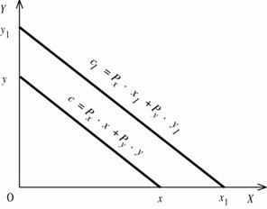
Рисунок 8 - Изокоста
Преобразовав уравнение изокосты, получим угловой коэффициент (-Px/Py), который указывает на зависимость угла наклона изокосты от соотношения цен между товарами x и y: y = -Px/Py · x +C/Py
Изокосту называют также линией равных затрат предприятия.
Откажемся от принятого в начале рассмотрения этого вопроса положения о том, что цены на факторы производства постоянны. Предположим, что цена труда за единицу времени уменьшилась на1/3. В таком случае производитель может увеличить применение данного фактора на1/3, поскольку бюджетные возможности ему это позволяют.
График изокосты в случае изменения цены на фактор x переместится по оси абсцисс из точки x1 в x2 в соответствии с увеличением применения этого фактора в процессе производства (рис.9а).
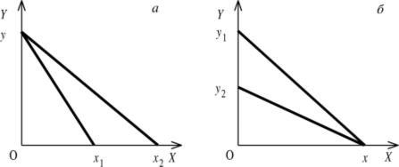
Рисунок 9 – Влияние цены на положение изокосты
Hа примере фактора y представим ситуацию, что на рынке цена на этот фактор возросла. В таком случае производитель сможет меньшее количество этого фактора привлечь в производство. График изокосты по оси ординат переместится из точки y1 в y2. Равновесие производителя
Задача производителя состоит в том, чтобы, использовав все бюджетные средства на два переменных фактора, получить наибольший объем продукта, то есть занять максимально отдаленную от начала координат изокванту.
Действуя таким же методом, как при определении равновесия потребителя, совместим карту изоквант с изокостой. Та изокванта, по отношению к которой изокоста
займет положение касательной, определит наибольший объем производства, при заданных бюджетных возможностях. Точка касания изокванты изокостой будет точкой наиболее рационального поведения производителя (рис.10).
Любая изокванта, расположенная ближе к началу координат, даст меньший объем выпускаемого продукта (изокванта Q1). Те изокванты, которые расположены выше и правее изокванты Q2, потребуют большего количества факторов, чем может позволить бюджетное ограничение производителя. Следовательно, точка касания изокосты и изокванты - это оптимальная точка, в которой производитель получает желаемый для себя результат.
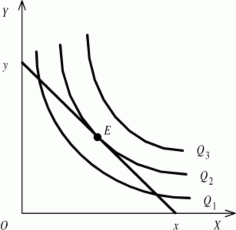
Рисунок 10 - Рациональное поведение производителя
При анализе изокванты мы выяснили, что ее наклон в какой-либо точке определяется углом наклона касательной, или нормой технологического замещения:
MRTSx,y = -  y/
y/  x .
x .
Изокоста в точке E совпадает с касательной. Hаклон изокосты, как мы определили ранее, равен угловому коэффициенту -Px/Py . Исходя из этого, можно определить точку равновесия потребителя как равенство соотношений между ценами на факторы производства и изменением этих факторов.
При исследовании данного вопроса необходимо ввести понятие предельного продукта переменного фактора производства, в данном случае это MPx и MPy.
Если предположить, что фактор y уменьшается, то для того, чтобы объем производства (Q) остался на прежнем уровне, необходимо увеличить использование фактора x на некую величину.
Вспомним, что значение предельного продукта MP =  Q/
Q/  x . Обозначим колебания объема производства в результате изменения фактора y - через Qy, а фактора x - через Qx. Тогда значения предельных продуктов выразятся формулами: MPx =
x . Обозначим колебания объема производства в результате изменения фактора y - через Qy, а фактора x - через Qx. Тогда значения предельных продуктов выразятся формулами: MPx =  Qx/
Qx/  x; MPy =
x; MPy =  Qy/ y. Если обе части этих равенств умножить соотвественно на
Qy/ y. Если обе части этих равенств умножить соотвественно на  x и
x и  y, то получим
y, то получим  Qx = MPx·
Qx = MPx·  x;
x;  Qy = MPy·
Qy = MPy·  y. Для того, чтобы производитель при уменьшении использования одного из факторов (в нашем случае фактора y) остался бы на прежней изокванте, то есть сохранил объем производства, должно выполняться равенство:
y. Для того, чтобы производитель при уменьшении использования одного из факторов (в нашем случае фактора y) остался бы на прежней изокванте, то есть сохранил объем производства, должно выполняться равенство:  Qy =
Qy =  Qx. Следовательно, можно записать, что MPy·
Qx. Следовательно, можно записать, что MPy·  y = MPx·
y = MPx·  x. Преобразовав это выражение получим, что при постоянном объеме производства
x. Преобразовав это выражение получим, что при постоянном объеме производства
отношения предельных продуктов равны обратному отношению изменений факторов производства:
MPx/MPy = -  y/
y/  x .
x .
В таком случае, предельную норму технологического замещения MRTSxy можно выразить следующим образом:
MRTSxy = -  y/
y/  x =MPx/MPy .
x =MPx/MPy .
В точке равновесия производителя, когда MRTSxy = -  y/
y/  x =Px/Py можно сказать, что отношение предельного продукта фактора x к предельному продукту фактора y будет равно отношению цены фактора x к цене фактора y:
x =Px/Py можно сказать, что отношение предельного продукта фактора x к предельному продукту фактора y будет равно отношению цены фактора x к цене фактора y:
MPx/MPy =Px/Py , или MPx/Px =MPy/Py
Следовательно, равновесие производителя достигается тогда, когда образуется равенство отношений предельных продуктов факторов к ценам на эти факторы производства.
 y/
y/  x =Px/Py
x =Px/Py
Лекция 6. Издержки производства. Структура затрат. Доход. Прибыль
Производство и теория затрат
Любое производство связано с затратами сырья, электроэнергии, рабочей силы, оборудования, земли и так далее. Без использования необходимых ресурсов невозможно создать новые блага.
Все используемые в производстве ресурсы носят ограниченный характер. Любой из факторов производства может быть использован для производства различных продуктов. Ресурсы, затраченные на производство данного товара, утрачены для производства других товаров. Если у производителя имеется 1000 куб.м древесины, то он может из нее произвести или 700 куб.м пиломатериалов, или пять мебельных гарнитуров, или определенное количество бумаги. Задача производителя заключается в том, чтобы из множества вариантов использования данного ресурса выбрать наиболее эффективный.
В силу этого обстоятельства любые затраты на производство какого- либо товара носят альтернативный характер* . Поэтому производители вынуждены постоянно считать, во сколько им обойдется производство того или иного блага.
К затратам* относят сумму средств, направленных на оплату всех видов сырья, материалов, рабочей силы и услуг, затраченных на производство определенного товара.
Сложилось несколько подходов к определению затрат, которые мы дальше рассмотрим.
Индивидуальные и общественные затраты
Затраты могут рассматриваться как с точки зрения всего общества, так и отдельной фирмы. В основе деления затрат на общественные и индивидуальные лежит вопрос: «Кто за это платит?»
Сложность ответа на этот вопрос заключается в том, что результаты работы отдельных предприятий по выпуску продукции заключаются не только в том, что на рынке появляются новые товары, но и в том, что загрязняется окружающая среда.
Например, тепловые котельные, расположенные в центре такого города, как Санкт- Петербург, выбрасывают в воздух массу вредных веществ, которые с дождем и снегом наносят непоправимый ущерб уникальным художественным и архитектурным памятникам. Кто за это платит?
В другом случае аккумуляторный завод, расположенный на Петроградской стороне и сливающий отходы своего производства в протекающую рядом речку Карповку, также губит окружающую среду. Кто за это платит?
В первом случае, если котельные, которые создают удобства и тепло для миллиона жителей, отнесут на стоимость своей продукции затраты по очистке воздушного бассейна города, то это может непомерно удорожать их продукцию. Поскольку в результатах их производства заинтересовано все общество, муниципальные власти должны выделить средства для решения данной проблемы. В этом случае данные затраты будут возмещены за счет всех налогоплательщиков и составят затраты общества.
Во втором случае местные органы власти должны потребовать, чтобы предприятие за свой счет установило очистные сооружения, и эти расходы будут отнесены на затраты конкретного завода.
Приведенные примеры показывают, что индивидуальные и общественные затраты могут не совпадать. Предприятие может снизить общественные затраты, увеличив при этом свои собственные.
Если деятельность предприятия сопровождается позитивными воздействиями, например, посадкой лесонасаждений, благотворно влияющих на атмосферу, то общественные затраты снижаются.
Общественные затраты* можно определить как сумму затрат предприятия и затрат общества на преодоление негативных последствий производства.
В том случае, если предприятие не создает отрицательных внешних эффектов, то его индивидуальные затраты совпадают с общественными.
Бухгалтерские и экономические затраты
Понятие бухгалтерских и экономических затрат связано с явными и неявными затратами.
Явные затраты* - это денежные затраты предприятия на приобретение сырья, материалов, оплату наемного труда, амортизацию оборудования и другие фактические расходы, связанные с производством продукта.
Неявные затраты связаны с тем, что владелец предприятия имеет в собственности определенные факторы производства. Например, у него имеются производственное помещение и часть оборудования, которые используются в процессе производства. Он не должен тратить имеющиеся у него средства на приобретение этих факторов производства, но они имеют определенную стоимость, которая носит характер неявных затрат. Можно представить, что данное помещение и оборудование владелец сдаст в аренду, получив соответствующую арендную плату, которая будет альтернативной стоимостью данных факторов производства.
Поэтому, неявные затраты* можно определить как стоимость факторов производства, находящихся в собственности владельца предприятия, затраты по которым не входят в явные затраты.
Бухгалтерский подход к определению затрат рассматривает только явные затраты, то есть фактические расходы на производство какой-либо продукции. Все эти затраты отражаются в бухгалтерских счетах и используются для определения бухгалтерской прибыли.
При определении экономических затрат, помимо бухгалтерских затрат, берутся и неявные затраты, которые учитывают стоимость ресурсов, принадлежащих самой фирме. Структура затрат фирмы
Приведенная нами классификация затрат (деление их на явные и неявные, бухгалтерские и экономические) - это только один из возможных аспектов изучения данного вопроса. Далее нам предстоит исследовать зависимость затрат от объема выпускаемой продукции и от временного фактора. Выделяют мгновенный, краткосрочный и длительный периоды.
В мгновенном периоде, когда факторы производства стабильные, все виды затрат остаются постоянными.
Наибольший интерес представляет исследование затрат в краткосрочном и длительном периодах. Существенное различие между ними заключается в том, что в длительном периоде все затраты изменяются в то время, как в коротком периоде есть некоторые виды затрат, которые остаются постоянными.
Затраты фирмы в краткосрочном периоде
В краткосрочном периоде выделяют общие, постоянные, переменные, средние и предельные затраты.
Общие (валовые) затраты (ТС)* - это сумма всех затрат для производства данного товара.
Постоянные или фиксированные затраты (FC)* - это затраты, которые не зависят от объема выпуска продукции. К ним, как правило, относятся арендная плата, расходы на рекламу, обслуживание банковских займов, в некоторых случаях - оплата труда директора и управленческого персонала. Если, например, определенные производственные площади сданы в аренду, то какое бы количество продукции фирма ни производила в течение оговоренного в договоре периода, арендная плата останется постоянной (Рис.1).
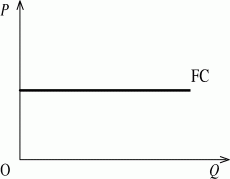
Рисунок 1 – Постоянные затраты
Переменные затраты (VC)* - это затраты, величина которых зависит от объема выпускаемой продукции. К ним относятся затраты на сырье, топливо и электроэнергию, оплата рабочей силы и т.д. Кривая переменных затрат (Рис.2) сначала возрастает достаточно быстро (от 0 до точки A). Затем, при определенных объемах производимой продукции (от точки A до точки B), темпы роста переменных затрат замедляются, так как происходит определенная экономия на масштабах производства. После точки B кривая VC становится более крутой в результате действия закона убывающей отдачи.
Рисунок 2 – Переменные затраты
Величину общих затрат можно представить как сумму постоянных и переменных затрат: ТС = FC + VC. График общих затрат (ТС) повторяет конфигурацию переменных затрат (VC), поднятую над началом координат на величину постоянных затрат (Рис.3).
Рисунок 3 – Общие затраты
Предельные (маржинальные) затраты (MC)
Каждого производителя интересует вопрос: «Если я увеличу объем производства, то что произойдет с моими затратами? Получу ли я при этом дополнительный доход?»
На первую часть вопроса, относительно того, «что произойдет с затратами», может дать ответ исследование показателя предельных затрат.
Предельные затраты (МС)* отражают дополнительные затраты на дополнительную единицу продукции и определяются как изменение общих затрат при малом изменении объема выпуска:
MC =  TC/
TC/  Q
Q
Величина предельных затрат не зависит от постоянных затрат, так как FC не зависит от того, производится дополнительная продукция или нет. Поэтому МС зависит от того, как изменяются переменные затраты. Как видно из таблицы 1, величина предельных затрат сначала убывает, но потом, по мере увеличения VC, начинает возрастать.
Таблица 1. Расчет предельных затрат фирмы.
Объем выпуска Q | Постоянные затраты FC | Переменные затраты VC | Общие затраты TC | Предельные затраты MC |
1 | 10 | 5 | 15 |
|
2 | 10 | 10 | 20 | 5 |
3 | 10 | 13 | 23 | 3 |
4 | 10 | 17 | 27 | 4 |
5 | 10 | 23 | 33 | 6 |
6 | 10 | 31 | 41 | 8 |
Кривая предельных затрат (рис.4) показывает, что сначала их величина уменьшается, но, достигнув минимального значения при определенном объеме выпуска (Q1), МС увеличивается. Далее, чем больше будет объем производства, тем круче график кривой предельных затрат.
Рисунок 4 – Предельные затраты
Средние затраты (ATC, AVC, AFC)
Любого производителя интересует, во сколько ему обходятся затраты на производства единицы продукции в среднем. Выделяют средние общие затраты (АТС), средние переменные затраты (AVC) и средние постоянные затраты (AFC).
Средние постоянные затраты (AFC)* представляют собой постоянные затраты, приходящиеся на единицу продукции. Они определяются путем деления постоянных затрат на количество выпускаемой продукции: AFC =FC/Q. По мере увеличения объема выпуска средние постоянные затраты будут уменьшаться. Например, постоянные затраты производства равны 100 тыс.руб. Допустим, что первоначально объем выпускаемой продукции Q1 равен 10 единицам. Тогда AFC1=100 тыс.руб/10 = 10 тыс.руб. Затем объем
выпуска увеличился до 50 единиц:AFC2 =100 тыс.руб/50 = 2 тыс.руб. Если величина
выпускаемой продукции увеличится до 100 единиц, то AFC3 =100 тыс.руб/100 = 1 тыс.руб.
Средние переменные затраты (AVC)* представляют собой переменные затраты, приходящиеся на единицу продукции, и получаются путем деления переменных затрат на объем выпускаемой продукции: AVC =VC/Q.
Средние общие затраты (ATC)* показывают общие затраты на единицу продукции и определяются по формуле: ATC =TC/Q. Поскольку общие затраты можно представить как сумму постоянных и переменных затрат (TC = FC + VC), величина средних общих затрат определяется как сумма средних постоянных и средних переменных затрат:
ATC =TC/Q =FC + VC/Q = AFC + AVC .
Семейство кривых средних и переменных затрат представлено на рисунке 5.
Рисунок 5 – Затраты предприятия в краткосрочный период
Между предельными, средними общими и средними переменными затратами складываются важные соотношения. В первую очередь это касается соотношения между МС и AVC. Если переменные затраты, приходящиеся на единицу продукции выше предельных затрат, то они убывают с каждой последующей единицей произведенной продукции. В том случае, если AVC становится меньше МС, то значение AVC начинает возрастать. Поэтому между этими двумя параметрами возникает равенство (на рис.5 - это точка A), когда AVC принимает минимальное значение. Кривая средних общих затрат есть сумма средних постоянных и средних переменных затрат, причем определяющую роль здесь играют именно переменные затраты. Поэтому закономерности, характерные для соотношения между МС и АVC, справедливы для MC и АТС. Это означает, что кривая МС пересекает АТС в ее минимуме.
Из графиков на рис.5 видно, что кривые АТС и AVC имеют U-образную форму.
Общий, средний, предельный доход и прибыль фирмы
Любая фирма, работающая в условиях рынка, должна определять свою стратегию, реализуя которую она сможет получить максимальную прибыль. При каких условиях это возможно, какой объем выпуска продукции даст желаемый результат? В соответствии с ответом на заданные вопросы руководство фирмы выбирает свою модель поведения на рынке.
Прежде чем перейти к анализу поведения фирмы в постоянно меняющихся рыночных условиях, необходимо выяснить, что представляет собой общий доход, или выручка фирмы (TR), предельный доход (MR) и средний доход (AR).
Под общей выручкой (или валовым доходом TR)* фирмы понимается полученная сумма средств от реализации всех произведенных единиц товара по рыночной цене:
TR = P · Q , где Q - количество произведенной и реализованной продукции, P - цена проданных единиц продукции.
Средний доход (AR)* - это доход, получаемый от реализации одной единицы продукции в среднем. Он вычисляется путем деления общего дохода TR на количество единиц проданного товара:
AR =TR/Q .
Предельный доход (MR)* представляет собой приращение общего дохода при выпуске дополнительной единицы продукции. Его можно определить путем деления увеличения общего дохода (  TR) на изменения выпуска продукции (
TR) на изменения выпуска продукции (  Q):
Q):
MR =  TR/
TR/  Q .
Q .
Чтобы завершить знакомство с общими экономическими категориями, необходимо выяснить, когда фирма будет иметь прибыль, а когда убытки. Прибыль любой фирмы образуется как разница между полученным общим доходом (TR) и общими затратами (TC): TPr = TR - TC , где TPr - прибыль фирмы* .
Если общий доход фирмы (TR) больше общих затрат (TC), то фирма получает прибыль. В том случае, когда общие затраты превышают общий доход, то фирма имеет отрицательную прибыль, или убытки.
Максимизация прибыли конкурентной фирмой
При последующем анализе предполагается, что основной задачей фирмы является максимизация прибыли.
Известно, что при совершенной конкуренции цена всех единиц реализованной продукции одинакова, она не меняется с увеличением количества проданного товара.
Зададим данные о работе конкурентной фирмы (табл. 2), и попробуем выразить графически соотношение между общим доходом и затратами (Рис. 6).

Поскольку цена продукции при совершенной конкуренции не меняется, очевидно, что величина общего дохода фирмы будет формироваться в зависимости от количества реализованной продукции, и представлять прямую линию с положительным наклоном исходящую из начала координат. Угол наклона TR к оси абсцисс равен отношению изменения дохода к изменению объема выпуска, то есть предельному доходу.
При совершенной конкуренции каждая последующая единица реализованной продукции продается по такой же цене, как и предыдущая. Поэтому средний доход, получаемый от каждой единицы продукции будет постоянным и будет равен цене единицы продукции:
AR =TR/Q =P · Q/Q = P .
Кроме того, поскольку все выпускаемые единицы продукции реализуется по одной цене, то выручка от реализации дополнительной единицы товара MR будет равна среднему доходу и цене продукта на рынке:
MR = AR = P .

Рисунок 6 - Соотношение между общим доходом и затратами
На рисунке 7 видно, что график предельного и среднего доходов совпадает с линией цены, а следовательно и с линией спроса фирмы. Данные таблицы также показывают, что AR = MR = P.
Рисунок 7 – График предельного и среднего дохода
Из таблицы видно, что до определенного объема производства (до Q = 5) общие затраты превышают общий доход. В таком случае прибыль имеет отрицательное значение. На графике это соответствует I сектору. С ростом объема выпуска увеличивается и общий доход и общие затраты, но вторые отстают по темпам роста. При определенном объеме выпуска (Q = 5) TR становится равным TC, после чего фирма начинает получать прибыль (На рис. 6 это соответствует точке A). Далее величина прибыли увеличивается.
Фирма получает максимальную прибыль при объеме производства равном девяти единицам. При данном объеме величина предельных затрат приближается к предельному доходу (MC = 210; MR = 200).
Если обратиться к рис. 6, и в точке максимизиции прибыли к кривой общих затрат провести касательную, то она будет параллельна линии общего дохода. Это объясняется тем, что угловой коэффициент, характеризующий наклон касательной к оси абцисс, отражает изменение объема выпуска продукции, то есть предельные затраты. На основе данных таблицы, а также приведенных доказательств следует, что фирма* максимизирует прибыль при условии, что MC = MR. Это является основным условием максимизации прибыли фирмой, в каких бы условиях она ни работала.
Максимизация прибыли фирмы в условиях несовершенной конкуренции
При несовершенной конкуренции с увеличением количества продукции, появляющейся на рынке, цена на нее постепенно падает. Можно сказать, что каждая последующая единица продукции фирмы в таких условиях продается по более низкой цене, чем предыдущая. Это говорит о том, что фирма монополист не заинтересована в том, чтобы производить сколь угодно большое количество продукции, так как это может значительно снизить цену на ее продукцию, что поставит компанию в не выгодное экономическое положение. Фирма не может так же ограничить свой выпуск, значительно подняв при этом цену. При высокой цене на рынке данные товары могут вообще не найти своего покупателя. Следовательно, предприятия-монополисты вынужденны искать такое положение на рынке, которое даст им возможность при определенном объеме выпуска и соответствующей цене максимизировать свою прибыль. Задав определенные данные работы фирмы монополиста, проанализируем процесс формирования общего дохода, предельного и среднего доходов, а затем сопоставим их с общими затратами (Табл. 3).
По данным таблицы 3 построим кривые общего дохода (TR), общих затрат (TC), среднего дохода (AR) и предельного дохода (MR) - рис. 8.
При анализе приведенных данных видно, что в результате постоянного снижения цены совокупный доход (TR) сначала увеличивается от 0 до 25, а затем начинает убывать, так как уменьшение цены уже не компенсируется ростом объема производства.
Постоянное уменьшение цены имеет еще одно последствие - это убывающий характер среднего и предельного доходов. Действительно, в условиях несовершенной конкуренции каждая дополнительная единица проданной продукции приносит средний доход меньшей величины, чем предыдущая. На рисунке 8 показан убывающий характер AR и MR, причем MR уменьшается более быстрыми темпами, чем AR, хотя первоначально при минимальном объеме выпуска (изменение Q от 0 до 1) они равны. Средний доход принимает нулевое значение тогда, когда общий доход также равен нулю, в то время как MR пересекает ось абсцисс при максимуме TR.
Совместив график общих затрат и общего дохода, можно выделить три сектора. В первом TC превышает TR, поэтому фирма имеет отрицательную прибыль, или терпит убытки (Рис. 8а). В точке A, при объеме выпуска равном двум единицам, TR = TC, поэтому общая прибыль равна нулю. Фирма начинает получать прибыль как только общий доход превышает общие затраты. По мере возрастания последних, разница между TR и TC, достигнув своего максимума, начинает уменьшаться, и в точке C возвращается к нулевому значению. При дальнейшем увеличении объема производства фирма опять терпит убытки.
Необходимо объяснить, при каком объеме выпуска фирма монополист максимизирует свою прибыль?
При анализе работы конкретной фирмы мы показали, что прибыль максимизируется при условии, когда MR = MC. Это правило действует и для монополиста. Из таблицы 3 видно, что TPr достигает наибольшего значения при объеме производства равном четырем единицам. Именно в этой точке значение MC ближе всего приближается к MR, а на графике (рис. 8а) угол наклона касательной в точке B равен углу наклона касательной к кривой общих затрат в точке C. Следовательно, именно при этом объеме фирма в условиях несовершенной конкуренции максимизирует свою прибыль.
Рисунок 8 - Максимизация прибыли фирмы в условиях несовершенной конкуренции
Данный подход к определению точки максимизации прибыли не единственный. При таком подходе «за кадром» остается анализ многих показателей работы фирмы, в частности, не используются показатели средних величин, таких как средние общие затраты (ATC) и средние переменные затраты (AVC). Отсутствует возможность анализа поведения фирмы при изменяющейся цене, что очень важно для фирмы монополиста. Определение точки максимума фирмы при несовершенной конкуренции путем сравнения общего дохода и затрат фирмы не дает ответа, какая будет при этом цена.
Более детальный анализ работы фирмы происходит при другом подходе, когда точка максимизации прибыли определяется через предельные и средние величины, характеризующие деятельность предприятия в условиях меняющейся рыночной конъюнктуры.
Лекция 7. Типы рыночных структур. Конкуренция. Совершенная конкуренция
В настоящее время существует пять моделей рыночной экономики, используемых в различных странах: американская, немецкая, французская, шведская, японская. Некоторые страны при разработке своих моделей использовали опыт планирования в России. Каждая модель включает в себя различные виды рынков. Анализ их особенностей необходим для успешного формирования в России собственной модели рыночной экономики.
Рынок - это механизм взаимодействия покупателей как представителей рыночного спроса и продавцов, представляющих рыночное предложение: в ходе этого взаимодействия устанавливается равновесная рыночная цена.
Каждый из участников рыночных отношений действует в своих интересах: продавец заинтересован продать товар по цене, обеспечивающей максимум прибыли; покупатель желает купить товар по минимальной цене и получить от его потребления максимально полезный эффект. Сделка может совершиться при каком-то промежуточном варианте - цене равновесия. Структура рынка - это внутреннее строение, взаимосвязь между отдельными элементами, их удельный вес в общем объеме. Основой, определяющей структуру рынка, являются формы собственности действующей в экономике (государственная, частная, коллективная, смешанная).
Основными субъектами хозяйственной деятельности в рыночной экономике выступают домашние хозяйства, организации бизнеса и правительство. Взаимодействие между ними осуществляется на различных рынках.
В зависимости от предмета обмена различают рынки факторов производства, рынки конечных продуктов и услуг, финансовые рынки, рынок интеллектуальных продуктов.
Рынок товаров и услуг. Характерным признаком потребительского рынка является то, что цены на нем фактически формируются после производства товаров. Такой рынок наиболее подвержен кризисам.
Рынок факторов производства. Это в сущности три взаимосвязанных рынка:
Их взаимосвязь обусловлена зависимостью спроса и предложения на одном от ситуации на другом. Например, если цены на рынке труда растут, увеличивается ставка заработной платы, то фирмам выгоднее увеличивать капитал, замещая им, ставший более дорогим, труд.
Отличительной чертой рынка факторов производства является производный характер спроса. Главная цель бизнеса - прибыль, а капитал, труд, земля - это условия необходимые для производства прибыли. Поэтому спрос на них порожден стремлением бизнеса получать прибыль.
Финансовый рынок многолик и разнообразен, но предмет купли-продажи один -
деньги, предоставляемые в пользование в различной форме.
Существует несколько способов классификации финансовых рынков:
по принципу возвратности (рынок долговых обязательств и рынок собственности);
по характеру движения ценных бумаг (первичный и вторичный);
по форме организации (организованный рынок и распределенный);
по срокам предоставления денег.
Например, акции по принципу возвратности относятся к рынку собственности, так как на этом рынке покупают и продают право на получение дохода от вложения денег.
Акции нового выпуска будут реализованы на первичном рынке, а их перепродажа осуществляется на вторичном. Котировка крупных пакетов акций на фондовой бирже означает их прохождение через организованный рынок, но большая часть акций обращается на распределенном, уличном рынке.
Рынок интеллектуальных продуктов. К нему относятся изобретения, инновации, информационные услуги: произведения литературы и искусства.
В соответствии с различными критериями рынки классифицируются:
По экономическому назначению объектов:
По географическому положению:
местный рынок;
национальный;
мировой.
По степени ограничения конкуренции:
монополистический;
олигополистический;
монопсонический;
свободный;
смешанный.
По характеру продаж:
По уровню насыщения:
равновесный рынок;
избыточный рынок;
дефицитный рынок.
По соответствию действующему законодательству:
По отраслям:
компьютерный;
книжный и т.д.
Основные виды рынков подразделяются на субрынки и рыночные сегменты.
Сегмент рынка - в соответствии с принципами сегментации это часть рынка или группа потребителей, объединенных едиными требованиями по отношению к данному товару или услуге.
Например, на основе демографического принципа рынок будет сегментирован по возрасту потребителей, полу, составу семьи и т.д.
Конкуренция
Конкуренция - основная отличительная черта рыночных отношений. В зависимости от способов ее осуществления различают совершенную и несовершенную конкуренцию. Рыночная структура определяется условиями, в которых образующие ее фирмы конкурируют между собой. К числу этих условий относятся: количество и размеры фирм, характер продукции, контроль над ценой и другие параметры (Табл. 1) Степень влияния отдельного продавца (покупателя) на рыночную цену характеризует совершенную или несовершенную конкуренцию.
Таблица 1. Рыночные структуры
Признаки модели рынка | Модели рынка |
Совершенна я конкуренци я | Несовершенная конкуренция |
Монополистиче ская конкуренция |
Олигополия | Чистая монополия |
Количество фирм |
Множество |
Много |
Несколько |
Одна фирма |
Тип продукции | Однородная, стандартизи рованная | Мнимая или действительная дифференциация | Однородная или дифференцирова нная |
Уникальная продукция |
Степень контроля над ценой |
Отсутствует контроль | Слабый, незначительный контроль |
Частичный контроль | Высокая степень контроля |
Условия вступления в отрасль |
Ограничений нет, равный доступ к информации | Относительно легкие, удовлетворитель ный доступ к информации |
Ограничен доступ на рынок и к информации |
Доступ на рынок блокирован |
Неценовая конкуренция |
Отсутствует | Используются реклама, торговые марки и товарные знаки |
Используется в значительной степени | Создание благоприятн ого имиджа фирмы |
Примеры |
Фермерские хозяйства |
Розничная торговля, производство одежды, обуви, косметики, мебели и т.д. | Автомобилестро ение, авиационная, химическая, нефтяная, электронная промышленность и т.д. |
Электрическ ие и газовые, местные телефонные компании и т.д. |
Совершенная конкуренция
Рыночная структура характеризуется совершенной конкуренцией если ни один из продавцов (покупателей) не способен оказать существенного влияния на цену.
Конкуренция является совершенной при наличии следующих условий:
Большое число фирм, производящих однородную продукцию
размеры по сравнению с общим объемом рынка ничтожно малы - менее 1%;
незначительное влияние со стороны фирмы на цены;
исключается соглашение между фирмами.
Однородность продукции разных предприятий в составе данного сектора. Это простое условие сложно реализовать на практике, так как совершенно одинаковые товары могут быть неоднородными для покупателя в силу географического места продажи, условий обслуживания, рекламы, упаковки и других признаков.
Отсутствуют входные барьеры для вступления в отрасль нового производителя и возможности свободного выхода из него.
Равный доступ ко всем видам информации. Это значит, что все покупатели имеют полную информацию о характеристиках продукта, ценах на него, а производители располагают информацией о производственной технологии, ценах на факторы производства.
Свободный перелив капиталов из отрасли в отрасль (мобильность факторов производства).
Рациональное поведение всех участников, преследующих собственные интересы. Сговор в какой-либо форме исключен.
На совершенно конкурентном рынке покупателям стандартных продуктов или услуг безразлично, продукцию какой фирмы выбрать. Например, рынок картофеля, весьма вероятно, конкурентный. Много фермеров продает картофель каждый день. Ни один из них не имеет более 1% объема продаж на рынке за день. Если доля одного из них, за счет дополнительно проданного картофеля, возрастает до 2% это никак не повлияет на рыночную цену.
Фирма, продающая свою продукцию на конкурентном рынке, называется конкурентной фирмой, так как эти фирмы не могут воздействовать на цену, они выступают как принимающие цену.
Спрос на продукцию отдельной фирмы в условиях совершенной конкуренции абсолютно эластичен, кривая спроса - горизонтальная линия (Рис.1).
Рисунок 1 – Спрос в условиях совершенной конкуренции
Это значит, что конкурентная фирма может продать любое количество товара по цене
P0 или ниже ее.
Возникает вопрос, как горизонтально расположенная линия спроса фирмы сочетается с отрицательным наклоном кривой спроса, которая рассматривалась ранее?
Кривая спроса на рынке действительно имеет отрицательный наклон, когда рассматриваются все возможные комбинации выбора покупателя на рынке. Фирма, со своей стороны, может продать по цене равновесия любое количество единиц товара. Именно это и показывает горизонтально расположенная линия спроса фирмы (Рис.2).
Рисунок 2 – Спрос
Совершенно конкурентная фирма принимает цену на свою продукцию как данную, не зависящую от продаваемого ею объема продукции. Но при любой цене, превышающей P0 даже на небольшую величину, объем спроса равен 0. Фирма потеряет своих клиентов, если попытается поднять цену выше P0. Поэтому при выборе объема выпуска, обеспечивающего максимальную прибыль фирма будет рассматривать свой выпуск, как величину постоянную.
Свободный вход в отрасль и выход из нее гарантируют, что между действующими в отрасли производителями не возникает соглашение о повышении цен посредством снижения выпуска. Любое повышение цен может привлечь в отрасль новые фирмы, которые увеличат объем предложения.
Чисто конкурентные рынки решают две задачи:
участвующие в производстве фирмы выпускают такой набор продуктов, который наиболее предпочтителен и полезен для потребителей;
производство осуществляется с минимальными для общества издержками.
Рынок является совершенно конкурентным, если все продавцы в отрасли - совершенные конкуренты и имеется много покупателей, каждый из которых обладает информацией о ценах, действует независимо и объем его спроса относительно мал.
Группы покупателей, действующие сообща, могут воздействовать на цену, и рынок из совершенно конкурентного превращается в несовершенно конкурентный.
Лекция 8. Несовершенная конкуренция
Ограниченность совершенной конкуренции преодолевается в условиях различных типов рыночных структур. Несовершенная конкуренция - это конкуренция, при которой не соблюдается хотя бы один из признаков совершенной. Рынки, на которых продавцы или покупатели способны воздействовать на рыночную цену, называются несовершенно конкурентными. Несовершенную конкуренцию подразделяют на три типа: чистая монополия, олигополия, монополистическая конкуренция. Кроме основных типов рыночных структур, существует множество других: монопсония, олигопсония, дуополия, билатеральная монополия (Табл. 1).
Таблица 1. Типы рыночных структур
покупатель/продавец | много | несколько | один |
много | полиполия (совершенная конкуренция) |
олигополия |
монополия |
несколько | олигопсония (олигопсония спроса) | билатеральная олигополия | ограниченная монополия |
один | монопсония (монопсония спроса) | ограниченная монопсония | билатеральная монополия |
Чистая монополия
Полной противоположностью совершенной конкуренции является монополия.
«Чистая монополия» - крайний случай несовершенной конкуренции.
Фирму принято считать чистым монополистом, если она выступает в качестве единственного производителя данного товара. Выпускаемая ею продукция не имеет близких заменителей, а доступ новых производителей в данную отрасль почти невозможен.
Чистой монополии свойственны следующие черты:
Единственный продавец. В условиях чистой монополии одна фирма производит данный товар или оказывает услугу, то есть понятие фирма и отрасль совпадают.
Наиболее наглядный пример чистой монополии - монополия отраслевого министерства в СССР. По данным Госкомстата СССР в 1989 г. из 340 групп промышленной продукции 209 производилось на одном предприятии, а 109 - на предприятиях монополизировавших 90% союзного рынка и более.
Аналогичная ситуация в масштабах страны встречается редко, но в пределах маленького города явление вполне реальное. В маленьком городе существует один телеграф, один банк, одна гостиница и т.д.
Нет близких заменителей. Фирма производит такой уникальный продукт, который не имеет близких заменителей. Это означает, что у покупателя нет альтернативного выбора, а у производителя нет необходимости рекламировать свой товар. Если чистые монополии производящие продукт общественного пользования рекламируют его, то это скорее для престижа, так как конкурентов нет.
Установление цены. Если в условиях совершенной конкуренции фирма выступает как «принимающая цену», то чистый монополист диктует цены. При нисходящей кривой спроса на свой продукт фирма повышает или понижает цены, изменяя объем производимого продукта (Рис.1).
Рисунок 1 – Кривая спроса
Барьеры для вступления в отрасль. Вступление в отрасль новых производителей заблокировано юридически или экономически.
Монопольное положение фирмы может быть «естественным», но может быть создано искусственно. Это зависит от причин ее порождающих. Существует три причины:
экономия от масштаба;
контроль над редкими и очень важными ресурсами;
государственное ограничение притока новых производителей.
Типичный пример естественной монополии - муниципальные коммунальные службы. Фирмы становятся естественными монополиями благодаря экономии от масштаба.
Если производство любого объема продукции одной фирмой обходится дешевле, чем несколькими, то данная отрасль - естественная монополия.
Естественная монополия представлена обычно крупными предприятиями с наивысшей производительностью и минимальными затратами. Долгосрочные средние затраты достигают минимума только тогда, когда одна фирма обслуживает весь рынок целиком. Такие условия отражают, например, автомобильная, сталелитейная отрасли производства.
При этом следует помнить, что рост масштабов производства имеет пределы. Отрицательный эффект роста масштабов возникает из-за сложности управления крупномасштабным производством. Чтобы избежать негативных последствий, многие крупные фирмы предпочитают отделять от себя различные подразделения, обладающие автономией и конкурентоспособностью.
Вторая причина существования монополий - исключительное право данной компании на владение каким-либо редким и важным ресурсом. Хрестоматийный пример - деятельность компании «Де Бирс», которая уже давно монопольно владеет крупнейшими алмазными рудниками в Южной Африке и поэтому контролирует мировой рынок алмазов.
Третья причина - государство создает барьеры для вступления новых производителей, выдавая патенты и лицензии. Патенты сыграли большую роль в развитии
таких фирм как «Ксерокс» и «Истман Кодак», «Сони» и «Полароид» и т.д. Монопольное положение, закрепленное патентом, служит фактором усиления монопольной власти.
Продавец обладает монопольной властью над рынком, если он может повышать цену на свою продукцию путем ограничения собственного объема выпуска.
В некоторых случаях правительство оставляет за собой монопольное право на производство и реализацию продукта, например, табака или спиртных напитков. Примером является история водочной монополии в России.
На монополистическом рынке возможна ситуация, называемая двусторонней монополией или билатеральная монополия.
Двусторонняя монополия (билатеральная монополия) - тип рыночной структуры, при которой возникает противоборство единого продавца и единого (объединенного) потребителя. Такой рынок возникает при использовании электроэнергии, водоснабжения, газоснабжения и т.д.
Совершенная конкуренция и чистая монополия - крайние варианты рыночных структур. Промежуточное положение между ними занимают монополистическая конкуренция и олигополия. Монополистическая конкуренция - это тип рыночной структуры близкий к совершенной конкуренции, а олигополия - ближе к монополии.
Международные монополии. Международная монополия – крупная фирма с активами за рубежом или союз фирм разной национальной принадлежности, устанав- ливающих господство в одной или нескольких сферах мирового хозяйства с целью максимизации прибыли. По своим формам международные монополии делятся на две основные группы: базирующиеся на общей монополистической собственности тресты и концерны (транснациональные или многонациональные монополии) и межфирменные союзы (картели и синдикаты).
Транснациональные тресты и концерны – компании, находящиеся в собственности, под контролем и управлением предпринимателей одной страны. Международными они являются по сфере своей деятельности. Компании этого типа существовали уже в XIX веке, но подлинно широкий размах их активность получила в середине нынешнего столетия.
В отличие от транснациональных монополий хозяевами многонациональных трестов и концернов являются предприниматели не одной, а двух и более стран. Их характерная особенность – международное рассредоточение акционерного капитала и многонациональный состав ядра компании.
Монополизация экономики. Монополизация экономики – это процесс захвата фирмами ключевых позиций в области производства и реализации продукции, уста- новление ими своего монополизма. Монополизация экономики может иметь естественное, либо искусственное происхождение.
Низшими формами монополизации экономики являлись временные соглашения о ценах – их участники обязывались в течение известного периода продавать свои товары по единым ценам (такие соглашения именовались конвенциями, пулами, рингами).
Такие соглашения могут возникать и сегодня. Но основными формами монополизации экономики выступают картели, синдикаты, тресты и концерны. Картель – это объединение ряда предприятий одной отрасли производства, при котором его участники, сохраняя свою собственность на средства и результаты производства, вступая между собой в длительные соглашения об установлении единых цен, о делении рынков по
потребителям и продукции и т. п. Синдикат – это объединение предприятий одной отрасли, при котором собственность на средства производства сохраняется за участниками соглашения, а произведенная продукция является собственностью всего синдиката (т. е. сохраняется производственная самостоятельность участников синдиката, но утрачивается их коммерческая самостоятельность). Трест – это объединение предприятий на базе установления общей собственности на средства производства. Концерн – корпорация, возникающая на основе акционерного капитала (или капитала общества с ограниченной ответственностью) и объединяющая под эгидой головной компании («холдинга») формально независимые предприятия путем установления финансового контроля над ними.
В хозяйственной жизни стран с рыночной экономикой монополизация экономики связывается с овладением монополиями рыночной власти, т. е. сосредоточением в руках корпораций такой доли продаж, которая позволяет им навязывать обществу и иным хозяйствующим субъектам свои интересы. В США, например, уровень монополизации производства и реализации товара одной фирмой равной 40%, рассматривается как концентрация реальной рыночной власти, а уровень монополизации, равный 60% – как выражение полной монополии.
Олигополия
Олигополией называют рыночною ситуацию, при которой несколько крупных фирм доминируют в отрасли. Каждая из них способна оказать влияние на рыночную цену, а вхождение новых производителей в отрасль ограничено.
Первая характерная черта олигополии - немногочисленность. Чем выше уровень концентрации, тем большая доля производства приходится на небольшое число фирм- лидеров. Рынок в этом случае приближается к монополии.
Самый распространенный способ измерения степени концентрации производства состоит в определении доли четырех ведущих фирм в общем объеме производства или продаж продукции данной отрасли.
Типично олигополистическим является автомобильный рынок. В России 4
автомобильных завода производят подавляющую часть автомобилей; в США - 3 фирмы.
Олигополистическая ситуация может возникнуть в отраслях производящих как стандартизированный (сталь, алюминий), так и дифференцированный (автомобили, сигареты) продукты.
Вторая черта - высокие барьеры для вхождения в отрасль.
Они связаны с эффектом масштаба, наличием патентов на технические открытия, монопольным контролем над редкими источниками сырья, высокими расходами на рекламу и т.д.
Третья черта - всеобщая взаимозависимость.
Небольшое число фирм в составе олигополии вынуждает их при формировании экономической политики учитывать реакцию со стороны конкурентов.
Необходимость тщательного учета действий конкурирующих фирм на олигополистическом рынке при определении цены и объема выпуска называется олигополистической взаимосвязью.
Взаимосвязь проявляется в разных формах поведения олигополистов - от ценовой войны до сговора.
В олигополии возможны два варианта поведения фирм: некооперативное и кооперативное. При некооперативном каждая фирма самостоятельно определяет объем выпуска и уровень цен. Ответная реакция конкурента приводит к ценовой войне.
Ценовая война - это циклическое снижение цен с целью вытеснения конкурента с рынка.
Нагляднее всего ценовую войну можно проследить на примере дуополии.
Дуополия - простейший случай олигополии, где участвуют два производителя данного вида товара. Каждый из производителей может самостоятельно полностью удовлетворить платежеспособный спрос на этот продукт. Эта рыночная структура довольно часто встречается на региональных рынках, она отражает все характерные черты олигополии с несколькими участниками.
Статистический анализ взаимоотношений фирм в условиях дуополии был предложен А.О.Курно в 1838г. В дальнейшем модель равновесия конкурирующих фирм-дуополистов получила название «модель Курно».
Главное отличие совершенно конкурентного рынка от олигополистического состоит в особенностях изменения цен. Если в конкурентном рынке цены изменяются непрерывно в зависимости от флуктуаций спроса и предложения, то при олигополии цены меняются не столь часто, обычно через какие-то промежутки времени и на значительную величину. Такая «неподвижность» цен обычно встречается, когда фирмы сталкиваются с циклическими и сезонными изменениями спроса. Подобные колебания спроса заранее учитываются фирмами-олигополистами, и последние стараются не изменять цену товара, а реагировать на изменения спроса увеличением или уменьшением объема выпускаемых товаров. Обычно фирме выгодно в случае флуктуаций спроса менять объем производства, а не цену. Изменение цены, как правило, связано со значительными издержками – нужно менять и печатать новые прейскуранты, тратить деньги на оповещение покупателей, не говоря уже о потере доверия клиентов. Удержание цен на одном уровне эффективно только в краткосрочном периоде, для долгосрочного периода оно неприменимо.
Способность удерживать цены в краткосрочном периоде заложена в самой структуре фирм-олигополистов: планируя производство, они заранее подготавливают его к возможным падениям или увеличениям спроса. Обычно фирма-олигополист имеет своеобразную кривую средних переменных издержек (рис 2). При такой кривой AVC выпуск товара с величины q1 до q2 может производиться при одном и том же уровне переменных издержек. На этом интервале предельные издержки также не меняются и равны средним переменным.
Рисунок 2 - Кривая AVC и MC в условиях олигополии в краткосрочном периоде Как мы знаем, согласно закону уменьшающейся отдачи, если один из факторов
производства (капитал) остается неизменным (напомним, что мы рассматриваем
краткосрочный период), то по мере ввода в производство дополнительных единиц переменного фактора (труда) средние переменные издержки начинают падать. Затем они достигают своего минимума, и если не прекратить привлечение новых единиц труда, то AVC начнут возрастать. Но это верно, если мы считаем капитал как нечто неделимое. Но, положим, на заводе используется 25 станков, которые обслуживаются в смену 50 рабочими и производят один и тот же товар. Дневная производительность 25 станков – 100 единиц товара, а дневная оплата одного рабочего – 10 руб. Легко подсчитать величину средних переменных издержек:
Пусть дневной спрос на товар упал до 96 единиц. Это означает, что фирма должна уменьшить число нанимаемых рабочих до 48 человек.
Но фирме нет необходимости использовать 48 рабочих и 25 станков, она сократит число действующих станков до 24, а один станок законсервирует. Поскольку произошло одновременное изменение и постоянного и переменного фактора, то закон уменьшающейся отдачи не действует и в этом случае
Таким образом, используя делимые фиксированные факторы производства, фирма- олигополист может на определенном интервале (Q1 – Q2) выпуска продукции сохранять неизменным отношение работающих единиц труда и капитала. В этом случае и средние переменные, и предельные издержки не меняются.
Как же ведет себя фирма-олигополист в краткосрочном периоде? Обычно на основе изучения рынка фирмы определяют свою нормальную кривую спроса, которая отражает, какой объем товара в среднем они могут реализовать на рынке при каждой цене. Зная потенциальный спрос, они устанавливают оборудование с учетом его ожидаемых вариаций. «Нормальная» кривая спроса используется для определения первоначальной
«нормальной» цены товара (рис. 3,а).
а) б)
Рисунок 3 - Неизменность цен при варьировании спроса
Так как любая фирма максимизирует свою прибыль при MR=MC, а кривые AVC и МС совпадают, что соответствующие значения цены и объема находятся по точке А пересечения кривых MR и AVC. Цена РN – «нормальная» цена. Она берется за основу и в
случае изменений спроса (кривые D1 и D2 на рис. 3,б) не меняется, а объемы продукции уменьшаются (до q1) или увеличиваются (до q2).
Следует иметь в виду, что удержание цен целесообразно, если в определенных рамках объема выпуска удается сохранять неизменными средние переменные издержки. Когда фирма имеет классическую U-образную кривую AVC, попытки удержать цену и сократить объем производства (при падении спроса) приведут к потерям.
Чтобы описать действия фирмы-олигополиста в долгосрочном периоде, необходимо знать ответную реакцию конкурентов на возможное изменение цен олигополистом. Поскольку их действия не поддаются детерминированию, создать единую теорию поведения фирмы-олигополиста в долгосрочном периоде пока не удается
Монопсония
Рыночная ситуация, когда множеству продавцов противостоит один покупатель, называется монопсонией. Монопсония - это монополия на стороне спроса. Это явление очень характерно для рынка ресурсов.
Особый случай, когда один наниматель представляет 100% спроса на рынке труда. На монополизированном рынке труда ставка заработной платы никем заранее не определена. Наниматель сам определяет комбинацию «цена-количество» на кривой предложения труда, имеющей положительный наклон.
Примером монопсонии также может служить единственное в регионе предприятие по переработке овощей и фруктов, работающее на местном сырье.
Монопсонистом выступает государство, осуществляя закупки зерна, вооружения, а также являясь единственным заказчиком (потребителем) в области фундаментальных исследований.
Квазимонополия
Еще одна возможная ситуация на олигополистическом рынке - квазимонополия. Квазимонополия характеризуется наличием в отрасли одного очень крупного производителя и множества мелких фирм.
Крупный производитель имеет возможность воздействовать на рыночную цену. Изменяя объем производства, он устанавливает рыночную цену на уровне обеспечивающем максимум прибыли. За этим предприятием закрепляется роль лидера в установлении цен. Положение мелких предприятий напоминает ситуацию совершенной конкуренции: каждая из мелких фирм производит столь малую часть общего выпуска в отрасли, что не в состоянии изменить рыночную цену, поэтому воспринимает ее как заданную извне. Классический пример квазимонополии - ситуация, сложившаяся на мировом рынке нефти в 70-е г. ХХ века.
Монополистическая конкуренция
Следующая разновидность рынка несовершенной конкуренции - монополистическая конкуренция. Ей свойственны черты и монополии, и совершенной конкуренции.
Монополистической конкуренцией называют рыночную структуру, которая предполагает наличие большого числа фирм, для нее характерна легкость входа в отрасль и выхода из нее. Однако, продукция различных фирм дифференцирована.
Признаки монополистической конкуренции:
значительное число фирм на рынке и высокая степень конкуренции;
фирмы производят дифференцированные продукты;
реклама фирмами своих товаров и продвижение их на рынок;
новые фирмы легко могут войти в данную отрасль.
Из наличия большого числа фирм вытекает несколько особенностей монополистической конкуренции. Каждая фирма обладает небольшой долей рынка, поэтому имеет очень ограниченный контроль над ценой. Невозможен тайный сговор с целью искусственного повышения цен или ограничения производства. Также можно не учитывать реакцию конкурентов, так как влияние действий одной фирмы на всех остальных очень незначительно.
По существу монополистическая конкуренция - это совершенная конкуренция плюс дифференциация продукции.
Рынок характеризуется дифференциацией продукции тогда, когда покупатели рассматривают продукты конкурирующих продавцов как близкие, но не полностью взаимозаменяемые.
Положение фирмы в данной рыночной ситуации отличается и от чистой монополии, и от олигополии, и от совершенной конкуренции. В отличии от полной монополии такая фирма, не будучи единственным производителем данного вида продукции, находится под воздействием конкуренции других фирм, производящих данную группу товаров субститутов.
Фирма, находящаяся в ситуации монополистической конкуренции, может не учитывать ответную реакцию конкурентов на свои действия, так как каждый из них оказывает ничтожное воздействие на общие условия реализации продукта. Этим монополистическая конкуренция отличается от олигополии.
И наконец, в отличии от совершенной конкуренции, при монополистической конкуренции объем сбыта ограничен и определяется такими факторами, как рыночная цена, особенности продукта и величина расходов на рекламу.
В состоянии монополистической конкуренции могут находиться предприятия розничной торговли, парикмахерские, видеосалоны и т.д.
Лекция 9. Изменения положения конкурентной фирмы в зависимости от цены
Определение точки максимизации прибыли конкурентной фирмой через средние и предельные величины
Прежде всего, рассмотрим поведение конкурентной фирмы на краткосрочном временном интервале.
Вспомним, что в условиях совершенной конкуренции спрос на продукцию фирмы представляет собой прямую линию параллельную оси абсцисс, которая совпадает с линией цены фирмы, а также с предельными затратами (P = AR = MR). Фирма максимизирует свою прибыль при условии, когда (MR = MC).
Исходя из графика на рис. 1а, очевидно, что фирма будет стараться увеличить прибыль за счет увеличения разницы между общим доходом и общими затратами путем увеличения TR и уменьшения TC. Введем в график 1б кривые предельных (MC) и средних общих затрат (ATC). Производство каждой дополнительной единицы продукции приносит фирме дополнительные затраты, в то время как предельный доход остается постоянным (MR = P = const). Сначала предельные затраты будут очень высоки и будут превышать предельный доход (Рис. 1б). Фирма будет терпеть убытки, причем их максимальная величина будет соответствовать такому количеству выпуска Q1, при котором предельные затраты равняются предельному доходу.
С дальнейшим увеличением объема производства убытки начнут уменьшаться пока при объеме выпуска Q2 общий доход не сравняется с общими затратами (Рис. 1а). При данном объеме предельные затраты принимают минимальное значение. (Рис. 1б). Затем общий доход превышает общие затраты и фирма начинает получать прибыль. Одновременно предельные затраты начинают возрастать пока не сравняются с линией предельного дохода (объем выпуска равен Q*). Именно в этой точке фирма получает максимальную прибыль, так как выполняется условие MR = MC.
Рисунок 1 – Поведение конкурентной фирмы
После точки C (Рис. 1б) фирма может и дальше наращивать объем производства, но ее прибыль будет уменьшаться, так как резко возрастут переменные затраты. Фирма будет работать прибыльно до объемов продукции равных Q3. При этом объеме выпуска (на рис. 1б - точка D) средние общие затраты сравняются с ценой и прибыль станет равна нулю. Увеличение выпуска продукции после Q3 нецелесообразно, так как общие средние затраты «съедают» всю возможную прибыль. Несмотря на то, что общий доход продолжает увеличиваться, фирма получает отрицательную прибыль, или терпит убытки. Увеличение объемов производства в таких условиях лишено экономического смысла. Заканчивая анализ кривых MC и ATC, следует отметить, что каждая из них дважды пересекает линию спроса фирмы. При уменьшении предельных затрат, кривая MC пересекает линию спроса в точке A (Рис. 1б), что соответствует максимальным убыткам фирмы. При возрастании MC, точка равенства MC и MR (Рис. 1б - точка C) показывает наибольший объем прибыли. Относительно кривой средних общих затрат можно отметить, что каждое пересечение ею линии цены, то есть когда ATC = P = MR, означает получение фирмой нулевой прибыли (Рис. 1б - точки B и D).
Встает вопрос, как измерить величину прибыли в точке C?
Опустив из точки C перпендикуляр на ось абсцисс (Рис. 2) получаем объем производства Q* . Этот перпендикуляр пересекает линию ATC, каждая точка которой дает величину затрат на единицу продукции при изменяющемся объеме выпуска. Величина затрат в точке К при объеме Q* определяется проекцией этой точки на ось ординат (p').
Если от цены (P) отнять средние общие затраты (p'), то получим прибыль, приходящуюся на единицу продукции. Нам известно также количество производимой продукции Q* . Умножив прибыль, приходящуюся на единицу продукции (P - p') на объем выпуска Q* , мы получим общую прибыль:
TPr = (P - p') · Q* ,
где p' = ATC при объеме Q* .
Произведем простейшие преобразования данной формулы: TPr = P · Q* -TC/Q* · Q* = P · Q* - TC
Полученное выражение есть формула общей прибыли, которую мы использовали в начале наших рассуждений о максимизации прибыли, только величина Q*нам теперь известна.
На рис. 2б видно, что общий доход (TR) можно представить как площадь прямоугольника PCQ*O (поскольку одна сторона представляет собой цену P, а другая - объем выпуска Q* ). Площадь прямоугольника p'KQ*O - это общий объем затрат фирмы, при количестве продукции Q* . Если мы из площади прямоугольника PCQ*O вычтем площадь прямоугольника p'KQ*O, то оставшийся прямоугольник PCKp'> и есть объем общей прибыли фирмы.
Рисунок 2 – Расчет величины прибыли
Если мы попытаемся увеличить или уменьшить объем выпуска Q* , то увидим, что в любом случае площадь прямоугольника PCKp' уменьшится, то есть объем общей прибыли будет меньше, чем при выпуске Q* . Следовательно, общим условием максимизации прибыли является равенство предельного дохода и предельных затрат, в ситуации, когда предельные затраты возрастают.
Изменение положения конкурентной фирмы в связи с изменением цены на рынке
Тот факт, что при совершенной конкуренции цена на продукцию фирмы не зависит от объема выпускаемой продукции, не говорит о том, что эта цена вообще не может повышаться или понижаться на рынке. Совместные действия всех фирм, выпускающих данный товар могут воздействовать на уровень рыночной цены.
Предположим, что другие фирмы, привлеченные высокой прибыльностью работы в данной отрасли, быстро переориентировав свое производство, заняли выгодную нишу на рынке. (Вспомним, что отрасли с совершенной конкуренцией не имеют входных барьеров!) Объем данной продукции начал быстро увеличиваться, на что рынок отреагировал снижением цены. Отметим, что цена снизилась не для какой-либо отдельной фирмы, а для всех фирм, действующих в данной отрасли и производящих аналогичную продукцию.
Со снижением рыночной цены будет уменьшаться разница между ценой и средними затратами на единицу продукции. Следовательно, будет снижаться и величина получаемой прибыли. Наступит момент, когда средние общие затраты сравняются с ценой, а экономическая прибыль станет равна нулю (Рис. 3). Точка E (соответствует минимальному значению ATC) является также точкой пересечения с предельными затратами.
Рисунок 3 – Изменения положения фирмы в связи с изменением цены
Можно определить, что при снижении цены критическим моментом для положения фирмы будет состояние, при котором P = minATC = MR. При данном равенстве фирма будет только окупать свои общие затраты, работая без прибыли.
Если фирма, работающая в режиме самоокупаемости изменит свой объем выпуска в сторону уменьшения или увеличения (Рис. 3, точки Q1 или Q2), то при сложившейся ситуации на рынке, она начнет получать убытки. Следовательно, оптимальная модель поведения для фирмы - это производство на уровне Q* , когда TPr = O. Не исключен тот вариант, что рыночная конъюнктура будет ухудшаться, и цена сохранит тенденцию к падению. Возникает вопрос, до каких пор экономически целесообразно фирме оставаться на данном рынке? Допустим, что рыночная цена опустилась ниже минимума ATC (Рис. 4).
Рисунок 4 – Убытки фирмы
Оптимальный объем выпуска определит точка пересечения MC и MR (На рис. 4 - точка E). Проведя через эту точку перпендикуляр, мы на оси абсцисс получаем необходимый объем производства Q* . Подняв перпендикуляр до пересечения с кривой ATC, получим точку A, проекция которой на ось ординат даст величину средних общих затрат (точка p') при объеме Q* . Если мы от цены отнимем средние общие затраты, то получим убытки фирмы от производства единицы продукции. Умножив эту величину на объем выпуска получим общие убытки фирмы:
(P - p') · Q* = -TPr
Графически потери, которые будет нести фирма, выразятся площадью заштрихованного прямоугольника p'AEP.
Следует ли фирме, которая терпит убытки сразу же покидать рынок? Не принесет ли закрытие предприятия еще большие потери?
Чтобы ответить на этот вопрос необходимо в график на рис. 4 ввести кривую средних переменных затрат. Вспомним, что разница между ATC и AVC есть постоянные затраты, которые фирма несет вне зависимости от того выпускает она продукцию или нет. В ситуации, изображенной на рис. 4 фирма частично покрывает свои постоянные затраты, общая величина которых определяется площадью прямоугольника p'ACp". Прекратив полностью свою деятельность на рынке в данный момент фирма только увеличивает свои убытки на величину площади прямоугольника PECp". Следовательно, прекращение деятельности фирмы в ситуации, когда цена на рынке уже ниже минимума ATC, но еще выше минимального значения AVC, экономически нецелесообразно.
Допустим, что цена и дальше будет падать, и достигнет уровня минимума средних переменных затрат (Рис. 5).
Рисунок 5 – Положение конкурентной фирмы на рынке
В таком случае величина убытков равняется величине постоянных затрат фирмы (площадь прямоугольнике p'ABP). Потери настолько велики, что фирма покрыв свои минимальные переменные затраты, не может оплатить ни арендную плату, ни банковский кредит. Любое отклонение от объема выпуска Q* еще больше увеличивает потери фирмы. В таком случае деятельность на данном рынке бессмысленна, так как принесет только еще большие убытки. Фирма вынужденна покинуть рынок.
Лекция 10. Рынок факторов производства и его особенности Рынок труда
Труд – целесообразная деятельность человека, с помощью которой он преобразует природу и приспосабливает её для удовлетворения своих потребностей. Он является универсальным фактором производства.
Рынок труда – общественно-экономическая форма рыночных отношений движения рабочей силы; - это место, где совершаются сделки по купле-продажи рабочей силы, рынок, на котором в результате взаимодействия спроса и предложения формируется цена на труд.
Особенности:
спрос на труд является производным от спроса на товары, производственного или личного потребления;
на этом рынке продаются и покупаются услуги труда, т.к. сам труд продан быть не может.
Покупателями на рынке труда являются фирмы. Они предъявляют спрос на услуги труда и между ними существует конкуренция за высококвалифицированные кадры.
Спрос – это потребность в рабочей силе.
Продавцы на рынке труда – это домашние хозяйства и между ними существует конкуренция за более выгодные условия продажи услуг своего труда.
Предложение – это численность и структура наличных трудовых ресурсов, практически это все трудоспособное население.

Спрос на рабочую силу зависит:
От уровня развития и структуры экономики.
Наличие других факторов производства.
От товаров и услуг производственного и личного потребления.

От фазы экономического цикла. Предложение труда зависит:
От численности населения и темпов его прироста.
От доли трудоспособного населения.
От продолжительности рабочего дня.
От квалификации работника и уровня жизни.
Соотношение спроса и предложения характеризует конъюнктуру рынка труда. Если спрос и предложение совпадает, то на рынке труда образуется равновесие – пересечение спроса и предложения .
Рисунок 1 – Равновесие на рынке труда
Заработная плата – это доход в денежной форме, получаемый наемным работником за предоставление определенной трудовой услуги, это цена фактора производства «труд», с ней связан уровень жизни население.
Заработная плата – это рыночная цена рабочей силы, определяется как цена труда, цена, выплачиваемая за использование единицы труда в течение определённого времени, основной вид дохода трудящегося населении.
Номинальная заработная плата показывает уровень заработка.
Реальная заработная плата находится в прямой зависимости от номинальной заработной платы и в обратной зависимости от уровня цен. Если цены увеличиваются, реальная заработная плата уменьшается.

В реальной заработной плате проявляется покупательная способность номинальной зарплаты.
Реальная зарплата = номинальная зарплата / уровень цены потребительского товара: W реальная = W номинальная / P.
Для рыночной экономики характерна значительная дифференциация уровней заработной платы.
Различия в оплате труда зависят от:
природных способностей человеку;
уровня его образования и квалификации;
сферы занятости;
степени мобильности рабочей силы;
дискриминации в оплате труда;
уровня развития страны;
соотношения спроса и предложения.
На предприятиях применяется две основные формы заработной платы:
Повременная - | Сдельная - |
Денежная оплата трудовой услуги, | Денежная оплата услуги труда, рассчитывается |
устанавливается в зависимости от | в зависимости от объёма выпущенной |
проработанного времени. | продукции и возрастает пропорционально |
| количеству изготовленных изделий. |
| Устанавливается мера интенсивности труда, |
| которая называется норма выработки. |
Каждая форма имеет свои преимущества и недостатки:
достоинства |
1) удобна при выполнении сложных и комплексных работ; | |
интенсифицирует труд;
сокращает издержки по надзору
2) создает предпосылки для качественного труда |
|
недостатки |
| долей физического труда |
не стимулирует интенсивность труда;
требует контроля текущей трудовой деятельности
не заинтересовывает работника в повышении качества и стимулирует выпуск брака;
не пригодна при сложных комплексных работах;
применяется на предприятиях с высокой
Сегодня более распространенной является повременная оплата труда и ее разновидности.
Для проведения анализа рынка труда в условиях совершенной и несовершенной конкуренции необходимо знать следующие понятий:
предельный продукт труда (МР2)- прирост выпуска продукции в натуральном выражении, полученный в результате применения одной дополнительной единицы труда (найма одного работника);
предельный продукт труда в денежной форме называется предельным денежным продуктом труда (МRР2) – прирост денежного дохода, полученного в результате продажи продукции, созданной одной дополнительной единицей труда (МRР2 = Р×МР2);
предельные издержки на трудовой ресурс (MRC2) – прирост общих издержек производства в результате применения одной дополнительной единицы труда; Совершенная конкуренция на рынке труда предполагает наличие следующих принципов:
предъявление спроса на определенный вид труда большим количеством конкурирующих фирм;
отсутствие какого-либо одного объединения со стороны покупателей трудовых услуг
(монопсония) и продавцов (монополия);
объективная невозможность агентов спроса (фирм) и агентов предложения (работников) устанавливать контроль за рыночной ценой труда, т.е. принудительно диктовать уровень заработной платы.
Рынок капитала
Капитал - фактор производства, который можно использовать для производства других товаров и услуг как мерило собственности фирмы.
Основные формы капитала:
производственный капитал – запасы производственных товаров, участвующих в создании товаров и услуг;
денежный капитал – запасы универсального товара в форме денег.
В состав капитала входят: здания, сооружения, коммуникации, станки, оборудование, сырье, полуфабрикаты.
Особенности:
капитал – это ресурсы, созданные людьми. Отличие от фактора производства «земля»;
капитал – это предметы, которые используются для производства;
цель использования капитала – получение прибыли;
капитал определяет техническую сторону современной экономики – материально- техническую базу производства;
способность воспроизводить себя в расширяющихся масштабах, т.е. увеличиваться. Часть прибыли предприятия идет на расширение производственных мощностей.
Капитал предприятия – это стоимостная оценка принадлежащего ему имущества. Он делится на оборотный и основной капитал. Часть капитала, который используется однократно и полностью потребляется в ходе цикла производства, называется оборотным капиталом. Часть капитала, который функционирует в течение нескольких лет и более, называется основным капиталом. Оборотный капитал – это сырье, материалы, энергия, полуфабрикаты.
Основной капитал – это здания, сооружения, машины, станки, оборудование. Рынок оборотного капитала является типичным рынком ресурсов. Объем спроса носит производный характер. Максимизация прибыли достигается в точке равенства предельного денежного продукта и предельных издержек: MRP=MRC. Основной капитал является производственным фактором длительного пользования, поэтому на рынке основного капитала особую важность приобретает фактор времени.
Деятельность любого производителя сопряжена с необходимостью осуществления капиталовложений (инвестиций) – расходование денежных средств в данное время в расчете получить доход в будущем. Принципиальное значение имеет то, что затраты и доходы, связанные с инвестициями имеют разную временную локализацию. Для принятия инвестиционного решения, необходимо сопоставлять текущую стоимость (доходы - сегодня) с будущей стоимостью (доходы-завтра). Сопоставлять денежные суммы, получаемые в разное время, можно при помощи дисконтирования. Оно дает возможность сравнивать денежные потоки, получаемые в разное время, путем приведения к текущему периоду.
TRn = PDV + (1 +i)n
Текущая стоимость будущего дохода определяется: PDV = TRn : (1 + i )n ,
TRn ×Kd - коэффициент дисконтирования Kd =1(1+i)n – текущая дисконтированная стоимость.
С помощью текущей дисконтированной стоимости можно приводить в соизмеримый вид произведенные затраты и полученные в разное время доходы. Это дает возможность правильно оценить эффективность осуществляемых вложений и сделать выбор в пользу наиболее выгодного проекта. Эта величина зависит от трех факторов:
уровня предполагаемого дохода;
уровня процента;
величина стоимости капиталовложений.
Наиболее универсальным является ставка процента (i).
Рынок капитала - рынок, на котором в результате взаимодействия спроса и предложения формируется цена капитала в форме процентного дохода.
Основные элементы рынка капитала:
спрос на капитал;
предложение капитала;
процентный доход.
Экономическая теория связывает инвестиционную активность с уровнем процента в стране.
Рисунок 2 – График инвестиционного спроса
График показывает инвестиционный спрос, который находится в обратно пропорциональной зависимости между объемом инвестиций и ставкой процента. Снижение процента до i2 вызывает увеличение производимых вложений до уровня I2.
Особенностью спроса на инвестиции (капитал) является:
существование инвестиционного спроса со стороны торговых и промышленных предприятий;
существование инвестиционного спроса со стороны государства.
Зная ставку процента, можно определить объем инвестиций в соответствии с кривой спроса. Смещение кривой определяется:
уровнем предполагаемого дохода;
величиной стоимости капиталовложений
Предложение капитала формируется фирмами и домашними хозяйствами. Особенности предложения капитала:
основой предложения капитала являются сбережения;
основными факторами предложения являются формирование сбережений и склонность к сбережениям.
Решающим фактором в пользу сбережений выступает величина процента. Увеличение ставки процента способствует росту сбережений.
Рисунок 3 – Предложение капиталовложений и равновесие
График представляет собой прямую зависимость увеличения предложения капиталовложений в увеличение процентной ставки. Взаимодействие спроса и предложения определяет равновесные значения объемов инвестиций и цен.
Пересечение кривых AD и AS дает уровень рыночной процентной ставки (io).
Процентный доход – цена, уплачиваемая собственником капитала, за использование заемных средств.
Номинальная процентная ставка - денежная процентная ставка текущего года Реальная процентная ставка – процентная ставка с учетом инфляции.
Рынок природных ресурсов
В узком смысле под фактором производства «земля» понимаются земельные угодья, земельные площади.
Земля – природные ресурсы, которые даны самой природой и могут быть использованы для производства товаров и услуг.
Природные ресурсы - совокупность природных условий, которые могут быть использованы в процессе создания товаров и услуг. Они могут быть реальные и потенциальные, возобновляемые и невозобновляемые.
Земля как фактор производства имеет следующие особенности:
в отличие от других факторов имеет неограниченный срок службы и не воспроизводимо по желанию и ее количество ограничено;
по своему происхождению является природным фактором, а не продуктом человеческого труда;
не поддается перемещению, свободному переводу из одной отрасли в другую, т.к. она недвижима, следовательно, в этом уникальность фактора производства;
при использовании в сельском хозяйстве при рациональной эксплуатации, не только не изнашивается, но и повышает свою производительность.
Рента – это плата за пользование землей и другими природными ресурсами, предложение которых постоянно. Проблему земельной ренты рассматривали: А. Смит, А. Маршал. Несмотря на различие концептуальных подходов, все они подчёркивают неординарность качества земельных успехов. Различные климатические особенности определяют особенность использования этого фактора. Производительность земли будет различаться в зависимости от её плодородия. Собственниками земли могут быть:
государство;
АО или корпорации;
частное лицо.
Эти собственники получают доход, который называется рента.
Экономическая рента – доход, получаемый от использования земли или любого другого природного ресурса, количество которого ограничено в долгосрочном периоде.
Рента основана на редкости хороших земель. Земельная рента не требует от получателя предпринимательской деятельности в сфере земледелия. Издержки производства на землю и продукты формируются исходя не из общественно нормальных издержек, а из издержек производства на худших участках.
Дифференциальная рента – это доход, получаемый в результате использования земли в зависимости от ее качества с более высокой производительностью.
Абсолютная рента – это та часть дохода предпринимателя, которая порождается монополией частной собственности на землю. Эта арендная плата собственнику земли, является следствием абсолютно неэластичного предложения земли.
Цена земли зависит или формируется спросом на сельскохозяйственную продукцию. Спрос на землю является производным от спроса на продовольствие.
Он зависит от:
плодородия почвы;
месторасположения сельскохозяйственных участков.
Рисунок 4 – Спрос на землю
Линия спроса на землю D имеет отрицательный наклон. Линия предложения вертикальна оси ОХ, неэластична и постоянна. Точка Е – точка равновесия на рынке земли. Ей соответствует равновесная цена земли R – это равновесная рента или арендная плата. Поэтому изменение спроса может увеличивать или уменьшать цену земли. Цена земли зависит от величины земельной ренты. Чем больше земельная рента, тем при прочих равных условиях увеличивается цена данного участка земли.
Цена земли может зависеть от нормы ссудного процента в момент продажи.
Z = (R/i ) * 100%; Z - цена земли, R – годовая рента, i – рыночная ставка ссудного
(банковского) процента.
Цена земли представляет собой капитализированную земельную ренту, суммарная величина всех будущих арендных платежей, которые, как ожидается, способны принести конкретный земельный участок.
Лекция 11. Введение в макроэкономику. Основные определения
Макроэкономика как раздел экономической науки. Методологические и методические особенности макроэкономического анализа. Макроэкономические взаимосвязи. Общее экономическое равновесие. Закон Вальраса.
Предметом изучения экономической теории как науки являются отношения между людьми по поводу производства, распределения и использования материальных благ и услуг в мире, где ресурсы ограничены. При этом эти отношения могут возникать на разных уровнях и между разными субъектами, что и обусловило выделение двух относительно самостоятельных направлений экономической теории: микроэкономики и макроэкономики.
В чем же отличие этих двух дисциплин?
Первое принципиальное различие состоит в том, что эти дисциплины различаются методикой исследования национального хозяйства, в первую очередь, вопросов, связанных с ценообразованием.
Например, микроэкономика предполагает объяснение изменений относительных цен, то есть цен на одни товары по отношению к другим товарам. С другой стороны, в экономике наблюдается не только изменение цен на отдельные товары, но и изменение общего уровня цен, то есть инфляция. Изучение этого явления является одной из задач макроэкономического анализа.
Аналогично различаются подходы этих дисциплин к изучению рынков факторов производства. Например, в микроэкономике труд - один из основных факторов производства, и исследуются вопросы обеспечения равновесие на рынках труда. В макроэкономике же рассматривается общий уровень занятости в национальной экономике, или, наоборот, уровень безработицы.
Второе принципиальное различие. Микроэкономика исследует меновое хозяйство, в котором используются «товарные деньги», т. е. функции денег выполняет одно из производимых фирмами благ (например, золото). Это приводит к тому, что в микроэкономике рассматривается лишь реальный сектор национального хозяйства. Макроэкономический анализ исходит из существования в стране «кредитных денег» (как активов, приносящих доход), количество которых регулируется государством (Центральным банком). Поэтому в макроэкономике исследуются наряду с реальным монетарный сектор и взаимодействие обоих секторов.
Таким образом, можно сделать предварительный вывод: макроэкономика изучает поведение экономики, рассматриваемой как единое целое, в ней исследуются факторы, определяющие национальный доход, темп инфляции, состояние государственного бюджета, темпы экономического роста.
Несмотря на отмеченное выше разделение экономических вопросов на микро- и макроэкономические, следует принимать во внимание, что эти две составляющие существуют не сами по себе, а тесно связаны между собой. По сути, все современные макроэкономические концепции имеют микроэкономическое обоснование, то есть в их основе лежат определенные поведенческие микроэкономические модели, результаты которых агрегируются и затем исследуются на макроуровне.
Для понимания предмета исследования макроэкономики важно различать макроэкономический анализ ех post, или народнохозяйственное (национальное) счетоводство, и анализ ex ante - макроэкономику в собственном смысле этого слова.
В рамках национального счетоводства определяются значения макроэкономических параметров прошедшего периода с целью получения информации о том, как экономика функционировала и каковы достигнутые результаты. Эта информация служит для определения степени реализации намечавшихся целей, выработки экономической политики, сравнительного анализа экономических потенциалов различных стран. На основе данных ex post анализа происходит корректировка макроэкономических концепций и разработка новых.
Анализ ex ante представляет собой прогнозное моделирование экономических явлений и процессов на основе определенных теоретических концепций. Цель этого анализа - определить закономерности формирования макроэкономических параметров. Так, на основе анализа ex post можно констатировать, что национальный доход распределяется между потреблением и накоплением в пропорции 3:1. Соответствует ли такая пропорция условиям сбалансированного роста при отсутствии конъюнктурной безработицы, выясняется в ходе анализа ех ante.
В настоящее время макроэкономическими категориями и показателями интересуются самые широкие слои населения. Текущие доходы людей непосредственно зависят от уровня национального дохода и занятости. Ценность семейного имущества напрямую связана с темпом инфляции. Состояние платежного баланса страны в значительной мере определяет степень свободы передвижения ее жителей через государственные границы.
От экономической теории, как и от других наук, ожидают не только объяснения сути исследуемых явлений и прогноза их развития, но и выявления возможностей людей влиять на ход событий. Поэтому экономическая теория в целом, и макроэкономика в особенности, оказывает активное воздействие на экономическую политику правительства. От текущих значений макроэкономических индикаторов в решающей мере зависят исходы выборов в представительные и исполнительные органы власти.
Специфика предмета макроэкономики естественным образом определяет методологические и методические особенности макроэкономического анализа.
Агрегирование. Прежде всего следует иметь в виду, что в макроэкономике используются агрегированные параметры.
Макроэкономический взгляд на народное хозяйство различает в нем лишь четыре экономических субъекта: сектор домашних хозяйств, предпринимательский сектор, государственный сектор и заграницу. Каждый из этих секторов представляет собой совокупность реальных хозяйственных субъектов.
Сектор домашних хозяйств включает все частные хозяйственные ячейки внутри страны, деятельность которых направлена на удовлетворение собственных потребностей. Домашние хозяйства являются собственниками всех факторов производства, находящихся в частной собственности. За счет их продажи или предоставления в аренду домашние хозяйства получают свой доход, который распределяют между текущим потреблением и сбережением. Следовательно, домашние хозяйства проявляют три вида экономической активности: предлагают факторы производства, потребляют часть получаемого дохода, покупая потребительские блага, и сберегают другую его часть, приобретая ценные бумаги и недвижимость.
Предпринимательский сектор представляет собой совокупность всех фирм, зарегистрированных внутри страны. Как известно из микроэкономики, фирма — это организация, созданная для производства и реализации благ. Ее деятельность сводится к закупке факторов производства, продаже произведенной продукции и услуг, поддержанию и
развитию производственной базы. Иначе говоря, виды экономической активности предпринимательского сектора сводятся к спросу на факторы производства, предложению благ и инвестированию.
Под государственным сектором подразумеваются все государственные институты и учреждения. Государство занимается производством общественных благ, которые в отличие от благ, производимых в предпринимательском секторе, достаются потребителю бесплатно, т. е. без непосредственной оплаты каждой потребляемой единицы блага. К числу важнейших благ такого рода относятся безопасность, достижения фундаментальной науки, услуги государственной социальной и производственной инфраструктур.
Результаты деятельности государства как производителя общественных благ проявляются в увеличении продуктивности предпринимательского сектора и снижении затрат на потребление домашних хозяйств. Если государство не будет строить автострады, то у предпринимательского сектора возрастут транспортные затраты; когда нет бесплатного государственного образования, домашние хозяйства вынуждены оплачивать обучение детей непосредственно учителям.
Специфика конечных результатов хозяйственной деятельности государства приводит к тому, что в отличие от предпринимательского сектора государство не преследует цель максимизации прибыли.
Для производства общественных благ государство закупает в качестве средств производства блага, произведенные в предпринимательском секторе. Затраты на покупку благ вместе с затратами на оплату труда государственных служащих в дальнейшем будем называть государственными расходами. Источником покрытия государственных расходов служат налоги, взимаемые с домашних хозяйств и предпринимателей.
В расходной части государственного бюджета значительный удельный вес имеют выплаты домашним хозяйствам (государственные пенсии и пособия) и предпринимательскому сектору (дотации и субвенции). Эти выплаты будем учитывать в качестве отрицательных налогов.
Кроме текущих расходов на производство общественных благ государство, как правило, осуществляет инвестиции в реальный капитал. По своему воздействию на экономическую конъюнктуру реальные капиталовложения государства существенно отличаются от его расходов на закупку вооружения или содержание аппарата чиновников. Однако в целях упрощения будем считать, что все инвестиции осуществляет частный сектор, а государственный бюджет расходуется только на производство общественных благ.
Одной из важнейших экономических функций государства в лице его Центрального (Государственного) банка является создание (предложение) денег, необходимых для удовлетворения потребностей домашних хозяйств, предпринимателей и самого государства.
Таким образом, экономическая активность государства как макроэкономического субъекта проявляется в закупке благ, взимании налогов и предложении денег.
Сектор заграница включает в себя экономических субъектов, имеющих постоянное местонахождение за пределами данной страны, а также иностранные государственные институты. Воздействие заграницы на отечественную экономику осуществляется через взаимный обмен товарами, услугами, капиталом и национальными валютами.
Кроме этих специфических видов экономической активности каждый из перечисленных макроэкономических субъектов взаимодействует с другими через кредитование и заимствование.
При макроэкономическом исследовании агрегированию подвергаются не только физические и юридические лица, но и характер их поведения в хозяйственной жизни. К важнейшим макроэкономическим понятиям относится, например, функция потребления домашних хозяйств, описывающая изменения спроса сектора домашних хозяйств как единого целого под воздействием различных факторов, или функция спроса на труд, единая для всего предпринимательского сектора.
Макроэкономическое агрегирование распространяется и на рынки. Все множество рынков отдельных благ, являющееся предметом микроэкономического анализа, в макроэкономике агрегируется в единый рынок благ, на котором покупается и продается только один вид благ. Это благо может использоваться и как предмет потребления, и в качестве средства производства.
Вследствие свертывания всего множества реальных благ в одно абстрактное благо исчезает микроэкономическое понятие цены блага как пропорции обмена одного товара на другой. Предметом изучения становятся абсолютный уровень цен и его изменение.
Из рынков факторов производства в краткосрочных макроэкономических моделях, как правило, представлен лишь рынок труда, на котором покупается и продается один вид труда. В моделях экономического роста кроме рынка труда присутствует и рынок капитала.
Рынок ценных бумаг в краткосрочных макроэкономических моделях представляет рынок государственных облигаций с одним видом краткосрочной облигации.
В качестве макроэкономического инструмента анализа используется еще один рынок - денежный. На этом рынке взаимодействуют спрос и предложение национальной валюты. В моделях открытой экономики наряду с рынком денег, на котором обращается национальная валюта, появляется международный валютный рынок, где происходит взаимный обмен различных национальных валют.
Рисунок 1- Агрегирование объемов национального производства в макроэкономике Макроэкономическое агрегирование не сводится к суммированию свойств
агрегируемых элементов, так как экономика, являясь сложной органической системой, обладает свойством эмерджентности. Последствия определенного действия микроэкономического субъекта не совпадают с последствиями такого же действия макроэкономического субъекта как агрегата микроэкономических субъектов. Так, если во
время депрессии фирма воздерживается от реальных инвестиций, то это способствует сохранению ее капитала. Но если все фирмы поступают таким образом, то совокупный капитал и капитал каждой фирмы в отдельности обесценятся. Другой пример. Ценные бумаги (облигации, акции) составляют часть реального имущества отдельной семьи. Сумма всех обращающихся в стране отечественных ценных бумаг по отношению к обществу в целом есть фиктивный капитал, представляющий собой финансовое обязательство одних граждан перед другими.
Очевидными издержками макроэкономического агрегирования являются частичная потеря информации и повышение уровня абстракции экономических исследований. В то же время благодаря агрегированию облегчается выявление сущности сложнейших народнохозяйственных процессов. Чтобы агрегированные показатели не потеряли экономический смысл и научную ценность, необходимо соблюдать определенные правила агрегирования, которые излагаются в специальном разделе эконометрики.
Макроэкономические взаимосвязи. В результате макроэкономического агрегирования функционирование национальной экономики представляется в виде хозяйственной деятельности четырех субъектов, взаимодействующих друг с другом на четырех агрегированных рынках. Вследствие отмеченной выше специфики государственного участия в народном хозяйстве между государством и частным сектором кроме рыночных существуют и нерыночные экономические связи. Наглядно совокупность основных макроэкономических взаимосвязей можно изобразить в виде схемы (рис. 2).
Ожидания населения
Сбережения населения
Доходы населения
ГОСУДАРСТВЕННЫЙ СЕКТОР (БЮДЖЕТ) ВНУТРЕННИЙ РЫНОК
Займы
Госзаказ
СВ
Бюджетные
трансферты
Налоги СД
Потребительские расходы
ДН
ПС1 ПК
Труд
ЗФ
Капитал
ПС4
Производство
ПС3
Прибыль предприятий
ВНЕШНИЙ
ИК
ПС2
Инвестиции
Рынок капитала
Ожидания предпринимател
ЦЕНТРАЛЬНЫЙ БАНК РФ РЫНОК
Золотовалютные резервы
ОПВ
Накопления предприятий
Экспорт
Первичная
денежная эмиссия
Импорт
Курс рубля
РС
Конечное предложение
Рынок капитала
Инфляция
КЭ
обозначены ключевые макроэкономические связи
Рисунок 2- Упрощенная схема ключевых макроэкономических категорий, макроиндикаторов и взаимосвязей
Таблица 1. Принятые обозначения ключевых макроэкономических категорий, макроиндикаторов и взаимосвязей
№ п/п | Категории и индикаторы | Обозначения |
1 | Затраты факторов производства | ЗФ |
2 | Платежеспособный спрос (ПС) |
|
2.1. | - Внутренний потребительский спрос | ПС1 |
2.2. | - Внутренний инвестиционный спрос | ПС2 |
2.3. | - Внешний спрос | ПС3 |
2.4. | - Государственный спрос | ПС4 |
3 | Ключевые макроэкономические связи |
|
3.1. | Потребительский кредит | ПК |
3.2 | Инвестиционный кредит, небанковское финансирование | ИК |
3.3 | Социальные выплаты | СВ |
3.4 | Субсидии | СД |
3.5 | Депозиты населения | ДН |
3.6 | Расчетные счета и депозиты предприятий | ДП |
3.7 | Кредитно-депозитная эмиссия | КЭ |
3.8 | Обязательная продажа валютной выручки | ОПВ |
Упрощение экономической действительности до обозримого числа наиболее существенных взаимосвязей лежит в основе макроэкономического моделирования, посредством которого и осуществляется макроэкономический анализ.
Построить модель функционирования некоторой системы - значит отыскать функцию, связывающую неизвестные и известные параметры модели. Модель исследуемого объекта, как правило, включает в себя две группы элементов: известные к моменту построения модели, или экзогенные, параметры и неизвестные, или эндогенные, параметры, которые надо определить из анализа модели.
Как правило, в макроэкономических моделях в качестве экзогенных параметров задаются технология производства в виде производственной функции и характер поведения экономических субъектов на каждом из рынков в виде их функций спроса и предложения. В качестве эндогенных, получаемых из решения модели показателей выступают величина реального национального дохода, уровень занятости, ставка реальной зарплаты, реальная ставка процента и уровень цен. Особый интерес представляет такой вектор эндогенных величин, при котором экономика оказывается в состоянии общего равновесия.
Общее экономическое равновесие. Это состояние, при котором объем производства и пропорции обмена сложились таким образом, что на всех рынках одновременно достигнуто равенство между спросом и предложением и при этом ни один из участников рыночных сделок не заинтересован менять свои объемы покупок или продаж. Экономическое равновесие - это категория ex ante анализа. В прошедшем периоде спрос и предложение всегда равны друг другу: в прошлом году было продано столько товаров, сколько их купили, или наоборот. Определить состояние общего экономического равновесия - значит выяснить, при каких условиях все участники рыночного хозяйства смогут реализовать свои намеченные цели.
Достижение общего экономического равновесия не означает, что теперь каждый участник рыночного хозяйства доволен своим положением; равновесие просто констатирует, что за счет изменения объема и структуры покупок или продаж никто не сможет улучшить свое благосостояние в сложившихся условиях.
Общее экономическое равновесие не является типичным состоянием рыночной экономики, так как разрабатываемые независимо друг от друга планы суверенных субъектов лишь случайно могут оказаться взаимно согласованными. Однако поведение субъектов в рыночном хозяйстве определяется их стремлением к достижению равновесия.
Для понимания специфики текущей хозяйственной конъюнктуры и принятия решений о мероприятиях экономической политики важно выявить, является ли экономическое равновесие устойчивым или неустойчивым. Если в ответ на внешний импульс, нарушающий равновесие, система сама под влиянием внутренних сил возвращается в равновесное состояние, то равновесие называется устойчивым. Экономическое равновесие называется неустойчивым, если после такого импульса оно самостоятельно не восстанавливается. Поэтому наряду с определением условий установления общего экономического равновесия необходимо исследовать, будет ли равновесие стабильным или нет.
В зависимости от того, в какой мере при исследовании экономических явлений учитывается время, различают три вида анализа: статический, сравнительной статики и динамический. При статическом анализе определяются значения эндогенных параметров на некоторый момент времени. Если модель позволяет определить значения эндогенных параметров в различные моменты времени, но при этом не описывается процесс перехода от одного равновесного состояния к другому, то это модель сравнительной статики. Процесс перехода экономики из одного состояния в другое исследуется в ходе динамического анализа, при котором экзогенные и эндогенные переменные рассматриваются как функции от времени. В рамках динамического анализа выясняются также причины возможного невозвращения экономики в равновесное состояние после экзогенного шока (толчка).
Общая логика макроэкономического анализа такова: сперва определяются условия равновесия на каждом из рынков в отдельности и лишь затем выводятся условия одновременного достижения равновесия на всех рынках. При этом используется закон Вальраса, который гласит: в народном хозяйстве, состоящем из n взаимосвязанных рынков, на n-м рынке всегда будет равновесие, если оно достигнуто на всех остальных n-1 рынках. Доказательство этого закона основано на том, что суммарный результат сделок на всех четырех рынках у каждого субъекта равен нулю.
Теория общего экономического равновесия Л. Вальраса была дополнена итальянским экономистом В. Парето. По мнению В. Парето, равновесие предполагает не просто равенство спроса и предложения, но и равное благосостояние двух и более участников всех рыночных отношений. Согласно оптимуму Парето, любое изменение, которое никому не повредит и улучшит положение некоторых участников рынка, следует рассматривать как улучшение.
Макроэкономическое равновесие - ключевая проблема экономической теории. В идеале макроэкономическое равновесие базируется на точном количественном определении равновесия структурных элементов, секторов и сфер национального хозяйства.
Выяснить условия достижения макроэкономического равновесия, объяснить колебания объема выпуска и уровня цен в экономике – вот основная задача, которую необходимо решить в рамках макроэкономического анализа.
Лекция 12. Основные макроэкономические показатели
Основные понятия. Валовой внутренний продукт. (ВВП) Валовой национальный продукт (ВНП). Проблемы измерения ВВП. Реальный и номинальный ВВО. Индексы цен. ВВП и его измерение. Основные тождества национальных счетов. ВВП (ВНП): фактический и потенциальный.
Прежде, чем приступить к построению макроэкономических моделей, необходимо ознакомится с основными понятиями макроэкономического анализа, которые используются для измерения различных экономических переменных.
Основными обобщающими показателями результатов функционирования национальной экономики за определенный период применяются такие агрегаты, как валовой внутренний продукт (ВВП), валовой национальный продукт (ВНП), чистый национальный продукт (ЧНП) и национальный доход.
Валовой внутренний продукт (ВВП) - рыночная стоимость предназначенных для конечного использования товаров и услуг, произведенных на территории данной страны за определенный период времени.
Если следовать данному определению, то можно сделать вывод, что в качестве основной характеристики функционирования экономики за определенный период следует использовать совокупный выпуск.
Что необходимо учесть при анализе данного определения? Во-первых, в определении говорится, что ВВП – это стоимость товаров и услуг, предназначенных для конечного использования. Это означает, что мы не должны учитывать промежуточные продукты, например, включая в ВВП стоимость произведенного в Санкт-Петербурге автомобиля «Форд Фокус», мы не должны учитывать отдельно стоимость его комплектующих, которые производятся не на данном предприятии, иначе их стоимость мы посчитаем дважды, то есть возникает проблема двойного счета.
Для устранения этой проблемы используется метод добавленной стоимости, который состоят в том, что на каждой стадии производства продукта в качестве части ВВП учитывается только стоимость, добавляемая на данной стадии. При этом под добавленной стоимостью понимается разность между выручкой и стоимостью материальных затрат на производство и реализацию продукции.
Таким образом, можно дать другое определение: ВВП есть сумма добавленных стоимостей, созданных за определенный период всеми производителями, ведущими производство на территории страны.
Еще один момент, который необходимо учесть: ВВП включаются только товары и услуги, произведенные за рассматриваемый период, то есть учитывается только текущий выпуск. Товары, которые были произведены в предыдущем периоде, но продаются в данном периоде, в ВВП данного периода не включаются. Однако услуги по их продаже (так как они произведены в данном периоде) в подсчет ВВП этого года должны быть включены. Например, если автомобиль был произведен в 2010-ом году, а продается в 2011-ом году, то в ВВП 2011-го года мы включим только стоимость услуг автосалона по продаже машины, а стоимость самой машины включать не будем, поскольку она была включена в ВВП 2010-го года.
И еще - при подсчете ВВП учитываются только товары и услуги, произведенные на территории данной страны.
Как быть, если экономика не является закрытой и предприниматели данной страны осуществляют свою деятельность за рубежом? Ответ на тот вопрос дает понятие Валового национального продукта (ВНП).
Валовой национальный продукт (ВНП), в отличие от ВВП, измеряет выпуск товаров и услуг не по территориальному принципу, а в соответствии с принадлежностью используемых факторов производства.
ВНП - рыночная стоимость всех предназначенных для конечного потребления товаров и услуг, произведенных принадлежащими данной стране факторами производства в течение определённого периода времени.
Это означает, что в ВНП включаются товары и услуги, произведенные фирмами данной страны за рубежом. Например, если специалист приглашен на работу в иностранную фирму для работы по контракту, то его гонорар должен быть учтен при подсчете ВНП России. С другой стороны не все, что произведено в России, произведено за счет отечественных средств производства. Например, если компания Toyota построила в России свой завод (и завод полностью принадлежит этой компании), то стоимость произведенной продукции за вычетом зарплаты российских служащих, является составной частью ВНП Японии. Другими словами:
ВНП страны А -
доходы жителей страны А, получ. за границей
доходы иностранных
+ граждан, получаемые в стране А
= ВВПА
Если ВНП больше ВВП, то это означает, что жители данной страны получают за границей больше, чем иностранцы зарабатывают в данной стране.
Следует отметить, что в России рассчитывается лишь показатель ВВП.
Проблемы измерения ВВП.
Как мы уже упоминали выше, при подсчете ВВП возникает проблема двойного счета, для решения которой для расчета ВВП используют метод добавленной стоимости.
Другая проблема, связанная с подсчетом ВВП состоит в том, что расчеты осуществляются на основе данных официальной статистики, а значит, теневая экономика не учитывается. Эта проблема особенно актуальна для стран с большой долей теневой экономики, поскольку в этом случае показатель ВВП может быть значительно занижен. Для решения этой проблемы используется дооценка ВВП с учетом доли теневого сектора.
Еще одна проблема заключается в том, что некоторые товары и услуги, производимые и потребляемые в экономике, не поступают на рынок и, следовательно, не могут быть учтены официальной статистикой. К такой продукции относятся товары и услуги, производимые и потребляемые внутри домашних хозяйств.
Также есть вопрос, связанные с изменением качества товаров в результате научно- технического прогресса. Типичным примером является высокотехнологичный сектор экономики. В результате снижения затрат на производство продукции данные по ВВП занижаются.
Реальный и номинальный ВВП
Номинальный ВВП изменяется от года к году по двум причинам. Во-первых, меняется физический объём выпуска благ, а во-вторых, изменяются рыночные цены. Для того чтобы отделить изменения ВВП за счет изменения выпуска, от изменения ВВП за счет изменения цен используется показатель реального ВВП.
Реальный ВВП соизмеряет физический объём выпуска в экономике в различные периоды времени путем оценки всех благ, произведенных в обоих периодах в одних и тех же ценах или, как говорят, в постоянных ценах.
Для дальнейших рассуждения необходимо ввести понятие уровня цен.
Уровень цен - одно из центральных понятий макроэкономики. Он используется для пересчета номинальных значений экономических параметров в их реальные значения.
Рассмотрим это понятие подробнее. Под уровнем цен понимается денежная оценка блага, - или совокупности благ («корзины»), - служащего масштабом цен.
Если в экономике обращается 1 благо, то понятие масштаба цен не существует, с развитием производства и расширением корзины благ возникает необходимость установления равновесных пропорций обмена одних благ на другие. Со временем из общего количества благ может быть выделено одно, по отношению к которому устанавливаются равновесные пропорции обмена всех остальных товаров.
Если в некоторой экономике обращается п благ, и если можно принять единицу одного из них (например, 1 унция золота, 1 кг соли…) за масштаб цен, т. е. считать, что цена единицы данного блага равна 1 (данное благо обменивается по отношению к себе в пропорции 1:1). Тогда равновесные пропорции обмена всех других благ на данное благо образуют вектор равновесных относительных цен:
Р1, Р2,...Рn 1,1
С помощью вектора относительных цен можно определять совокупные экономические результаты производителей различных благ.
Например, если количество вновь созданного за период блага i обозначить Qi, то величина реального национального дохода:
n
Q P y i 1 i i
Эта сумма показывает общую ценность всех благ, выраженную через ценность
блага, избранного в качестве масштаба цен.
Введем в рассматриваемую экономику деньги так, что ценность единицы n-го блага, выраженного в деньгах, оказывается равной Р. Тогда денежные цены всех других благ будут равны
Р Р * Р1;
Р2 Р * Р2 ; …… Р
n -1
Р * Рn 1
1
Тогда денежная (номинальная) величина национального дохода:
n
P Q P
i 1 i i
Py Y
т. е. номинальная величина национального дохода равна реальной его величине, умноженной на уровень цен: Y = Ру.
Аналогичные соотношения существуют между реальными и номинальными значениями других макроэкономических показателей. Еще раз повторим, что реальные экономические величины имеют не физическую, а ценностную размерность и характеризуют количественные параметры, измеренные в базовых ценах.
Индексы цен
Уровень цен не является постоянным и со временем, как правило, может изменяться. Мерой его изменения служит отношение уровней цен текущего (Р1) и базового (Р0) периодов. Для целей макроэкономического анализа, в зависимости от содержания «корзины» благ (Qi), используемой при расчетах изменения уровня цен, различают три вида индексов цен: дефлятор, индекс потребительских цен, индекс цен производства.
t t
где t-рассматриваемый год, 0 - базовый год, P i и Q i - цена и выпуск i -го товара в период t.
Дефлятор ВВП представляет известный из курса микроэкономики индекс цен Пааше, поскольку в данном случае рассматривается изменение стоимости текущего набора товаров и услуг.
Другим показателем изменения уровня цен служит индекс потребительских цен (ИПЦ), который измеряет затраты на приобретение фиксированного набора товаров и услуг (потребительской корзины):
Индекс потребительских цен также представляет собой известный из микроэкономики индекс, называемый индексом Ласпейраса, поскольку соизмеряет стоимость потребительской корзины базового периода.
Чем эти показатели отличаются друг от друга? Во-первых, дефлятор измеряет цены по более широкой группе товаров, поскольку включает все производимые товары. Во- вторых, ИПЦ базируется на фиксированной корзине товаров, тогда как дефлятор ВВП рассчитывается каждый раз по новой корзине товаров. Поскольку в потребительскую корзину, по которой рассчитывается ИПЦ входят не только отечественные, но и импортируемые товары, на него оказывают влияние цены импортирумых благ.
Индекс цен производителей рассчитывается аналогично индексу потребительских цен с той разницей, что в качестве корзины товаров используются товары производственного назначения (то есть, товары предназначенные для обеспечения процесса производства), поэтому он включает сырьё и полуфабрикаты.
ВВП и его измерение
Метод добавленной стоимости.
Выше отмечалось, что для устранения проблемы двойного счета, ВВП рассчитывают по методу добавленной стоимости (этот способ подсчета в России называют производственным методом).
Метод суммы доходов (распределительный метод).
ВВП можно рассмотреть со стороны доходов, поскольку вырученные от продажи произведенных благ средства идут на оплату факторов производства и, соответственно, являются доходом на используемые факторы производства.
Расчет ВВП по доходам может быть проведен по формуле:
ВВП= W + R + i + p
где W - заработная плата; R - рента; i - процент; р - прибыль.
Заработная плата - это оплата труда рабочих и служащих, включая дополнительные выплаты по социальному обеспечению, социальному страхованию, выплаты из частных пенсионных фондов.
Рента - это доходы, получаемые домохозяйствами в результате сдачи в аренду земли, помещений, жилья и т.д. Процент в данном случае выступает в виде доходов от денежного капитала, сбереженного домашними хозяйствами.
Прибыль - это доход, который получают предприниматели и владельцы единоличных хозяйств.
Если принять в качестве упрощающей предпосылки, что страна не имеет внешнего производства, то ВВП=ВНП. В ходе производственного процесса часть ВВП (ВНП) используется на поддержание производственного потенциала экономики, и не идет на выплату доходов. Эта часть называется амортизационными отчислениями, или амортизацией:
ВНП - амортизация = чистый национальный продукт
Кроме амортизации предприниматели также обязаны уплачивать налоги, которые тоже являются доходом. Это косвенные налоги, то есть налоги с продаж, тарифы, налоги на добавленную стоимость. С другой стороны, предпринимательский сектор может рассчитывать на господдержку в различных формах, назовем их субсидии. Учтем этот факт в своих расчетах и узнаем величину национального дохода (НД):
Национальный доход = ЧНП - косвенные налоги + субсидии
предпринимательскому сектору
Национальный доход равен тому, что зарабатывают в экономике домохозяйства, но это не совсем то, что остается в распоряжении домохозяйств, поскольку они уплачивают прямые налоги и получают социальные трансферты (пенсии, стипендии, компенсационные выплаты). Тогда располагаемый доход домохозяйств:
Личный располагаемый доход = ВНП - амортизация – прямые
налоги + трансферты
Личный располагаемый доход используется на потребление, и сбережения.
Метод суммы расходов (конечного использования)
Если посмотреть на ВВП с точки зрения совокупного спроса, то ВВП выступает как сумма расходов на приобретение товаров и услуг. И здесь надо поставить вопрос: кто приобретает производимые блага?
В результате, мы получаем, что ВВП может быть представлен как сумма расходов на конечное потребление (домохозяйств и государства), валовое накопление (накопление основного капитала, инвестиции и изменение запасов) и чистый экспорт.
ВВП=C + I+G+NХ,
где С (consumption) - расходы на потребление; I(investment) - валовые расходы на инвестиции; G (goverment) - государственные расходы; NХ (net export) - чистый экспорт.
Расходы на потребление включают расходы домашних хозяйств на различные виды товаров и услуг.
Расходы на инвестиции - это затраты на инвестиционные товары, к которым относят оборудование, производственные здания, материально-технические запасы, жилищное строительство и расходы на амортизацию.
Различают инвестиции валовые и чистые. Валовые инвестиции (Ib) состоят из чистых инвестиций (In) и амортизационных отчислений (A).
Ib = In + A
Если из суммы валовых инвестиций вычесть средства, предназначенные на восстановление изношенных в процессе производства машин и механизмов, то есть амортизационные отчисления, то оставшаяся часть будет составлять чистые инвестиции.
Государственные расходы в данном случае объединяют расходы государственных учреждений и органов власти всех уровней, идущие непосредственно на производство и закупку товаров и услуг.
Чистый экспорт - это разница между объемами экспорта (Ex) и импорта (Im)
страны.
NX = Ex - Im
Основные тождества национальных счетов
Предположения:
Примем, что амортизация равна нулю. Тогда ВНП=ВНП, и Ib=In.
Примем, что косвенные налоги равны нулю. Тогда ВНП = ВВП = НД
Обозначим ВНП через Y и, поскольку, что Y=ВВП=НД, назовем его Y доходом или выпуском.
Тогда:
Y= C + I + G +NX (1)
Уравнение (1) является тождеством национальных счетов. Оно не говорит нам, как определяется каждая из компонент, но показывает возможности экономики. Если, например, при заданном уровне выпуска, вы хотите увеличить потребление домохозяйств, то это возможно лишь за счет сокращения какой-то другой компоненты спроса, например, инвестиций или внешнеторгового дефицита.
Тождества для закрытой экономики без государства
В закрытой экономики отсутствует международная торговля, то есть чистый экспорт равен нулю (NX=0). Отсутствие государственного сектора означает равенство нулю государственных закупок товаров и услуг (G=0). Тогда соотношение (1) можно переписать в виде:
Y = C + I (2)
Тождество (2) говорит, что произведенный продукт тождественно равен реализованному продукту.
Рассмотрим Y со стороны доходов. Отсутствие государства означает, что нет налогов и трансфертов, то есть, Y - это располагаемый доход, который может быть направлен на потребление и сбережения:
Y = C + S (3)
где S- сбережения домохозяйств. Из (2) и (3) следует, что:
C + I = Y = C + S,
откуда следует, что:
I = S (4)
Выражение (4) позволяет сделать вывод, что в закрытой экономике без государства сбережения всегда равны инвестициям, или иначе - инвестиции могут осуществляться только за счет собственных сбережений.
Тождества для экономики с государством и внешней торговлей
Обозначим прямые налоги через TA, государственные трансферты частному сектору через TR. Тогда располагаемый доход (YD:
YD = Y + TR - TA (5)
Поскольку располагаемый доход идет на потребление и сбережения, получаем следующее выражение:
Y = C + S + TA – TR (6)
С другой стороны, Y равен сумме всех расходов:
Y = C + I + G + NX (7)
Из выражений (6) и (7) получаем:
S = I + G + TR – TA + NX (8)
Тожество (8) характеризует нам деятельность государства с точки зрения его расходов и доходов. Превышение доходов над расходами называется профицитом бюджета (BS). Превышение расходов над доходами называют дефицитом государственного бюджета (BD):
BD=(G+TR) – TA; BS = - BD
Перепишем тождество (8):
S = I + BD + NX; S = I - BS + NX (9)
Из равенства (9) следует, что в открытой экономике с государства домохозяйства могут использовать сбережения на инвестиции (кредитовать предпринимательский сектор), давать взаймы правительству (для финансирования бюджетного дефицита) и давать взаймы иностранцам.
Если рассмотреть равенство (9) c точки зрения источников финансирования инвестиций, то:
I = S – BD – NX или I= S + BS –NX (10)
Тогда следует, что инвестиции финансируются за счет сбережений домохозяйств, сбережений правительства (профицита бюджета) и за счет займов за рубежом (дефицита торгового баланса).
ВВП (ВНП): фактический и потенциальный.
До сих пор речь шла о совокупном выпуске, и давалась характеристика фактического уровня выпуска в экономике. Однако необходимо ввести понятие
«потенциальный» выпуск, под которым понимается выпуск, который бы имел место в экономике при условии полной занятости всех факторов производства. Такой уровень выпуска в дальнейшем будем называть выпуском при полной занятости, и обозначать как Yf.e.
При этом фактический выпуск может отличаться от выпуска при полной занятости,
и задача макроэкономики состоит в объяснении как причин отклонений фактического
выпуска от потенциального, так и в объяснении долгосрочной динамики потенциального выпуска.
Лекция 13. Совокупный спрос и совокупное предложение. Равновесие: классическая и кейнсианская модели
Совокупный спрос и его факторы. Совокупное предложение и его факторы.
Модель AD-AS. Макроэкономическое равновесие в модели AD-AS
Совокупный спрос и его факторы
Совокупный спрос (aggregate demand - AD) - это суммарный спрос всех макроэкономических агентов (домашних хозяйств, фирм, государства и иностранного сектора) на конечные товары и услуги при каждом возможном уровне цен.
Математически совокупный спрос можно представить следующим образом:
AD = C + I + G + NX
где С - потребительский спрос (consumption demand); I- инвестиционный спрос (investment demand); G - государственные закупки товаров и услуг (government spending); NX - спрос иностранного сектора - чистый экспорт (demand for net export).
Чем отличается понятие совокупного спроса от ВВП, который ранее был представлен аналогичным образом?
ВВП мы представляли в виде суммы фактических расходов, в свою очередь совокупный спрос отражает расходы, которые макроэкономические агенты только намерены совершить.
Зависимость величины совокупного спроса от общего уровня цен обратная и может быть представлена в виде кривой, имеющей отрицательный наклон (рис. 1).
Р
P1 e1
P2 e2
AD
Y1 Y2 Y
Рисунок 1. Снижение общего уровня цен означает предъявление спроса на большее количество товаров и услуг
Отметим, что в данной модели объем выпуска продукции Y - это реальная переменная, а общий уровень цен Р - номинальная величина, измеряемая индексом потребительских цен или дефлятором ВВП.
Модель совокупного спроса AD нельзя рассматривать развитие рыночного спроса.
В отличие от кривой рыночного спроса, кривая совокупного спроса линия AD не может быть получена простым суммированием рыночных кривых спроса. При этом каждая точка на кривой совокупного спроса показывает величину совокупных расходов при каждом возможном уровне цен.
Отрицательный наклон кривой AD объясняется следующими эффектами в рыночном хозяйстве: 1) эффектом процентной ставки; 2) эффектом реального богатства; 3) эффектом импортных закупок.
Эффект процентной ставки (эффект Кейнса) можно изобразить следующим образом:
P↑→MD↑→r↑→I↓→AD↓
Поясним:
Поясним: если уровень цен растет (P↑), то возрастает номинальный спрос на деньги (MD↑, money demand). За деньгами люди и фирмы обращаются в банк. При неизменной величине предложения денег в условиях роста цен ставка процента («цена» денег) будет расти (r↑). Фирмы сократят покупку инвестиционных товаров (I↓)Величина совокупного спроса уменьшится (AD↓).
Эффект реального богатства, или эффект реальных денежных запасов -
эффект Пигу.
P↑→M/P↓→C↓→AD↓
Под реальным богатством, или реальными денежными запасами, понимают отношение номинальных денежных запасов М к общему уровню цен: M/P
Поясним: Когда цены на товары и услуги растут (P↑), то покупательная способность денег, или реальные денежные запасы, снижается (M/P↓). Это означает, что на одну и ту же номинальную сумму денег можно купить меньше товаров и услуг. Потребительские расходы домашних хозяйств сокращаются (C↓), следовательно величина совокупного спроса уменьшается (AD↓).
Эффект импортных закупок, или эффект чистого экспорта – эффект Манделла-Флеминга.
P↑→EX↓,IM↑→NX↓→AD↓
Поясним: Если уровень цен в национальном хозяйстве повышается (P↑), то товары и услуги иностранного производства становятся относительно дешевле. Экспорт ЕX сокращается (EX↓). Население будет приобретать меньше отечественных товаров и больше импортных (IM↑). Увеличение импорта сократит чистый экспорт (NX↓). Величина совокупного проса уменьшается (AD↓).
Таким образом, можно сделать вывод, что существуют три причины (эффекта), при которых изменение уровня цен ведет к изменению величины совокупного спроса и движению вдоль линии AD.
Однако на совокупный спрос воздействуют факторы, при изменении которых происходит смещение линии совокупного спроса (рис. 2).
Р
AD3
AD1 АD2
Y
Рисунок 2. Под воздействием неценовых факторов происходит сдвиг кривой совокупного спроса
К неценовым факторам изменения совокупного спроса относятся факторы, влияющие на каждый из компонентов совокупных расходов.
Рассмотрим некоторые из них подробнее.
Уровень дохода. Рост уровня дохода ведет к росту потребления и, соответственно, к увеличению совокупного спроса. Кривая AD сдвигается вправо. И наоборот.
Ожидания. Если население ожидает роста уровня цен в будущем, то возрастают покупки товаров и услуг в настоящем, что также увеличивает совокупный спрос AD. Кривая AD смещается вправо.
Технологии. Фактором, стимулирующим инвестиционные расходы I, может быть появление более производительных технологий, обеспечивающих снижение издержек на единицу продукции и эффект масштаба. Увеличение прибыли приведет к росту инвестиционных расходов и сдвигу кривой AD вправо.
Количество и скорость обращения денег. При росте скорости обращения денег, они обслуживают большее количество сделок, что эквивалентно росту величины денежной массы. Совокупный спрос растет. Линия AD смещается вправо.
Совокупное предложение
Совокупное предложение (aggregate supply - AS) - стоимость всего объема конечных товаров и услуг, который производители данной страны готовы произвести и поставить на рынок в течение определенного периода времени.
Величина совокупного предложения представляет собой объем выпуска, который готовы произвести и продать на рынке производители при каждом возможном уровне цен. Соотношение между величиной предложения и уровнем цен зависит от периода времени и определяется скоростью адаптации всех цен к изменению спроса и
предложения на рынке.
Для начала следует отметить следующее: в макроэкономике при делении на краткосрочный и долгосрочный периоды учитывается гибкость цен.
Краткосрочный период - время, в течение которого цены на ресурсы (например,
зарплата) не успевают приспособиться к уровню товарных цен.
В долгосрочном периоде все цены и ресурсы полностью приспосабливаются к изменению цен на товары.
Существуют различные экономические концепции, по-разному трактующие проблему гибкости цен и способность рынка к достижению равновесия, а также неоднозначно характеризующие достижение общего экономического равновесия.
Выделяются классическая и кейнсианская концепции макроэкономического равновесия.
Классическая модель - это модель, изучающая экономику со стороны предложения: предложение благ предлагает спрос на них (закон рынков Ж.-Б. Сэя). Деньги в классической модели являются нейтральными, поэтому рынок денег в рассмотрении экономики не включается.
Реальный сектор экономики представлен рынком совершенной конкуренции, в условиях которой наблюдается гибкость цен. Способность цен к быстрому приспособлению к рыночной конъюнктуре обеспечивает автоматическое восстановление нарушенного равновесия на любом из рынков и в экономике в целом.
Таким образом, классики доказывают принцип государственного невмешательства в экономику (laissez faire, laissez passer - пусть все делается, как делается, пусть все идет, как идет).
Экономика в классической модели функционирует в условиях полной занятости ресурсов, то есть объем выпуска всегда предполагает использование всех имеющихся в национальном хозяйстве потенциальных ресурсов. Отклонения от 100 % занятости возможны. Но они имеют естественный характер (например, добровольная безработица). Достижение общего равновесия в процессе взаимодействия рынков и адаптации цен к изменению соотношения между спросом и предложением происходит в течение длительного периода времени. Классическая модель - это модель поведения экономики в долгосрочном, периоде (long-ran).
В долгосрочном периоде величина совокупного предложения не зависит от уровня цен, поскольку и цены на товары, и цены на ресурсы совершенно гибкие, изменяются пропорционально друг другу. Поэтому все рынки приходят в состояние взаимного равновесия. Кривая долгосрочного совокупного предложения LRAS (long-run aggregate supply curve) имеет вертикальный вид.
Реальный выпуск находится на потенциальном уровне. Привлечение дополнительных ресурсов в условиях полной занятости возможно только условии повышения цен на них. В результате величина потенциального выпуска остается прежней, но уровень цен растет от Р1 до Р2 (рисунок3).
P LRAS
Р2
AD2
Р1
AD1
Y1 Y
Рисунок 3. Воздействие ценовых факторов на совокупное предложение в долгосрочном периоде
Под воздействием неценовых факторов наблюдается изменение самого совокупного предложения. На графике происходит сдвиг линии совокупного предложения от LRAS1 до LRAS2 (рис. 4).
P LRAS1 LRAS2
Y1 Y2 Y
Рисунок 4. Воздействие неценовых факторов на совокупное предложение в долгосрочном периоде
За счет каких факторов это может происходить?
В основе изменения производственного потенциала экономики и, соответственно, изменения величины потенциального объема выпуска от Y1 и Y2 может быть изменение количества и качества экономических ресурсов (труда, капитала, природных ресурсов, технологических знаний).
Кривая совокупного предложения в краткосрочном периоде (short - run aggregate supply curve - SRAS) показывает, что величина выпуска отличается от своего естественного (потенциального) значения.
| SRAS
3. классический участок
2. промежуточнй участок |
1. кейнсианский участок |
Краткосрочная кривая совокупного предложения имеет три участка: 1. горизонтальный (кейнсианский), 2. промежуточный (восходящий), 3. вертикальный (классический).
P
Y
Рисунок 5. Краткосрочная кривая совокупного предложения
Кривая совокупного предложения SRAS отражает динамику издержек производства на единицу продукции в связи с изменением уровня цен. Эти издержки на горизонтальном участке не изменяются (см. рисунок 6), поскольку экономика функционирует в условиях
неполной занятости ресурсов, при этом величина совокупного предложения определяется не уровнем цен, а желанием покупателей приобрести произведенные товары, то есть совокупным спросом. Это крайний кейнсианский случай, поскольку такая ситуация в экономике как правило не наблюдается.
P SRAS
P1
AD1 AD2
Y1 Y2
Рисунок 6. Влияние изменения совокупного спроса на выпуск на кейнсианском участке краткосрочной кривой совокупного предложения.
На промежуточном отрезке SRAS наблюдается рост и цен и издержек (рис. 7) . Положительный наклон кривой совокупного предложения соответствует нормальному кейнсианскому случаю. Величина совокупного предложения на этом отрезке находится в прямой зависимости от уровня цен. Положительный наклон кривой совокупного предложения соответствует целевой функции фирм, которые готовы предложить больше продукции при условии роста цен. Следует учесть, что в краткосрочном периоде заработная плата - важнейший элемент издержек - остается без изменений. Речь идет о гибкости цен на продукцию фирм. При повышении цен и жесткости номинальной заработной платы реальная заработная плата будет сокращаться, фирмам будет выгодно расширять спрос на труд.
SRAS
AD4
AD3
P
P3
P2 P1
Y3 Y4
Рисунок 7. Влияние изменения совокупного спроса на выпуск на промежуточном участке краткосрочной кривой совокупного предложения.
В долгосрочном периоде цены и заработная плата гибкие. Фирмы имеют возможность пересмотреть коллективные договоры о заработной плате. Гибкость ценового механизма позволяет обеспечить полную занятость ресурсов. Объем выпуска соответствует потенциальному ВВП. Поэтому изменение спроса приведет только к росту цен (см. рис. 8)
SRAS
AD6
AD5
P P5 P4
P1
Yf
Рисунок 8. Влияние изменения совокупного спроса на выпуск на классическом участке краткосрочной кривой совокупного предложения.
При анализе совокупного предложения SRAS необходимо рассмотреть неценовые факторы, воздействующие на совокупное предложение и сдвигающие кривую SRAS.
К неценовым факторам относится изменение издержек производства при каждом уровне цен. Если издержки растут, то совокупное предложение сокращается, кривая совокупного предложения сдвигается вверх, от SRAS1 до SRAS2. И наоборот, если издержки снижаются, то совокупное предложение увеличивается и кривая совокупного предложения сдвигается вниз, от SRAS1 до SRAS3.
P SRAS1
SRAS2
SRAS3
Рост издержек
Сокращение издержек
Y
Рисунок 9. Влияние неценовых факторов на SRAS
В свою очередь, изменение издержек может вызвано следующими факторами: изменением цен на ресурсы, технологическим прогрессом, изменением налогов на бизнес, трансферты (субсидии фирмам), государственным регулированием экономики.
Равновесие в модели AD-AS - это такой уровень цен, при котором величина совокупного предложения равна величине совокупного спроса.
На графике макроэкономическое равновесие будет означать совмещение на одном рисунке кривых AD и AS. Кривая спроса AD может пересекать кривую предложения SRAS в любой точке (см. рисунки рис.6, 7, 8).
В краткосрочном периоде, если цены на товары и ресурсы жесткие и имеются незанятые ресурсы, то под воздействием совокупного спроса происходит рост равновесного объема выпуска от Y1 до Y2.
Дальнейшее увеличение совокупного спроса приводит к росту равновесного объема выпуска (от Y3 до Y4) и равновесного уровня цен.
В долгосрочном периоде совокупный спрос не влияет на величину равновесного выпуска. Экономика остается на уровне потенциального ВВП, и под воздействием совокупного спроса изменяется равновесный уровень цен (с Р3 до Р4).
При изменениях выпуска, вызванных изменением совокупного спроса, в экономике может возникнуть ситуация дефляционного и инфляционного отклонения краткосрочного равновесия от уровня потенциального национального дохода.
Дефляционный разрыв возникает при снижении выпуска под воздействием снижающегося спроса. При этом реальный ВВП ниже потенциального ВВП, и в результате общество несет потери от недоиспользования имеющихся ресурсов.
Обратная ситуация, при которой под воздействием неожиданного спроса совокупное предложение SRAS превышает потенциальный ВВП, называется инфляционным разрывом.
Если же краткосрочный уровень совокупного предложения совпадает с потенциальным ВВП, то это означает, что экономика функционирует в условиях полной занятости ограниченных ресурсов и характеризует равновесное состояние экономики.
Отклонение выпуска от равновесного имеет временный характер, и экономика самостоятельно возвращается в равновесное состояние. Рассмотрим механизм восстановления равновесного состояния экономики.
Предположим, что из-за роста совокупного спроса равновесное состояние экономики нарушилось (рис. 10), равновесие переместилось из точки Е1 в точку Е2 с новым уровнем цен Р2 и совокупного производства Yr. Возник инфляционный разрыв. Общий уровень цен вырос. Это означает, что снизилась реальная зарплата. Наемные работники потребуют пересмотра контрактов и увеличения номинальной зарплаты. Издержки производства возрастут. Рост издержек вызовет сокращение производства. Кривая совокупного предложения SRAS1 постепенно сдвигается вверх вдоль линии совокупного спроса до пересечения с линией потенциального выпуска (рис. 10) в точке Е3. Экономика возвращается в состояние полной занятости ресурсов. Уровень цен растет от Р1 до Р3.
Таким образом, в долгосрочном периоде совокупный спрос определяет уровень цен, потенциальный доход определяет уровень производства.
P SRAS2
LRAS
AD1
AD2
SRAS1
P3 E3
P2 E2
P1
E1
Yf Yr Y
Рисунок 10. Последствие увеличения совокупного спроса AD.
Представим теперь, что кривая совокупного спроса под воздействием неожиданных факторов сдвинулась сначала вправо, а затем вернулась в исходное положение. Казалось бы, в случае сокращения спроса уровень цен и выпуск должны вернуться к исходным величинам. Однако этого не происходит. Равновесие устанавливается в точке E3, цена остается на прежнем уровне P2. Такое явление называется «эффект храповика».
P
SRAS
AD2
AD1
P2 E3 E2
P1
E1
Y3 Y1 Y2 Y
Рисунок 11. Эффект «храповика»
Таким образом, уменьшение спроса не сопровождается снижением уровня цен. Что позволяет сделать вывод, что цены отличаются инертностью, чаще растут, редко снижаются.
Неожиданные резкие изменения совокупного спроса и совокупного предложения имеют шоковый характер.
Шок - неожиданное изменение совокупного спроса или совокупного предложения.
Различаются шоки позитивные и негативные.
Позитивным шоком совокупного спроса может быть неожиданное резкое увеличение любого из компонентов совокупных расходов (потребительских, инвестиционных, государственных или иностранного сектора).
Причиной негативного шока совокупного спроса может стать сжатие денежной массы. Особое место в экономике занимают негативные шоки совокупного предложения. Обычно их называют ценовыми шоками, поскольку последствия этих шоков ведут к росту издержек и уровня цен.
Лекция 14. Потребление. Сбережения. Модель кейнсианского креста
Классическая модель макроэкономического равновесия. Склонность к потреблению и сбережению Основной психологический закон Дж. Кейнса. Модель кейнсианского креста. Модель закрытой экономики без государства. Эффект мультипликатора. Экономика с государственным сектором. Влияние фискальной политики на макроэкономическое равновесие.
Классическая модель макроэкономического равновесия.
Основные положения классического подхода к макроэкономическому равновесию были рассмотрены нами ранее. Отметим только, что классическая модель экономики - это модель, изучающая ее со стороны предложения, основанное на законе рынков Ж.-Б. Сэя: предложение благ предлагает спрос на них. Жан-Батист Сэй - французский экономист начала XIX в. - утверждал, что «предложение порождает адекватный спрос», поскольку каждый субъект рынка является одновременно и продавцом, и покупателем.
Также, по мнению классиков, расходы всегда равны доходам. Инвестиции всегда равны сбережениям, поскольку владельцы сбережений всегда являются инвесторами.
Напомним также, что экономика в классической модели функционирует в условиях полной занятости ресурсов, то есть объем выпуска всегда предполагает использование всех имеющихся в национальном хозяйстве потенциальных ресурсов. Отклонения от 100
% занятости возможны, но они имеют естественный характер. Достижение общего равновесия в процессе взаимодействия рынков и адаптации цен к изменению соотношения между спросом и предложением происходит в течение длительного периода времени. Так как классическая модель - это модель поведения экономики в долгосрочном, периоде (long-ran), то линия совокупного предложения имеет вид вертикали и обозначается LRAS (рис. 1).
P LRAS
Y* Y
Рисунок 1. Совокупное предложение в классической модели
Модель кейнсианского креста.
Несостоятельность постулатов классической модели, прежде всего принципа автоматического рыночного саморегулирования, обнаружилась в период Великой Депрессии в 1930-е годы. Возможные пути выхода из кризиса были предложены английским экономистом Дж. Кейнсом в книге «Общая теория занятости, процента и
денег», вышедшей в 1936 г. В ходе критики классических взглядов Кейнс отмечал: «на ваших долгосрочных интервалах мы бы все вымерли».
Именно работа Кейнса позволила выделить макроэкономику в самостоятельный раздел экономической теории.
Кейнс описывает поведение экономики в краткосрочном периоде (short-run)., что это связано с необходимостью проведения стабилизационной политики государства. При этом Кейнс соглашался, что в долгосрочном периоде кривая совокупного предложения имеет вертикальный вид и объем выпуска находится на потенциальном уровне, определяемом качеством имеющихся в экономике ресурсов. Однако у Кейнса была иная задача: в условиях депрессивной экономики определить меры, которые обеспечат достижение потенциального уровня выпуска в условиях полной занятости экономических ресурсов.
В отличие от классиков, Кейнс доказывает, что не совокупное предложение определяет спрос, а наоборот - совокупный спрос определяет уровень экономической активности, так как фирмы готовы произвести ровно столько продукции, сколько у них захотят купить.
Модель кейнсианского креста базируется на допущении о том, что уровень цен не чувствителен к изменениям совокупного спроса в коротком периоде1.
Одной из причин негибкости цен являются издержки, связанные с изменением цен (издержки на рекламу, ценники и т.д.). Другой причиной негибкости цен является наличие контрактов, в которых оговорены цены на некий период (например, трудовые контракты).
При данном допущении кривая совокупного предложения в краткосрочном периоде является горизонтальной при некотором уровне цен (рисунок 2). Так как цены не являются гибкими, то в роли инструмента приспособления равновесия выступают не цены, а выпуск.
Рисунок 2. Реакция экономики на увеличение совокупного спроса в кейнсианской модели Для того, чтобы продолжить рассмотрение, необходимо ввести еще некоторые
понятия.
Склонность к потреблению и сбережению
Как уже отмечалось, располагаемый доход домохозяйств направляется на потребление и сбережения. То есть, чем большая часть дохода потребляется, тем меньшая его часть направляется на сбережение.

1 Негибкость цен не означает, что цены никогда не изменяются: предполагается, что цены являются негибкими только в краткосрочном периоде (например, пока не закончится срок действия контрактов), а в долгосрочном периоде цены все же реагируют на изменения спроса и предложения.
Возникает вопрос: в какой пропорции увеличиваются сбережения и потребляемая часть дохода в случае его общего роста? Ответ на этот вопрос сформулирован в основном психологическом законе Кейнса: «Психология общества такова, что с ростом совокупного реального дохода увеличивается и совокупное потребление, но не в такой же мере, в какой растет доход». Это значит, что с ростом совокупного дохода, темпы роста потребления растут более низкими темпами, что определяется так называемой склонностью к потреблению.
Предельная склонность к потреблению (Marginal Propensity to Consume, MPC) равна отношению прироста потребляемой части дохода (АС) к приросту всего дохода в целом (AY), то есть доля прироста потребления в любом изменении располагаемого дохода:
MPC
ΔC

ΔY , где
ΔС – прирост потребления
ΔY – прирост располагаемого дохода
Величина МРС показывает направляемую на потребление часть дополнительного дохода. Очевидно, что 0<МРС<1, поэтому можно сказать, что:
если МРС = 0, то весь прирост дохода направляется на сбережение; если МРС=1, то весь прирост дохода потребляется.
Аналогичным способом можно определить и предельную склонность к сбережению
(Marginal Propensity to Save, MPS):
MPC
ΔS

ΔY , где
ΔS – прирост сбережений.
Наряду с предельными используются и средние величины: средняя склонность к потреблению и сбережению:
Средняя склонность к потреблению (Average Propensity to Consume, APC) – доля располагаемого дохода, направляемая на потребление:
АPC C
Y
Средняя склонность к сбережению (Average Propensity to Save, АPS) – доля располагаемого дохода, которую домохозяйства сберегают

АPS S
Y
Модель Кейнсианского креста призвана увязать планируемые расходы с фактическими расходами или выпуском в экономике
Модель закрытой экономики без государства.
Под планируемыми расходами будем понимать сумму, которую домохозяйства, фирмы и правительство рассматриваемой страны планируют потратить на приобретение товаров и услуг (как потребительского, так и инвестиционного характера) при данном уровне доходов.
Поскольку экономика закрытая, то совокупный спрос является суммой лишь двух компонент: расходов на потребление и инвестиций. Обозначив планируемые совокупные расходы через AE, мы можем записать:
AE = C + I (1)
Для построения модели нам необходимо задать функцию потребления и функцию инвестиций. Кейнс предложил считать потребление функцией располагаемого дохода. Поскольку государство отсутствует, то доход будет совпадать с личным располагаемым доходом (Y = YD).
Увеличение дохода должно вести к росту потребления, однако увеличение располагаемого дохода на единицу ведет увеличению потребления менее, чем на единицу. Обозначив для простоты предельную склонность к потреблению MPC через c, запишем следующую функцию потребления:


С(Y) C c YD C c Y
(2)

где C - автономное потребление, а 0<c<1.
Автономное (экзогенное для данной модели) потребление связано с наличием других факторов, оказывающих влияние на потребление. Например, даже при нулевом текущем доходе потребление может быть положительно за счет сокращения накопленных ранее активов.
Тогда функция сбережений:
S(Y) Y - C(Y) C (1 c) Y

Примем, что инвестиции являются постоянными, то есть автономными I = I .
В результате планируемые совокупные расходы:


AE C I c Y
(3)
Часть планируемых расходов, не зависящую от уровня дохода, называют автономным спросом:


A C I
Равновесный доход Y* должен удовлетворять условию AE(Y*) = Y* (в этом случае величина планируемых расходов в этом случае равна величине выпуска), откуда получаем:
Y*
1 A 1 c
(4)
Равновесие можно представить графически. Кривая планируемого совокупного спроса представляет собой прямую линию с наклоном, равным предельной склонности к потреблению, на линии же АЕ=Y реальные и планируемые расходы равны друг другу (рисунок 3).
Рисунок 3. Равновесие в модели Кейнсианского креста
Пересечение этих кривых определит равновесный доход. На графике эти линии образуют крест, в результате чего модель и получила название «модель Кейнсианского креста».
Как следует интерпретировать данный график? Предположим, что выпуск меньше равновесного Y1 < Y* (рисунок 4), тогда AЕ(Y1)>Y1. В экономике наблюдается ситуация избыточного спроса. Избыточный спрос приведет к тому, что фирмы будут распродавать ранее сделанные запасы и наращивать выпуск. Рост выпуска будет сопровождаться ростом доходов, и, соответственно, будет расти и величина совокупного спроса. В результате экономика будет двигаться по направлению к равновесному выпуску Y*. И наоборот.
Рисунок 4. Установление равновесия в модели Кейнсианского креста
Эффект мультипликатора
На основе модели Кейнсианского креста проанализируем, как изменится равновесный выпуск в ответ на увеличение автономных расходов. Идея Кейнса состояла в том, что для вывода экономики из депрессии нужно стимулировать спрос. Стимулирование спроса в рассматриваемой модели можно смоделировать как рост автономных расходов.
Предположим, что автономные расходы выросли на 1 млн. руб. Прямое воздействие автономных расходов приведет к тому, что выпуск возрастет на 1 млн. руб., чтобы удовлетворить возросший совокупный спрос. Это так называемый прямой эффект роста автономных расходов.
В дальнейшем автономные расходы более не изменяются, но приспособление дохода продолжается в силу наличия косвенных эффектов.
Увеличение выпуска, а следом и дохода на 1 млн. рублей ведет к росту потребления на величину, меньшую, чем само увеличение дохода, так как предельная склонность к потреблению меньше единицы: ΔC1 = c×ΔY0 < ΔY0.
Для того чтобы удовлетворить спрос выпуск снова должен возрасти, но на этот раз на величину c×ΔY0, то есть на меньшую. Рост выпуска снова приведет к росту дохода, а это будет снова стимулировать потребление, и так далее. Просуммировав все изменения в выпуске, получаем:
ΔY
(1 c c2
...)ΔA0
ΔY
1
1 c
ΔA0
Таким образом, выпуск изменится на величину большую, чем исходное изменение автономных расходов. Этот эффект называется эффектом мультипликатора автономных расходов и отражает тот факт, что первоначальное изменение автономных расходов умножается или мультиплицируется в конечном изменении выпуска.
Собственно мультипликатор автономных расходов можно определить через отношение изменения выпуска к вызвавшему его изменению автономных расходов:
ΔY
ΔA0
1 1 c
(5)
Итак, мультипликатор автономных расходов показывает, на какую величину изменится равновесный объем выпуска при увеличении автономного спроса на единицу.
Можно заметить, что чем больше предельная склонность к потреблению, тем больше величина мультипликатора. Это объясняется тем, что при прежней величине прямого эффекта, будут наблюдаться большие косвенные эффекты (рост дохода на единицу приведет к большему увеличению потребления и, соответственно, большему изменению выпуска).
Экономика с государственным сектором
В этом случае следует принять во внимание, что государственные закупки являются компонентой планируемых расходов: AЕ = C + I + G.
Также в этом случае появляется различие между доходом и личным располагаемым доходом, поскольку государство собирает налоги и осуществляет трансфертные платежи. В результате располагаемый доход будет равен: YD = Y + TR – TA.
В этом случае функция потребления как функция располагаемого дохода:


С(Y) C c YD C c (Y TA TR)
(6)
Далее необходимо задать основные характеристики фискальной политики государства, то есть политики государства в отношении государственных закупок, трансфертов и налогов.
Предположим, что госзакупки и государственные трансфертные платежи задаются экзогенно, то есть:

G = G , TR = TR
Государство может устанавливать два вида налогов: пропорциональные доходу со ставкой подоходного налога t (0≤t<1):
TA = tY
И паушальные (фиксированные), не зависящие от уровня дохода:
TА = TА
Тогда

TА = TА + tY
Тогда функция потребления:

С(Y) C c(Y (TA tY) TR)
(7)
Тогда функция планируемых расходов совокупных может быть записана как:


AE(Y) C c (TR TA) I G c(1- t)Y AE(Y) A c(1- t)Y , где (8)


A C c(TR TA) I G
Следует отметить, что кривая совокупного спроса будет более пологой, чем в случае экономики без государства, то есть при t=0 (рисунок 5).
Рисунок 5. Совокупные планируемые расходы для экономики с государственным сектором при наличии пропорциональных налогов в сравнении с экономикой без государственного сектора.
Как и раньше, найдем равновесие в модели с государством, приравняв совокупные планируемые расходы к выпуску:
AE(Y*) A c(1- t)Y *
Откуда, получаем:
Y*
1 A

1 c(1- t)
(9)
Соответственно мультипликатор в модели с государством равен:
ΔY ΔA0
1
1 c(1- t)
(10)
Как мы можем заметить, рост подоходного налога ведет к уменьшению мультипликатора. Это позволяет сделать вывод, что пропорциональные налоги выполняют роль автоматического стабилизатора экономики, то есть механизма, который ослабляет реакцию выпуска на изменения в автономных расходах.
Влияние фискальной политики на макроэкономическое равновесие
Рассмотрим основные варианты фискальной политики: изменение величины государственных закупок, изменение трансфертов и изменение ставки подоходного налога.
Увеличение государственных закупок на величину G
ведет к такому же росту
автономных расходов, а значит, в результате выпуск изменится пропорционально мультипликатору:

ΔY*
1 ΔG 1 c(1- t)

Графически рост государственных закупок сдвигает вверх кривую совокупного
спроса на величину

G , в результате при прежнем уровне выпуска возникает
избыточный спрос, что ведет к росту выпуска (рисунок 6).
Рисунок 6. Влияние роста государственных закупок на равновесный доход
Увеличение государственных трансфертных платежей влечет увеличение автономных расходов на величину предельной склонности к потреблению, которая меньше единицы, так как трансферты влияют на планируемые расходы не непосредственно, как государственные закупки, а опосредованно через потребление. В результате эффект от увеличения государственных закупок на единицу будет в 1/c раз меньше, чем от повышения государственных закупок на такую же величину:
ΔY*
с
1 c(1- t)
ΔTR
Увеличение паушальных налогов эквивалентно снижению государственных трансфертов: рост паушальных налогов ведет к сокращению выпуска.
Влияние ставки подоходного налога. Ставка подоходного налога не оказывает влияния на автономные расходы, а изменяет величину мультипликатора. Ее рост ведет к уменьшению мультипликатора и к снижению равновесного выпуска. Геометрически увеличение ставки подоходного налога влечет уменьшение угла наклона кривой совокупного спроса (рисунок 7).
Рисунок 7. Влияние роста ставки подоходного налога на равновесный доход
Подведем итог. Фискальная политика может использоваться для стабилизации экономики. В частности, когда наблюдается спад производства, то следует уменьшать ставку подоходного налога или увеличивать государственные расходы, причем эффект от увеличения государственных закупок будет выше, чем при таком же увеличении государственных трансфертов. В случае, когда, напротив, наблюдается "перегрев" экономики (экономика на подъеме), то, повышая налоги или сокращая государственные расходы, мы можем вернуть экономику в состояние полной занятости.
Влияние фискальной политики на состояние государственного бюджета
Мы анализировали различные варианты фискальной политики, не рассматривая при этом, в какую сумму та или иная политика обойдется государству. Теперь мы займемся непосредственно вопросом доходов и расходов государства.


К доходам государства мы относим налоговые поступления, а к расходам - государственные трансферты и государственные закупки товаров и услуг. Превышение расходов над доходами называют бюджетным дефицитом (BD). При принятых выше предположениях относительно фискальной политики выражение для бюджетного дефицита принимает следующий вид:
BD tY
TA TR G
(11)
Превышение доходов бюджета над его расходами или отрицательный бюджетный дефицит называют профицитом бюджета (BS): BS ≡ - BD.
Проанализируем, как различные варианты фискальной политики сказываются на величине профицита бюджета.
Увеличение государственных закупок.
С одной стороны, государственные закупки являются расходной статьей государственного бюджета и их государственных закупок должно вести к сокращению профицита бюджета (или увеличению дефицита бюджета). С другой стороны, имеется косвенный эффект их воздействия на бюджет, поскольку увеличение государственных закупок положительно влияет на равновесный доход и, значит, увеличатся налоговые поступления, что вызовет обратную тенденцию (увеличение профицита). Несложный
расчет покзволяет сделать вывод, что прямой эффект от повышения государственных закупок является доминирующим.
Аналогично, увеличение государственных трансфертов также приведет к сокращению профицита госбюджета, причем снижение профицита будет большим, чем в результате повышения государственных закупок на такую же величину. Это объясняется тем, что прямое воздействие от увеличения трансфертов в точности совпадает с прямым эффектом от роста государственных закупок. Однако косвенный эффект, связанный с ростом налоговых поступлений, будет меньшим, поскольку равновесный доход увеличится не так сильно, как при аналогичном изменении государственных закупок.
Повышение ставки подоходного налога. Как и в предыдущих случаях, мы наблюдаем две противоположные тенденции. Прямой эффект состоит в том, что в результате повышения ставки подоходного налога растут налоговые поступления для данного уровня выпуска, что положительно влияет на профицит бюджета. Однако имеет место и косвенный эффект, связанный с тем, что рост ставки подоходного налога ведет к падению равновесного дохода, что сокращает налоговую базу, что ведет к уменьшению профицита. Доминирующим все же будет прямой эффект, что приведет к росту профицита бюджета.
Из проведенного анализа можно сделать следующие выводы:
Как увеличение государственных закупок, так и снижение налогов (как паушальных, так и пропорциональных) ведет к снижению профицита государственного бюджета.
Все перечисленные выше меры относятся к стимулирующей фискальной политике, то есть, политике, направленной на рост выпуска. Таким образом, стимулирующая фискальная политика или, фискальная экспансия, негативно влияет на профицит бюджета. И, наоборот, фискальная политика, направленная на снижение выпуска (фискальная рестрикция) ведет к росту профицита бюджета.
Мультипликатор сбалансированного бюджета
Рассмотренные выше варианты экономической политики, как мы могли заметить, не являются нейтральными по отношению к государственному бюджету. Предположим, что мы хотим, чтобы воздействие на выпуск не изменяло бы сальдо госбюджета или иными словами было бы нейтральный к государственному бюджету. Рассмотрим увеличение государственных закупок за счет роста налоговых поступлений. При этом будем считать, что в экономике действуют лишь паушальные налоги. Рассмотрим такое изменение паушальных налогов, которое нейтрализует влияние роста государственных закупок на профицит бюджета, то есть государственные закупки и налоги изменяются таким образом, чтобы при прежнем уровне дохода госбюджет оставался бы сбалансирован:
BS G TA 0
Как в этом случае изменится равновесный выпуск? Рост государственных закупок приводит к увеличению равновесного выпуска, а снижение паушальных налогов - к уменьшению равновесного дохода. Какой эффект будет доминирующим?
Заметим, что увеличение государственных закупок на единицу ведет к такому же увеличению совокупных планируемых расходов, а снижение паушальных налогов на единицу приведет к сокращению планируемых расходов лишь на с, поскольку налоги
влияют на планируемые расходы опосредованно через потребление. Таким образом, величина совокупных планируемых расходов при каждом уровне дохода увеличится на


величину, равную c G
, поскольку
AE(Y )
C G
cTA G
(1 c)G
В результате кривая совокупных планируемых расходов сдвинется вверх и равновесный выпуск увеличится.
Интересно было бы подсчитать величину мультипликатора при сбалансированном увеличении государственных расходов. Поскольку в равновесии величина планируемых расходов должна быть равна выпуску, то мы можем записать выражение для приращения равновесного выпуска:
cY * G cTA Y *
откуда, с учетом сбалансированности бюджета, находим:
Y *
G
1 c 1 1 c
Итак, мультипликатор сбалансированного бюджета равен единице, то есть рост государственных закупок на единицу (при одновременном повышении налогов) ведет к увеличению равновесного выпуска ровно на такую же величину.
Вывод: мультипликатор сбалансированного бюджета меньше обычного мультипликатора, поскольку рост налогов ведет к уменьшению располагаемого дохода и, следовательно, к уменьшению потребления и совокупных планируемых расходов, что имеет воздействие, противоположное росту государственных расходов, но полностью эффект от роста государственных расходов не подавляет, так как рост налогов воздействует на планируемые расходы опосредованно.
Профицит бюджета при полной занятости
Как мы уже убедились, фискальная экспансия приводит к сокращению профицита государственного бюджета, а жесткая фискальная политика, напротив, - к увеличению профицита бюджета. Это позволяет сделать вывод, что профицит бюджета мог бы служить простым и удобным показателем проводимой фискальной политики: рост дефицита госбюджета давал бы основание оценивать фискальную политику как стимулирующую, нацеленную на рост выпуска.
Однако этот индикатор проводимой государством фискальной политики страдает серьезным недостатком. Профицит бюджета может измениться в результате колебаний автономных расходов, не связанных с проводимой экономической политикой.
Более того, известно, что экономика подвержена циклическим изменениям выпуска. Если экономика вступает в период спада, то налоговые поступления уменьшаются и, как следствие, сокращается профицит бюджета и, наоборот, при подъеме экономики профицит бюджета растет, хотя при этом может не происходить никаких изменений в фискальной политике.
Поэтому для оценки фискальной политики нужен индикатор, не зависящий от стадии экономического цикла, на которой находится экономика (спад или подъем). Таким


индикатором может служить профицит бюджета при постоянном уровне выпуска. В качестве неизменного уровня выпуска выберем уровень выпуска при полной занятости (то есть, в условиях максимального потенциального выпуска). Тогда этот показатель будем называть профицитом госбюджета при полной занятости. Обозначив величину профицита при полной занятости через BSf.e.. запишем:
BS f .e.
TA tY
f e G TR
Лекция 15. Рынок денег. Функции денег. Спрос и предложение на рынке денег. Кредитно-денежная политика.
Понятие и функции денег. Денежные агрегаты. Трансакционный спрос на деньги: Модель Баумоля-Тобина. Спрос на деньги, вызванные осторожностью. Спекулятивный спрос на деньги. Спрос на деньги при гиперинфляции. Количественная теория денег. Равновесие на денежном рынке. Функции Центрального банка. Денежная база и денежный мультипликатор. Отношение резервов к депозитам. Отношение наличности к депозитам. Инструменты денежного контроля. Дефицит государственного бюджета и предложение денег. Равновесие на рынке денег.
Что же такое деньги? Деньгами в экономике называются любые активы, которые используются при осуществлении товарного обмена. Сначала товары обменивались вовсе без денег (бартерная), потом деньгами служили определенные товары (скот, соль меха, ракушки), затем роль денег стали играть драгоценные металлы (медь, серебро, золото). Позже появились заменители полноценных денег - бумажные деньги, которые сами по себе не обладали ценностью, а являлись деньгами потому, имели принудительный курс по отношению к драгоценным металлам. Потом появились привязанные к банковскому счету пластиковые карточки, которые принимаются к оплате практически наравне с наличными. Помимо этого, существуют вексели, чеки и банковские вклады, которые тоже в определенной мере играют роль денег.
Все финансовые активы подразделяют на несколько категорий (или денежных агрегатов) в соответствии со степенью их ликвидности, то есть возможностью их непосредственного использования в качестве платежного средствам без каких-либо дополнительных издержек.
Абсолютной ликвидностью обладают только наличные деньги (банкноты и монеты в обращении), поскольку только они принимаются к оплате повсеместно без всяких ограничений и, таким образом, могут быть использованы для оплаты мгновенно без каких-либо дополнительных издержек. Наличные деньги образуют агрегат, обозначаемый через М0.
В следующий агрегат, М1, помимо наличных денег включают чековые депозиты и вклады до востребования. Под деньгами в узком смысле в макроэкономике понимают агрегат М1. В следующий агрегат, М2, помимо М1 включают срочные вклады, которые могут быть получены обратно без уведомления. Эти вклады менее ликвидны, чем вклады до востребования, поскольку могут быть получены обратно лишь с определенными издержками (досрочное изъятие сопровождается штрафными санкциями). Примечание Согласно принятой сейчас в России классификации выделяют наличные деньги вне банковской системы (М0) и денежную массу (М2), куда помимо М0 входят так называемые безналичные деньги. Под безналичными деньгами понимаются сумма остатков средств населения и организаций на различных видах банковских счетов, которые могут быть использованы для расчетов (расчетных счетах, счетах до востребования, срочных счетах в национальной валюте).
Для того, чтобы понять, основные мотивы спроса на деньги, необходимо исследовать их функции.
Как средство обращения деньги выступают посредником при обмене товаров.
Как мера стоимости они служат счетной единицей или мерой измерения стоимости, поскольку стоимость всех товаров и услуг выражается в денежных единицах.
Как средство накопления деньги позволяют нам перераспределять ресурсы во времени, и переносить покупательную способность из прошлого в будущее.
Как средство платежа деньги используются при выплате заработной платы или при предоставлении и погашении кредитов, поскольку будущие платежи также выражаются в денежном эквиваленте.
Теперь мы можем посмотреть на различные денежные агрегаты с точки зрения функций, которые они выполняют. Заметим, что М1 формируется исходя из функции денег как средства обращения, а М2 скорее отражает роль денег как средства сохранения стоимости. Напомним, что спрос на деньги является спросом на реальные денежные балансы. Это означает, что потребителей интересует покупательная способность денег, а не их номинальная стоимость или иными словами у потребителей нет иллюзий, что деньги имеют самостоятельную ценность.
Трансакционный спрос на деньги: модель Баумоля- Тобина. Трансакционный спрос на деньги возникает из-за необходимости использовать деньги для совершения регулярных платежей.
Предположим, что доход перечисляется на банковский счет индивида. На остаток средств на счету ежемесячно начисляются проценты.
Снимая деньги со счета, потребитель теряет возможность получать эти процентные платежи. С другой стороны, он может не снимать деньги со счета заранее, а посещать банк и снимать деньги только в тот момент, когда они ему действительно нужны, тогда остаток на счете и, соответственно, процентные доходы будут выше. Только в этом случае индивидуум будет нести существенные затраты на посещения банка.
Следовательно, задача потребителя состоит в том, чтобы выбрать оптимальную стратегию снятия денег с банковского счета с учетом возможных упущенных процентных платежей, с одной стороны, и дополнительных издержек, связанных с визитом в банк (мы их будем называть трансакционными издержками), с другой стороны.
Предположим, что номинальный доход индивида равен
YN = Y*P,
где Y - реальный доход.
Обозначим номинальную ставка процента через i, а номинальную величину издержек, связанных с одним посещением банка через tc.
Пусть n - количество изъятий денег в банке в течение месяца, тогда каждый раз индивидуум изымает YN/n и среднее количество денег на руках в течение периода равно YN/2n. Тогда величина упущенных процентных выплат за период равна i*YN/2n, а издержки, связанные с походом в банк равны tc*n. В результате совокупные издержки составят (tc*n + i*YN/2n). Таким образом, наша задача состоит в том, чтобы выбрать n, минимизируя совокупные издержки:
Y
minn tc i N
n
2n
Условие первого порядка для данной задачи примет вид:
Y
tc i N 0 2n2
откуда оптимальное количество визитов в банк:
i Y
n*
N
2tc
Откуда оптимальная средняя величина наличности равна:
Y
M* N
2n *
tc Y
N
2i
Свойства функции трансакционного спроса на деньги:
реальный спрос на деньги не зависит от уровня цен;
спрос на деньги отрицательно зависит от номинальной ставки процента;
повышении дохода индивид находит выгодным не увеличивать количество визитов в банк пропорционально изменению доходов;
рост трансакционных издержек делает невыгодным частое посещение банка, что приводит к увеличению среднего количества денег на руках, то есть, к росту трансакционного спроса на деньги.
Спрос на деньги, вызванный осторожностью.
Модель трансакционного спроса Баумоля-Тобина не принимает во внимание проблему неопределенности. В действительности, потребители может столкнуться с недостатком денег для осуществления платежей, который связан с определенными издержками. Обозначим величину потерь, связанных с отсутствием ликвидных средств через q.
Чем больше у индивидуума наличных денег и, чем меньше степень неопределенности, тем меньше вероятность неплатежеспособности. С другой стороны, хранение денег в виде наличности также связано с издержками в виде неполученных процентных платежей.
Обозначим через M — среднюю величину наличности, а через i — ставку банковского процента, тогда издержки, связанные с упущенными процентными платежами равны iM. Вероятность столкновения с ситуацией отсутствия ликвидных средств p(M, σ) отрицательно зависит от имеющейся наличности M и положительно от степени неопределенности σ. Агент, нейтральный к риску, выбирает оптимальный уровень наличности M*, минимизируя совокупные ожидаемые издержки:
mini M q p(M, σ)
Оптимальное количество денег на руках должно уравновешивать предельные издержки, связанные с недополученными процентами с предельной выгодой от сокращения издержек, связанных с неплатежеспособностью.
Графически это условие может быть представлено следующим образом (рисунок 1). Предполагая, что предельная выгода от снижения издержек, связанных с неплатежеспособностью, является убывающей функцией наличных денег, мы можем изобразить кривую предельной выгоды и линию предельных издержек, точка пересечения которых дает оптимальную величину наличности M*.
Рисунок 1. Оптимальный уровень наличности в модели спроса на деньги из предосторожности
Факторы спроса из предосторожности:
рост ставки процента сдвигает вверх кривую предельных издержек на рисунке 1, что ведет к сокращению оптимальной величины наличности;
величина потерь, связанных с неплатежеспособностью: если q растет, то это вызывает сдвиг вверх кривой предельной выгоды, что ведет к росту оптимальной величины наличности.
уровень неопределенности: рост σ, приводит к сдвигу вверх кривой предельной выгоды, получаем, что увеличение уровня неопределенности влечет рост спроса на деньги из предосторожности.
Спекулятивный спрос на деньги.
Рассматривает деньги как средство накопления. Какими критериями руководствуется индивидуум, когда использует деньги как средство сохранения стоимости? Поскольку деньги как активы дохода практически не приносят, их использование денег для сохранения и приумножения своего богатства кажется не вполне правильным.
С другой стороны, деньги как активы, приносящие доход, связаны с большим риском, и доходность является случайной величиной. Если индивид не склонен к риску, то он предпочитает диверсифицировать свои вложения и в результате часть богатства хранит в виде наименее рискованного актива, то есть в виде денег.
Доля общего риска, которую можно устранить путем владения хорошо диферсифицированным портфелем, называется диверсифицируемым риском.
Множество потенциальных портфелей, которые можно составить из имеющихся на рынке активов, весьма велико. Естественно возникает задача составления оптимального портфеля. Процедура такого выбора основывается на двух независимых решениях:
определение эффективного множества портфелей;
выбор из этого эффективного множества единственного портфеля, который является наилучшим для отдельного инвестора.
Алгоритм определения эффективного множества портфелей разработан Г.Марковицем (1952 г.)
Обозначим ожидаемую доходность D , а уровень риска как σ.
Зависимость между риском и доходностью портфеля, состоящего из двух активов представляет собой прямую или кривую линию. При увеличении числа активов линия
трансформируется в некоторую
_ область. На рисунке 2 точки А, В, С и
D
Dp D соответствуют отдельным активам, или портфелям, состоящим только из одного актива. Все остальные точки
С области АВСD, включая ее границы соответствуют портфелям, состоящим
Е В из двух или более акций. Эта область называется допустимым или
А возможным множеством. Каждая
р точка соответствует портфелю с
Рисунок 2. Определение эффективного множества портфелей
соответствующими значениями риска и доходности.
Эффективное множество
портфелей определяет граница ЕD, которая называется также границей эффективности. Портфели, лежащие слева от нее, нельзя использовать, поскольку они не принадлежат допустимому множеству. Портфели, лежащие справа (внутренние), не являются эффективными, поскольку при данном уровне риска не обеспечивают либо более низкого риска для данного значения доходности, либо более высокой доходности при данном уровне риска.
Какой конкретный портфель следует выбрать инвестору из всего эффективного множества портфелей? Для ответа на этот вопрос с точки зрения отдельного инвестора, нужно знать его отношение к риску, проявляющееся в кривой безразличия, отражающей выбор между риском и ожидаемой доходностью для отдельного инвестора (Точка Х на рис. 3 соответствует безрисковой доходности Dбр). Наложив на этот график кривые безразличия1, мы можем проиллюстрировать выбор оптимального портфеля
Точка F, в которой кривая безразличия является касательной к эффективному множеству, отражает выбор возможного портфеля.
В дополнение к возможному
_ Н количеству рисковых портфелей
Dp
D инвесторы могут составлять новые
портфели путем включения
G С безрискового актива в исходный
F портфель.
Х Это позволяет достичь любой
Е В
А
0 р
Рисунок 3. Выбор эффективного портфеля
комбинации риска и доходности на прямой линии, соединяющей Х с G.
Линия ХGН называется линией рынка капитала (Capital Market Line, CML). Она пересекается

1 Каждая точка на кривой безразличия соответствует таким комбинациям риска и доходности, которые являются абсолютно равнозначными для индивидуума, и ему все равно, какую выбрать.
с вертикальной осью в точке, соответствующей безрисковой доходности, а ее наклон

равен ( Dp - Dбр)/ р.
Т.о. уравнение линии рынка капитала может быть записано следующим образом:
Dp Dбр
Dп Dбр σ σп p
Свойства спекулятивного спроса на деньги:
с увеличением риска по альтернативному активу спрос на безрисковый актив будет расти;
чем больше реальное богатство, тем выше спрос на деньги;
увеличение доходности безрискового актива (Dбр) и/или падение доходности альтернативного актива также приведет к росту спроса на безрисковый актив.
Спрос на деньги при гиперинфляции (функция Кейгана).
В условиях гиперинфляции деньги перестают выполнять присущие им функции, и в результате, доход по финансовым активам может быть ниже, чем по физическим активам. Потребители, осознавая такое положение дел, стараются избавиться от денег, превращая их, например, в товарные запасы, или приобретая недвижимость.
Другими словами, в условиях высокой инфляции в качестве альтернативных издержек хранения денег целесообразно использование доходности физических активов. Сопоставляя доходность от хранения денег с доходностью физических активов, мы получаем, что альтернативная стоимость хранения денег равна реальной доходности физических активов с поправкой на ожидаемую инфляцию.
Учитывая, что в условиях высокой инфляции изменения реальной доходности физических активов незначительны по сравнению с изменением уровня инфляции, а также полагая неизменным реальный доход, Филипп Кейган предложил рассматривать спрос на деньги как функцию ожидаемой инфляции, которая получила название функции Кейгана:
M/Р = f(πexp ) = е- γ πexp ,
где πexp - ожидаемая инфляция и γ>0.
Скорость обращения денег и количественная теория денег.
Под скоростью обращения денег будем понимать то количество раз, которое деньги используются для совершения сделок за период. Определим скорость обращения денег (V) как отношение совокупных расходов к реальным денежным балансам:
V Y M/P
Соотношение можно переписать следующим образом: M×V = P×Y.
Уравнение, связывающее уровень цен, выпуск, скорость обращения и денежную массу, называют уравнением количественной теории денег (или уравнением обмена). Из этого соотношения можно сделать важный вывод.
Если предположить, что скорость обращения денег постоянна и экономика находится в состоянии полной занятости, то есть выпуск также неизменен и равен выпуску при полной занятости, то согласно уравнению обмена уровень цен в экономике пропорционален денежной массе.
Прямым следствием из уравнения количественной теории денег является нейтральность денег. Действительно при постоянстве скорости обращения и полной занятости кредитно- денежная политика является нейтральной по отношению ко всем реальным переменным (занятость, доход, реальные денежные балансы), воздействуя только на номинальные переменные (уровень цен).
Известно, что деньги создаются государством. Институтом, отвечающим за выпуск денег, является Центральный Банк: он отвечает за выпуск денег, регулирование банковской системы и за политику в области обменного курса. Степень независимости Центрального Банка варьирует от страны к стране. Обычно в развитых странах стремление разделить кредитно-денежную и фискальную политику приводит к значительной самостоятельности Центрального Банка. В РФ это закреплено законодательно законом «О Центральном банке»
В России, как и в большинстве стран, действует двухуровневая банковская система: Первый уровень представлен Центральным банком, а второй - системой коммерческих банков.
Функции Центрального Банка. Основная функция Центрального Банка – быть эмиссионным центром страны.
Другая функция – быть банком для банков. Центральный Банк осуществляет надзор и контроль за деятельностью банковской системы. Он наделен правом лицензирования банковской деятельность, он устанавливает для всех банков нормы обязательного резервирования (определенную долю депозитов банки обязаны держать на своих счетах в Центральном Банке). Помимо этого, Центральный Банк предоставляет банкам кредиты как кредитор последней инстанции. Ставка процента, по которой банки могут взять кредит у Центрального Банка называется ставкой рефинансирования и является еще одним инструментом контроля.
Центральный Банк является проводником официальной денежно-кредитной политики, он также ответственен за регулирование обменного курса.
Принципиальным вопросом при изучении деятельности Центрального Банка является вопрос о том, что именно он может контролировать. Основным ограничением выступает наличие лишь одного инструмента, каковым является количество денег в экономике (то есть, за пределами Центрального Банка). Обладая лишь одним инструментом, Центральный банк может контролировать лишь одну переменную. В результате при фиксированном обменном курсе (когда Банк берет на себя обязательства по поддержанию обменного курса на определенном уровне), Банк не может контролировать какие-либо другие переменные, например ставку процента или предложение денег.
Денежная база и денежный мультипликатор.
Денежная база (H) равна сумме наличности(CU) и совокупных резервов коммерческих банков (R):
H = CU + R.
Резервы состоят из обязательных резервов и избыточных резервов. Величина обязательных резервов определяется Центральным Банком посредством установления нормы обязательного резервирования, как определенного процента от величины депозитов. Помимо обязательных резервов, банки обычно держат избыточные резервы, чтобы удовлетворить требования клиентов и не занимать деньги у других банков или у
Центрального Банка. Обозначим отношение совокупных резервов к депозитам через rd
(rd=R/D).
Объем денежной массы M равен сумме наличности (CU) и депозитов (D): M=CU + D.
Отношение наличности к депозитам определяется поведением населения, которое решает, какую часть денег держать в виде наличности. Обозначим это отношение через cd (сd=CU/D). Теперь мы можем представить соотношение между денежной массой и денежной базой следующим образом:
mm M
H
CU D CU R
CU/D 1 CU/D R/D
cd 1 c r
d
d
Отношение денежной массы к денежной базе (mm) называют денежным мультипликатором. Мультипликатор отражает тот факт, что каждый рубль денежный базы превращается в mm рублей денежной массы, причем mm>1 (поскольку rd <1). Для того, чтобы понять, как банки создают деньги рассмотрим следующий пример (см. рисунок 4).
Предположим, что денежная база увеличилась на 1 млн. рублей. Это приводит к непосредственному увеличению денежной массы на 1 млн. рублей и вызывает целый ряд косвенных эффектов, влияющих на денежную массу.
Рисунок 4. Процесс создания денег банковской системой
Как мы видели, величина денежного мультипликатора зависит от отношения резервов к депозитам (rd) и от отношения наличности к депозитам (сd).
Отношение резервов к депозитам
Увеличение отношения резервов к депозитам уменьшает возможности банков по созданию денег, а значит приводит к сокращению денежного мультипликатора.
Резервы состоят из обязательных резервов и избыточных резервов. Первые полностью определяются нормой обязательных резервов (rr), устанавливаемой Центральным Банком. Обязательные резервы формируются в целях сокращения рисков по операциям банка. Кроме того, норма обязательных резервов используется Центральным Банком для регулирования количества денег в экономике. Величина избыточных резервов выбирается самими банками.
Принимая решение о том, сколько средств держать в виде избыточных резервов, банки сравнивают потери и выгоды от дополнительной единицы избыточных резервов. С одной стороны, наличие избыточных резервов связано с издержками, поскольку эти средства могли бы пойти на кредиты и принести доход в виде процентных платежей. Таким образом, рост ставки процента (i) отрицательно воздействует на величину избыточных резервов. С другой стороны, при необходимости удовлетворить неожиданные требования вкладчиков об изъятии большой суммы и отсутствии необходимых средств, банку придется либо взять кредит у других коммерческих банков по межбанковской процентной ставке (ib), либо попросить взаймы у Центрального Банка (по ставке рефинансирования ir). В итоге повышение межбанковской ставки или ставки рефинансирования ведет к удорожанию заимствования и стимулирует банки увеличивать избыточные резервы.
r r
d d
( r r , i ,ib,ir )
Отношение наличности к депозитам
Рост отношения наличности к депозитам также уменьшает денежный мультипликатор и приводит к сокращению предложения денег.
На отношение наличности к депозитам влияют факторы, которые определяют спрос на деньги. Например, рост процентной ставки означает сокращение спроса на наличные деньги и переключение на активы, приносящие процент (депозиты), что ведет к уменьшению отношения наличности к депозитам. На величину сd влияет также доверие банковской системе. Во временя часто случающихся кризисов доверия вкладчики начинают в массовом порядке изымать свои вклады. В этих условиях даже самый кредитоспособный банк будет не в силах противостоять подобному наплыву вкладчиков, досрочно снимающих свои вклады, что приведет к банковскому кризису.
Итак, мы рассмотрели основные факторы, влияющие на отношение наличности к депозитам и отношение резервов к депозитам. Подводя итог, мы можем представить денежный мультипликатор, как функцию от экзогенных параметров:
- -
mm mm( r r , i ,ib,ir , cd )
Тогда предложение денег можно записать, как функцию от денежной базы и параметров, влияющих на мультипликатор:
- -
M mm(r r , i , ib, ir , cd
) H
Инструменты денежного контроля
ЦБ может контролировать денежную базу, но имеет лишь ограниченное воздействие на предложение денег в целом. Причина в том, что под его контролем находится лишь норма обязательных резервов и посредством ставки рефинансирования он имеет косвенное влияние на величину избыточных резервов. Таким образом, помимо Центрального банка на величину денежной массы влияют коммерческие банки (путем выбора величины избыточных резервов) и население, от предпочтений которого зависит отношение наличности к депозитам.
Рассмотрим операции, с помощью которых Центральный Банк изменяет денежную базу. К этим операция относят операции на открытом рынке, операции на рынке иностранной валюты и изменение ставки рефинансирования. Рассмотрим каждую из этих мер в отдельности.
Операции на открытом рынке
К операциям на открытом рынке относят покупку/продажу государственных облигаций за национальную валюту, которая в результате попадает в обращение, что означает рост денежной базы. Продажа государственных облигаций Центральным Банком, наоборот, означает, что деньги, заплаченные за них, уходят из обращения, что влечет сокращение денежной базы. Можно проследить, как операции на открытом рынке отразятся на балансе Центрального Банка.
Например, покупка государственных облигаций у населения на сумму, равную 100 млн. рублей отразится на балансе Центрального Банка следующим образом (см. Таблицу 1).
Таблица 1. Отражение покупки государственных облигаций на балансе Центрального Банка
Активы (изменение) | Пассивы (изменение) |
Ценные бумаги +100 млн.руб. Другие активы 0 | Наличные деньги в обращении -100 млн.руб. Другие пассивы 0 |
Сумма активов (денежная база) +100 млн.руб. | Сумма пассивов (денежная база) +100 млн.руб. |
Операции на рынке иностранной валюты
Например, покупка иностранной валюты на сумму, равную 100 млн. рублей. С одной стороны, активы Центрального Банка в части золото-валютных резервов возрастут на 100 млн. рублей. С другой стороны, покупая иностранную валюту, Центральный Банк расплачивается национальной валютой и наличность в обращении увеличивается на сумму покупки. Таким образом, денежная база возрастет на 100 млн. рублей.
Таблица 2. Отражение покупки иностранной валюты на балансе Центрального Банка
Активы (изменение) | Пассивы (изменение) |
Золотовалютные резервы +100 млн.руб. Другие активы 0 | Наличные деньги в обращении -100 млн.руб. Другие пассивы 0 |
Сумма активов (денежная база) +100 | Сумма пассивов (денежная база) +100 |
Изменение ставки рефинансирования
Еще одним способом воздействия на денежную базу является изменение ставки рефинансирования, то есть изменения цены заимствования для коммерческих банков. Если кредит, который можно взять у Центрального Банка становится дешевле, то банки будут больше брать взаймы и, следовательно, будут иметь большие возможности для выдачи кредитов, что, в свою очередь, породит новый приток депозитов в банки и тем самым будет способствовать росту денежной массы.
Рассмотрим последствия такого снижения ставки рефинансирования. Пусть объем заимствований по ставке рефинансирования вырос на 100 млн. рублей, тогда активы ЦБ в части кредитов коммерческим банкам возрастут ровно на эту сумму (таблица 3). Одновременно это отразится на балансе коммерческих банков, как рост задолженности Центральному Банку, то есть увеличение пассивов на 100 млн. рублей.
Изменение ставки рефинансирования является важным инструментом воздействия на денежную базу, но, в отличие от операций на открытом рынке и на рынке иностранной валюты, в данном случае мы не можем точно оценить, как сильно изменится денежная база.
Таблица 3. Влияние ставки рефинансирования на денежную базу.
Баланс Центрального Банка |
| Баланс коммерческого банка |
Активы | Пассивы |
| Активы | Пассивы |
Кредиты | Наличные деньги в |
| Кредиты | Задолженность |
коммерческим | обращении | +100 млн.руб. | Центральному Банку |
банкам | +100 млн.руб. |
| +100 млн.руб. |
+100 млн.руб. |
|
|
|
Другие активы 0 | Другие пассивы 0 | Другие активы 0 | Другие пассивы 0 |
Сумма активов | Сумма пассивов | Сумма активов | Сумма пассивов |
(денежная база) | (денежная база) | +100 млн.руб. | +100 млн.руб. |
+100 млн.руб. | +100 млн.руб. |
|
|
Подведем итог: денежная база растет, когда Центральный Банк покупает государственные облигации, или, если Центральный Банк продает иностранную валюту или же в результате снижения ставки рефинансирования и увеличения кредитов, предоставляемых Центральным Банком коммерческим банкам.
Равновесие на рынке денег
После того, как были получены функции спроса на деньги и предложения денег, можно можем приступить к анализу равновесия на рынке денег.
Заметим, что спрос на деньги будет отрицательно зависеть от процентной ставки, но и предложение денег более не будет абсолютно неэластичным по ставке процента.
Зависимость предложения денег от ставки процента обусловлена тем, что повышение ставки процента при прочих равных условиях влечет сокращение избыточных резервов и тем самым увеличивает денежный мультипликатор, а, значит, растет и предложение. Зависимость не только спроса, но и предложения денег от ставки процента означает,
что кривая LM будет более чувствительна к изменению процентной ставки. В случае постоянного наклона это означает, что LM будет более пологой, что отражено на рисунке

Кривая предложения MS1 соответствует ранее использованному нами предположению о независимости предложения денег от ставки процента и порождает стандартную кривую LM1. Кривая предложения денег MS2 отражает положительную связь между ставкой процента и денежным предложением, что приводит к более пологой кривой равновесия денежного рынка LM2.
.
Рисунок 5. Влияние зависимости предложения денег от ставки процента на наклон кривой LM.
Лекция 16. Модель IS-LM
Рынок товаров и кривая IS. Рынки активов и кривая LM. Равновесие на рынках товаров и финансовых активов. Переход к равновесному состоянию. Кредитно-денежная политика. Фискальная политика. Масштабы эффекта вытеснения. Два крайних случая. Смешанная политика.
В модели Кейнсианского креста (т.е. в модели доходов и расходов) мы исключили из рассмотрения вопросы, связанные с денежной массой и процентными ставками, которые играют важную роль в определении уровня дохода и занятости. Теперь мы рассмотрим более сложную модель, которая описывает взаимодействие товарных и финансовых рынков. Эта модель позволит нам определить не только равновесный доход, но и процентную ставку, и даст возможность исследовать влияние как фискальной, так и монетарной (кредитно-денежной) политики, на равновесие в экономике.
Рынок товаров и кривая IS
Для моделирования рынка товаров мы будем по-прежнему использовать модель Кейнсианского креста, но внесём в нее ряд изменений. Если ранее мы предполагали, что инвестиции являются постоянными, то теперь мы рассмотрим инвестиции, как величину эндогенную. Для построения соответствующей функции инвестиций необходимо выделить ключевые параметры, определяющие спрос на инвестиции. Сначала вспомним определение инвестиций. Под инвестициями мы понимаем расходы, направленные на увеличение и поддержание запаса капитала, а также изменение запасов.
Для чего фирмы осуществляют инвестиции? Для увеличения прибыли. Предположим, что фирмы занимают средства для покупки капитальных благ. Тогда чем выше процентная ставка, тем больше процентные платежи, которые фирмы должны осуществить и, следовательно, тем меньше прибыли остается у фирмы после выплаты процентов и, следовательно, тем меньше стимулов для инвестирования.
Итак, можно сделать вывод, что инвестиции являются убывающей функцией ставки процента. В рассматриваемой модели цены предполагаются фиксированными, а потому не имеет значение будем ли мы рассматривать реальную ставку процента или номинальную, однако впоследствии мы опусти предпосылку о неизменности цен и тогда этот вопрос станет принципиальным. Вопрос, какая ставка процента являются определяющей при принятии решения об инвестициях: реальная (r) или номинальная (i)? Инвестор сопоставляет дополнительный выпуск, который получает с помощью инвестиций с реальными затратами на эти инвестиции. Однако, поскольку уровень цен инвестору заранее не известен, то вместо реальной ставки процента он ориентируется на ожидаемую ставку (rexp), которая при небольшом темпе инфляции может быть получена из номинальной ставки процента как: rexp =i− πexp, где πexp- ожидаемый темп роста цен или темп инфляции.
Учтем действие всех параметров, за исключением ставки процента, в величине автономных инвестиций. Изменение величины автономных инвестиций будет приводить к сдвигу кривой инвестиций, нарисованной в осях величина инвестиций - ставка процента:
Рисунок 1. Сдвиг кривой инвестиций от I1 к I2, вызванный ростом автономных инвестиций.
Функция совокупного спроса при этих предположениях примет вид:


AE(i, Y) C I G C(C, YD) I(I, i) G
В равновесии величина совокупных планируемых расходов должна быть равна величине выпуска. Совокупность всех комбинаций ставки процента и выпуска, при которых рынок товаров находится в равновесии, дает нам кривую, которую мы будем называть кривой IS. Кривая IS имеет отрицательный наклон, то есть выпуск, уравновешивающий рынок товаров, падает с ростом ставки процента.
Отрицательный наклон кривой IS можно объяснить следующим образом. Рост ставки процента при прежнем уровне выпуска ведет к падению инвестиций и к уменьшению совокупных расходов, что при неизменном выпуске ведет к избыточному предложению и, в итоге, к сокращению выпуска.
Рассмотрим для упрощения линейную функцию совокупных расходов и проиллюстрируем на этом примере графический вывод кривой IS из диаграммы Кейнсианского креста. Итак, пусть

AE(i, Y) C с((1- t)Y TR - TA) (I - bi) G

A c(1 t)Y bi
где b – чувствительность инвестиций к ставке процента
Зафиксировав ставку процента на уровне i1, мы изображаем кривую совокупных расходов на диаграмме Кейнсианского креста и получаем соответствующий равновесный доход Y1.
Предположим, ставка процента упала до уровня i2<i1. Это приведет к росту инвестиций и сдвигу кривой планируемых совокупных расходов вверх и, в результате, мы получаем новый равновесный доход Y2. Теперь эти пары (i,Y), уравновешивающие рынок товаров, можем нарисовать в координатах i,Y и совокупность всех таких пар дает нам кривую равновесия товарного рынка или кривую IS.
АE
Y=Y*
АE2=C+I2+G
i
I=f(i)
i1
I2-I1
1
i
i
АE1=C+I1+G
Y
Y1
Y2
IS (I=S) АE=Y
i2
I1 I2
2
i
Y
I
Y1 Y2
Рисунок 2. Графический вывод кривой IS.
При предположении о линейности функций, кривая IS описывается уравнением:
Y 1
1 c(1 t)
(A bi)
где первый сомножитель представляет Кейнсианский мультипликатор автономных расходов, который мы обозначим через α (α ≡ 1/(1−c(1−t)).
Свойства кривой IS
Кривая IS имеет отрицательный наклон.
Угол наклона кривой IS определяется двумя факторами: мультипликатором автономных расходов и чувствительностью инвестиций к ставке процента. Увеличение α ведет к уменьшению абсолютной величины наклона IS, то есть кривая IS становится более пологой.
Если инвестиции становятся более чувствительными к ставке процента, то инвестиции и совокупный спрос изменяются сильнее при том же изменении ставки процента, в результате и изменение выпуска будет больше, то есть кривая IS, соответствующая более высокой чувствительности инвестиций, будет более пологой.
Рост автономных расходов ведет к сдвигу кривой IS вправо, причем для каждой ставки процента выпуск изменяется пропорционально величине мультипликатора: ΔY = αΔ А
Области избыточного предложения и избыточного спроса. Если кривая IS показывает
точки равновесия на рынке товаров, то, что происходит вне этой кривой? Для того чтобы ответить на этот вопрос вспомним, как мы строили кривую IS. Рассмотрим точку B, лежащую справа от IS и определим ее местоположение на диаграмме Кейнсианского креста. Как мы видим, в этой точке имеет место избыточное предложение товаров (AЕ(Yв)<Yв). Поскольку точка В была выбрана произвольно, то аналогичный результат
будет иметь места для любой точки, лежащей справа от IS. Рассмотрим точку С, лежащую слева (или ниже) кривой IS. Аналогичные рассуждения показывают, что в ней имеет место избыточный спрос. Итак, справа от кривой IS имеет место избыточное предложению на рынке товаров, а слева от кривой IS - избыточный спрос на товары.
r
B
IS
rB Зона недостаточного
спроса на инвестиционные товары (излишек
Зона излишнего
спроса на инвестиционные товары (дефицит товаров)
rA товаров)
A
rC
Y
C
YA
Рисунок 4. Графическая интерпретация кривой IS.
Рынки активов и кривая LM
Под финансовыми активами мы будем понимать деньги, облигации, акции и другие ценные бумаги. Существует большое разнообразие финансовых активов, но мы примем упрощающее предположение, разделив все активы на 2 группы: деньги (абсолютно ликвидные активы, но не приносящие процент) и активы, приносящие процент.
Первая группа обладает лишь одним достоинством: эти активы принимаются повсеместно и без всяких ограничений в качестве оплаты товаров и услуг, то есть являются абсолютно ликвидными (под ликвидностью понимается возможность использования актива в качестве средства платежа при совершении сделок без каких-либо дополнительных издержек). Активы второй группы не могут непосредственно использоваться для оплаты товаров и услуг, но позволяют увеличить богатство за счет процентных платежей. Условно назовем активы второго вида облигациями. Облигация - ценная бумага, представляющая собой обещание выплатить ее держателю некоторую оговоренную сумму денег в определенный срок в будущем.
Распределяя свое финансовое богатство в каждый момент времени индивидуум принимает решение, какую его часть держать в виде денег и, какую - в виде облигаций. Учтем также тот факт, что, принимая такое решение, индивидуум исходит из реальной стоимости денег (реальных денежных балансов), а не из их номинальной величины. Поэтому можно сказать, что спрос на деньги - это спрос на реальные денежные балансы.
Если мы обозначим совокупное номинальное богатство через WN, а уровень цен через P, тогда реальное богатство это WN/P. Каждый отдельный агент k обладает некой частью совокупного богатства WkN/ P, причем
W
Wn n
k
k P P
Свое богатство каждый индивидуум распределяет между спросом на реальные денежные балансы (Lk) и спросом на облигации в реальном выражении (ВкD):
Lk + BkD = WkN/P (1)
Суммируя (1) по всем индивидуумам, получаем
L + BD = WN/P (2)
Общая сумма реального финансового богатства в экономике включает существующие реальные денежные балансы (M/P) и реальную стоимость имеющихся облигаций (BS):
WN/P = M/P + BS (3)
Из соотношений (2) и (3) имеем:
L+BD=WN/P=M/P+BS или (L - M/P) + (BD - BS)=0 (4)
Выражение (4) представляет известный закон Вальраса. Поясним. Предположим, что спрос на реальные денежные балансы (L) равен реальному количеству денег в экономике(M/P), тогда из соотношения (4) вытекает, что BD = BS, т.е. рынок облигаций тоже находится в равновесии и наоборот. Помимо этого, если на одном из рассматриваемых рынков, скажем на рынке денег, имеет место избыточный спрос (L > M/P), то отсюда можно заключить, что на другом рынке (рынке облигаций) имеет место избыточное предложение. Таким образом, нет необходимости рассматривать оба рынка (денег и облигаций), а достаточно сконцентрировать внимание на одном рынке. Поэтому в дальнейшем мы будем рассматривать только рынок денег.
Спрос на деньги
Здесь можно выделить два основных фактора. Во-первых, уровень реальных доходов. Люди держат деньги, чтобы финансировать свои расходы, которые в свою очередь зависят от доходов. Таким образом, рост реальных доходов ведет к повышению спроса на реальные денежные балансы.
Возникает вопрос, почему не все финансовое богатство имеет форму денег или, иными словами, что ограничивает спрос на деньги? Таким фактором является номинальная ставка процента, которая отражает издержки, связанные с тем, что человек держит свои финансовые ресурсы в виде денег. Альтернативой деньгам в нашей модели являются облигации, по которым можно получить доход в виде процентных платежей. Если номинальная ставка процента растет, то индивидуум несет большие издержки, храня финансовые ресурсы в виде денег и, в результате, спрос на деньги падает.
Итак, спрос на деньги может быть представлен следующей функцией:

L L(L, Y, i )

где i -номинальная ставка процента, L обозначает автономный спрос на деньги, то есть включает другие факторы, помимо ставки процента и дохода, влияющие на спрос на реальные денежные балансы.
Предложение денег
Будем считать, что номинальное количество денег (М) полностью контролируется Центральным банком, и потому будем рассматривать номинальное предложение денег как экзогенно заданную величину M. Напомним, что мы рассматриваем экономику с горизонтальной кривой предложения, в результате уровень цен P является заданным и
предложение денег (в реальном выражении) является константой, равной
Равновесие на рынке денег
М / Р .
Приравнивая величину спроса на реальные денежные балансы к величине предложения денег (в реальном исчислении), мы получаем условие равновесия: на денежном рынке

L(L,Y ,i)

M / P
Это условие определяет такие комбинации ставки процента и дохода, при которых рынок денег уравновешен.
i
i
i1 Излишек
Дефицит
iE
L(Y)
i2
M/P
L,
M/P
Рисунок 5. Равновесие на рынке денег
Совокупность комбинаций ставки процента и дохода, уравновешивающих рынок денег, образует кривую, которая называется кривой LM.
Так же, как и в случае с кривой IS, на графике будем изображать кривую LM прямой линией. Для этого запишем линейную функцию спроса на деньги следующего вида:
L L kY hi , где k - отражает чувствительность спроса на деньги к доходу (k>0), а h- чувствительность к ставке процента (h>0). Тогда уравнение кривой LM примет следующий вид:
i 1 (L kY h

M / P)
Для линейной кривой спроса проиллюстрируем равновесие на рынке денег и графический вывод кривой LM. Зафиксировав доход, нарисуем спрос на реальные денежные балансы как убывающую функцию ставки процента. Кривая предложения денег выглядит, как вертикальная линия, соответствующая заданному реальному количеству денег в экономике. Пересечение кривой спроса с кривой предложения денег дает нам ставку
процента i1, которая уравновешивает рынок денег при данном уровне дохода Y1. Если доход увеличится до уровня Y2, то кривая спроса на деньги сдвинется вправо, и мы получим, что более высокому уровню доходов соответствует более высокая равновесная ставка процента i2.
Совокупность всех пар (Y,i), которые уравновешивают рынок денег, даст нам кривую LM
(рисунок 5).
Свойства кривой LM:
Кривая LM имеет положительный наклон.
Угол наклона кривой LM определяется двумя факторами: чувствительностью спроса на деньги к изменению дохода и чувствительностью к изменению ставки процента.
Если чувствительность спроса на деньги к доходу выше, то одинаковое повышение дохода влечет больший сдвиг кривой спроса на деньги, т.е. порождает больший избыточный спрос на деньги, что приводит к большему изменению ставки процента. Таким образом, чем больше чувствительность спроса на деньги к доходу k, тем более крутой будет кривая LM.
M/P
L(Y1)
i
i
L(Y2>Y1)
i2
i2 LM
YLM=f(i)
i1
i1
Y
L,
M/P
Y1 Y2
Рисунок 5 Геометрический вывод кривой LM
Изменение чувствительности к ставке процента. Рост дохода в этом случае ведет к одинаковому избыточному спросу на деньги. Однако при большей чувствительности спроса к ставке процента даже небольшое повышение ставки процента приводит к существенному падению спроса на деньги, а потому рынок возвращается в равновесие при меньшем изменении процентной ставки. Итак, чем больше чувствительность спроса на деньги к процентной ставке, тем более пологой будет кривая LM.
Изменение реального предложения денег ведет к сдвигу кривой LM. Рассмотрим рост номинального предложения денег при заданном уровне цен. При прежнем доходе Y и прежней ставке процента возникнет избыточное предложение на рынке денег, которое вызывает падение ставки процента (при каждом уровне дохода) и в результате кривая LM сдвинется вниз, как это показано на рис.6.
M1/P1 M2/P2
L(Y1)
L(Y2)
i2 i1
L, M/P
LM(M1/P)
LM(M2/P)
Y1 Y2
Рисунок 6. Влияние увеличения предложения денег на кривую LM.
Области избыточного спроса и избыточного предложения. Если кривая LM отражает равновесие на рынке денег, то, что происходит вне этой кривой? Для того чтобы ответить на этот вопрос обратимся еще раз к графическому выводу кривой LM. Рассмотрим точку В, лежащую сверху (слева) от LM и определим ее местоположение на диаграмме, описывающей рынок денег. Как мы видим, в этой точке имеет место избыточное предложение денег (L(Y1,i2)<M/Р). Аналогичный результат будет иметь место для всех точек, лежащих слева от LM, поскольку, сдвигаясь влево, мы при прежней ставке процента сокращаем доход, что ведет к снижению спроса на деньги при прежнем уровне предложения и, в результате, порождает избыточное предложение денег. Рассмотрим точку С с координатами (Y1,i3), лежащую ниже (правее) кривой LM. Аналогичные рассуждения показывают, что в ней имеет место избыточный спрос на деньги. Итак, снизу (справа) от кривой LM имеет место избыточный спрос на рынке денег, а сверху (слева) от кривой LM - избыточное предложение денег.
i
Зона излишков
денег B
i2 LM
A
i1
Зона денежного
C дефицита
i3
Y
Y1
Рисунок 7. Экономическая интерпретация кривой LM
Используя построенную в предыдущей лекции модель IS-LM проанализируем влияние различных вариантов экономической политики на равновесие. Краткое описание возможных вариантов экономической политики приведено в таблице 1.
Таблица 1. Описание денежно-кредитной, фискальной и смешанной политики
Кредитно-денежная политика | Смешанная политика | Фискальная политика |
Политика, проводимая Центральным Банком для влияния на количество денег в экономике и, как следствие, воздействующая на ставку процента и доход [непосредственно влияет на кривую LM] | Комбинация кредитно- денежной и фискальной политик | Политика, использующая в качестве инструментов налоги и государственные расходы (т.е. различные статьи госбюджета) [непосредственно влияет на компоненты совокупного спроса и, следовательно, на кривую IS] |
Кредитно-денежная политика проводится Центральным Банком и состоит во влиянии на равновесие со стороны денежного предложения. Основной инструмент кредитно- денежной политики - это покупка (продажа) государственных облигаций, осуществляемая Центральным Банком (операции на открытом рынке). Если Центральный Банк продает гособлигации, то в результате этой операции количество денег сокращается. В случае покупки облигаций, наоборот, денежная масса растет.
Рисунок 8. Влияние увеличения предложения денег на равновесие в модели IS- LM.
Рассмотрим последствия расширения денежной массы (рисунок 8), то есть покупки облигаций на открытом рынке, для закрытой экономики, описываемой моделью IS-LM. Эту политику называют также денежно-кредитной экспансией. В результате покупки облигаций номинальная, а вслед за ней и реальная, денежная масса растет, что приводит к избыточному предложению на рынке денег и избыточному спросу на рынке облигаций. Избыточный спрос приводит к падению цен облигаций, что влечет рост ставки процента при каждом уровне дохода и в результате кривая LM сдвигается вниз.
Новое равновесие будет в точке пересечения IS с новой кривой LM, которая на графике обозначена как Е2. Как экономика переходит из Е1 в Е2? После того, как в результате роста реального количества денег этот рынок вышел из состояния равновесия, ставка процента мгновенно падает до уровня i', при котором равновесие на рынке денег будет восстановлено. В результате падения ставки процента начинается рост инвестиций, который приводит к избыточному спросу на рынке товаров и увеличению выпуска. Рост выпуска означает рост доходов и, как следствие, повышение спроса на деньги, избыточный спрос на рынке денег приводит к повышению ставки процента. В результате роста выпуска и ставки процента, экономика постепенно смещается вдоль новой кривой LM в новое равновесие в точку Е2.
Каково же будет воздействие денежно-кредитной экспансии на равновесие? Сравнивая первоначальное (Е1) и новое равновесие (Е2) мы видим, что в результате проводимой политики возрос выпуск и упала ставка процента.
Продажа облигаций Центральным Банком даст противоположный результат, то есть приведет к падению выпуска и повышению ставки процента. В дальнейшем денежно- кредитную политику, направленную на увеличение денежной массы и, как следствие, выпуска, будем называть денежно-кредитной экспансией, а политику, направленную на сокращение денежной массы и, соответственно выпуска, будем называть жесткой или сдерживающей кредитно-денежной политикой, или денежно-кредитной рестрикцией.
Фискальная политика. Увеличение госзакупок ( G )приводит к увеличению совокупных расходов и, при прежнем выпуске, к избыточному спросу на рынке товаров для каждой ставки процента. На избыточный спрос фирмы реагируют путем увеличения выпуска, и в результате роста выпуска при каждой ставке процента, кривая IS сдвигается вправо, как это изображено на рисуноке 9.
Рисунок 9. Влияние увеличения государственных закупок на равновесие в модели IS- LM.
Поскольку рынок товаров приспосабливается медленно, то мы не перескакиваем мгновенно из Y0 в Y1, а выпуск растет постепенно, и мы двигаемся к новому равновесию вдоль кривой LM. Итак, в результате фискальной экспансии происходит рост выпуска и ставки процента.
Заметим, что выпуск растет значительно меньше величины сдвига кривой IS. Причина в том, что, вызванное избыточным спросом на деньги, повышение ставки процента приводит к падению инвестиций и, следовательно, сокращаются планируемые совокупные расходы, приводя к избыточному предложению на рынке товаров и сокращению выпуска. То есть, увеличение одной компоненты совокупных расходов (государственных закупок) приводит к сокращению другой компоненты совокупных расходов, а именно, к падению инвестиций. Подобный эффект называется эффектом вытеснения. В данном случае мы имеем дело с вытеснением инвестиций.
Масштабы эффекта вытеснения
Какие факторы определяют величину эффекта вытеснения? Этими факторами являются наклоны кривых IS и LM.
Чем более пологая кривая LM, тем меньше эффект вытеснения. Это объясняется тем, что в случае более пологой кривой LM фискальная экспансия ведет к меньшему росту ставки процента и, следовательно, вызывает меньшее сокращение инвестиций. В результате выпуск увеличивается сильнее, чем в случае с более крутой LM, что показано на рисунке 10.
Рисунок 10. Влияние наклона кривой LM на степень вытеснения инвестиций.
Другим фактором, определяющим степень эффекта вытеснения, является чувствительность инвестиций к изменению ставки процента. При одинаковом изменении ставки процента инвестиции сократятся сильнее при более высокой чувствительности инвестиций к процентной ставке. При этом необходимо учитывать еще один момент: чем выше чувствительность инвестиций к ставке процента, тем более пологой будет кривая IS, что приведет к меньшему росту процентной ставки при повышении госзакупок.
Для того чтобы определить влияние чувствительности инвестиций на масштаб эффекта вытеснения, нужно учитывать оба фактора, действующие в противоположном направлении и выяснить, какой же из рассмотренных эффектов будет доминировать.
При большей чувствительности инвестиций к ставке процента увеличение государственных закупок ведет к меньшему росту выпуска, что означает большее вытеснение инвестиций (см. рис. 11). Как видно из рисунка, в случае большей чувствительности инвестиций к ставке процента (которому соответствует кривая IS(b2)) ставка процента изменяется меньше, но, тем не менее, выпуск также увеличивается меньше, что свидетельствует о большем эффекте вытеснения.
Рисунок 11. Влияние чувствительности инвестиций к ставке процента на степень эффекта вытеснения.
И, наконец, еще один фактор, который влияет на величину эффекта вытеснения - это мультипликатор автономных расходов. С одной стороны, чем выше мультипликатор, тем сильнее сдвинется кривая IS вправо в результате роста государственных закупок. С другой стороны, более высокий мультипликатор означает, что кривая IS будет более пологой и, следовательно, при одинаковом сдвиге IS вправо ставка процента изменилась бы меньше.
Несложный расчет показывает, что с ростом мультипликатора (α), влияние госзакупок на ставку процента возрастает и, следовательно, эффект вытеснения будет больше.
Альтернативные варианты фискальной политики.
Фискальная политика может осуществляться с использованием различных инструментов. В рамках модели IS-LM можно проанализировать следующие варианты фискальной политики: изменение государственных закупок, изменение государственных трансфертов, изменение ставки подоходного налога, изменение инвестиционного налогового кредита. Как мы видели, рост госзакупок влечет увеличение выпуска и процентной ставки и как следствие падение инвестиций. Рост выпуска при неизменных трансфертах и налоговой ставке влечет рост располагаемого дохода и, соответственно, приводит к увеличению потребительских расходов домохозяйств. Занесем полученные нами результаты в таблицу (см. таблицу 2).
Таблица 2. Влияние различных вариантов фискальной экспансии на равновесие в модели IS-LM.
| Ставка процента i | Выпуск
Y | Потребление
С | Гос. закупки

G | Инвестиции
I |
Увеличение гос.
закупок ( G ) | + | + | + | + | - |
Увеличение гос. 
трансфертов ( TR ) | + | + | + | = | - |
Уменьшение подоходного налога (t) |
+ |
+ |
+ |
= |
- |
Инвестиционные
субсидии ( I ) | + | + | + | = | + |
Если фискальная экспансия осуществляется не через госзакупки, а через увеличение трансфертов, то из анализа модели Кейнсианского креста совокупные расходы также возрастут, но на меньшую величину. В результате кривая IS сдвинется слабее, выпуск и ставка процента возрастут, но не так сильно, как при таком же увеличении госзакупок. Соответственно инвестиции упадут. Рост потребления в данном случае обусловлен как ростом самого дохода, так и увеличением трансфертных платежей.
Если для стимулирования спроса используется снижение ставки подоходного налога, то кривая IS сдвигается пропорционально: эффект от снижения ставки тем
сильнее, чем выше уровень дохода. Итак, кривая IS становится более пологой (не изменяется лишь положение точки, соответствующей нулевому доходу). В результате выпуск растет, ставка процента также растет, приводя к падению инвестиций. Потребление увеличивается под воздействием двух факторов: рост самого дохода и увеличение располагаемого дохода в силу снижения отчислений с каждой единицы дохода. Как мы видим, все рассмотренные выше варианты фискальной экспансии вели к росту выпуска и ставки процента, что вызывало падение инвестиций.
Инвестиционные субсидии представляют собой определенные налоговые льготы, связанные с осуществленными инвестиционными расходами, в силу этого эта политика носит название субсидии инвестиционного налогового кредита. Например, в соответствии с Российским законодательством, при покупке недвижимости физическое лицо может уменьшить налогооблагаемую базу на величину, равную стоимости приобретенной недвижимости (если она не превосходит некоего порога). Подобные инвестиционные субсидии стимулируют инвестиции, вызывая рост инвестиций при данной ставке процента.
Как и любой другой вариант фискальной экспансии, инвестиционные субсидии ведут к росту выпуска и падению ставки процента, однако, в данном случае, не совсем понятно как же изменится равновесная величина инвестиций. С одной стороны, рост автономных инвестиций ведет к сдвигу функции инвестиций и увеличению инвестиций при данной ставке процента, но, с другой стороны, ставка процента растет, что негативно отражается на инвестициях, то есть, вызывает сдвиг влево вдоль новой инвестиционной кривой (см. рис.12).
Рисунок 12. Влияние инвестиционных субсидий на величину равновесных инвестиций.
Чтобы определить, как в результате изменятся инвестиции, нужно понять, может ли ставка процента вырасти так сильно (например, до уровня i2), чтобы полностью перекрыть положительный эффект от инвестиционных субсидий или же мы все таки будем иметь рост инвестиций, что имеет место при ставке i1. Чтобы ответить на этот вопрос вспомним, что инвестиционные субсидии стимулируют совокупный спрос, в результате кривая IS сдвигается вправо и растет выпуск. Посмотрим, как рост выпуска распределяется между компонентами совокупного спроса. Заметим, что государственные закупки не изменяются, следовательно, выпуск изменяется за счет потребления и инвестиций: ΔY=ΔC+ΔI, причем потребление растет меньше, чем выпуск (0<ΔC<ΔY),
поскольку предельная склонность к потреблению меньше единицы. Таким образом, мы можем заключить, что для сохранения баланса инвестиции должны возрасти.
Два крайних случая
До сих пор мы рассматривали лишь стандартную модель IS-LM, где кривая IS имела отрицательный наклон, а кривая LM - положительный наклон. Однако это не всегда так. Рассмотрим два экстремальных случая и проанализируем для них эффективность экономической политики.
Классический случай: вертикальная кривая LM
Если чувствительность спроса на деньги к ставке процента близка к нулю, то кривая спроса на деньги будет вертикальной и, следовательно, равновесие на рынке денег достижимо лишь при одной величине дохода, при которой кривые спроса и предложения денег совпадают. В результате мы получаем, что, какова бы ни была ставка процента, ей всегда будет соответствовать один и тот же уровень дохода, уравновешивающий рынок денег, что приводит к вертикальной кривой LM. Случай вертикальной кривой LM называют также классическим случаем. Запишем условие равновесия для линейной функции спроса на деньги, полагая автономный спрос на деньги равным нулю:


kY hi M / P . Тогда при h=0 имеем: PY M / k , то есть номинальный ВВП
определяется напрямую количеством денег в экономике. В результате мы получили классический постулат количественной теории денег.
Рисунок 13. Классическая кривая LM.
Как мы видели, при стандартных наклонах кривых IS и LM, как кредитно-денежная, так и фискальная политика эффективно воздействовали на уровень выпуска в экономике. В случае классической кривой LM. Кредитно-денежная политика будет, по-прежнему, высоко эффективна (по отношению к изменению выпуска). Рост денежной массы вызывает сдвиг кривой LM вправо, что ведет к росту выпуска.
Фискальная политика в классическом случае, наоборот, абсолютно неэффективна, поскольку она ведет лишь к росту ставки процента и полному вытеснению инвестиций, выпуск же остается прежним. Действительно, поскольку выпуск определяется местоположение кривой LM (то есть всецело зависит от ситуации на рынке денег), то сдвиг кривой IS не может изменить выпуск, а влияет лишь на его структуру. Так, к примеру, увеличение государственных закупок, приводит лишь к падению инвестиций, не меняя при этом потребление: ΔY = ΔC + ΔG + ΔI. Поскольку ΔY=0, то и ΔC=0, следовательно, ΔG+ΔI=0 или ΔI=-ΔG.
Вывод, в экономике с вертикальной кривой LM количество денег является параметром, определяющим равновесие.
Ликвидная ловушка (горизонтальная кривая LM).
Ситуация ликвидной ловушки возникает в том случае, если при некоторой (достаточно низкой) ставке процента население готово всё своё богатство держать в форме денег. Если ставка процента очень низка, то издержки, связанные с упущенными процентными платежами выглядят ничтожными, и никто не хочет держать свои активы в виде облигаций.
Рисунок 14. Кривая LM в случае ликвидной ловушки.
В результате кривая спроса на деньги выглядит, как горизонтальная линия при некой близкой к нулю процентной ставке и изменение дохода не влечет за собой изменение ставки, уравновешивающей рынок денег. Таким образом, мы получаем горизонтальную кривую LM.
Рисунок 15. Экономическая политика в случае ликвидной ловушки.
В случае ликвидной ловушки кредитно - денежная политика абсолютно неэффективна, поскольку увеличение денежной массы не приводит к сдвигу LM и, следовательно, не отражается на равновесном доходе. Фискальная политика, наоборот, очень эффективна, поскольку в этом случае не изменяется ставка процента и значит эффект вытеснения отсутствует.
Смешанная экономическая политика
Как отмечалось уже, для влияния на выпуск мы можем использовать как фискальную, так и кредитно-денежную политику. Однако эти политики по-разному воздействуют на ставку процента:
фискальная экспансия ведет к росту ставки процента и падению инвестиций (за исключением случая инвестиционного налогового кредита, когда ставка процента падает, но инвестиции растут);
кредитно-денежная экспансия ведет к падению ставки процента и росту инвестиций. Вопросы выбора макроэкономической политики решаются обычно на основе политических предпочтений. Однако важно отметить, что, используя комбинацию фискальной и кредитно-денежной политик можно сочетать экспансию с заданным воздействием на ставку процента, например можно добиться роста выпуска при неизменной процентной ставке, как это показано на рисунке 16, где точки Е1 и Е2 представляют последствия фискальной и кредитно-денежной экспансии, соответственно, а смешанная политика позволяет достичь, к примеру, точки Е3, где больший по сравнению с Е0 выпуск сочетается с неизменной ставкой процента.
Рисунок 16. Эффект от использования смешанной экономической политики Комбинируя фискальную и денежно-кредитную политику, можно добиваться
решения более сложных задач, чем простое регулирование выпуска. Например, мы можем, не изменяя выпуск, изменить его структуру. Подобная задача может быть весьма актуальна, если экономика находится в ситуации полной занятости и, следовательно, изменение выпуска нежелательно, однако его структура может требовать изменения.
Лекция 17. Макроэкономическая нестабильность. Экономические циклы
Экономический цикл. Причины экономического цикла. Показатели экономического цикла. Виды.
В действительности экономика развивается не по прямой линии (тренду), характеризующей экономический рост, а через постоянные отклонения от тренда, через спады и подъемы. Экономика развивается циклически (рис. 1.). Экономический (или деловой) цикл (business cycle) представляет собой периодические спады и подъемы в экономике, колебания деловой активности. Эти колебания нерегулярны и непредсказуемы, поэтому термин «цикл» достаточно условный.
Рисунок 1 – Экономический цикл и его фазы
Выделяют две экстремальные точки цикла: 1)точку пика (peak),соответствующую максимуму деловой активности; 2) точку дна (trough), которая соответствует минимуму деловой активности (максимальному спаду).
Цикл обычно делится на две фазы: 1) фазу спада или рецессию (recession), которая длится от пика до дна. Особенно продолжительный и глубокий спад носит название депрессии (depression). Не случайно кризис 1929-1933 получил название Великой Депрессии; 2) фазу подъема или оживление (recovery), которое продолжается от дна до пика.
Существует и другой подход, при котором в экономическом цикле выделяют четыре фазы (рис. 1.(б)), но не выделяются экстремальные точки, так как предполагается, что когда экономика достигает максимума или минимума деловой активности, то некоторый период времени (иногда достаточно продолжительный) она находится в этом состоянии:
I фаза – бум (boom), при котором экономика достигает максимальной активности. Это период сверхзанятости (экономика находится выше уровня потенциального объема производства, выше тренда) и инфляции. (Вспомним, что когда в экономике фактический ВВП выше потенциального, то это соответствует инфляционному разрыву). Экономика в этом состоянии носит название «перегретой» («overheated economy»);
П фаза – спад (recession или slump). Экономика постепенно возвращается к уровню тренда (потенциального ВВП), уровень деловой активности сокращается, фактический ВВП доходит до своего потенциального уровня, а затем начинает падать ниже тренда, что приводит экономику к следующей фазе – кризису;
Ш фаза – кризис (crisis) или стагнация (stagnation). Экономика находится в состоянии рецессионного разрыва, поскольку фактический ВВП меньше потенциального. Это период недоиспользования экономических ресурсов, т.е. высокой безработицы;
IV фаза – оживление или подъем. Экономика постепенно начинает выходить из кризиса, фактический ВВП приближается к своему потенциальному уровню, а затем превосходит его, пока не достигнет своего максимума, что вновь приведет к фазе бума.
Причины экономического цикла
В экономической теории причинами экономических циклов объявлялись самые различные явления: пятна на солнце и уровень солнечной активности; войны, революции и военные перевороты; президентские выборы; недостаточный уровень потребления; высокие темпы роста населения; оптимизм и пессимизм инвесторов; изменение предложения денег; технические и технологические нововведения; ценовые шоки и другие. В действительности все эти причины могут быть сведены к одной. Основной причиной экономических циклов выступает несоответствие между совокупным спросом и совокупным предложением, между совокупными расходами и совокупным объемом производства. Поэтому циклический характер развития экономики может быть объяснен: либо изменением совокупного спроса при неизменной величине совокупного предложения (рост совокупных расходов ведет к подъему, их сокращение обусловливает рецессию); либо изменением совокупного предложения при неизменной величине совокупного спроса (сокращение совокупного предложения означает спад в экономике, его рост - подъем).
Рассмотрим, как ведут себя показатели на разных фазах цикла, при условии, что причиной цикла является изменение совокупного спроса (совокупных расходов) (рис. 2.(а)).
В фазе бума наступает момент, когда весь произведенный объем производства не может быть продан, т.е. совокупные расходы меньше, чем выпуск. Возникает затоваривание, и поначалу фирмы вынуждены увеличивать запасы. Рост запасов приводит к свертыванию производства. Сокращение производства ведет к тому, что фирмы увольняют рабочих, т.е. растет уровень безработицы. В результате падают совокупные доходы (потребительские – вследствие безработицы, инвестиционные – вследствие бессмысленности расширения производства в условиях падения совокупного спроса), а, следовательно, и совокупные расходы. Домохозяйства, в первую очередь, снижают спрос на товары длительного пользования. Из-за падения спроса фирм на инвестиции и спроса домохозяйств на товары длительного пользования снижается краткосрочная ставка процента (цена на инвестиционный и потребительский кредит).
Долгосрочная ставка процента, как правило, растет (в условиях снижения доходов и нехватки наличных денег люди начинают продавать облигации, предложение облигаций увеличивается, их цена падает, а чем ниже цена облигации, тем выше ставка процента). Из-за снижения совокупных доходов (налогооблагаемой базы) уменьшаются налоговые поступления в государственный бюджет. Величина государственных трансфертных выплат увеличивается (пособия по безработице, пособия по бедности). Растет дефицит государственного бюджета. Пытаясь продать
свою продукцию, фирмы могут снизить цены на нее, что может привести к снижению общего уровня цен, т.е. к дефляции (на рис. 2.(а) выпуск сокращается до Y1, а уровень цен падает от Р0 до Р1).
Столкнувшись с невозможностью продать свою продукцию даже по более низким ценам, фирмы (как рационально действующие экономические агенты) могут либо купить более производительное оборудование и продолжать производство того же вида товаров, но с меньшими издержками, что позволит снизить цены на продукцию, не уменьшая величину прибыли (это целесообразно делать, если спрос на товары, производимые фирмы, не насыщен, и снижение цены в условиях низких доходов обеспечит возможность увеличения объема продаж); либо (если спрос на товары, производимые фирмой, полностью насыщен и даже снижение цен не приведет к росту объема продаж) перейти на производство нового вида товаров, что потребует технического переоснащения, т.е. замены старого оборудования принципиально иным новым оборудованием. И в том, и в другом случае увеличивается спрос на инвестиционные товары, что служит стимулом для расширения производства в отраслях, производящих инвестиционные товары. Там начинается оживление, увеличивается занятость, растут прибыли фирм, увеличиваются совокупные доходы. Рост доходов ведет к росту спроса в отраслях, производящих потребительские товары, и к расширению там производства. Оживление, рост занятости (снижение безработицы) и рост доходов охватывают всю экономику. В экономике начинается подъем. Рост спроса на инвестиции и на товары длительного пользования приводит к удорожанию кредита, т.е. росту краткосрочной ставки процента. Долгосрочная ставка процента снижается, поскольку увеличивается спрос на облигации и в результате происходит повышение цен (рыночного курса) ценных бумаг. Уровень цен растет. Налоговые поступления увеличиваются. Трансфертные выплаты сокращаются. Уменьшается дефицит государственного бюджета, и может появиться профицит. Подъем в экономике, рост деловой активности превращаются в бум, в «перегрев» экономики (Y2 на рис. 2.(а)), после чего начинается очередной спад. Итак, основу экономического цикла составляет изменение инвестиционных расходов. Инвестиции являются наиболее нестабильной частью совокупного спроса (совокупных расходов).
На рисунке 2 цикл представлен графически с помощью модели AD-AS. На рис. 2.(а) показан экономический цикл, обусловленный изменениями совокупного спроса (совокупных расходов), а на рис. 2.(б) – изменениями совокупного предложения (совокупного выпуска).
Рисунок 2. Экономический цикл в модели AD-AS
В условиях, когда спад в экономике вызывается не сокращением совокупного спроса (совокупных расходов), а уменьшением совокупного предложения, большинство показателей ведут себя так же, как и в первом случае (реальный ВВП, уровень безработицы, величина совокупных доходов, запасы фирм, объем продаж, прибыль фирм, налоговые поступления, объем трансфертных выплат и др.) Исключение составляет показатель общего уровня цен, который повышается по мере углубления спада (рис. 2.(б)). Это ситуация «стагфляции» - одновременного спада производства (от Y* до Y1) и роста уровня цен (от Р0 до Р1). Основу для выхода из подобного спада также составляют инвестиции, так как они увеличивают запас капитала в экономике и создают условия для роста совокупного предложения (сдвиг кривой SRAS1 вправо до SRAS0).
Показатели экономического цикла
Главным индикатором фаз цикла выступает показатель темпа экономического роста (rate of growth – g), который выражается в процентах и рассчитывается по формуле: g = [(Yt – Yt – 1) / Yt – 1 ] x 100%, где Yt – реальный ВВП текущего года, а Yt – 1 – реальный ВВП предыдущего года. Таким образом, этот показатель характеризует процентное изменение реального ВВП (совокупного выпуска) в каждом следующем году по сравнению с предыдущим, т.е. на самом деле не темп роста (growth), а темп прироста ВВП. Если это величина положительная, то это означает, что экономика находится в фазе подъема, а если отрицательная, то в фазе спада. Этот показатель рассчитывается за один год и характеризует темп экономического развития, т.е. краткосрочные (ежегодные) колебания фактического ВВП, в отличие от показателя среднегодового темпа роста, используемого при подсчете скорости экономического роста, т.е. долгосрочной тенденции увеличения потенциального ВВП.
В зависимости от поведения экономических величин на разных фазах цикла выделяют показатели:
проциклические, которые увеличиваются в фазе подъема и снижаются в фазе спада (реальный ВВП, величина совокупных доходов, объем продаж, прибыль фирм, величина налоговых поступлений, объем трансфертных выплат, объем импорта);
контрциклические, которые увеличиваются в фазе спада и снижаются в фазе подъема (уровень безработицы, величина запасов фирм);
ациклические, которые не имеют циклического характера и величина которых не связана с фазами цикла (объем экспорта, ставка налога, норма амортизации).
Виды циклов
Выделяют различные виды циклов по продолжительности:
столетние циклы, длящиеся сто и более лет;
«циклы Кондратьева», продолжительность которых составляет 50-70 лет и которые названы в честь выдающегося русского экономиста Н.Д.Кондратьева, разработавшего теорию «длинных волн экономической конъюнктуры» (Кондратьев предположил, что наиболее разрушительные кризисы происходят тогда, когда совпадают точки максимального падения деловой активности «длинноволнового
цикла» и классического; примерами могут служить кризис 1873 года, Великая Депрессия 1929-1933 годов, стагфляция 1974-1975 годов);
классические циклы (первый «классический» кризис (кризис перепроизводства) произошел в Англии в 1825 г., а начиная с 1856 г. такие кризисы стали мировыми), которые длятся 10-12 лет и связаны с массовым обновлением основного капитала, т.е. оборудования (в связи с возрастающим значением морального износа основного капитала продолжительность таких циклов в современных условиях сократилась);
циклы Китчина продолжительностью 2-3 года.
Выделение разных видов экономических циклов основано на продолжительности функционирования различных видов физического капитала в экономике. Так, столетние циклы связаны с появлением научных открытий и изобретений, которые производят настоящий переворот в технологии производства (вспомним, «век пара» сменился «веком электричества», а затем «веком электроники и автоматики»). В основе длинноволновых циклов Кондратьева лежит продолжительность срока службы промышленных и непромышленных зданий и сооружений (пассивной части физического капитала). Примерно через 10-12 лет происходит физический износ оборудования (активной части физического капитала), что объясняет продолжительность «классических» циклов. В современных условиях первостепенное значение для замены оборудования имеет не физический, а его моральный износ, происходящий в связи с появлением более производительного, более совершенного оборудования, а поскольку принципиально новые технические и технологические решения появляются с периодичностью 4-6 лет, то продолжительность циклов становится меньше. Кроме того, многие экономисты связывают продолжительность циклов с массовым обновлением потребителями товаров длительного пользования (некоторые экономисты даже предлагают причислять их к инвестиционным товарам, закупаемым домохозяйствами), происходящим с периодичностью 2-3 года.
В современной экономике продолжительность фаз цикла и амплитуда колебаний могут быть самыми различными. Это зависит, в первую очередь, от причины кризиса, а также от особенностей экономики в разных странах: степени государственного вмешательства, характера регулирования экономики, доли и уровня развития сферы услуг (непроизводственного сектора), условий развития и использования научно- технической революции.
Циклические колебания важно отличать от нециклических колебаний. Для экономического цикла характерно то, что изменяются все показатели, и что цикл охватывает все отрасли (или сектора). Нециклические колебания отражаются:
изменении деловой активности лишь в некоторых отраслях, имеющих сезонный характер работ (рост деловой активности, например, в сельском хозяйстве осенью в период сбора урожая и в строительстве весной и летом и спад деловой активности в этих отраслях зимой);
в изменении лишь некоторых экономических показателей (например, резкий рост объема розничных продаж перед праздниками и рост деловой активности в соответствующих отраслях).
Лекция 18. Макроэкономическая нестабильность. Инфляция. Безработица.
Инфляция: определение и измерение. Инфляция спроса. Инфляция издержек. Безработица. Закон Оукена. Кривая Филлипса.
Инфляция (итал. inflatio - вздутие) – это феномен, присущий бумажному денежному обращению, который проявляется в виде устойчивой тенденции роста общего уровня цен.
В определении инфляции основными понятиями являются следующие:
непрерывность, т.е. рост цен происходит постоянно в течение определенного периода времени;
общий уровень цен, т.е. повышение цен охватывает все рынки и характерней для экономики в целом.
Процессом, противоположным инфляции, является дефляция - снижение общего уровня цен.
Понятие дезинфляции означает мероприятия, проводимые с целью снижения темпов роста инфляции.
Темп инфляции (π) может быть определен как процентное отношение разницы общего уровня цен текущего года Рt и общего уровня цен предыдущего года Рt-1 к уровню цен предыдущего года:
P P
P
π t t 1 100%
t 1
В качестве показателей изменения общего уровня цен используются также хорошо известные нам индекс потребительских цен, индекс цен производителе и дефлятор ВВП.
Если значение этих индексов больше единицы, то имеет место инфляция в данном году по сравнению с предыдущим. Если индекс Пааше равен единице, то это означает, что цены в текущем году по отношению к предыдущему году не изменились.
Инфляция возникает в условиях дисбаланса спроса и предложения на рынках товаров и денег, проявляющегося в росте цен.
Основные причины инфляции:
увеличение совокупного спроса;
сокращение совокупного предложения.
Инфляцию, вызванную изменением совокупного спроса, принято называть инфляцией спроса; если причиной инфляции служит падение совокупного предложения, то эту инфляцию называют инфляцией издержек производства.
Инфляция спроса. Совокупный спрос может расти под воздействием увеличения любого компонента совокупных расходов или увеличения предложения денег. Однако наиболее устойчивый рост цен наблюдается при необоснованном увеличении денежной массы.
Причиной инфляции может быть рост также расходов государства на социальные программы за счет денежной эмиссии. Если расходы государства превышают его доходы, то единственно возможным способом финансирования бюджетного дефицита становится необоснованный рост денежной массы.
Увеличение совокупного спроса в коротком периоде (рис. 1, а) вызывает
одновременно рост цен от Р1 до Р2 и рост объема реального выпуска от Y1 до Y2. В длительном периоде (рис. 1, б) изменение цен от Р1 до Р2 никак не отражается на реальном выпуске, поскольку экономика находится в условиях полной занятости ресурсов, и изменяются только номинальные показатели.
Р SRAS P LRAS
P2
P2
P1
P1
AD1 AD2 AD1 AD2
Y1 Y2 Y Y* Y
а) инфляция спроса к краткосрочном периоде б) инфляция спроса в долгосрочном периоде
Рисунок 1. Инфляция спроса
Инфляция издержек. В случае негативных шоков совокупного предложения, вызванных резким ростом цен на ресурсы, и, следовательно, издержек производства (рисунок 2), возникает состояние экономики, которое характеризуется одновременным увеличением цен и падением объема выпуска. Такое состояние экономики называется стагфляцией.
Инфляционные процессы
Р SRAS2
P2 SRAS1
P1
Y2 Y1 Y
Рисунок 2. Инфляция предложения (издержек)
различаются по интенсивности. В зависимости от уровня инфляции возможны следующие виды инфляции.
Умеренная инфляция, уровень которой составляет до 10 % в год.
Нормальным принято считать темп инфляции 3-3,5 % в год, такой уровень инфляции не снижает деловую активность населения.
Если уровень инфляции приближается к 10 %, то это ползучая
инфляция, постепенно переходящая в галопирующую.
Галопирующая инфляция измеряется десятками процентов в год, может составлять до нескольких сотен процентов.
Гиперинфляция измеряется приростом цен в неделю и даже в день. Характерным примером является ситуация в Германии в 1920-1923 гг. Достаточно сказать, что в октябре 1923 г. цены в Германии ежедневно увеличивались в 3 раза и выросли за месяц на 32 400 %. В Венгрии с августа 1945 г. по июль 1946 г. темп инфляции равнялся 19 800 % в месяц.
В условиях гиперинфляции деньги теряют свою ценность, наблюдается переход к
бартерному обмену. Вспомним более свежий пример – в недавнем прошлом счет инфляции в Зимбабве пошел на миллионы процентов в год, что привело к аннулированию национальной валюты.
Для того, чтобы цены непрерывно изменялись, однократного шока недостаточно, поскольку, в долгосрочном периоде экономика вернется в равновесие при полной занятости. Это позволяет нам сделать вывод, что в целом, какова бы ни была причина инфляции, для существования устойчивой тенденции роста цен (инфляции) рассматриваемый шок должен быть не однопериодным, а повторяющимся от периода к периоду.
Так как инфляция представляет собой динамический процесс, то анализ, как самой инфляции, так и различных антиинфляционных мер, удобнее проводить в рамках динамической, а не статической модели совокупного спроса - совокупного предложения. Начнем построения динамической версии модели AD-AS с динамической кривой совокупного предложения, которая свяжет инфляцию и уровень выпуска.
Безработица — неотъемлемый элемент рынка труда. Население делится на несколько основных категорий в зависимости от того положения, которое оно занимает относительно рынка труда.
Безработными считаются те лица трудоспособного возраста, которые на данный момент не имеют работы, выходят на рынок труда и ведут активный ее поиск.
В экономической литературе различают следующие виды безработицы: фрикционную, структурную, сезонную, циклическую, региональную.
Фрикционная безработица связана с определенными затратами времени на поиск нового места работы и длится от 1 до 3 месяцев.
Структурная безработица связана с технологическими изменениями и сдвигами в производстве, которые изменяют структуру спроса на рабочую силу.
Сезонная безработица обусловлена сезонными колебаниями в объеме производства определенных отраслей: сельское хозяйство, строительство, промыслы, в которых в течение года происходят резкие изменения спроса на труд.
Циклическая безработица представляет собой отклонение фактического уровня безработицы от естественного. Ее основой являются циклические колебания объемов выпуска продукции и занятости, связанные с экономическим спадом и недостатком спроса. Циклическая безработица связана с уменьшением реального ВНП и высвобождением части рабочей силы, что ведет к росту числа безработных. В период циклического спада циклическая безработица дополняет фрикционную и структурную; в периоды циклического подъема циклическая безработица отсутствует.
Региональная безработица является результатом несоответствия между спросом и предложением рабочей силы в данном регионе.
Если фактический уровень безработицы превышает естественный уровень безработицы, то страна недополучает часть ВНП. Исчисление потенциальных потерь продукции и услуг в результате роста безработицы осуществляется на основе закона, сформулированного американским экономистом А. Оукеном.
(Y*-Y)/Y = b · (U-U*),
где Y — фактический объем производства (ВВП); Y* — потенциальный ВВП (при полной занятости); U — фактический уровень безработицы;
U * — естественный уровень безработицы (норма безработицы при полной занятости); b — параметр Оукена, устанавливается эмпирическим путем (3%).
Если фактический уровень безработицы выше естественного на 1%, то фактический объем производства будет ниже потенциального на b%. По расчетам Оукена, в 60-е годы в США, когда естественная норма безработицы составляла 4%, параметр b был равен 3%.
Закон показывает, что превышение фактического уровня безработицы над ее естественным уровнем на 1% сопровождается отставанием фактического объема ВВП от потенциально возможного на 2-3%.
Разность между фактическим и естественным уровнями безработицы характеризует уровень конъюнктурной безработицы (Uk).
Кривая Филлипса, инфляционные ожидания и динамическая кривая совокупного предложения.
Несмотря на то, что кривая Филлипса носит имя Филлипса, фактически первооткрывателем зависимости между инфляцией и безработицей был Ирвинг Фишер, опубликовавший свою работу еще в 1926 году. Статья Филлипса, посвященная эмпирическому анализу инфляции и безработицы, появилась лишь через три десятка лет в 19583 году.
А.У. Филлипс (1914-1975) в своей работе «Отношение между безработицей и уровнем номинальной заработной платы в Великобритании, 1861-1957», опубликованной в 1958 г., установил, что увеличение безработицы свыше 2,5-3 % приводит к резкому замедлению роста цен и заработной платы. Позже американские экономисты П. Самуэльсон и Р. Солоу перевели эту зависимость в соотношение уровня безработицы и темпа инфляции.
Первоначальное уравнение кривой Филлипса имело следующий вид:
wˆ t 1 β(ut 1 u*)
где u* - естественный уровень безработицы, u – фактический уровень безработицы, β>0 – коэффициент чувствительности. wˆ - темп роста заработной платы
Однако со временем оказалось, что данная кривая хорошо соответствует эмпирическим данным в краткосрочном периоде, но для долгосрочного периода она оказалась непригодной.
Причину этого несоответствия предсказал Фридман еще до того, как это несоответствие было выявлено эмпирически. В условиях, когда уровень цен не является постоянным, ожидания работников и фирм относительно уровня цен меняются во времени. Более того, работники ориентируются при принятии решений на реальную, а не номинальную заработную плату. С учетом того, что работники ориентируются на реальную, а не номинальную заработную плату, кривая Филлипса должна быть переписана в виде:
ωˆ t 1 γ(u t 1 u*)
где ω- реальная заработная плата (ω=W/P).
При небольших темпах инфляции темп роста реальной заработной платы можно выразить как разницу между темпом роста номинальной заработной платы (w) и темпом роста уровня цен (Р), то есть инфляции:
ωˆ wˆ
Pˆ
В результате получим:
wˆ t 1 Pˆt 1 γ(ut 1 u*)
Так как при установлении номинальной заработной платы фактический уровень цен не известен, то агенты могут ориентироваться лишь на ожидаемый уровень цен, что приводит нас к следующему соотношению:
wˆ t 1
Pˆ exp γ(u t 1
t 1
u*)
А поскольку существует прямая пропорциональная связь между уровнем цен и номинальной заработной платой: P = MPL×w, где MPL - предельный продукт труда, то мы получаем, что темп роста заработной платы будет равен темпу роста цен: w = Р, и мы получаем следующую версию кривой Филлипса:
Pˆt 1
Pˆ exp γ(u t 1
t 1
u*)
или, учитывая, что темп роста цен и есть темп инфляции, то
πt 1
πexp
t 1
γ(u
t 1
u*)
Последнее уравнение представляет собой вариант кривой Филипса, учитывающей инфляционные ожидания. На рисунке 3 показана кривые Филлипса в краткосрочном и долгосрочном периодах.
Рисунок 3. Кривая Филлипса в долгосрочном и краткосрочном периодах.
Учет инфляционных ожиданий важен, поскольку позволяет понять, что положение кривой Филлипса изменяется в зависимости от ожиданий.
Случай статических ожиданий. В этом случае экономические агенты в своих
ожиданиях ориентируются на показатели текущего периода, то есть πexpt+t=πt
πt 1 πt
γ(ut 1 u*)
Из этого уравнения мы можем сделать вывод, что изменение текущего уровня инфляции будет изменять ожидания и сдвигать краткосрочную кривую Филлипса, как показано на рисунке 3.
Случай адаптивных ожиданий представляет собой частный случай статических ожидания. Но в этом случае, если предыдущие ожидания были корректны, то есть πexpt+1 = πt+1 , и тогда ut+1 = u*. Если же произошли какие-то непредвиденные изменения и в результате инфляция оказалась выше ожидавшейся (πt+1> πexpt+1), то безработица окажется меньше естественного уровня ut+1< u*, и наоборот. В этом случае экономические агенты будут корректировать свои ожидания относительно цен в соответствии с определенном моделью поведения, которая в общем виде может быть представлена следующим образом:
P
exp P t 1 t
P )
t 1
Где δ – коэффициент адаптации.
Случай рациональных ожиданий. В долгосрочном периоде ожидания корректны (πexp =π) и потому в долгосрочном периоде нет более зависимости между инфляцией и безработицей: экономика будет функционировать при естественном уровне безработицы и кривая Филлипса будет вертикальной.
Кривая Филлипса характеризует компромиссный выбор между инфляцией и безработицей. Правительство может выбрать любую комбинацию. Так, оно может сократить безработицу (точка b) за счет некоторого увеличения инфляции или снизить инфляцию (точка a), согласившись на рост безработицы (рис. 3).
Динамическая кривая совокупного предложения.
Из кривой Филлипса можно вывести динамическую кривую совокупного предложения, которая показывает нам, что при данном ожидаемом темпе инфляции имеет место положительная связь между инфляцией и выпуском. Для этого может быть использован закон Оукена (см. выше).
Причины инфляции
Как уже отмечалось, инфляция порождается не однократными, а непрерывными изменения совокупного спроса или совокупного предложения.
Тогда мы можем переписать полученную выше динамическую кривую совокупного предложения с учетом шоков совокупного предложения (ε ):
π πexp λ(Y
Y*) ε
где ε отражает экзогенные шоки совокупного предложения (например, изменение цен на энергоресурсы, изменение величины минимальной оплаты труда и т.д.).
Если ожидания статичны, то даже временные шоки совокупного спроса или предложения будут сопровождаться достаточно продолжительным периодом роста цен. Причина в том, что даже по окончании действия шока, ориентируясь на имевший место в прошлом рост цен, экономические агенты ожидают высокий темп инфляции.
В случае негативных шоков совокупного предложения (инфляции издержек) лишь в
редких случаях рост издержек принимает перманентный характер, а потому со временем цены стабилизируются. Длительность инфляционного периода в данном случае зависит от двух факторов: продолжительности шока совокупного предложения и механизма формирования ожиданий. В случае адаптивных ожиданий экономика возвращается к исходному состоянию долгосрочного равновесия достаточно долго, а при рациональных ожиданиях цены вернутся к исходному уровню сразу же по окончании действия данного шока.
Шоки совокупного спроса могут возникать как вследствие изменений на товарном рынке, так и в результате изменений на рынке денег. Изменения на товарном рынке обычно не происходят непрерывно (это скорее временные шоки, чем перманентные, так как есть естественные ограничения на снижение налогов или рост государственных расходов) в то время, как изменение на рынке денег действительно могут происходить практически непрерывно в силу отсутствия естественных ограничений на темп роста предложения денег. Это позволяет нам сделать вывод, что именно непрерывная денежно- кредитная экспансия в большинстве случае является причиной устойчивого повышения роста цен или инфляции.
Подходы к снижению инфляции.
Если в экономике наблюдается высокая инфляция, то правительство обычно пытается предпринимать определенные шаги по ее снижению.
Как мы знаем, в краткосрочном периоде при наличии адаптивных ожиданий агентов это неизбежно приведет к росту безработицы (в силу существующей отрицательной зависимости, описываемой краткосрочной кривой Филлипса) и сокращению выпуска (что следует из выведенной на основе кривой Филлипса динамической кривой совокупного предложения). Таким образом, перед правительством встает вопрос: как добиться поставленной задачи с наименьшими потерями, то есть, с наименьшим падением реального ВВП.
Рассмотрим два противоположных подхода к вопросу снижения инфляции: первый подход состоит в постепенном снижении темпа роста денежной массы, а второй - в резком сокращении денежной массы (шоковая терапия).
Политика постепенного снижения темпа инфляции. Реализация этой стратегии начинается с небольшого сокращения темпа роста денежной массы, что приводит к небольшому сдвигу кривой совокупного спроса вниз, как это показано на рисунке 4.
Рисунок 4. Снижение инфляции путем постепенного снижения темпа роста денежной массы (случай статических ожиданий).
В результате экономика в краткосрочном периоде перемещается из первоначального равновесия Е0 в точку Е1, где инфляция ниже первоначальной, но и выпуск также меньше, правда в силу небольшого сдвига кривой совокупного спроса выпуск сокращается не очень сильно. Затем в силу снижения инфляции происходит пересмотр инфляционных ожиданий в сторону понижения (по прежнему рассматриваем случай статических ожиданий), и одновременно продолжается политика постепенного снижения темпа роста денежной массы в силу чего кривая совокупного спроса вновь сдвигается вниз. В результате экономика переходит в точку Е2, где инфляция еще ниже, но по-прежнему, сохраняется небольшое отклонение выпуска от уровня полной занятости. Процесс будет продолжаться до тех пор, пока не будет достигнут желаемый темп инфляции π′.
Таким образом, при движении к целевому темпу инфляции уровень безработицы будет выше естественного уровня, но это превышение в каждый момент времени будет невелико, то есть в целом рассматриваемая политика не будет сопровождаться глубоким спадом.
Шоковая терапия, как метод борьбы с инфляцией.
Альтернативой постепенному подходу может служить шоковая терапия, то есть, резкое снижение темпа роста денежной массы до уровня, обеспечивающего значительное уменьшение темпа инфляции. Резкое сокращение денежной массы приведет к глубокому спаду в экономике, как показано на рисунке 5.
Рисунок 5. Снижение инфляции методом шоковой терапии (случай статических ожиданий).
Политика шоковой терапии вследствие резкого снижения темпа роста денежной массы уже в первом периоде приводит к значительному сокращению инфляции. Более того, в силу этого снижаются и инфляционные ожидания, что приводит к значительному сдвигу и кривой совокупного предложения.
Сравнительный анализ. Траектория движения экономики к новому долгосрочному равновесию при использовании метода постепенного снижения инфляции и при использовании шоковой терапии показана на рисунке 6.
Рисунок 6. Динамика темпа инфляции и выпуска при альтернативных вариантах снижения (случай статических ожиданий).
Для случая рациональных ожиданий, выводы относительно политик постепенного снижения инфляции и шоковой терапии могли бы быть иными.
В случае высокого уровня доверия со стороны населения потери от политики снижения инфляции могут быть близкими к нулю. Поскольку экономические агенты могут изменить свои инфляционные ожидания в соответствии с объявленной правительством политикой сокращения денежной массы. В результате кривые совокупного спроса и совокупного предложения будут двигаться синхронно. В этом случае даже при шоковой терапии не будет наблюдаться экономического спада, хотя такое представление о снижении инфляции без потерь в выпуске все-таки не вполне соответствует действительности. Даже, если экономические агенты пересмотрят инфляционные ожидания в сторону понижения, воздействие этих ожиданий на совокупное предложение происходит с некоторым временным лагом. Причина этой инерции в том, что номинальная заработная плата, влияющая на предложение, может быть пересмотрена лишь по истечении срока действия контракта. При наличии долгосрочных контрактов даже пользующаяся доверием антиинфляционная политика не может быть осуществлена без потерь со стороны выпуска.
В условиях низкого кредита доверия правительству политика шоковой терапии может оказаться предпочтительнее, поскольку ведет к резкому снижению темпа инфляции, что будет способствовать быстрому пересмотру инфляционных ожиданий и
восстановления доверия правительству.
Подведем итог: потери при проведении антиинфляционной политики при прочих равных условиях будут меньше:
если о проведении этой политики будет объявлено заранее;
если велика степень доверия государству;
если преобладают краткосрочные трудовые контракты;
если динамическая кривая совокупного предложения является более крутой - это приводит к большему падению темпа инфляции и меньшему сокращению выпуска при сдвиге вниз кривой совокупного спроса.
Издержки, вызванные инфляцией. Издержки от ожидаемой инфляции.
Увеличение темпа инфляции приводит к росту всех номинальных переменных, в том числе растет и ставка процента. Более того, согласно уравнению Фишера ставка процента возрастет ровно настолько же, насколько возросла инфляция. Действительно, мы знаем, что имеет место следующая зависимость между инфляцией и номинальной процентной ставкой:
(1 + i)/(1 + π) = 1 + r
Так как в долгосрочном периоде инфляция не сказывается на реальных переменных, то реальная ставка процента не изменится, а это означает, что номинальная ставка процента будет расти также, как и инфляция.
Более высокая номинальная ставка процента означает, что держать финансовое богатство в виде наличных денег стало менее выгодно и приводит снижению спроса на наличные. В соответствии с моделью трансакционного спроса это означает, что потребителям придется чаще посещать банк. Это, в свою очередь, приведет к росту совокупных трансакционных издержек или, каких их еще иначе называют, издержек
«стоптанных башмаков».
Другой вид издержек, связанных с инфляцией, носит название издержек меню. Они возникают в связи с необходимостью корректировать цены, что также связано с определенными затратами (на изменение прейскурантов, перепечатку каталогов с ценами и т.д.)
Издержки от непредвиденной инфляции.
Непредвиденная инфляция не позволяет экономическим агентам предпринять какие-то действия заблаговременно и ведет к перераспределению доходов и богатства в экономике. Это перераспределение осуществляется по нескольким направлениям.
Во-первых, происходит перераспределение богатства от кредиторов к заемщикам. Действительно, если инфляция непредвиденная, то это означает, что она не была учтена в ставках процента по кредитам, которые устанавливаются до того, как становится известна фактическая величина инфляции. В результате, если темп инфляции превышает ожидаемый темп, то заемщики выигрывают, а кредиторы проигрывают. Следует отметить, что с этой точки зрения больше всех выигрывает государство, которое обычно является главным заемщиком в экономике, а проигрывают все держатели государственных облигаций.
Другим направлением является перераспределение средств от работников, получающих фиксированную в номинальном выражении заработную плату, к владельцам фирм. Страдать от непредвиденной инфляции будут не только работники, заработная
плата которых фиксирована в номинальном выражении, но и все другие агенты с фиксированными номинальными доходами, например, пенсионеры.
И последнее. В случае прогрессивного налогообложения даже при условии роста доходов в соответствии с инфляцией (например, в случае собственников фирм), реальные располагаемые доходы будут ниже, поскольку больший доход подпадает при прогрессивном налогообложении под более высокую налоговую ставку.
Лекция 19. Теории экономического роста (Р. Солоу, Е. Домара, Р. Харрода)
Понятие экономического роста и его измерение. Кейнсианская интерпретация экономического роста. Неоклассическая теория экономического роста. Макроэкономическая политика экономического роста.
Теория экономического роста предполагает переход на новый уровень анализа: от сравнительной статики к изучению динамических процессов, то есть к долгосрочному анализу.
Модели экономического роста – это динамические модели, что математически выражается включением в их состав переменных с индексом t (время).
Теоретическая важность проблем экономического роста очевидна: без долгосрочного анализа представление об экономике в целом не будет полным. В этом проявляется значение теории экономического роста с точки зрения позитивного анализа. Но, как вам известно, в макроэкономике особое значение имеет нормативный анализ, который проявляется в тесной связи макроэкономики с макроэкономической политикой, одной из основных целей которой, наряду с обеспечением полной занятости, предотвращением инфляции и равновесием платежного баланса, выступает обеспечение устойчивых темпов экономического роста.
Понятие экономического роста и его измерение. Источники и факторы экономического роста.
Строго говоря, экономический рост имеет место, когда растет уровень потенциального объема производства во времени. (Графически это может быть представлено как сдвиг кривой производственных возможностей вправо, или как сдвиг вправо кривой совокупного предложения в модели AD – AS.)
Однако обычно под экономическим ростом понимают рост реального объема производства во времени.
Экономический рост можно определить двумя способами:
Как увеличение во времени реального ВВП (или ВНП, или национального дохода, или любого другого агрегата, измеряющего реальный объем национального производства);
Как увеличение во времени реального ВВП (или ВНП, или национального дохода, или любого другого агрегата, измеряющего реальный объем национального производства) на душу населения. Этот показатель рассчитывается как отношение суммарного выпуска (дохода) к численности населения.
Оба способа применяются для характеристики экономического роста, однако, для различных целей.
Если хотят сравнить экономический и военно-политический потенциал различных стран, то используют первый способ.
Для сравнения жизненного уровня населения (в разных странах или в одной и той же стране, но в разные периоды времени) применяют второй способ.
Однако какой бы способ ни использовался, измеряется экономический рост годовыми (среднегодовыми) темпами роста (точнее, прироста), в%:
Темп экономического роста = р. ВВП отчетного года – р. ВВП предыдущего года *100%
р. ВВП предыдущего года
Достижение высокого и устойчивого темпа экономического роста выступает одной из основных целей макроэкономической политики. Значение экономического роста заключается в его вкладе в экономическое процветание общества. Чем выше темп экономического роста, тем (при прочих равных условиях) больше благосостояние населения. Однако «прочие равные условия» отнюдь не равны в разных странах.
В связи с этим в настоящее время все большее значение приобретает проблемы, связанные с экономическим развитием.
Экономическое развитие – это сложный и многомерный процесс, включающий наряду с экономическим ростом глубокие изменения в технической, экономической, социальной и политической сферах.
Прежде чем использовать показатель экономического роста для анализа динамики благосостояния необходимо помнить о следующих ограничениях в связи с тем, что ВВП (а также ВНП, ЧНП, НД) недостаточно адекватно отражает жизненный уровень населения, так как:
включает в свой состав лишь объем продукции, измеряемый деньгами, и не отражает, например, рост свободного времени;
включает в себя затраты на оборону и полицию, рост которых сокращает долю ВВП, идущую на потребление;
появление новых товаров и услуг затрудняет долгосрочные сравнения.
Не все экономисты и тем более общественные деятели согласны с тем, что экономический рост желателен. Критики экономического роста признают, конечно, что он дает возможность обществу потреблять больше товаров и услуг, а также увеличивает объем предоставляемых общественных благ (медицина, образование и т.д.), повышая реальный уровень жизни. В то же время они подчеркивают, что экономический рост приводит к исчерпанию невоспроизводимых природных ресурсов и обострению проблемы загрязнения окружающей среды.
Однако большинство экономистов стоит на позициях признания экономического роста не просто как явления желательного, а как явления, которое необходимо всемерно поощрять. Поэтому необходимо выяснить, каковы источники и факторы экономического роста.
Источники и факторы экономического роста.
Экономический рост любой страны определяется шестью основными факторами,
пять из которых связаны с физической способностью экономики к росту:
Рост количества и качества капитальных благ (основного капитала);
Рост количества и качества рабочей силы;
Рост количества и качества природных ресурсов;
Эффективное использование факторов производства с тем, чтобы, повышая их производительность, максимизировать их вклад в расширение выпуска продукции;
Разработка и внедрение технически прогрессивных методов производства и новых продуктов (технологическая прогрессивность).
Последние два фактора особенно важны, если на экономическое состояние страны влияет международная торговля, усиливая значение конкурентоспособности для стран с высокой долей экспорта и импорта.
Все перечисленные факторы относятся к факторам предложения, и именно они определяют потенциал экономического роста.
Вместе с тем следует различать способность к росту и фактический рост. На степень фактической реализации потенциала экономического роста влияет еще один фактор:
Уровень совокупного спроса. Уровень совокупного спроса должен быть достаточно высок, чтобы полностью использовать растущие производственные возможности экономики.
Факторы предложения и факторы спроса в действительности тесно взаимосвязаны. Так, безработица обычно замедляет темпы роста основного капитала и рост расходов на научно-технические исследования. Наоборот, низкие темпы внедрения нововведений и инвестиций могут стать главной причиной безработицы.
Общее представление о взаимодействии всех факторов роста может дать кривая производственных возможностей, которая представляет разнообразные варианты максимального объема производства разнообразной продукции при данном количестве и качестве природных, трудовых и капитальных ресурсов на основе данной технологии.
Увеличение любого из факторов предложения смещает кривую производственных возможностей вправо из положения ABCD в положение A1B1C1D1 (рисунок.1).
Рисунок 1 – Кривая производственных возможностей
Однако, как отмечалось выше, возможности экономики полностью реализовать свой производственный потенциал ограничиваются факторами спроса. Поэтому рост производственных возможностей, сдвигая вправо кривую производственных возможностей, может не обеспечить действительного достижения возможного уровня производства. Иначе говоря, кривая фактической экономической деятельности может находиться внутри области производственных возможностей (пунктирная линия на рисунке 1). Таким образом, рост производственного потенциала реализуется только при условии, что он сопровождается увеличением совокупного спроса в степени, достаточной для поддержания полной занятости.
И все-таки, как бы ни было велико значение факторов спроса, основное внимание при анализе проблем экономического роста уделяется факторам предложения. Анализ именно этих факторов позволяет открыть источники экономического роста.
На рисунке 2 представлена схема влияния факторов предложения на экономический рост.
Увеличение реального продукта и дохода может быть осуществлено двумя основными способами:
Вовлечением большего количества ресурсов, что выражается в росте
трудозатрат;
Более производительным использованием имеющихся ресурсов, что выражается в росте производительности труда.
В зависимости от того, каким способом осуществляется экономический рост, различают экстенсивный и интенсивный тип экономического роста.
Если источником экономического роста является вовлечение в производство большего количества ресурсов, то имеет место экстенсивный тип экономического роста.
Если источником экономического роста выступает рост производительности труда, имеет место интенсивный тип экономического роста.
Рисунок 2. Схема влияния факторов совокупного предложения на экономический
рост
Однако эти два типа скорее выступают как идеальные модели. В реальной действительности экономический рост может быть определен как преимущественно экстенсивный, если преобладающую роль в увеличении продукта играют экстенсивные факторы. Если же преобладают интенсивные факторы, то экономический рост характеризуют как преимущественно интенсивный.
Для современной эпохи, эпохи научно-технической революции характерен преимущественно интенсивный тип экономического роста. Главным же источником роста производительности труда, а значит, и экономического роста в целом в настоящее время является совершенствование научно-технических знаний.
Кейнсианская интерпретация экономического роста: неокейнсианские модели экономического роста Е. Домара и Р. Харрода.
Теории экономического роста изучают долгосрочные явления, связанные с воздействием сбережений и инвестиций на увеличение уровня потенциального ВВП и национального дохода:
На экономический рост влияет та часть инвестиций, которая сдвигает вправо кривую производственных возможностей. Это, во-первых, частные инвестиции, увеличивающие производственные мощности. Во-вторых, это государственные расходы, расширяющие сеть дорог и т.п., улучшающие услуги здравоохранения и образования, повышающие уровень фундаментальных исследований.
Что касается сбережений, то известно, что в краткосрочном плане рост частных сбережений приводит к сокращению совокупного спроса и, следовательно, к снижению равновесного уровня выпуска (доходов).
Однако в долгосрочном плане увеличение уровня частных сбережений может привести к росту уровня частных инвестиций.
Чтобы эта возможность превратилась в действительность, экономика должна иметь развитую и надежную сеть финансовых посредников (банки, рынки ценных бумаг и т.д.).
Общие национальные (внутренние) сбережения включают частные сбережения, а также бюджетный профицит (со знаком «плюс») или бюджетный дефицит (со знаком
«минус»): чем больше бюджетный дефицит, тем при прочих равных условиях ниже уровень национальных сбережений, и наоборот.
Макроэкономическая теория Кейнса, как известно, ищет (и находит) ответ на вопрос, возможно ли достижение в экономике в целом полной занятости ресурсов, ставя во главу угла проблемы совокупного спроса.
Неокейнсианские модели экономического роста возникли как развитие и критическая переработка кейнсианской теории макроэкономического равновесия.
Рассмотрим основные предпосылки кейнсианских моделей.
Все они основываются на кейнсианской теории совокупного спроса: при построении моделей их авторы исходят из того, что главным условием сбалансированного роста экономики является увеличение совокупного спроса, который определяется уровнем дохода.
Критическое отношение к регулирующей способности рынка.
Макроподход, который исходит из анализа экономики в целом.
Главная цель анализа: определение оптимальных темпов роста экономики.
Основным фактором экономического роста признаются инвестиции (эффект мультипликатора + эффект акселератора). Ключевая роль инвестиций обусловлена прежде всего тем, что от накопления капитала зависит уровень дохода (эффект мультипликатора), который определяет уровень совокупного спроса.
Все остальные факторы роста не учитываются, т.е. являются const.:
предельный продукт капитала - , норма сбережений = MPS = APS = s,
капиталовооруженность – K/L.
Технология производства описывается функцией Леонтьева (отсутствие взаимозаменяемости факторов производства).
P = const.
Последователи Кейнса (Е. Домар и Р. Харрод), основываясь на кейсианском анализе совокупного спроса, создали модели экономического роста.
Модель Домара (к. 40-х гг. XX в.)
исследует двойственную роль инвестиций, которые участвуют :
В расширении совокупного спроса:
ПО КЕЙНСУ
I AE Y C AE …
∆ AE = ∆Y = ∆I × 𝒀= ∆I × 𝟏

(1)
𝑰 𝒔
В увеличении производственных мощностей совокупного предложения (потенциального ВВП) - во времени.
Для долгосрочного анализа именно этот аспект имеет существенное значение, определяя экономический рост.
Увеличение совокупного предложения:
Y = × I (2)
- предельный продукт капитала. В условиях равновесия (1) = (2)

I × 𝟏 = × I
𝒔

𝑰 = × 𝒔 (3)
𝑰
Он поставил вопрос: если инвестиции увеличивают производственные мощности, а также создают дополнительные доходы, то: как должны расти инвестиции, чтобы темп прироста дохода равнялся темпу прироста производственных мощностей?
Домар пришел к выводу, что для поддержания полной занятости годовой темп роста производственных мощностей должен быть равен годовому темпу экономического роста:
(2) Y = × I, но
В условиях равновесия I = S, S = s × Y
Y = × s × Y


𝒀 = × s = 𝑰
𝒀 𝑰
Его вывод для экономической политики:
только постоянный рост инвестиций обеспечивает динамическое равновесие между совокупным спросом и совокупным предложением.
Для этого государство должно влиять
на норму накопления в национальном доходе (ее рост повлечет рост предельной склонности к сбережению),
на темпы технического прогресса (определяют рост производительности капитала).
Модель Харрода (1939г.)
Исследует траекторию роста экономики. Особое внимание в модели уделяется темпу, с которым должен расти национальный доход (Y), чтобы удовлетворить условию кейнсианской экономической теории:
сбережения (St) = инвестиции (It), где t обозначает период времени.
В основе теории Харрода – теория акселератора, который представляет собой отношение прироста инвестиций (It) к приросту дохода (ΔYt = Yt -Yt-1), который и вызвал прирост инвестиций, или коэффициент приростной капиталоемкости национального дохода:
v = 𝑰𝒕
𝒀𝒕
Использование Харродом теории акселератора (разработана еще в начале ХХ века) объясняет отличие в подходе к анализу инвестиций:
Домар рассматривает автономные инвестиции, Харрод – индуцированные: It = ΔYt × v
Значение акселератора v больше единицы, так как прирост спроса на инвестиции всегда больше прироста дохода. Поэтому акселератор v показывает,
во сколько раз возрастут новые инвестиции в ответ на рост объема производства (дохода и, следовательно, совокупного спроса).
Т.о., Харрод ввел в анализ обратную связь между инвестициями и доходом, которая совершенно отсутствовала у Кейнса.
Так как акселератор есть в то же время коэффициент приростной капиталоемкости национального дохода, то его значение зависит от типа технического прогресса:
o при капиталоемком типе значение акселератора растет;
o при капиталосберегающем – падает.
Введя понятие акселератора, Харрод составил уравнение, решение которого он назвал гарантированным темпом экономического роста (при условии сохранения равновесия):

Yt
Yt 1
s ,
v s
где s – предельная склонность к сбережению и средняя склонность к сбережению,
v - акселератор,
ΔYt = Yt -Yt-1.
Очевидно, что главным параметром экономического роста, зависящим от воли людей, Харрод считал сбережения. Такое отношение к сбережениям существенно отличает взгляды Харрода от взглядов Кейнса.
Это и понятно, поскольку в отличие от краткосрочного анализа Кейнса, анализ экономического роста – долгосрочный анализ.
От гарантированного отличается естественный темп роста, который определяется в модели темпами роста рабочей силы и производительности труда и обеспечивает полную занятость.
Соотношения между значениями гарантированного и естественного темпов экономического роста определяет состояние экономики.
Если естественный темп роста превышает гарантированный, то доход растет быстрыми темпами, инвестиции растут, в экономике долговременный подъём.
Если естественный темп меньше гарантированного, то в экономике долговременная стагнация (ситуация, при которой экономика в течение длительного периода времени остается в фазе спада или депрессии).
Если фактический темп отклоняется от гарантированного, экономическая система отклоняется от состояния равновесия.
Идеальное развитие экономики обеспечивается равенством:
Фактический темп = гарантированный темп = естественный темп
Нарушение этого равенства приводит к тому, что динамическое равновесие неустойчиво.
Причина расхождений между гарантированным, естественным и фактическим темпами кроется, по мнению Харрода, в том, что в рыночной экономике не существует механизмов, которые автоматически обеспечивали бы требуемый уровень сбережений и инвестиций. Поэтому необходимо вмешательство государства.
Но главной заботой государства, по мнению авторов посткейнсианских моделей, является все-таки стимулирование совокупного спроса, чтобы обеспечить устойчивый равновесный рост экономики при полной занятости.
При этом особая роль отводится государственным расходам на развитие науки и техники, прежде всего в области фундаментальных исследований.
Заслуга модели Домара – Харрода (при всем ее несовершенстве): показала связь между темпом роста экономики и темпом роста инвестиций. Наличие такой связи подтверждено многочисленными эконометрическими проверками.
Неоклассическая теория экономического роста. Модель экономического роста Р. Солоу.
Теоретической основой неоклассического подхода к анализу экономического роста послужили идеи экономистов-классиков, прежде всего А. Смита и Д. Рикардо.
Однако классики смогли дать лишь общую картину тех явлений, которые воздействуют на процесс экономического роста.
Они показали, что основой экономического роста служит реинвестирование части прибыли, то есть превращение части прибыли в капитал (в новый физический капитал), которое они назвали накоплением капитала.
Они доказывали (А. Смит), что экономический рост невозможен без технических сдвигов в форме углубляющегося разделения труда и изменений в методах производства.
Они установили (Д. Рикардо) тесную связь между проблемами экономического роста и проблемами распределения дохода, так как без дополнительного капитала невозможно участие дополнительного труда в производстве. Рикардо обосновал вывод о неизбежном понижении нормы прибыли, что ухудшает возможности накопления капитала, и, следовательно, затрудняет экономический рост. В то же время он отмечал, что развитие международной торговли действует в противоположном направлении, способствуя экономическому росту.
Основные методологические принципы неоклассической теории экономического роста заключаются в том, что она
o имеет дело прежде всего с закономерностями роста потенциального ВВП, отвлекаясь от отклонений от него фактического ВВП, поэтому она опирается на анализ среднегодовых темпов экономического роста за достаточно длительный период;
o абстрагируется от природных факторов, считая их сравнительно постоянными, что делает эту теорию малопригодной для стран с крупным сельскохозяйственным производством и значительной добывающей промышленностью;
o и, наконец, неоклассическая теория постулирует падающую предельную производительность капитала и труда и неизменную их совместную производительность.
Американский ученый Роберт Солоу в 1957 г. впервые произвел расчеты факторов роста для этой простой неоклассической модели, что привело к замене кейнсианской модели неоклассической теорией роста.
Модель экономического роста Р.Солоу (50-е гг. ХХв.) Рассмотрим предпосылки модели.
Рынки ресурсов совершенно конкурентны.
Использовал производственную функцию Кобба – Дугласа, в которой труд и капитал – субституты:
Y = F(K, L) или более конкретно
Y = 𝑲 × 𝑳𝟏 − (1)
0< < 1
- доля капитала в доходе, (1 – ) - доля труда в доходе
Убывающая производительность капитала.
Постоянная отдача от масштаба
(сумма коэффициентов при факторах равна единице).
Неизменная норма выбытия (амортизации) δ.
Отсутствие инвестиционных лагов.
Все параметры рассматриваются на единицу труда:

y = 𝑌 – производительность труда., k = 𝐾 – капиталовооруженность,
𝐿
i = 𝐼
𝐿
𝐿
Рисунок 3 . График производственной функции
Основное содержание модели
В условиях равновесия (рисунок 4):
инвестиции равны сбережениям (i = s, s = sy) и пропорциональны доходу: y = f(k) i = sf(k)
инвестиции равны выбытию капитала i = δk
Равновесие в модели устойчиво, следовательно, если возникает несоответствие инвестиций выбытию, модель стремится к равновесному состоянию за счет колебания чистых инвестиций (стрелки на рисунке 4), и k* - устойчивый уровень капиталовооруженности, который соответствует долгосрочному равновесию экономики.
Норма сбережений s(= норме накопления) в экономике определяет размер запаса капитала, следовательно, и объем производства.
Рисунок 4. Условие равновесия
ЧЕМ ВЫШЕ НОРМА СБЕРЕЖЕНИЙ, ТЕМ БОЛЬШЕ КАПИТАЛОВООРУЖЕННОСТЬ В УСТОЙЧИВОМ СОСТОЯНИИ И ВЫШЕ ПРОИЗВОДИТЕЛЬНОСТЬ
Рост нормы сбережений вызывает период быстрого роста до достижения нового устойчивого состояния (рисунок 5).
В ДОЛГОСРОЧНОМ ПЕРИОДЕ РОСТ НОРМЫ СБЕРЕЖЕНИЙ НЕ ВЛИЯЕТ НА ТЕМП РОСТА
По мнению Р.Солоу:
o В основе экономического роста – накопление капитала за счет роста инвестиций, что обусловливает рост капиталовооруженности труда
k = 𝐾
𝐿
(так как при этом растет капиталоемкость продукции 𝐾, предельная

𝑌
производительность капитала 𝑀𝑃𝐾падает).
o
Рост капиталовооруженности труда ведет к росту производительности труда y = 𝑌, но
𝐿
замедляющимся темпом (так как предельная производительность труда 𝑀𝑃𝐿падает) – бордовая линия на рисунке 11.3
o
Основу роста инвестиций составляет рост нормы сбережений s = 𝑆, что и обеспечивает
𝑌
экономический рост в краткосрочном периоде (рисунок 11.5)
𝑺�𝒀↑ I ↑ 𝑲�𝑳↑ 𝒀�𝑳↑ Y↑ или
s↑ i ↑ k↑ 𝐲 ↑
«Модель Солоу показывает, что норма сбережений является ключевой детерминантой величины устойчивой капиталовооруженности k*. Если норма сбережений выше, то экономика будет иметь при прочих равных условиях больший запас капитала и более высокий уровень производства».
Модель разработана на основе анализа громадного статистического материала о развитии экономики США за период с 1909г. по 1949г. Используя производственную функцию Кобба-Дугласа, которая позволяет использовать идею взаимозаменяемости факторов (К и L), Солоу показал, что только часть экономического роста может быть объяснена увеличением использования труда и капитала. Остаток экономического роста («остаток Солоу») он отнес на счет технического (технологического) прогресса, то есть
роста совместной производительности обоих факторов (TFP) вследствие их качественного совершенствования.
Включение технического прогресса можно представить как изменение уравнения производственной функции (1):
Y= A× 𝑲 × 𝑳𝟏 − (2)
(коэффициент A характеризует совместную производительность факторов за счет технического прогресса).
Если представить эту функцию в темповой записи, то она примет вид:


𝒀 = 𝑨 + 𝑲 + (1 - ) 𝑳
𝒀 𝑨 𝑲 𝑳
Т.о. модель Солоу позволяет рассчитать долю участия каждого фактора в экономическом росте. Результат, к которому пришел Солоу (1957год), за что и получил Нобелевскую премию, теперь кажется тривиальным:
ПРОДОЛЖИТЕЛЬНЫЙ РОСТ ДОХОДА НА ДУШУ НАСЕЛЕНИЯ
( УРОВНЯ ЖИЗНИ) ЗАВИСИТ ОТ ТЕХНИЧЕСКОГО (ТЕХНОЛОГИЧЕСКОГО) ПРОГРЕССА,
который проявляется в:
Расширении капитала (рост затрат капитала в соответствии с ростом затрат труда),
Углублении капитала (рост затрат капитала опережает рост затрат труда),
Технологической прогрессивности (разработка и внедрение новых продуктов и технологий).
Однако в самой модели Солоу технический прогресс выступает как экзогенный фактор.
Впоследствии ученые - неоклассики выделили два вида технического прогресса:
воплощённый (материализованный) – воплощается в физическом капитале (новой технике, новых материалах и т.д.);
невоплощённый - новые формы организации труда, достижения управленческой науки, маркетинга, накопление опыта и т.п.
Постепенно неоклассики начали понимать, что технический прогресс не является чем-то экзогенным (внешним) по отношению к экономике, а обусловлен внутренними силами самой экономики и ведет к росту предельной производительности факторов.
Дальнейшие исследования неоклассической школы связаны с детализацией различных факторов экономического роста, в том числе расходов на образование, научные исследования и разработки.
Общим же недостатком всех неоклассических моделей является игнорирование проблем совокупного спроса, в частности, того факта, что инвестиции, являясь фактором совокупного предложения (за вычетом амортизации характеризуют прирост основного капитала), в то же время являются фактором совокупного спроса.
Что касается роли государства, то, по мнению Солоу, оно может, влияя на норму сбережений, увеличить темп экономического роста в краткосрочном периоде, но в долгосрочном он останется неизменным.
На основе модели Солоу Э.Фелпс сформулировал «золотое правило» экономического роста:
Так как равновесный (сбалансированный) экономический рост совместим с различными нормами сбережений, то необходимо найти оптимальное ее значение, при котором достигается максимальный уровень потребления.
Макроэкономическая политика экономического роста
В целях стимулирования экономического роста, государство использует методы бюджетно-налоговой (снижая налоги и увеличивая государственные расходы) и денежно- кредитной политики (увеличивая денежную массу и снижая процентные ставки), то есть осуществляет политику управления спросом.
Кроме того, государство осуществляет политику управления предложением, стимулируя рост производственного потенциала экономики. Эта политика включает:
меры по уменьшению налогообложения для увеличения доли работающих в общей численности населения;
финансовое стимулирование инвестиций в здания и оборудование, а также инвестиций в технологию, изобретение новых изделий и инновации;
меры по образованию и переподготовке кадров для увеличения числа работников требуемых квалификаций;
стимулирование конкуренции в финансовом секторе для повышения эффективности рынков капитала;
приватизацию и сокращение государственного контроля над промышленностью для поддержания эффективности промышленного производства;
содействие региональной политике, стимулируя мобильность рабочей силы;
снижение налоговых ставок и реформирование системы пособий по социальному обеспечению для создания стимулов к интенсивному труду;
обуздание власти профсоюзов для увеличения гибкости рынков труда.
Увеличению производственного потенциала экономики способствует также проводимая государством промышленная политика: государство берет на себя прямую активную роль в формировании структуры промышленности для поощрения экономического роста. Эта политика:
Во-первых, включает меры, ускоряющие развитие высокопроизводительных отраслей и способствующие перемещению ресурсов из низкопроизводительных в высокопроизводительные отрасли.
Во-вторых, государство берет на себя расходы на фундаментальные исследования, стимулируя научно-технический прогресс.
И, наконец, в-третьих, государство увеличивает расходы на образование, повышая качество рабочей силы и рост производительности труда.
ЭКОНОМИЧЕСКИЕ ОСНОВЫ ФУНКЦИОНИРОВАНИЯ ПРЕДПРИЯТИЯ
Предприятие как субъект предпринимательской деятельности. Организационно- правовые формы предприятий. Комплекс экономических интересов и отношений, формирующих предприятие как единую социально-экономическую систему. Состав, структура внешней среды, цели и задачи ее исследования. Факторы и резервы внутренней среды организации.
Предприятие как субъект предпринимательской деятельности

При всем многообразии видов и направлений деятельности – от выпечки хлеба до создания космических станций – общей основой этой деятельности является предприятие. На всех этапах развития экономики основным звеном является предприятие. Именно на предприятии осуществляется производство продукции, оказываются различного рода услуги, происходит непосредственная связь работника со средствами производства.
В условиях рыночной экономики предприятие — самостоятельный хозяйствующий субъект, созданный для производства и сбыта продукции, выполнения ра- бот и/или оказания услуг в целях удовлетворения потребностей общества и получения прибыли. Это имущественный комплекс, созданный для осуществления предпринимательской деятельности
Предпринимательство является важнейшим компонентом экономической системы. Достижение высоких темпов роста национальной экономики невозможно без развития предпринимательства. Рост числа хозяйствующих субъектов способствует развитию конкуренции и повышению эффективности использования имеющихся ресурсов.
Важнейшими чертами предпринимательства, характеризующими его экономическую сущность, являются:
самостоятельность и независимость хозяйствующих субъектов. В рамках действующего законодательства предприниматель имеет свободу выбора при принятии решений, касающихся любых аспектов осуществляемой им хозяйственной деятельности. Как правило, при этом он действует исходя из экономической выгоды и рыночной конъюнктуры;
хозяйственный риск и ответственность. Согласно действующему законодательству предприниматель несет полную имущественную ответственность за результаты своей хозяйственной деятельности, т.е. в случае неудачи (получения убытков) предприниматель рискует лишиться всего имущества. В условиях современной российской экономики этот риск достаточно велик, поэтому Правительством РФ принят ряд законов, направленных на развитие и поддержку предпринимательства;
личная экономическая заинтересованность. Важнейшей движущей силой предпринимательства является возможность получения прибыли. Именно возможность получения доходов заставляет людей заниматься предпринимательской деятельностью. Однако необходимо помнить, что, преследуя собственные интересы, предприниматель удовлетворяет и общественные;
систематическая основа деятельности. Эта черта предпринимательства отличает его от понятия «бизнес». К бизнесу относятся любые, в том числе и разовые,
единичные сделки в целях получения прибыли. Поэтому бизнес является более широким понятием, так как становится предпринимательством лишь в случаях, когда сделки осуществляются на постоянной основе;
новаторство и творческий поиск. Поскольку предприниматель находится в конкурентной среде, для эффективной работы ему необходимо постоянно обновлять ассортимент выпускаемой продукции (расширять спектр оказываемых услуг) и снижать себестоимость предоставляемых им благ. Для этого он должен быть способен принимать нестандартные решения и уметь творчески подойти к решению возникающих перед ним задач (поиск клиентов, привлечение капитала и т.д.).
Осуществление предпринимательской деятельности без регистрации является незаконным. Только государственная регистрация устанавливает статус предпринимателя. Организация, занимающаяся предпринимательской деятельностью, может выбрать для себя удобную организационно-правовую форму, а частное лицо может быть зарегистрировано как индивидуальный предприниматель. Регистрация осуществляется посредством внесения в государственный реестр соответствующих сведений о предпринимателе или юридическом лице. Данный механизм регулируется Гражданским кодексом РФ и Федеральным законом «О государственной регистрации юридических лиц и индивидуальных предпринимателей».
Субъектами предпринимательства могут быть различные участники экономической деятельности:
частные лица в единоличных (индивидуальных) и семейных предприятиях;
группы людей, связанные между собой договорными обязательствами и экономическими интересами в партнерствах, кооперативах, акционерных обществах и т.д.;
в отдельных случаях субъектом предпринимательства выступает государство в лице его экономических организаций.
Следовательно, можно сказать, что существуют три формы предпринимательства: частная, коллективная и государственная.
Индивидуальным предпринимателем является физическое лицо, зарегистрированное в установленном порядке и осуществляющее предпринимательскую деятельность без образования юридического лица.
Юридическое лицо — это организация, которая имеет в собственности, хозяйственном введении или оперативном управлении обособленное имущество и отвечает по своим обязанностям этим имуществом, может приобретать и осуществлять имущественные и личные неимущественные права, нести обязанности, быть истцом и ответчиком в суде. Юридическое лицо характеризуется рядом признаков, представленных на рисунке 1.
Организационное единство – наличие внутренней структуры, органов управления и соответствующих структурных подразделений для выполнения своих функций
Наличие самостоятельной имущественной ответственности
Юридическое лицо
Выступление в гражданском обороте от своего имени
собс
Обособленное имущество – наличие в твенности, хозяйственном ведении или оперативном управлении имущества, которым юридическое лицо отвечает по своим обязательствам
Рисунок 1 Основополагающие признаки юридического лица
Каждая из форм деятельности имеет свои преимущества и недостатки. Основным преимуществом индивидуального предпринимателя является высокая гибкость, а основным недостатком — то, что индивидуальный предприниматель несет полную личную ответственность за результаты своей деятельности. Это означает, что в случае образования долга предприниматель расплачивается всем своим имуществом.
Юридическое лицо — это менее гибкая форма, но зато предприниматель рискует только средствами, вложенными в уставный капитал организации.
Основными признаками классификации предприятий являются:
отраслевая и предметная специализация. По отраслевому признаку предприятия делятся на: предприятия промышленности, сельского хозяйства, строительства, транспорта, торговли, общественного питания и т.д.;
структура производства. По структуре производства предприятия делятся на узкоспециализированные, многопрофильные, комбинированные, а также на вертикально интегрированные, горизонтально интегрированнные и девирсифицированные;
размер предприятия. По размеру все предприятия делятся на три группы: малые, средние и крупные предприятия;
организационно-правовая форма.
Помимо выбора формы, в которой предприниматель будет осуществлять свою деятельность, перед ним стоит очень важная задача правильного выбора вида деятельности, которая будет приносить высокую и стабильную прибыль. Решение о том, какие именно производить товары или оказывать услуги, является определяющим для всей последующей предпринимательской деятельности.
В зависимости от содержания и направленности предпринимательской деятельности, объекта приложения капитала и получения конкретных результатов, связи предпринимательской деятельности с основными стадиями воспроизводственного процесса, различают следующие виды предпринимательства: производственное, коммерческо-торговое, финансово-кредитное, посредническое, страховое.

Таблица 1 Виды предпринимательской деятельности
Вид предпринимательской днеятельности | Характеристика вида деятельности |
Производственное предпринимательство
Снабжение Производство |
Реализация | Продукция, товары, работы, услуги приобретаются в собственность предприятия. Из них производится продукция, имеющая новую форму и качество также являющаяся собственностью предприятия. Продукция реализуется покупателю с передачей права собственности |
Коммерческое (торговое) предпринимательство
Деньги Товар |
Деньги | Товар приобретается в собственность предприятия, не может претерпеть никаких изменений в результате хозяйственной деятельности. Товар реализуется покупателю с передачей права собственности. |
Финансово-кредитное предпринимательство
Товар - деньги, Деньги ценные бумаги и т.п. |
Деньги | Форма коммерческого предпринимательства, в котором в качестве предмета купли-продажи выступают валютные ценности, национальные деньги (российский рубль) и ценные бумаги (акции, облигации и др.). |
Посредническое предпринимательство
Поиск Поиск условий продавца покупателя совершения сделкия | Продукция, товары, работы, услуги не поступают в собственность предприятия и не реализуются с передачей права собственности. Предприятие только способствует чьей-то реализационной деятельности, получая за это комиссионное вознаграждение. |
Страховое предпринимательство
Страховые Страховой Страховая платежи случай выплата | Создание страховых фондов за счёт взносов физических и юридических лиц (страхователей) для возмещения ущерба при наступлении определённых событий (страховых случаев). Доходом предпринимателя является страховая премия. |
Производственное предпринимательство
Предпринимательство называется производственным, если сам предприниматель непосредственным образом, используя в качестве факторов орудия и предметы труда, производит продукцию, товары, услуги, работы, информацию, духовные ценности для последующей реализации (продажи) потребителям, покупателям, торговым организациям. Производственное предпринимательство включает выпуск промышленной и сельскохозяйственной продукции производственно-технического назначения, потребительских товаров, строительных работ, перевозки грузов и пассажиров, услуги связи, коммунальные и бытовые услуги, производство информации, знаний, выпуск книг, журналов, газет. В широком смысле слова производственное предпринимательство есть создание любого полезного продукта, необходимого потребителям, обладающего
способностью быть проданным или обмененным на другие товары.
Коммерческое (торговое) предпринимательство
Производственный бизнес тесно связан с бизнесом в сфере обращения. Ведь произведённые товары надо продавать или обменивать на другие товары. Принцип организации торгового предпринимательства несколько отличается от производственного, так как предприниматель выступает непосредственно в роли коммерсанта, торговца, продавая готовые товары, приобретенные им у других лиц, потребителю (покупателю). Особенностью торгового предпринимательства является непосредственные экономические связи с оптовыми и розничными потребителями товаров, работ, услуг.
Коммерческое предпринимательство охватывает все виды деятельности, которые непосредственным образом относятся к обмену товара на деньги, денег на товар или товар на товар. Хотя основу коммерческого предпринимательства составляют товарно- денежные операции купли-продажи, в нем оказываются задействованными практически те же факторы и ресурсы, что и в производственном предпринимательстве, но в меньших масштабах. Сфера официального коммерческого предпринимательства - магазины, рынки, биржи, выставки-продажи, аукционы, торговые дома, торговые базы, др. учреждения торговли.
Финансово-кредитное предпринимательство
Финансовое предпринимательство - это особая форма коммерческого предпринимательства, в котором в качестве предмета купли-продажи выступают валютные ценности, национальные деньги (российский рубль) и ценные бумаги (акции, облигации и др.), продаваемые предпринимателем покупателю или предоставляемые ему в кредит.
Суть финансовой предпринимательской операции состоит в том, что предприниматель приобретает основной фактор предпринимательства в виде различных денежных средств (денег, иностранной валюты, ценных бумаг) за определенную денежную сумму у обладателя денежных средств. Приобретенные денежные средства
продаются затем покупателям за плату, превышающую денежную сумму, затраченную первоначально на покупку этих денежных средств, в результате чего образуется предпринимательская прибыль.
В случае кредитного предпринимательства предприниматель привлекает денежные вклады, выплачивая обладателям вкладов вознаграждение в виде депозитного процента вместе с последующим возвратом вклада. Привлеченные деньги выдаются затем в долг покупателям кредитов под кредитный процент вместе с последующим возвратом вклада. Привлеченные деньги выдаются затем в долг покупателям кредитов под очередной процент, превышающий депозитный. Разница между депозитным и кредитным процентом служит источником прибыли предпринимателей-кредиторов.
Для организации финансово-кредитного предпринимательства образуется специализированная система организаций: коммерческие банки, финансово-кредитные компании (фирмы, валютные биржи и другие специализированные организации. Предпринимательская деятельность банков и других финансово-кредитных организаций регулируется как общими законодательными актами, так и специальными законами и нормативными актами Центрального банка России и Минфина РФ.
Посредническое предпринимательство
Посредничеством называют предпринимательство, в котором предприниматель сам не производит и не продает товар, а выступает в роли посредника, связующего звена в процессе товарного обмена, в товарно-денежных операциях.
Посредник - это лицо (юридическое или физическое), представляющее интересы производителя или потребителя, но сами таковыми не являющиеся. Посредники могут вести предпринимательскую деятельность самостоятельно или выступать на рынке от имени (по поручению) производителей или потребителей. В качестве посреднических предпринимательских организаций на рынке выступают оптовые снабженческо-сбытовые организации, брокеры, дилеры, дистрибьюторы, биржи, в какой-то мере коммерческие банки и другие кредитные организации.
Главная задача и предмет предпринимательской деятельности посредника - соединить две заинтересованные во взаимной сделке стороны. Так что есть основания утверждать, что посредничество состоит в оказании услуг каждой из этих сторон. За оказание подобных услуг предприниматель получает доход, прибыль.
Страховое предпринимательство
Страховое предпринимательство заключается в том, что предприниматель в соответствии с законодательством и договором гарантирует страхователю возмещение ущерба в результате непредвиденного бедствия потери имущества, ценностей, здоровья, жизни и других видов потерь за определенную плату при заключении договора страхования, Страхование заключается в том, что предприниматель получает страховой взнос, выплачивая страховку только при определенных обстоятельствах. Так как вероятность возникновения таких обстоятельств невелика, то оставшаяся часть взносов образует предпринимательский доход.
Страховое предпринимательство является одной из наиболее рисковых видов деятельности. В то же время организация страховой предпринимательской деятельности дает определенную гарантию страхователям (организациям, предприятиям, физическим лицам) получить определенную компенсацию при наступлении риска в их деятельности, что являются одним из условий развития в стране цивилизованного предпринимательства.
Организационно-правовые формы предприятий

Организационно-правовая форма предприятия представляет собой комплекс правовых и хозяйственных норм, которые определяют характер, условия и способы
формирования правовых и экономических отношений между работниками и собственником предприятия, между предприятием и другими, внешними по отношению к нему хозяйствующими субъектами и органами государственной власти. Этими правовыми нормами регулируются внутренние и внешние отношения, порядок устройства и деятельность предприятий.
С 1 сентября 2014 г. вступил Федеральный закон от 05.05.2014 N 99-ФЗ «О внесении изменений в главу 4 части первой Гражданского кодекса Российской Федерации и о признании утратившими силу отдельных положений законодательных актов Российской Федерации». Теперь юридические лица должны будут создаваться только в организационно-правовых формах, предусмотренных гл. 4 ГК РФ в редакции этого Закона.
Таблица 2 Организационно-правовые формы предприятий
| Коммерческие организации | Некоммерческие организации |
Корпоративные организации | Полное товарищество Товарищество на вере Крестьянское (фермерское) хозяйство 4. Хозяйственное партнерство Общество с ограниченной ответственностью Акционерное общество Производственные кооперативы | Потребительский кооператив Общественные организации Ассоциации и союзы Товарищества собственников недвижимости Казачьи общества, внесенные в государственный реестр казачьих обществ в Российской Федерации Общины коренных малочисленных народов Российской Федерации |
Унитарные предприятия | Государственные и муниципальные унитарные предприятия | Фонды Учреждения Автономные некоммерческие организации Религиозные организации |
Определения этих форм организаций кратко представлены в таблице 3.
Таблица 3 Сводная таблица организационно-правовых форм согласно новой
редакции ГК
Наименование организационно- правовые формы |
Источник |
Определение |
Коммерческие корпоративные организации |
Полное товарищество | Статья 69 ГК РФ | Полным признается товарищество, участники которого (полные товарищи) в соответствии с заключенным между ними договором занимаются предпринимательской деятельностью от имени товарищества и несут ответственность по его обязательствам принадлежащим им имуществом. |
Товарищество на вере | Статья 82 ГК РФ | Товариществом на вере (коммандитным товариществом) признается товарищество, в котором наряду с участниками, осуществляющими от имени товарищества предпринимательскую деятельность и отвечающими по обязательствам товарищества своим |
|
| имуществом (полными товарищами), имеется один или несколько участников - вкладчиков (коммандитистов), которые несут риск убытков, связанных с деятельностью товарищества, в пределах сумм внесенных ими вкладов и не принимают участия в осуществлении товариществом предпринимательской деятельности. |
Крестьянское (фермерское) хозяйство | Статья 86.1 ГК РФ | Крестьянским (фермерским) хозяйством, создаваемым в качестве юридического лица, признается добровольное объединение граждан на основе членства для совместной производственной или иной хозяйственной деятельности в области сельского хозяйства, основанной на их личном участии и объединении членами крестьянского (фермерского) хозяйства имущественных вкладов. |
Хозяйственное партнерство | Статья 2 Федеральн ого закона от 03.12.2011 № 380-ФЗ «О хозяйствен ных партнерств ах» | Хозяйственным партнерством (далее - партнерство) признается созданная двумя или более лицами коммерческая организация, в управлении деятельностью которой в соответствии с настоящим Федеральным законом принимают участие участники партнерства, а также иные лица в пределах и в объеме, которые предусмотрены соглашением об управлении партнерством. |
Общество с ограниченной ответственностью | Статья 87 ГК РФ | Обществом с ограниченной ответственностью признается хозяйственное общество, уставный капитал которого разделен на доли; участники общества с ограниченной ответственностью не отвечают по его обязательствам и несут риск убытков, связанных с деятельностью общества, в пределах стоимости принадлежащих им долей. |
Акционерное общество | Статья 96 ГК РФ | Акционерным обществом признается хозяйственное общество, уставный капитал которого разделен на определенное число акций; участники акционерного общества (акционеры) не отвечают по его обязательствам и несут риск убытков, связанных с деятельностью общества, в пределах стоимости принадлежащих им акций |
Производственный кооператив | Статья 106.1 ГК РФ | Производственным кооперативом (артелью) признается добровольное объединение граждан на основе членства для совместной производственной или иной хозяйственной деятельности (производство, переработка, сбыт промышленной, сельскохозяйственной и иной продукции, выполнение работ, торговля, бытовое обслуживание, оказание других услуг), основанной на их личном трудовом и ином участии и объединении его членами |
|
| (участниками) имущественных паевых взносов. Законом и уставом производственного кооператива может быть предусмотрено участие в его деятельности юридических лиц. К категории производственных кооперативов относятся и сбытовые (торговые) потребительские кооперативы. |
Коммерческие унитарные организации |
Государственные и муниципальные унитарные предприятия | Статья 113 ГК РФ | Унитарным предприятием признается коммерческая организация, не наделенная правом собственности на закрепленное за ней собственником имущество. Имущество унитарного предприятия является неделимым и не может быть распределено по вкладам (долям, паям), в том числе между работниками предприятия. Законом выделяются две организационно-правовых формы унитарных предприятий: |
Некоммерческие корпоративные организации |
Потребительский кооператив | Статья 123.2 ГК РФ | Потребительским кооперативом признается основанное на членстве добровольное объединение граждан или граждан и юридических лиц в целях удовлетворения их материальных и иных потребностей, осуществляемое путем объединения его членами имущественных паевых взносов К потребительским кооперативам так же относятся: |
Общественные организации | Статья 123.4 ГК РФ | Общественными организациями признаются добровольные объединения граждан, объединившихся в установленном законом порядке на основе общности их интересов для удовлетворения духовных или иных нематериальных потребностей, для представления и защиты общих интересов и достижения иных не противоречащих закону целей К числу общественных организаций ФЗ-99 относит: |
потребительские общества,
жилищные, жилищно-строительные и гаражные кооперативы,
садоводческие, огороднические и дачные потребительские кооперативы,
общества взаимного страхования,
кредитные кооперативы,
фонды проката,
сельскохозяйственные потребительские кооперативы
|
| организации), |
Ассоциации и союзы | Статья 123.8 ГК РФ | Ассоциацией (союзом) признается объединение юридических лиц и (или) граждан, основанное на добровольном или в установленных законом случаях на обязательном членстве и созданное для представления и защиты общих, в том числе профессиональных, интересов, для достижения общественно полезных целей, а также иных не противоречащих закону и имеющих некоммерческий характер целей В числе ассоциаций (союзов): |
Товарищества собственников недвижимости | Статья 123.12 ГК РФ | Товариществом собственников недвижимости признается добровольное объединение собственников недвижимого имущества (помещений в здании, в том числе в многоквартирном доме, или в нескольких зданиях, жилых домов, дачных домов, садоводческих, огороднических или дачных земельных участков и т.п.), созданное ими для совместного владения, пользования и в установленных законом пределах распоряжения имуществом (вещами), в силу закона находящимся в их общей собственности или в общем пользовании, а также для достижения иных целей, предусмотренных законами К товариществам собственников недвижимости относятся: |
Некоммерческие унитарные организации |
Фонд | Статья 123.17 ГК РФ | Фондом признается унитарная некоммерческая организация, не имеющая членства, учрежденная гражданами и (или) юридическими лицами на основе добровольных имущественных взносов и преследующая благотворительные, культурные, образовательные или иные социальные, общественно полезные цели К фондам относятся, в том числе: |
некоммерческие партнерства,
объединения работодателей,
объединения профессиональных союзов, кооперативов и общественных организаций,
торгово-промышленные, нотариальные и адвокатские палаты
общественные фонды
благотворительные фонды
Учреждения | Статья 123.21 ГК РФ | Учреждением признается унитарная некоммерческая организация, созданная собственником для осуществления управленческих, социально- культурных или иных функций некоммерческого характера Кодекс выделил 3 вида учреждений: |
Автономная некоммерческая организация | Статья 123.24 ГК РФ | Автономной некоммерческой организацией признается унитарная некоммерческая организация, не имеющая членства и созданная на основе имущественных взносов граждан и (или) юридических лиц в целях предоставления услуг в сферах образования, здравоохранения, культуры, науки и иных сферах некоммерческой деятельности. |
Религиозная организация | Статья 123.26 ГК РФ | Религиозной организацией признается добровольное объединение постоянно и на законных основаниях проживающих на территории Российской Федерации граждан Российской Федерации или иных лиц, образованное ими в целях совместного исповедания и распространения веры и зарегистрированное в установленном законом порядке в качестве юридического лица (местная религиозная организация), объединение этих организаций (централизованная религиозная организация), а также созданная указанным объединением в соответствии с законом о свободе совести и о религиозных объединениях в целях совместного исповедания и распространения веры организация и (или) созданный указанным объединением руководящий или координирующий орган. |
Государственные (казенные, бюджетные или автономные), в том числе государственные академии наук
Муниципальные (казенные, бюджетные или автономные)
Частные, в том числе общественные учреждения
На смену существовавших ранее ЗАО и ОАО пришли новые виды акционерные обществ:
публичные
непубличные.
Статус публичности АО приобретают если имеет место:
акции общества и ценные бумаги, конвертируемые в акции, размещаются в свободном доступе (путем открытой подписки);
акции общества и иные конвертируемые в них ценные бумаги публично обращаются в соответствии с законодательством о ценных бумагах;
если акционерное общество не соответствует ни одному из вышеназванных критериев, но его устав и фирменное наименование содержат информацию о том, что это общество является публичным, то к нему применяются положения о публичных обществах (п.1 ст. 66.3 ГК РФ).
Что касается обществ с ограниченной ответственностью, то они все являются только непубличными.
Унитарное предприятие (УII) — государственное или муниципальное предприятие, не наделенное правом собственности на закрепленное за ним собственником имущество (имущество неделимо и не может быть распределено по долям, частям, вкладам) (Федеральный закон от 14 ноября 2002 г. № 161-ФЗ «О государственных и муниципальных унитарных предприятиях»).
Унитарные предприятия бывают двух видов: УП па праве хозяйственного ведения и УП на праве оперативного управления (табл. 4).
Таблица 4 Характеристика унитарных предприятий
УП на праве хозяйственного ведения | УП на праве оперативного управления |
Состав предприятий |
Федеральные государственные предприятия, государственные предприятия субъектов Федерации, муниципальные предприятия (ФГУП, ГУП. МУП) | Федеральные казенные предприятия, казенные предприятия субъектов Федерации, муниципальные казенные предприятия |
Имущество в собственности |
Государственной (федеральной и субъектов Федерации) и муниципальной |
Основания создания |
| и ведения убыточных производств |
Необходимость использования имуще- ства, приватизация которого запрещена
Необходимость осуществления деятель- ности для решения социальных задач
Необходимость осуществления видов деятельности, предусмотренных законом исключительно для государственных УП
Для осуществления научной деятельно- сти в отраслях, связанных с обеспечением безопасности РФ
Необходимость разработки и изготов- ления продукции, находящейся в сфере интересов РФ и обеспечивающих без- опасность
Необходимость производства продук- ции, изъятой из оборота или ограниченно оборотоспособной
Если преобладающая или значительная часть производимой продукции (работ, услуг) предназначена для федеральных государственных нужд, нужд субъектов Федерации или муниципальных образо- ваний
Необходимость использования имуще- ства, приватизация которого запрещена
Необходимость производства товаров, реализуемых по установленным государством ценам в целях решения социальных задач Необходимость разработки и произ- водства отдельных видов продукции, обеспечивающих безопасность РФ
Необходимость производства продук- ции, изъятой из оборота или ограничен- ной оборотоспособности
Необходимость осуществления отдель- ных дотируемых видов деятельности
Необходимость осуществления деятель- ности, предусмотренной законом только для казенных предприятий
Коммерческие организации в условиях рыночной экономики занимают большую долю в структуре экономики по сравнению с некоммерческими. Некоммерческие организации не имеют в качестве основной цели своей деятельности получение прибыли
и распределение ее между участниками. Такие организации создаются для достижения социальных, благотворительных, культурных, образовательных, научных и управленческих целей, для охраны здоровья, развития физической культуры и спорта, удовлетворения духовных и иных нематериальных потребностей граждан, оказания юридической помощи, а также в иных целях, направленных на достижение общественных благ. Основными формами некоммерческих организаций являются: общественные, религиозные организации (объединения), некоммерческие партнерства, учреждения, автономные некоммерческие организации, социальные, благотворительные и иные фонды, ассоциации и союзы и др.
Комплекс экономических интересов и отношений, формирующих предприятие как единую социально- экономическую систему

С точки зрения теории управления любая организация является социально- экономической системой открытого типа. Эффективность его функционирования зависит от способности адаптироваться к изменяющимся условиям внешней среды, сохраняя при этом целостность образования.
Таким образом, предприятие рассматривается как совокупность взаимосвязанных и взаимодействующих элементов, образующих единое целое, получающее на входе из внешней среды ресурсы, преобразующее их в процессе своей деятельности и получающее на выходе во внешнюю среду готовую продукцию (услугу), в целях максимизации результатов своей деятельности.
Основные принципы построения открытой системы:
Целостность системы заключается в единстве и взаимодействии ее элементов. На внешние возмущения система реагирует как единое целое, что проявляется во всех направлениях деятельности фирмы в дальнейшем.
Взаимосвязанность элементов и их взаимодействие характеризуются наличием прямой и обратной связи между ними. Например, качество выпускаемой продукции зависит от уровня применяемых технологий, качества работы, уровня квалификации работников и т.д.
Обусловленность функций предполагает, что они формируются и изменяются не произвольно, а в соответствии с поставленными целями и задачами. Например, функции предприятия реализуются исходя из требований рынка, ресурсных возможностей, уровня менеджмента и т.п.
Иерархичность основана на структурном взаимодействии элементов на любых вертикальных или горизонтальных уровнях системы.
Автономность элементов предполагает четкое разграничение функций на любых вертикальных и горизонтальных уровнях системы.
Согласованность, синхронность, ритмичность означает, что все элементы системы должны быть синхронизированы во времени и согласованы с основными целями предприятия при использовании строго определенных методов и приемов в работе.
Адаптивность и гибкость проявляются в приспособляемости к изменениям.
Компания реагирует на происходящие изменения во внешней среде.
Инновационность характеризуют способность фирмы к изменениям, внедрениям новшеств, обновлению и совершенствованию.
Оптимальность предполагает поиск наилучшего соединения всех элементов системы в соответствующих условиях для достижения поставленной цели.
Формирование перечисленных свойств системы позволит фирме эффективно функционировать, развиваться, достигать поставленных целей.
Стартовое финансирование
Заемное финансирование Текущее финансирование
Ресурсы
Основной капитал
Оборотный капитал
Человеческий капитал
Реализация
Доход
Прибыль
Налоги
Рисунок 2 Системный подход к деятельности предприятия
Решая проблему создания нового предприятия, предприниматель должен разработать детальный план основных экономических мероприятий, и при этом учесть экономические цели различных заинтересованных групп – стейкхолдеров. Это группы людей внутри и вне фирмы, делающие ставку на ее деятельность.
На рисунке 3 представлены ожидания представителей различных заинтересованных групп предприятия.
Например, для акционеров и собственников предприятия важен процесс получения прибыли, выплата дивидендов и рост стоимости бизнеса.
Трудовые ресурсы — это потенциальный и действующий персонал, условия и критерии найма работников, условия мотивации труда.
Потребители формируют доход предприятия, полученный от реализации продукции, работ и услуг. Они определяют спрос на товары и услуги, их качественные характеристики, возможные цены.
Рисунок 3 Заинтересованные группы и их ожидания
Поставщики и контрагенты обеспечивают необходимым сырьем, материалами, комплектующими; выполняют определенные работы, они непосредственно связаны с производственной деятельностью фирмы. В то же время эффективная деятельность предприятия является гарантом успехов поставщиков и контрагентов, создает условия для их развития.
Государственные регулирующие органы заинтересованы в соблюдении законов и выполнении распоряжений, а также в честной конкуренции.
Финансовые и кредитные рынки формируют источники финансовых ресурсов, необходимые для его нормального функционирования и развития. Они определяют возможности и условия получения заемных средств.
Общественность формирует мнение о компании, ее положении в обществе, отношение к выпускаемой продукции, а также к менеджерам и собственникам фирмы.
Современному предприятию нужно развиваться не в плоскости, а в пространстве, удовлетворяя потребности не только владельцев, но и сотрудников, менеджеров, потребителей, поставщиков, кредиторов, государства и общества. Главная задача управления предприятием – примирение различных и отчасти противоречивых экономических интересов.
На практике предприятие работает в так называемой зоне толерантности – области эффективной деятельности, находясь в которой она удовлетворяет потребности всех заинтересованных групп. Когда деятельность компании приводит к выходу за пределы этой зоны и предприятию не удается выйти на минимальный уровень эффективности или оно сосредоточивает все свои усилия на достижении «избранных» целей, происходит обесценивание интересов других групп и возникает угроза самому его существованию.
Состав, структура внешней среды, цели и задачи ее исследования
Внешняя среда — совокупность систем, окружающих предприятие, с которыми оно активно взаимодействует. Это объективные условия функционирования организации. Характеристики окружающей среды, создающие неопределенность, зависят оттого, насколько она проста или сложна, а происходящие события стабильны или нестабильны.
Неопределенность внешней среды означает, что компания не имеет достаточно информации об окружающей среде и ее элементах, поэтому достаточно трудно предсказать ее изменения.
Сложность внешней среды выражается в количестве и разнообразии характеристик, которые должна учитывать фирма в своей деятельности. Ей необходима информация, отражающая состояние и соответствующие изменения во внешней среде. Основной задачей анализа деятельности предприятия является выявление факторов влияния, особенностей состояния и функционирования внешней среды.
Динамика внешней среды отражает ее изменчивость, частоту, величину и регулярность изменений. Окружающая среда может быть стабильной и нестабильной. Внешняя среда считается стабильной, если она остается неизменной в течение нескольких месяцев или лет. В нестабильных условиях элементы окружающей среды меняются внезапно и достаточно часто.
Приспособление предприятия к факторам внешней среды становится необходимым условием его успешного функционирования и требованием ее дальнейшего развития.
Первая проблема, с которой сталкивается руководитель, желающий исходить из принципа открытых систем, - определение внешней среды. В конце концов, мир велик, и было бы пустой тратой сил пытаться учесть в нем все факторы. Руководство, очевидно, должно ограничить учет внешнего окружения только теми аспектами, от которых решающим образом зависит успех организации. Один из способов определения окружения и облегчения учета ее влияния на организацию состоит в разделении внешних факторов на две основных группы: среду прямого воздействия (или переменные первого круга) и среду косвенного воздействия (или переменные второго круга).
ение
•Полит
окруж
ическое ение
риятия
Рисунок 4 Внешн
яя среда предп
Среда прямого воздействия (оперативная внешняя среда) включает переменные, которые непосредственно влияют на управленческие решения, принимаемые организацией, и в свою очередь испытывают на себе прямое влияние действий организации. К ним следует отнести поставщиков, потребителей, конкурентов, законы и учреждения государственного регулирования.
Каждый из этих элементов непосредственного окружения формирует потребности и интересы сторон.
1.Поставщики
Пример – обеспечение энергией. Все организации получают энергию по ценам, установленным государством, и редко могут найти альтернативного поставщика, даже если организация считает, что текущее энергоснабжение неадекватно или слишком дорого обходится. Такие изменения, как повышение цен поставщиком, подействует на организацию в той мере, в какой она расходует энергию. Это повышение в определенной мере повлияет на каждую организацию, но значительно ощутимее это воздействие будет на предприятия, использующие энергоемкое оборудование.
Поставщики материально-технических ресурсов или ситуация на рынке технических и сырьевых ресурсов. Некоторые организации зависят от непрерывного притока материалов. Невозможность обеспечить поставки в нужных объемах в нужное время может создать большие трудности для таких организаций. Прежде всего, это предприятия, работающие по системе «поставки точно в срок», когда то, что необходимо для следующего этапа производственного процесса должно доставляться «точно в срок». (Метод ограничения запасов («поставки точно в срок») используется в Японии).
Поставщики капитала и финансовых услуг или ситуация на финансовом рынке и рынке ценных бумаг. Для роста и процветания фирме нужны не только поставщики материалов, но и капитала. Таких потенциальных инвесторов несколько: банки, акционеры (собственники предприятия), другие частные и юридические лица. От финансового состояния и деловой репутации фирмы зависит возможность привлечения дополнительных капиталов.
Поставщики трудовых ресурсов или ситуация на рынке труда. Обеспечение предприятия работниками нужных специальностей и квалификации необходимо для реализации задач, связанных с достижением поставленных целей. Поэтому отбор и поддержка талантливых специалистов является одной из основных задач, которые стоят перед руководителями и владельцами предприятия. Влиятельным поставщиком рабочей силы являются профсоюзы, во многом определяющие работу предприятия. (Подписывая договор с профсоюзом, фирма по сути дела, договаривается с поставщиком рабочей силы.)
Кроме того, в некоторых отраслях глобальная конкуренция вынуждает ряд компаний искать менее дорогую рабочую силу в других странах. (Такие фирмы, как SONY, Panasonic и др. осуществляют сборку своей техники в малазийских странах, в которых дешевле рабочая сила. Тем самым, снизив себестоимость своей продукции, они смогли выйти рынки стран с невысоким уровнем жизни населения).
2.Покупатели
Все многообразие внешних факторов находит отражение в потребителе и через него влияет на организацию. По мнению известного специалиста по управлению Питера Ф. Друкера, само выживание и оправдание существования организации зависит от ее способности находить и создавать потребителя своей продукции.
Решая, какие товары и услуги и по какой цене желательны на рынке, потребители практически определяют результаты деятельности организации.
3.Конкуренты
Неотъемлемой частью рыночной экономики является наличие конкуренции. Недооценка конкурентов и переоценка рынков приводят к значительным потерям и кризисам.
Наряду с борьбой за рынки сбыта возрастает борьба за сырьевые рынки, за рынки трудовых ресурсов, за рынки капитала и, наконец, за право использования научно- технических нововведений.
4. Законы и государственные органы
Каждая организация имеет конкретный правовой статус и работает в рамках экономических законов, действующих в государстве. Основным инструментом воздействия на организации со стороны государства является налоговая политика.
Факторы среды косвенного воздействия обычно не влияют на операции организации также заметно, как факторы среды прямого воздействия. Тем не менее, руководству необходимо их учитывать.
Среда косвенного воздействия обычно сложнее, чем среда прямого воздействия. Руководство зачастую вынуждено опираться на предположения о такой среде, основываясь на неполной информации, в попытках спрогнозировать возможные последствия для организации.
Экономическое окружение.
Оно характеризуется уровнем развития и состоянием экономики. Это влияет, с одной стороны, на стоимость ресурсов, с другой – на потребительский спрос. Макроэкономические показатели и тенденции, уровень конкуренции, степень развития рынков, устойчивость денежной системы, уровень доходов и характер их распределения, инвестиционная привлекательность и др. Состояние экономики может сильно повлиять на возможности получения организацией капитала для своих нужд. Это, в основном, обусловлено тем, что федеральное правительство часто пытается сгладить последствия ухудшения экономической обстановки, регулируя налоги, денежную массу и ставку процента.
Политическое окружение.
Некоторые аспекты политической обстановки представляют для руководителей особое значение. Среди них – конституциональные и правовые основы, формы собственности, особенности законодательства, государственное регулирование и политика правительства, и другие аспекты, отражающие уровень регулирования взаимоотношений агентов хозяйственного оборота.
Способы и цели управления экономикой страны являются результатом политических целей и задач находящегося у власти правительства. Большое значение имеет и политическая стабильность. Принимаемые правительством экономические законы часто являются следствием политической обстановки.
Социально-культурное окружение.
Социокультурные факторы, в числе которых уровень жизни населения, демографические тенденции, нравственные и моральные нормы, образовательный уровень, культурные традиции, имущественное расслоение, жизненные ценности и традиции, история, религия влияют на организацию и могут оказаться основополагающими факторами ее успеха или неуспеха.
Международное окружение.
Международное окружение обусловлено уникальной совокупностью факторов, характеризующих каждую страну и мир в целом: колебания мировых цен, валютных курсов, международное законодательство, международные кодексы, регулирующие экспортно-импортные отношения стран, правила перевозки, торговли и т.п. Влияние этих переменных испытывают на себе прежде всего те организации, которые занимаются экспортно-импортными операциями. Если организация действует на мировом рынке, то этот фактор является для нее фактором прямого воздействия.
Открытость организации по отношению к внешней среде делает ее более гибкой и адаптивной. Предприятие, с одной стороны, обязано формировать массив информации о состоянии окружающей среды и ее изменениях, для того чтобы координировать свою деятельность с ключевыми элементами окружающей среды. С другой стороны,
предприятие должно направлять информацию во внешнюю среду, формировать свой имидж и благоприятные условия бизнеса. Исследования высокотехнологичных фирм показали, что 97% неудач связаны с недостаточным вниманием к изменениям рынка или неспособностью реагировать на жизненно важную информацию.
Основными задачами анализа деятельности предприятия являются выявление факторов влияния и особенностей функционирования внешней среды, оценка риска осуществления деятельности по реализации поставленных целей.
Факторы и резервы внутренней среды организации

Внутренние переменные - это ситуационные факторы внутри организации, которые поддаются контролю и регулированию со стороны менеджера. Поскольку организации представляют собой созданные людьми системы, то внутренние переменные, в основном являются результатом управленческих решений.
Внутренняя среда характеризует состояние самого предприятия, его возможности и факторы развития. Выделяют различные элементы, формирующие внутреннюю среду фирмы: цели, задачи, структура, технологии, персонал, организационная культура. Каждый из перечисленных элементов отражает состояние соответствующей подсистемы фирмы. Для их анализа используются определенные методы, рассчитывается система показателей.
Технология
Ресурсы
Структура Кадры
Результаты
Цели организации
Задачи
Рисунок 5 Внутренняя среда организации
Например, производство характеризуется уровнем применяемых технологий и основных средств, мощностью производства, длительностью производственного цикла, качеством выполняемых работ, инновационными возможностями и другими показателями. Проведение НИОКР и внедрение инноваций связаны с темпами обновления основных средств и технологий, количеством располагаемых патентов и изобретений, объемом инвестиций в данную сферу и т.п.
Организационная структура управления отражает уровень менеджмента на фирме, эффективность управленческих решений, уровень риска деятельности фирмы, порядок и время, необходимое для принятия решений, и другие показатели.
Персонал — это трудовые ресурсы фирмы, их качество, эффективность использования и возможности роста, трудовой потенциал фирмы. Межличностные отношения и корпоративная культура основаны па общем рабочем климате, сложившемся на фирме, умении работать в команде, горизонтальных и вертикальных коммуникациях, разрешении конфликтов и др.
Предприятие в своей деятельности реализует различные цели: производственные, социальные, коммерческие, экологические и др. Предприятие существует для того, чтобы
объединять ресурсы для достижения желаемых целей и результатов, эффективно производить товары и услуги; содействовать инновациям; использовать современные информационные технологии; адаптироваться к изменениям внешней среды и влиять на нее; приносить пользу собственникам, потребителям и работникам; соблюдать требования экологической безопасности и др.
Объединение целей и задач деятельности предприятия, с одной стороны, формирует системный подход к его организации, с другой стороны, для повышения управляемости всей системы выделяют определенные подсистемы. На практике формируются следующие подсистемы: производственно-технологическая, социальная, финансово-экономическая, организационно-управленческая; в последние годы все чаще выделяют экологическую и информационную подсистемы. Выделение подсистем основано на общности целей развития, однородности выполняемых функций, а также факторов развития и других критериях.
Производственно-технологическая подсистема характеризуется как упорядоченная совокупность производственных подразделений (ее элементов), организованных в пространстве и во времени, отражающих виды используемых основных средств, типы их организации, уровень технологии, внедряемые в производство новше- ства.
Финансово-экономическая подсистема представляет собой упорядоченную совокупность финансовых и экономических отношений, складывающихся в процессе деятельности фирмы, обеспечивающих ее эффективное функционирование и развитие.
Социальная структура отражает распределение работников по профессионально- квалификационному, возрастному составу, уровню образования; формирование горизонтальных связей; принципы взаимодействия и т.д.
Организационно-управленческая подсистема характеризует структурирование системы по вертикали и горизонтали, распределение функций, обязанностей, ответственности и прав между подразделениями, менеджерами, процесс выработки, принятия и реализации управленческих решений.
Информационная подсистема — совокупность правил, технических средств, коммуникационных сетей, информационных технологий, обеспечивающих предприятие необходимой, достоверной и своевременной информацией.
Экологическая подсистема связана с процессом взаимодействия предприятия с природной окружающей средой.
Предприятие рассматривается как единство соответствующих подсистем, находящихся во взаимосвязи и взаимодействии. Основными принципами его функционирования являются:
Предприятие существует не изолировано, его нельзя представить без сложных и динамичных взаимоотношений с внешней средой. С одной стороны, предприятию необходима информация о состоянии и развитии окружающей среды, чтобы определить свои цели и задачи функционирования, с другой стороны, предприятие удовлетворяет свои потребности в ресурсах, которые формируются внешней средой.
Системный подход является основой анализа, построения и управления деятельностью предприятия. Он предполагает использование различных методов, позволяющих оценить позиции предприятия па рынке, уровень его конкурентоспособности, разрабатывать стратегию развития и текущие планы деятельности, адекватные внешним условиям и внутренним возможностям предприятия, оценивать перспективы развития с учетом жизненного цикла его функционирования.
ПРОИЗВОДСТВЕННЫЕ РЕСУРСЫ ПРЕДПРИЯТИЯ
Виды ресурсов, необходимых для работы предприятия. Классификация производственных фондов предприятия по составу и характеру использования. Нематериальные активы: понятие и назначение, основные группы. Классификация источников формирования производственных фондов предприятия. Сырьевая база промышленного предприятия.
Виды ресурсов, необходимых для работы предприятия
Ресурсы являются основными элементами экономического потенциала предприятия, которые используются для достижения конкретных целей: экономического и технического развития, обеспечения финансовой устойчивости, повышения конкурентоспособности. Производственные ресурсы предприятия подразделяются на материальные, финансовые, трудовые и природные.
Материальные
Классификация производственных фондов предприятия по составу и характеру использования

Производственные фонды (активы) предприятия – это совокупность средств и предметов труда, необходимых для материального производства. По составу и характеру участия в создании стоимости товара производственные фонды отрасли делятся на внеоборотные и оборотные.
Основные фонды
Внеоборотные
Доходные вложения в материальные ценности
Капитальные ивложения
Нматериальные активы
Краткосрочные финансовые вложения
Производственные фонды предприятия
Оборотные
Производственные запасы и затраты (материальные)
Средства в расчетах (дебиторская задолженность)
Материалы
Незавершенная продукция
Готовая продукция
Товары
Краткосрочные финансовые вложения
Денежные средства
Рисунок 2 Классификация производственных фондов предприятия по составу и характеру использования
Внеоборотные фонды характеризуются тем, что они используются в организации длительный период времени (более 1 года) и участвуют во многих оборотах (операционных циклах) хозяйственных средств. Они включают в себя: основные фонды, доходные вложения в материальные ценности, капитальные вложения, нематериальные активы и долгосрочные финансовые вложения
Основные фонды представляют собой совокупность материально - вещественных ценностей, используемых в качестве средств труда при производстве продукции, выполнении работ, оказании услуг или для управления предприятием. Основные фонды используются в течение периода, превышающего 12 месяцев или периода, превышающего обычный операционный цикл, если он больше года, сохраняют при этом свою натуральную форму и переносят свою стоимость на выпускаемую продукцию частями по мере износа.
Доходными вложениями в материальные ценности являются вложения организации в часть имущества, здания, помещения, оборудование и другие ценности, имеющие материально-вещественную форму, предоставляемые организацией за плату во временное пользование с целью получения дохода.
Нематериальные активы – это объекты долгосрочного пользования, не имеющие физической основы, но имеющие стоимостную оценку и приносящие доход: права пользования патентами, лицензиями, ноу-хау, программными продуктами, организационные расходы, товарные знаки и др. Как и основные средства, нематериальные активы переносят свою стоимость на создаваемый продукт не сразу, а частями по мере амортизации (износа).
В состав капитальных вложений включают затраты на строительно-монтажные работы, приобретение оборудования, инструмента, прочие капитальные работы и затраты (проектно-изыскательские, геолого-разведочные и буровые работы и др.).
К финансовым вложениям относят инвестиции организации в государственные ценные бумаги (облигации и другие долговые обязательства), ценные бумаги и уставные капиталы других организаций, предоставленные другим организациям займы. Финансовые вложения на срок более 1 года считаются долгосрочными, а на срок до 1 года
– краткосрочными. В состав внеоборотных фондов включают долгосрочные финансовые вложения.
Оборотные фонды в отличие от основных, полностью потребляются в каждом производственном цикле, меняют свою вещественную форму и полностью переносят свою стоимость на продукт. В состав оборотных средств входят производственные запасы и затраты (материальные оборотные средства), денежные средства и средства в текущих расчетах.
Материальные оборотные средства (производственные запасы и затраты) состоят из запасов сырья и материалов, незавершенного производства, готовой продукции на складе и отгруженной покупателям, товаров, прочих запасов и затрат.
Производственные запасы на складах предприятия состоят из: сырья, материалов, топлива, полуфабрикатов, комплектующих изделий, запасных частей для текущего ремонта, тары и тарных материалов и т.д.
Незавершенная продукция, в том числе незавершенное производство, полуфабрикаты собственного изготовления, расходы будущих периодов, связанные с разработкой и проектированием новых изделий.
Незавершенное производство это предметы труда, вступившие в производственный процесс, но не прошедшие всех операций обработки, предусмотренных технологическим процессом и находящиеся на рабочих местах и между ними.
Готовая продукция – продукция, прошедшая все стадии изготовления, контроль качества и находящаяся на складе готовой продукции или отгруженная со склада предприятия, но находящиеся в его собственности до возникновения момента перехода права собственности от продавца к покупателю (погрузка в вагоны, на баржу, оплата продукции).
Товары – продукция, приобретенная организацией с целью ее перепродажи и находящаяся на складе предприятия.
Денежные средства складываются из остатков наличных денег в кассе организации, на расчетном счете и других счетах в банках.
Средства в расчетах включают различные виды дебиторской задолженности, под которой понимаются долги других организаций или лиц данной организации. Должники называются дебиторами. Дебиторская задолженность состоит из задолженности покупателей за купленную у данной организации продукцию, подотчетных лиц за выданные им под отчет денежные суммы и пр.
Нематериальные активы: понятие и назначение, основные группы

Нематериальные активы (НМА) — это активы, не имеющие физического выражения, но играющие большую роль в деятельности предприятия и самое главное — в получении прибыли.
Нематериальные активы обладают следующими основными характеристиками:
способны приносить предприятию экономические выгоды в будущем;
используются длительное время, т.е более 12 месяцев или обычного операционного периода, если он превышает 12 месяцев;
имеют стоимостную оценку;
не имеют материально-вещественной формы.
К нематериальным активам относятся объекты интеллектуальной собственности и деловая репутация.
Объекты интеллектуальной собственности
произведения науки, литературы и искусства
программы для электронных вычислительных машин
изобретения
полезные модели;
селекционные достижения;
секреты производства (ноу- хау);
товарные знаки и знаки обслуживания
преимущества, которые получает покупатель при покупке уже существующей и действующей компании, по сравнению с организацией новой фирмы
Деловая репутация Goodwill
разницу между покупной стоимостью предприятия, как имущественного комплекса, и учетной ценой всех активов и обязательств предприятия
Рисунок 3 Состав нематериальных активов
Обобщенное понятие «интеллектуальной собственности» включает «права, относящиеся к литературным, художественным и научным произведениям, исполнительской деятельности, изобретениям, научным открытиям, промышленным образцам, товарным знакам, знакам обслуживания, фирменным наименованиям и коммерческим обозначениям, к защите против недобросовестной конкуренции, а также
все другие права, относящиеся к интеллектуальной деятельности в производственной, научной, литературной и художественной областях» (п. VIII ст. 2 Конвенции, учреждающей Всемирную организацию интеллектуальной собственности (ВОИС).
К объектам интеллектуальной собственности относятся такие права, как исключительное право патентообладателя на изобретение, промышленный образец, полезная модель, селекционные достижения; исключительное авторское право на программы для ЭВМ; исключительное право владельца на товарный знак и знак обслуживания, наименование места происхождения товаров.
Изобретения и полезные модели рассматриваются как техническое решение задачи.
Под промышленным образцом понимается соответствующее установленным требованиям художественно-конструкторское решение изделия, определяющее его внешний вид.
Объектами интеллектуальных прав на селекционные достижения являются сорта растений и породы животных, зарегистрированные в Государственном реестре охраняемых селекционных достижений.
Ноу-хау (от англ. know how — «знать, как») или секрет производства — это сведения любого характера (изобретения, оригинальные технологии, знания, умения и т. п.), которые охраняются режимом коммерческой тайны и могут быть предметом купли- продажи или использоваться для достижения конкурентного преимущества над другими субъектами предпринимательской деятельности. Это определённый набор информационных подходов, включающих формулы, методы, схемы и наборы инструментов, необходимых для успешного ведения дела в какой-либо области или профессии.
Программа для ЭВМ – это объективная форма предоставления совокупности данных и команд, предназначенных для функционирования ЭВМ и других компьютерных устройств с целью получения определенного результата.
Товарные знаки, знаки обслуживания – это обозначения или названия, служащие для отличия товаров или услуг другого производителя, для отличия товаров, обладающих особыми свойствами.
Товарный знак и знак обслуживания (товарный знак) представляет собой элемент, способствующий отличию товаров и услуг одних юридических лиц или граждан от однородных товаров и услуг от других юридических лиц или граждан. Товарными знаками могут быть словесные, изобразительные, объемные и другие обозначения или их комбинации в любом цвете или цветовом сочетании. Товарные знаки указывают, кто несет ответственность за качество предлагаемых населению товаров.
В составе нематериальных активов учитывается также деловая репутация фирмы, возникшая в связи с приобретением предприятия как имущественного комплекса (в целом или его части).
Деловая репутация (гудвил) (англ. Goodwill) представляет собой разницу между покупной стоимостью предприятия, как имущественного комплекса, и учетной ценой всех активов и обязательств предприятия по балансу на дату его продажи.
Другими словами, деловая репутация предприятия представляет часть стоимости предприятия, которая существует только вместе с этим предприятием и не может быть отнесена к какому-либо конкретному активу.
Стоимость деловой репутации предприятия определяется по формуле:
ДР = Ц – (А – КЗ),
где, ДР – деловая репутация предприятия;
Ц – стоимость предприятия в целом (цена продажи); А – совокупная стоимость активов;
КЗ – кредиторская задолженность, переводимая продавцом на покупателя.
Если деловая получается со знаком «+» - деловая репутация положительная, а если со знаком « - », то – отрицательная.
Положительную деловую репутацию следует рассматривать как надбавку к цене, уплачиваемую покупателем в ожидании будущих экономических выгод в связи с приобретенными неидентифицируемыми активами.
Отрицательную деловую репутацию следует рассматривать как скидку с цены, предоставляемую покупателю в связи с отсутствием факторов наличия стабильных покупателей, репутации качества, навыков маркетинга и сбыта, деловых связей, опыта управления, уровня квалификации персонала и т.п., обусловленных неэффективной работой.
Нематериальные активы имеют срок полезного использования (СПИ) в течении которого по частям переносят свою стоимость на затраты предприятия.
Порядок определения СПИ нематериальных активов:
Срок полезного использования НМА не может превышать срока деятельности организации.
СПИ НМА может быть определен, исходя из ожидаемого срока использования этого объекта, в течение которого организация может получать экономические выгоды (доход).
Для отдельных видов НМА срок полезного использования может определяться исходя из количества продукции или иного натурального показателя объема работ, ожидаемого к получению в результате использования НМА.
Срок полезного использования может определяться исходя срока действия прав организации на результат интеллектуальной деятельности и периода контроля над активом.
Стоимостная оценка нематериальных активов может определяться фактической
(первоначальной) или рыночной стоимостью.
Фактической (первоначальной) стоимостью нематериального актива является сумма, уплаченная организацией при приобретении, создании актива и обеспечении условий для использования актива в запланированных целях.
Под рыночной стоимостью нематериального актива понимается сумма денежных средств, которая могла бы быть получена в результате продажи объекта на дату определения текущей рыночной стоимости. Рыночная стоимость нематериального актива может быть определена на основе экспертной оценки.
Классификация источников формирования производственных фондов предприятия
Формирование имущества (активов) предприятия связано с применением средств, формирующихся за счет различных источников. Источники формирования фондов предприятия подразделяются на 3 группы: собственные; заемные; привлеченные.
Собственный капитал может состоять из уставного, резервного и добавочного капитала, накоплений нераспределенной прибыли, целевых финансирований и поступлений.
Уставный (складочный) капитал организации представляет собой собственный первоначальный капитал организации, которым наделяется организация в момент, ее создания (регистрации) за счет полученных от учредителей средств в виде их вкладов (взносов в денежном выражении) в соответствии с учредительными документами.
Добавочный капитал — это доход, полученный сверх номинальной стоимости размещенных обществом акций, от суммы дооценки (переоценки) внеоборотных активов организации, за счет безвозмездно полученного имущества, а также за счет средств, направленных на пополнение оборотных средств, и т.д.
Резервный капитал состоит из сумм остатков резервного и аналогичных фондов, образуемых из прибыли, остающейся в распоряжении предприятия, и предусмотренных учредительными документами и (или) учетной политикой организации, или законодатель- ством. Создается для покрытия убытков организации, погашения облигаций акционерного общества.
Источники формирования средств предприятия
Собственные
Заемные
Привлеченные
Уставный капитал
Собственные акции (доли)
Долгосрочные кредиты и займы
Краткосрочные кредиты и займы
Кредиторская задолженность
Задолженность в расчетах
Устойчивые пассивы
Задолженность по налогам и сборам
Добавочный капитал
Задолженность по оплате труда
Резервный капитал
др.
Нераспределенная прибыль
Целевое финансирование
Рисунок 4 Источники формирования оборотных средств предприятия
Целевое финансирование – это средства, полученные из бюджета, отраслевых и межотраслевых фондов специального назначения, от других организаций и физических лиц для осуществления мероприятий целевого назначения.
Также в состав собственного капитала предприятия входят собственные акции (доли), выкупленные им у акционеров (пайщиков) для последующей перепродажи или аннулирования.
Заемные средства предприятия представлены в основном кредитами банков, которые по целевому назначению расходуются на приобретение сырья, материалов, для
осуществления текущей хозяйственной деятельности, на формирование сезонных запасов сырья, материалов, на временное восполнение недостатка собственных оборотных средств, появившегося по различным причинам, на осуществление расчетов и опосредование платежного оборота.
Заемные средства в зависимости от срока предоставления подразделяются на долгосрочные, полученные на срок более одного года, краткосрочные, полученные на срок менее одного года. Предоставление кредитов осуществляется на условиях срочности, платности и возвратности.
Займы, привлеченные путем выпуска и размещения облигаций, также могут служить целям пополнения средств организации. При этом если облигации размещаются но рыночной стоимости или цене, равной или ниже их номинальной стоимости, образуется определенная сумма средств, которую фирма обязана но окончании срока обращения облигаций выплатить их владельцам в виде основной суммы долга и объявленного при выпуске процентного вознаграждения.
Обязательства организации могут быть оформлены и такой ценной бумагой, как вексель, который используется фирмой в качестве средства платежа при приобретении сырья, материалов, топлива, оплате производственных услуг сторонних организаций и иных потребностей.
Товарный кредит – особая форма кредита, предоставляемого продавцами покупателям в виде продажи товаров в рассрочку, с отсроченным платежом (продажа в кредит). В этом случае кредит приобретает форму товара, плата за который вносится в последующем и представляет погашение кредита. Товарный кредит предоставляется под долговое обязательство (вексель) или посредством открытия счета по задолженности. Он способствует ускорению реализации товаров и увеличению скорости оборота капитала.
Под кредиторской понимают задолженность данной организации пред другими организациями, которые называются кредиторами. Кредиторов, задолженность которым возникла в связи с покупкой у них материальных ценностей, называют поставщиками, а кредиторов, которым предприятие должно по нетоварным операциям, - прочими кредиторами. Кредиторская задолженность подразделяется на нормальную, возникающую в связи с особенностями расчетов, и ненормальную, образующуюся в результате нарушения покупателями сроков оплаты расчетных документов.
К привлеченным также относятся устойчивые пассивы, так как они постоянно находятся в обороте предприятия, используются для финансирования его хозяйственной деятельности, но ему не принадлежат. К устойчивым пассивам относятся:
минимальная переходящая задолженность по заработной плате и отчислениям на социальное страхование, в пенсионный фонд, медицинское страхование, фонд занятости;
минимальная задолженность по резервам на покрытие предстоящих расходов и платежей;
задолженность по оплате электроэнергии и коммунальных услуг;
задолженность бюджету по некоторым видам налогов.
Сырьевая база промышленного предприятия
Сырье, материалы, топливо и энергия являются основой для нормального функционирования предприятия. Материальные, в том числе сырьевые и топливно- энергетические, ресурсы занимают существенную долю в издержках производства и реализации промышленной продукции, поэтому их рациональное использование значительно снижает себестоимость единицы продукции, а следовательно, ее продажную цену и способствуют ее конкурентоспособности. Основные отрасли промышленности
относятся к числу материалоемких отраслей. Под материалоемкостью понимается расход материальных ресурсов на производство единицы продукции или выполнение работ.
Предметы труда в промышленности подразделяются на сырье, основные и вспомогательные материалы, полуфабрикаты и отходы.
Сырьем называются предметы труда, на добычу и производство которых затрачен труд. Полезные ископаемые, находящиеся в недрах земли, не являются сырьем, а представляют собой потенциальные ресурсы.
Материалы – это предметы труда, прошедшие определенную промышленную переработку и вновь поступившие в производство (металл, ткани и др.).
Вспомогательные материалы могут принимать участие в образовании готового продукта, присоединяться к основному материалу для придания ему определенных свойств, потребляться средствами труда (топливо) либо содействовать осуществлению трудовых операций (электроэнергия для освещения, пар для отопления).
Деление на основные и вспомогательные материалы обусловлено характером участия предмета труда в изготовлении готового продукта.
Полуфабрикаты – это предметы труда, прошедшие одну или несколько стадий обработки в одном цехе данного завода и требующие дальнейшей обработки для превращения в готовый продукт в другом цехе этого же завода или на другом заводе.
Отходы производства – это остатки сырья, материалов или полуфабрикатов, получаемые в процессе изготовления продукции и утратившие полностью или частично свои потребительские качества.
Сырье по происхождению можно подразделить на промышленное, сельскохозяйственное и природное сырье.
К промышленному сырью относятся:
сырье, получаемое в добывающей промышленности: все виды минерального сырья неорганического происхождения (руды, апатиты, калийные соли и др.) и топливо (уголь, нефть, природный газ и др.), которое в химической промышленности используется и как источник энергии, и как сырье;
сырье, производимое обрабатывающей промышленностью: продукты цветной металлургии, коксо- и лесохимии, а также вырабатываемые самой химической промышленностью (бензол, серная кислота);
отходы промышленных производств и побочные продукты.
Наличие ресурсов того или иного сырья влияет на характер применяемой технологии, от степени совершенствования которой зависит производительность труда и себестоимость продукции, а также потребность в капитальных вложениях. Качество и номенклатура сырья оказывают значительное влияние на производительность аппаратов, время их полезной работы и, следовательно, на производительность труда рабочих.
Основные направления рационального использования сырья сводятся к выбору наиболее эффективных видов сырья, максимальному использованию местных видов сырья, комплексному использованию сырья, промышленной переработке неиспользованных побочных продуктов и отходов, снижению потерь при переработке.
Рациональное использование сырья и материалов служит основным источником снижения себестоимости продукции. Большое значение имеет не только экономное использование сырья в процессе производства, но и выбор сырья для производства конкретной продукции.
Ресурсы сосредоточены в многочисленных месторождениях, которые размещены в различных экономических и географических районах страны. При экономической оценке месторождений следует учитывать влияние следующих факторов:
величины разведанных и потенциальных запасов сырья;
Величина запасов – необходима, для того, чтобы установить перспективы и масштабы добычи, размер предприятия и продолжительность его эксплуатации с расчетом, чтобы удовлетворить потребность в сырье проектируемого предприятия на весь
период его амортизации (условно на 50 лет); для определения удельных капитальных вложений в горнодобывающее предприятие и возможной себестоимости добычи сырья.
горнотехнических и гидрогеологических условий добычи;
условия залегания рудных тел;
возможность использования современных средств техники и способов добычи;
климатические и экономические условия района.
качества сырья, методов его обогащения, пригодности для производства продукции по проектируемой технологии;
Качество добываемого сырья предопределяет основные направления использования его в производстве, необходимость и возможные методов его обогащения и обработки, величину расходных коэффициентов, качество и ассортимент готовой продукции.
Обогащение дает возможность превращать низкокачественное сырье в ценное промышленное сырье – концентрат. Обогащение требует дополнительных затрат по сравнению с необогащенным сырьем, но оно улучшает транспортабельность сырья и уменьшает грузооборот, снижает расходные коэффициенты на стадии переработки, повышает устойчивость технологического процесса, повышает эффективность использования оборудования, снижает брак. Все перечисленные факторы обеспечивают снижение затрат на переработку концентрата по сравнению с необогащенным сырьем.
транспорта;
Затраты на транспорт зависят от вида транспорта и размера грузооборота, то есть от дальности перевозки и количества перевозимых грузов.
экономических условий промышленной эксплуатации.
Кроме перечисленных факторов при экономической оценке месторождений следует учитывать наличие местных строительных материалов, освоенность района и другие экономико-географические факторы.
При наличии нескольких взаимозаменяемых видов сырья для обоснования выбора месторождения сырья критерием эффективности служит рост производительности общественного труда. Для этого сопоставляются различные виды (источники) сырья по ряду экономических показателей: удельным капиталовложениям, себестоимости продукции, объему грузооборота, росту производительности труда.
При расхождении указанных показателей выбор месторождения проводится по минимуму приведенных затрат (Зi) на производство единицы продукции из i-того вида сырья, руб/нат.ед.:
Зi Ci EH * Ki
где Сi – себестоимость единицы продукции из i-го вида сырья, руб/нат.ед;
Кi – удельные капитальные вложения на производство единицы продукции из i-го вида сырья, руб/нат.ед;
Ен – коэффициент экономической эффективности капитальных вложений, устанавливается предприятием самостоятельно.
В свою очередь:
Сi = СД + СОБ + СТР + СПЕР, К = КД + КОБ + КТР + КПЕР,
где СД, СОБ, СТР, СПЕР – себестоимость соответственно добычи, обогащения, транспортировки и переработки сырья;
КД, КОБ, КТР, КПЕР – капитальные вложения соответственно в добычу, в обогащение, в транспортировку и в переработку сырья;
Для выполнения расчета себестоимости и капитальных вложений используют нормы расхода сырья и концентрата на натуральную единицу готового продукта.
Размер грузооборота (Г, т*км) определяется по формуле:
Г H * Q * L ,
Где, Н – норма расхода сырья (концентрата) на единицу конечного продукта, нат.ед./нат.ед.;
Q – годовой объем производимой продукции, нат.ед.; L – расстояние перевозки, км.
Пример: Для производства серной кислоты можно использовать два вида сырья:
колчедан с различным содержанием серы
серу.
По вариантам 1 и 2 колчедан предварительно обогащается в концентрат, содержащий 45% серы. По варианту 3 Н2SO4 производиться непосредственно из серы (97%). Годовой объем производства 250 тыс. серной кислоты.
Таблица 1 Исходные данные
Показатели | Варианты |
1 | 2 | 3 |
Эксплуатационные затраты в руб. |
На добычу 1 т сырья | 85 | 87 | 400 |
На обогащение 1т концентрата | 60 | 52 | - |
На транспортировку 1т сырья | - | - | 91 |
На транспортировку 1т концентрата | 51 | 58 | - |
На переработку сырья, считая на 1т Н2SО4 | 700 | 700 | 1300 |
Удельные капитальные вложения, руб. |
В добычу 1т сырья | 350 | 380 | 1200 |
В обогащение 1т концентрата | 210 | 190 | - |
В производство 1т Н2SО4 | 580 | 580 | 450 |
Расходные нормы, т. |
|
|
|
Сырья на 1т концентрата | 2 | 1,7 | - |
Сырья на 1т Н2SО4 | - | - | 0,34 |
Концентрата на 1т Н2SО4 | 0,8 | 0,8 | - |
Расстояние перевозки, км. |
Сырья | - | - | 820 |
Концентрата | 400 | 510 | - |
Таблица 2 Расчет минимума приведенных затрат
Показатели | Обозн а чение | Расчет показателей |
Вариант 1 | Вариант 2 | Вариант 3 |
Себестоимость добычи, руб. |
Сд | 85*2*0,8 = 136,00 | 87*1,7*0,8 = 118,32 | 400*0,34 = 136,00 |
Себестоимость обогащения, руб. | Соб | 60*0,8 = 48,00 | 52*0,8 = 41,60 | 0,00 |
Себестоимость транспортировки, руб. | Стр | 51*0,8 = 40,80 | 58*0,8 = 46,40 | 91*0,34 = 30,94 |
Себестоимость переработки, руб. | Спер | 700,00 | 700,00 | 900,00 |
Себестоимость единицы продукции, руб. |
Сi | 924,80 | 906,32 | 1066,94 |
Капитальные |
| 350*2*0,8 = | 410*1,7*0,8 = | 750*0,34 = |
вложения в добычу, руб. | Кд | 560,00 | 557,60 | 255,00 |
Капитальные вложения в обогащение, руб. |
Коб | 610*0,8 = 488,00 | 590*0,8 = 472,00 | 0,00 |
Капитальные вложения в транспортировку, руб. |
Ктр | 0,00 | 0,00 | 0,00 |
Капитальные вложения в переработку, руб. |
Кпер | 780,00 | 780,00 | 450,00 |
Удельные капитальные вложения на производство единицы продукции, руб. |
Кi |
1828,00 |
1809,60 |
705,00 |
Экономическая эффективность капитальных вложений |
Ен |
0,15 |
0,15 |
0,15 |
Минимум |
|
|
|
|
приведенных затрат |
| 924,8+1828*0,1 | 906,32+1809,6*0,1 | 1066,94+705*0,1 |
на производство единицы продукции, | Зi | 5 = 1199,00 | 5 = 1177,76 | 5 = 1172,69 |
руб. |
|
|
|
|
|
| 2*0,8*250000* | 1,7*0,8*250000* | 0,34*250000* |
Грузооборот, т*км | Г | 400 = | 510 = | 820 = |
|
| 1 600 000 000 | 1 734 000 000 | 697 000 000 |
Все показатели необходимо рассматривать в совокупности с учетом конкретных условий производимой продукции.
Основными направлениями рационального использования сырьевых и энергетических ресурсов в промышленности являются:
Выбор наиболее эффективного вида сырья.
При выборе сырья следует предусматривать (при прочих равных условиях) максимальное использование местных видов сырья, что сокращает транспортные расходы и уменьшает грузооборот по сравнению с дальнепривозным сырьем. Использование менее дефицитных видов сырья. Дефицитным считается сырье, расход которого в масштабе народного хозяйства значительно превышает добычу или его производство
При выборе сырья также следует учитывать:
целесообразность использования сырья с точки зрения народнохозяйственной эффективности рассматриваемый период времени именно в данной отрасли промышленности;
наименьшую вредность рассматриваемого вида сырья для здоровья работающих;
затраты на транспортировку сырья от места производства до места его переработки и объем грузооборота.
Комплексное, то есть полное использование сырья:
расширяет сырьевую базу химической промышленности;
обеспечивает рост объема продукции, увеличение ее разнообразия;
сопровождается созданием новых, более совершенных материалов;
способствует росту производительности труда и снижению себестоимости химической продукции.
Эффективность комплексного использования сырья достигается при высоком уровне концентрации производства и комбинировании разнородных производств. Она выражается:
в увеличении объема производства продукции отдельных отраслей при относительно меньших затратах труда на добычу сырья;
в сокращении капитальных вложений вследствие того, что увеличение объема производства не требует соответствующего увеличения добычи сырья;
в снижении себестоимости продукции;
в более равномерном размещении производства по территории страны.
Промышленная переработка неиспользуемых отходов и побочных продуктов – расширяет сырьевую базу отрасли и обеспечивает экономию трудовых ресурсов и капитальных вложений.
Повышение качества выпускаемой продукции – одно из важнейших направлений рационального использования сырья.
Экономия сырья при переработке – достигается следующими путями:
сокращением производственных потерь за счет совершенствования технологических режимов, разработки новых технологических процессов, комплексной механизации и автоматизации производства;
введением прогрессивных норм расхода сырья;
сокращением потерь при хранении и транспортировке сырья, строгим учетом расходуемых материалов.
Лекция 22. Основные производственные фонды предприятия
Производственные фонды предприятия. Сущность, классификация и структура основных производственных фондов (ОПФ). Прогрессивность структуры ОПФ. Износ ОПФ.
Производственные фонды предприятия
В процессе производства продукции участвуют три фактора: труд, средства труда и предмет труда.
Средства труда (машины, оборудование, инструменты и т. п.) и предметы труда (сырьё, материалы) образуют средства производства, которые составляют вещественное содержание производственных фондов. Экономическая сущность производственных фондов заключается в том, что средства производства, участвующие в образовании стоимости продукта, в зависимости от их роли в процессе производства делятся на основные и оборотные.
Основные фонды - это материально-вещественные ценности (часть имущества предприятия), действующие в неизменной натуральной форме в течение длительного периода времени и утрачивающие свою стоимость по частям.
Оборотные фонды в отличие от основных, полностью потребляются в каждом производством цикле, меняют свою вещественную форму и полностью переносят свою стоимость на продукт.
Соотношение между основными и оборотными фондами зависит от особенностей отрасли.
Сущность, классификация и структура основных производственных фондов
(ОПФ)
Основные фонды предприятия представляют собой средства труда, которые неоднократно участвуют в производственном процессе, сохраняя при этом свою натуральную форму, а их стоимость переносится на производимую продукцию частями по мере их износа.
Основные фонды предприятия, выраженные в стоимостном измерении, представляют собой основные средства предприятия.
Согласно п. 1 ст. 257 НК РФ под основными средствами понимается часть имущества предприятия, используемого в качестве средств труда для производства и реализации товаров (выполнения работ, оказания услуг) или для управления предприятием первоначальной стоимостью более 100 тыс. руб.
Согласно положению по бухгалтерскому учету «Учет основных средств» ПБУ 6/01 актив принимается к бухгалтерскому учету и относится к основным средствам, если единовременно присутствуют следующие характеристики:
а) объект предназначен для использования в производстве продукции, при выполнении работ или оказании услуг, для управленческих нужд организации либо для предоставления организацией за плату во временное владение и пользование или во временное пользование;
б) объект предназначен для использования в течение длительного времени, т.е. срока продолжительностью свыше 12 месяцев или обычного операционного цикла, если он превышает 12 месяцев;
в) организация не предполагает последующую перепродажу данного объекта;
г) объект способен приносить организации экономические выгоды (доход) в будущем.
Для учета, оценки и анализа основные средства классифицируются по ряду признаков.
По принципу вещественно-натурального состава они подразделяются на следующие группы.
Здания (кроме жилых) — корпуса цехов, заводоуправления, мастерских и др. Инвентарным объектом в данной группе считается каждое отдельно стоящее здание или пристройка, если она имеет самостоятельное хозяйственное значение (склад, гараж),
вместе со всеми коммуникациями (освещение, отопление, вентиляция, водо- и газоснабжение, лифтовое хозяйство, внутренние телефоны и др.), обеспечивающими нормальную эксплуатацию.
Сооружения — шахты, мосты, водохранилища, автодороги, нефтяные и газовые скважины и др. — это инженерно-строительные объекты, предназначенные для создания условий, необходимых для выполнения определенных функций в процессе производства. Инвентарный объект — отдельное сооружение со всеми устройствами.
Жилища — щитовые домики, плавучие дома, прочие помещения, используемые для жилья, в том числе исторические памятники, относящиеся к жилым домам. При этом передвижные домики как производственного назначения (например, котельные, АТС), так и непроизводственного (например, бытовки для рабочих) следует относить к зданиям.
Машины и оборудование:
силовые машины и оборудование (атомные реакторы, паровые двигатели, турбины, двигатели внутреннего сгорания и др.), которые либо производят электроэнергию или тепловую энергию, либо преобразуют ее в механическую энергию движения;
рабочие машины и оборудование (станки, аппараты), которые предназначены для механического, термического, химического и другого технологического воздействия на предмет труда;
измерительные и регулирующие приборы (весы, манометры, оборудование для дистанционного контроля, сигнализации, приборы и аппаратура лабораторий и т.п.), которые предназначены для измерения различных параметров работы техники, проверки качества материалов, сырья, готовой продукции и т.д.;
средства связи;
оргтехника;
вычислительная техника;
прочие машины и оборудование, не вошедшие в названные группы
(пожарные машины, оборудование АТС).
В состав инвентарного объекта всей группы «Машины и оборудование» входят приспособления, принадлежности и приборы, составляющие с ними единое целое.
Средства транспортные — средства передвижения людей, различных грузов. Инвентарь производственный применяют либо для облегчения ручного труда,
либо для присоединения к машинам для усиления их мощности.
По сфере деятельности основные средства делятся на производственные и непроизводственные.
К производственным основным средствам относятся средства труда, непосредственно участвующие в производственном процессе (машины, оборудование и др.), создающие условия для его нормального осуществления (производственные здания, сооружения и др.), служащие для хранения и перемещения предметов труда (склады, транспортные средства и др.).
Непроизводственные основные средства непосредственно не участвуют в производственном процессе (жилые дома, стадионы, клубы, детские сады и ясли, школы, больницы, дома отдыха и др.), но находятся в ведении промышленных предприятий.
Непроизводственные основные фонды, находящиеся на балансе предприятия, не воспроизводят свою стоимость, она утрачивается.
Их содержание и развитие осуществляется, в основном, из прибыли. Поэтому учет, планирование и финансирование производственных и непроизводственных основных средств на предприятии ведется раздельно.
В зависимости от степени активности в процессе производства основные производственные фонды (ОПФ) подразделяются на активные и пассивные. К активным относятся ОПФ, которые в процессе производства непосредственно воздействуют на предмет труда, видоизменяя его (машины и оборудование, измерительные и
регулирующие приборы, инструмент и др.). К пассивным относятся ОПФ, которые непосредственно не воздействуют на предмет труда, а создают необходимые условия для нормального протекания производственного процесса (здания, сооружения и др.).
Чем выше доля активной части ОПФ, тем большими возможностями располагает предприятие по увеличению выпуска продукции. Удельный вес активной части ОПФ (рабочих машин и оборудования) рассчитывается по формуле (1)
Уакт ОПФакт / ОПФ*100. (1)
Деление основных средств на активную и пассивную части в значительной мере условно. Нередко совершенствование производства заключается в увеличении стоимости сооружений или передаточных устройств, что приводит к прогрессивным изменениям в технологическом процессе. Во многих отраслях промышленности (нефтедобыча, газодобыча и др.) сооружения и передаточные устройства являются наиболее активной частью средств.
ПРИМЕР 1. По данным таблицы необходимо рассчитать и сопоставить прогрессивность структуры активной части ОПФ двух заводов, производящих одинаковую продукцию.
Таблица 1- Анализ структуры ОПФ
Состав ОПФ | Предприятие 1 | Предприятие 2 |
Стоимость ОПФ, тыс. руб. | Структура ОПФ, % | Стоимость ОПФ, тыс. руб. | Структура ОПФ, % |
1 Здания и сооружения | 211 575 | 46,5 | 160 225 | 36,25 |
2 Рабочие машины и оборудование |
191 100 |
42 |
256 360 |
58 |
3 Силовые машины и оборудование |
17 063 |
3,75 |
5 525 |
1,25 |
4 Транспортные средства | 28 438 | 6,25 | 15 470 | 3,5 |
5 Прочее оборудование и инвентарь |
6 825 |
1,5 |
4 420 |
1 |
Итого: | 455 000 | 100 | 442000 | 100 |
Уакт1 = (191 100 + 17 063 + 6825)/455 000 *100 = 47,25%
Уакт2 = (256 360 + 5 525 + 4 420)/442 000 *100 = 60,25 %
Расчеты показывают, что структура ОПФ завода 2 является более рациональной и прогрессивной по сравнению с заводом 1, так как удельный вес ее активной части выше и составляет более 60% (В России считается прогрессивной структура ОПФ с весом 60% и более).
По принадлежности основные средства подразделяются на собственные и арендованные.
По степени участия в процессе производства ОПФ подразделяются на установленные, работающие по плану и фактически работающие, резервные и запасные,
ремонтируемые, законсервированные, находящиеся в стадии достройки, дооборудования, реконструкции, модернизации и частичной ликвидации.
Для анализа качественного состояния основных средств на предприятии необходимо знать их структуру. Существует 3 вида структур основных средств: производственная (видовая), технологическая и возрастная.
Под производственной структурой понимается доля отдельных видов ОПФ по вещественно-натуральному составу в их общей стоимости (в процентах).
Важнейшим показателем производственной структуры ОПФ является доля активной части в их общей стоимости. Это связано с тем, что объем выпуска продукции, производственная мощность предприятия, другие экономические показатели работы предприятия в значительной мере зависят от величины активной части ОПФ. Поэтому повышение ее доли до оптимального уровня является одним из направлений совершенствования производственной структуры ОПФ на предприятии.
К факторам, влияющим на производственную структуру, относятся: отраслевая принадлежность; характер выпускаемой продукции; уровень концентрации, специализации, кооперирования, диверсификации, механизации и автоматизации производства; размеры и географическое местонахождение предприятия.
Технологическая структура ОПФ характеризует их распределение по производственным подразделениям предприятия в процентном выражении от общей стоимости. В «узком» плане технологическая структура может быть представлена, например, как доля отдельных видов станков в общем количестве станочного парка, имеющегося на предприятии.
Возрастная структура ОПФ характеризует их распределение по возрастным группам (до 5 лет, от 5 до 10 лет, от 10 до 15 лет, от 15 до 20 лет, свыше 20 лет). Средний возраст оборудования рассчитывается как средневзвешенная величина. Такой расчет может быть осуществлен как в целом по предприятию, так и по отдельным группам машин и оборудования.
Основными факторами, влияющими на возрастную структуру, являются: возраст самого предприятия, его финансовое состояние, степень новизны выпускаемой продукции и используемых технологий, инновационная и инвестиционная политика предприятия.
Основная задача предприятия должна сводиться к тому, чтобы не допускать чрезмерного старения ОПФ (особенно активной части), так как от этого зависят уровень их физического и морального износа, затраты на ремонт, следовательно, и результаты работы предприятия.
В процессе эксплуатации ОПФ изнашиваются. Различают два вида износа ОПФ - физический и моральный. Под физическим износом понимают изменение механических, физических, химических и других свойств материальных объектов под воздействием процессов труда, сил природы и других факторов. В экономическом отношении физический износ представляет собой утрату первоначальной потребительской стоимости вследствие изнашивания, ветхости и устаревания.
Физический износ ОПФ находится в прямой зависимости от нагрузки, качества ухода, уровня организации производства, квалификации рабочих и других факторов.
Физический износ может быть определен двумя способами.
По срокам службы объекта ОС (объему выполненных работ) физический износ рассчитывается по формуле (2)
И¹Ф ТФ / ТН *(100-Л), (2)
где И¹Ф - размер физического износа, %;
ТФ, Тн - фактический и нормативный сроки службы объекта основных средств, лет;
Л - ликвидационная стоимость ОС в процентах от балансовой стоимости, %.
По данным обследования технического состояния ОС. При этом определяют физический износ отдельных конструктивных элементов, а затем определяют средневзвешенный процент износа в целом по объекту по формуле (3)
И²Ф ∑fi*ii,
Fп
(3)
где И²Ф – размер физического износа ОС в процентах при техническом обследовании;
fi - стоимость i-го конструктивного элемента, руб.;
ii - % физического износа i-го конструктивного элемента;
Fп - первоначальная стоимость объекта ОС, руб.
Моральный износ проявляется в потере экономической эффективности и целесообразности использования ОПФ до истечения срока полного физического износа. Моральный износ проявляется в двух формах: уменьшение стоимости ОПФ вследствие удешевления их воспроизводства в современных условиях; появление новых более производительных и экономичных видов ОПФ, которые вытесняют старые.
Определение морального износа первого рода осуществляется по формуле (4)
И¹м = Fп - Fв *100,
Fп
(4)
где И¹м – моральный износ первой формы (первого рода), %;
Fп - первоначальная стоимость ОС, руб.;
Fв - восстановительная стоимость ОС, руб.
Определение морального износа второго рода происходит по формуле (5)
И²м = Пн - Пс *100,
Пн
(5)
где И²м – моральный износ второй формы (второго рода), %;
Пн, Пс - производительность новых и морально устаревших ОС.
Потери от морального износа второй формы можно уменьшить за счет интенсивного использования машин по времени и мощности, что позволит быстрее отрабатывать их ресурс, своевременной реализации машин, бывших в эксплуатации, в другие сферы, где они могут эффективно использоваться, своевременной модернизации,
использования лизинга машин, которые подвержены быстрому моральному старению, вместо их приобретения.
Лекция 23. Основные производственные фонды предприятия (окончание)
Методы оценки ОПФ. Способы начисления амортизации. Показатели эффективности использования ОПФ.
Методы оценки основных производственных фондов
Учет и планирование ОПФ производится в натуральной (штуки, тонны, километры и т. д.) и стоимостной (рубли) формах.
При оценке ОПФ в натуральной форме устанавливаются технический и количественный состав ОПФ, их производительность, мощность, размер производственных площадей и другие количественные величины. Эти данные используют для разработки балансов оборудования, расчета производственной мощности предприятия, планирования производственной программы и др.
Производственной мощностью предприятия принято называть максимально возможный объем выпуска продукции (выполнения работ, оказания услуг) за единицу времени при заданных номенклатуре и ассортименте с учетом наилучшего использования всех видов ресурсов предприятия. Производственная мощность предприятия определяется, как правило, в расчете на год по мощности основных (ведущих) цехов, участков или агрегатов, выполняющих основные технологические операции по изготовлению продукции.
Исходными документами для определения производственной мощности являются паспорта оборудования рабочих мест, цехов, предприятий, которые содержат полный перечень его производственных и эксплуатационных показателей. По паспорту предприятия и его цехов можно определить их производственный профиль, материально- техническую характеристику, технико-экономические показатели работы, состав оборудования. В паспорте приводится также год ввода оборудования в эксплуатацию, степень изношенности, подробная техническая характеристика площадей, машин и оборудования.
Стоимостная (денежная) оценка используется для определения общей величины ОПФ, их структуры, динамики, величины амортизационных отчислений, входящих в себестоимость выпускаемой продукции.
В зависимости от момента осуществления оценки основных средств (ОС) и решаемых задач различают их первоначальную, восстановительную, остаточную, среднегодовую и ликвидационную стоимость.
Первоначальная стоимость ОС
Первоначальной стоимостью основных средств признается сумма фактических затрат организации на приобретение, сооружение и изготовление, за исключением налога на добавленную стоимость и иных возмещаемых налогов (кроме случаев, предусмотренных законодательством Российской Федерации).
Фактическими затратами на приобретение, сооружение и изготовление основных средств являются:
суммы, уплачиваемые в соответствии с договором поставщику (продавцу), а также суммы, уплачиваемые за доставку объекта и приведение его в состояние, пригодное для использования;
суммы, уплачиваемые организациям за осуществление работ по договору строительного подряда и иным договорам;
суммы, уплачиваемые организациям за информационные и консультационные услуги, связанные с приобретением основных средств;
таможенные пошлины и таможенные сборы;
невозмещаемые налоги, государственная пошлина, уплачиваемые в связи с приобретением объекта основных средств;
вознаграждения, уплачиваемые посреднической организации, через которую приобретен объект основных средств;
иные затраты, непосредственно связанные с приобретением, сооружением и изготовлением объекта основных средств.
ПРИМЕР 1. Компания "Глобус" приобрела оборудование за 236 000 руб. (в том числе НДС 36 000 руб.). Стоимость доставки оборудования, осуществленной транспортной организацией, составила 11800 руб. (в том числе НДС 1800 руб.). Монтаж данного оборудования произведен с привлечением подрядной организации. Стоимость монтажа составила 17 700 руб. (в том числе НДС 2700 руб.).
236 000 -36000 + 11800 -1800 + 17700-2700= 225 000 руб.
Таким образом, первоначальная стоимость приобретенного оборудования равна 225 000 руб.
Изменение первоначальной стоимости основных средств допускается в случаях достройки, дооборудования, реконструкции, модернизации, частичной ликвидации и переоценки объектов основных средств.
К работам по достройке, дооборудованию, модернизации относятся работы, вызванные изменением технологического или служебного назначения оборудования, здания, сооружения или иного объекта амортизируемых основных средств, повышенными нагрузками и (или) другими новыми качествами.
К реконструкции относится переустройство существующих объектов основных средств, связанное с совершенствованием производства и повышением его технико- экономических показателей и осуществляемое по проекту реконструкции основных средств в целях увеличения производственных мощностей, улучшения качества и изменения номенклатуры продукции.
К техническому перевооружению относится комплекс мероприятий по повышению технико-экономических показателей основных средств или их отдельных частей на основе внедрения передовой техники и технологии, механизации и автоматизации производства, модернизации и замены морально устаревшего и физически изношенного оборудования новым, более производительным.
С течением времени первоначальная стоимость утрачивает объективность, так как под воздействием большого количества факторов, наиболее важными из которых являются научно-технический прогресс и инфляция, постоянно меняется рыночная стоимость основных средств.
Восстановительная стоимость
Коммерческая организация может не чаще одного раза в год (на конец отчетного года) переоценивать группы однородных объектов основных средств по текущей (восстановительной) стоимости. При этом переоценка - это право, а не обязанность организации. Вместе с тем, если компания приняла решение переоценивать определенные группы ОС, то в последующем их регулярная переоценка будет обязательной.
Переоценка основных средств (ОС) производится с целью определения реальной стоимости объектов путем приведения их первоначальной стоимости в соответствие с их рыночными ценами и условиями воспроизводства на дату переоценки.
ПРИМЕР 2. Организация год назад приобрела оборудование за 850 000 руб., за год начисленная амортизация составила 50 000 руб. Следовательно, остаточная стоимость в размере 800 000 руб. должна быть отражена в балансе по строке "Основные средства". Но также известно, что за истекший год компанией-производителем было выпущено новое, более усовершенствованное поколение оборудования, а купленное год назад автоматически устарело, и теперь на рынке его можно продать только за 640 000 руб. Если будет произведена переоценка оборудования, оно будет учтено на балансе организации по рыночной стоимости - 640 000 руб., что способствует соблюдению
полноты и достоверности информации при подготовке финансовой отчетности.
На практике переоценка ОС может быть вызвана разного рода причинами. К ним можно отнести, например, желание:
улучшить имидж компании, поскольку если первоначальная стоимость ОС возрастает, то увеличивается величина чистых активов организации;
увеличить собственный капитал, вследствие чего компания становится привлекательной для инвесторов или имеет возможность получить кредит в банке;
увеличить амортизационные отчисления и тем самым - себестоимость товаров, которые производятся на предприятии, что возможно при грамотном использовании современных методов переоценки основных фондов;
оценить рыночную стоимость имущества при подготовке предприятия к купле- продаже.
Вместе с тем, увеличение первоначальной стоимости ОС сопряжено с повышением налоговых платежей в бюджет, в частности, возрастает размер налога на имущество организации. В результате переоценки может измениться сумма залогового обеспечения. Для заемщика это может повлечь негативные последствия, так как в случае уменьшения стоимости залогового обеспечения со стороны банка возможно предложение увеличить сумму залога.
Кроме того, негативной стороной переоценки является и тот факт, что приближение стоимости ОС к реальным ценам, в свою очередь, искажает достоверность финансовых результатов компании, поскольку в учете появляются виртуальные прибыль или убыток. Указанные нюансы организации следует учитывать при принятии решения о проведении переоценки.
Остаточная стоимость
В процессе эксплуатации ОС изнашиваются и постепенно теряют свою первоначальную (восстановительную) стоимость. Для оценки их реальной величины необходимо исключить из них стоимость изношенной части основных средств.
Остаточная стоимость основных средств определяется как разница между их первоначальной (восстановительной) стоимостью и суммой начисленной за период эксплуатации амортизации.
Так как стоимость основных средств на начало и на конец года может значительно различаться, в экономических расчетах используется показатель среднегодовой стоимости. Определить среднегодовую стоимость основных средств можно различными способами.
Среднегодовая стоимость ОПФ рассчитывается по формулам (1), (2)
- в плановом периоде:
Ф Ф Ф
n Ф
12 n
ср.г.пл
- в отчетном периоде
н.г.
ввод 12
выб
12 , (1)
Ф Ф1 Ф2 Ф3 K Ф12 Ф13 ,
ср.г.отч 13
(2)
где n – число месяцев, в течении которых ОПФ будут находится в эксплуатации; Ф1 – стоимость ОПФ на 1 января текущего года, руб.;
Ф2, Ф3,… Ф12 – стоимость ОПФ на начало каждого месяца текущего года, руб.;
Ф13 – стоимость ОПФ на 1 января следующего за отчетным года, руб.
Ликвидационная стоимость - стоимость реализации изношенных или снятых с эксплуатации отдельных объектов основных средств.
Амортизация основных средств (фондов)
Амортизацией называется процесс постепенного перенесения стоимости основных средств и нематериальных активов на стоимость производимой продукции (выполняемых услуг, производимых работ).
Нематериальными активами признаются приобретенные и (или) созданные налогоплательщиком результаты интеллектуальной деятельности и иные объекты интеллектуальной собственности (исключительные права на них), используемые в производстве продукции (выполнении работ, оказании услуг) или для управленческих нужд организации в течение длительного времени (продолжительностью свыше 12 месяцев).
Амортизационные отчисления представляют собой денежное выражение перенесенной стоимости и включаются в себестоимость продукции по установленным нормам амортизации.
Период амортизации зависит от времени, в течение которого определенное основное средство приносит субъекту хозяйствования экономическую выгоду. Предприятие может определить этот срок самостоятельно, руководствуясь мощностью объекта или его ожидаемой производительностью, эксплуатационными условиями, физическим износом, влиянием агрессивной среды, системой проведения ремонта, а также иными условиями.
Налогоплательщик вправе увеличить срок полезного использования объекта основных средств после даты ввода его в эксплуатацию по результатам реконструкции, модернизации или технического перевооружения названного объекта. Такое увеличение может быть осуществлено в пределах сроков, установленных для той амортизационной группы, в которую ранее было включено имущество.
Начисление амортизации по объектам амортизируемого имущества, в том числе по объектам основных средств, права на которые подлежат государственной регистрации в соответствии с законодательством РФ, начинается с 1-го числа месяца, следующего за месяцем, в котором этот объект был введен в эксплуатацию, независимо от даты его государственной регистрации.
Начисление амортизационных отчислений по объекту основных средств прекращается с первого числа месяца, следующего за месяцем полного погашения стоимости этого объекта либо списания этого объекта с бухгалтерского учета.
Сумма годовых амортизационных отчислений (Агод) представляет собой сумму денежных средств, которую предприятие в течение года перекладывает на себестоимость готовой продукции. Эта сумма зависит от выбранной методики начисления амортизации.
Начисление амортизации объектов основных средств производится одним из следующих способов:
линейный способ;
способ уменьшаемого остатка;
способ списания стоимости по сумме чисел лет срока полезного использования; способ списания стоимости пропорционально объему продукции (работ).
Применение одного из способов начисления амортизации по группе однородных объектов основных средств производится в течение всего срока полезного использования объектов, входящих в эту группу.
При линейном способе годовая сумма амортизационных отчислений
определяется исходя из первоначальной стоимости или (текущей (восстановительной) стоимости (в случае проведения переоценки) объекта основных средств и нормы амортизации, исчисленной исходя из срока полезного использования этого объекта. Главным достоинством метода является простота расчета, основным недостатком - недостаточное стимулирующее воздействие на повышение эффективности использования основного капитала.
ПРИМЕР 3. Компания "Альфа" приобрела бисерную мельницу стоимостью 354 000 руб. (в том числе НДС 18%). Срок полезного использования – 5 лет. Рассчитаем годовую величину амортизационных отчислений.
шаг. Определим первоначальную стоимость ОС: 354000/1,18=300 000 руб.
шаг. Определим норму амортизации: 1/5*100=20%
шаг. Определим годовую величину амортизационных отчислений: 300000*0,2=60 000 руб.
При способе уменьшаемого остатка годовая сумма амортизационных отчислений определяется исходя из остаточной стоимости объекта основных средств (Фост) на начало отчетного года и нормы амортизации, исчисленной исходя из срока полезного использования этого объекта и коэффициента не выше 3, установленного организацией в учетной политике.
ПРИМЕР 4. В условиях предыдущего примера рассчитаем годовую величину амортизационных отчислений, если коэффициент ускорения равен 2.
шаг. Определим первоначальную стоимость ОС: 354000/1,18=300 000 руб.
шаг. Определим норму амортизации: 1/5*2*100=40%
шаг. Определим величину амортизационных отчислений по годам: А1= 300000*0,4=120 000 руб.
Ф ост2 = 300 000-120 000 = 180 000 руб. А2= 180000*0,4=72 000 руб.
Ф ост3 = 180 000-72 000 = 108 000 руб. А3= 108000*0,4=43 200 руб.
Ф ост4 = 108000- 43200= 64 800 руб. А4= 64800*0,4=25 920 руб.
Ф ост4 = 64800- 25920= 33 880 руб.
В течение последнего года амортизирования списывается полностью остаточная стоимость основного средства, т.е. 33 880 руб.
Главным достоинством метода является то, что предприятию удается в первые годы эксплуатации амортизируемого объекта вернуть большую часть средств, затраченных на его приобретение, основным недостатком - необходимость списания в последний год всего остатка неамортизированных средств.
При способе списания стоимости по сумме чисел лет срока полезного использования годовая сумма амортизационных отчислений определяется исходя из первоначальной стоимости или (текущей (восстановительной) стоимости (в случае проведения переоценки) объекта основных средств и соотношения, в числителе которого - число лет, остающихся до конца срока полезного использования объекта, а в знаменателе
сумма чисел лет срока полезного использования объекта.
Сумма чисел лет срока полезного использования определяется по формуле
кумулятивного числа (5)
(n + 1)*n
S = ---------, 2
(3)
где n - срок полезного использования объекта.
ПРИМЕР 4. В условиях примера 3 рассчитаем годовую величину амортизационных отчислений.
шаг. Определим сумму чисел лет эксплуатации ОС
S = (5+1)*5/2 = 15
шаг. Рассчитаем величину амортизационных отчислений по годам: А1= 300000*5/15=100 000 руб.
А2= 300000*4/15=80 000 руб. А3= 300000*3/15=60 000 руб. А4= 300000*2/15=40 000 руб. А5= 300000*1/15=20 000 руб.
При способе списания стоимости пропорционально объему продукции (работ) начисление амортизационных отчислений производится исходя из натурального показателя объема продукции (работ) в отчетном периоде и соотношения первоначальной стоимости объекта основных средств и предполагаемого объема продукции (работ) за весь срок полезного использования объекта основных средств.
ПРИМЕР 5. Стоимость автомобиля 1 200 000 рублей, предполагаемый пробег автомобиля 400 000 км. В отчетном периоде пробег автомобиля составил 8000 км., сумма амортизации за этот период составит 24 000 рублей (8000 км. х (1200 000 рублей : 400000
км.)). Сумма амортизации за весь период пробега 1 200 000 рублей (400000 км. х 1200 000рублей : 400000 км.).
Независимо от того, какой из рассмотренных способов начисления амортизации выбрала организация, сумма амортизации за месяц будет равна 1/12 начисленной годовой суммы.
Следует отметить, что начисление амортизации для целей налогового учета происходит по-другому.
При выборе того или иного метода начисления амортизации руководствуются принципом соответствия доходов и затрат. Если в течение всего срока полезного использования доходы, полученные в результате применения основного средства, остаются постоянными, то применяют линейный способ. Когда же расходы больше в начале срока полезного использования, а в конце срока увеличиваются расходы на текущий ремонт, применяют любой из ускоренных методов: способ списания стоимости по сумме чисел срока полезного использования или способ уменьшаемого остатка.
Если доход связан с фактической величиной выпуска продукции в течение срока полезного использования, то целесообразно применять способ начисления амортизации пропорционально выпуску продукции. Этот способ удобен во время простоя оборудования. Если нет выпуска продукции, то не нужно и начислять амортизацию.
Предприятие выбирает тот метод, который наиболее точно отражает ее финансовую и учетную политику. Однако в большинстве организаций, особенно среднего и малого бизнеса, при выборе метода начисления амортизации, как правило, руководствуются необходимостью сближения бухгалтерского и налогового учета.
Показатели эффективности использования основных производственных средств (фондов)
в условиях развития рыночных отношений оценка эффективности использования ОПФ приобретает особенно важное практическое значение. Полное и эффективное использование действующих ОПФ способствует уменьшению потребности в инвестициях на их воспроизводство, росту производительности труда, снижению расходов на их эксплуатацию и увеличению на этой основе прибыли и рентабельности хозяйственной деятельности.
Эффективность использования ОПФ оценивается системой общих и частных показателей. Общие показатели характеризуют уровень использования всей совокупности основных средств предприятия, частные характеризуют уровень использования активной части ОПФ и раскрывают резервы возможного улучшения их использования.
Общие показатели эффективности использования ОПФ
Наиболее обобщающим показателем использования основных фондов является фондоотдача, т. е. количество продукции, которое может быть получено с каждого рубля ОПФ, используемых для производства этой продукции. Фондоотдача рассчитывается по формуле (7)
Фо = В/Фс.г, (7)
где Фо - фондоотдача, нат. ед./руб. или руб/руб.;
В - годовой объем продукции, нат. ед. или руб.
- годовой объем продукции, нат. ед. или руб.
Фондоемкость — показатель, обратный фондоотдаче, он характеризует стоимость ОПФ в расчете на единицу продукции и рассчитывается по формуле (8)
Фе = 1 /Ф0 или Фс.г / В, (8)
где Фе - фондоемкость продукции, руб/нат. ед. или руб/руб.
Частные показатели эффективности использования ОПФ Коэффициент экстенсивного использования оборудования (Кэ) характеризует
уровень использования активной части ОПС во времени, рассчитывается по формуле (9)
Кэ = Fфакт / Fплан, (9)
где Fфакт - фактическое количество часов работы машин и оборудования, час;
Fплан - плановый фонд времени работы машин и оборудования, час.
Коэффициент интенсивного использования оборудования (КИ) характеризует уровень использования машин и оборудования по их производительности и рассчитывается по формуле (10)
Ки = Рф / Рв, (10)
где Рф - фактическая производительность машин и оборудования;
Рв - возможная производительность машин и оборудования.
Интегральный коэффициент использования оборудования (Кинт) характеризует уровень использования машин и оборудования как по времени, так и по производительности и рассчитывается по формуле (11)
Кинт= Кэ * Ки. (11)
Практически на каждом предприятии имеются резервы повышения эффективности использования ОПФ. Однако в каждой конкретной отрасли промышленности возможности реализации этих резервов будут разными в зависимости от специфики отрасли. Кроме того, выбор резервов улучшения использования основных средств будет зависеть от конкретных условий, сложившихся на предприятии за тот или иной период времени.
Пути улучшения использования основных производственных фондов в химической промышленности представлены ниже:
техническое перевооружение и модернизация оборудования, направленные на замену устаревшего оборудования; автоматизация производства и управления; механизация и автоматизация погрузочно-разгрузочных работ;
повышение удельного веса действующего оборудования и улучшение активной части ОФ;
увеличение времени работы оборудования за счет повышения длительности ремонтных пробегов, сменности работы, своевременного и качественного ремонта;
интенсификация использования оборудования за счет увеличения скорости производственных процессов, совершенствования конструкций аппаратов, перехода к непрерывным технологическим процессам;
совершенствование организационных факторов.
ОБОРОТНЫЕ СРЕДСТВА ПРЕДПРИЯТИ
Я
Оборотные средства предприятия. Состав и структура оборотных
Источники формирования оборотных средств. Нормирование оборотных Определение потребности предприятия в оборотных средствах.
средств. средств.
1. Оборотные средства предприятия. Состав и стру
оборотных средств
ктура
В процессе создания готового продукта наряду с основными ср производства участвуют предметы труда, которые в отличие от основных
потребляются полностью и в полном объеме отражаются в стоимости к продукта, изменяя при этом свою натурально-вещественную форму или, в зависи
отрасли производства, физико-химические свойства. В связи с тем, что они расхо каждом постоянно возобновляемом производством цикле, т.е. участвуют в средств предприятия, их называют оборотные средства, или оборотные акти
оборотный капитал предприятия.
Оборотные средства предприятия — это совокупность денежных
едствами средств онечного мости от дуются в обороте вы, или
авансированных в средства производства, однократно участвующих в производс процессе и полностью переносящих свою стоимость на готовый продукт.
средств, твенном
Оборотные средства обеспечивают непрерывность и ритмичность всех пр протекающих на предприятии: снабжения, производства, сбыта, инвестиций, упра
оцессов, вления.
Денежные средства
Предметы труда
з
Дебиторская адолженность
Незавершенное производство
Товары отгруженные, но неоплаченные
Готовая продукция
Отгрузка
Рисунок 1 Кругооборот оборотных средств предприятия
Экономическая сущность оборотных средств определяется их ролью в обеспечении непрерывности процесса воспроизводства, в ходе которого они постоянно находятся в движении, совершая кругооборот. Время, в течение которого они выполняют полный оборот, последовательно переходя из сферы производства в сферу обращения и обратно, называется периодом оборота оборотных средств. Этот показатель, как правило, не совпадает с фактическим сроком производства и реализации определенных видов продукции. Задача при этом заключается в рациональном распределении оборотных средств по стадиям кругооборота.
Таким образом, в процессе своего кругооборота оборотные средства последовательно проходят следующие стадии:
Денежная стадия, на которой денежные средства инвестируются в необходимые предметы труда.
Производительная стадия, на которой происходит качественное изменение предметов труда в готовую продукцию, т.е. осуществляется непосредственно процесс производства.
Товарная стадия, на которой оборотные средства находятся в товарах —
предметах труда и готовой продукции.
Оборотные средства в процессе своего движения одновременно находятся на всех стадиях и во всех формах. Этим достигается непрерывный и ритмичный процесс производства и всего предприятия в целом. Стадии кругооборота представлены на рисунке 2.
Сферы оборота оборотных средств |
обращения | производства | обращения |
Д0 – Мз – НЗП – ГП – Д1 1 2 3 |
денежная | производительная | товарная |
Стадии обращения оборотных средств |
Д0, Д1 – денежные средства;
Мз – материальные запасы (предметы труда); НЗП – незавершенное производство;
ГП – готовая продукция.
Рисунок 2 Стадии и сферы оборота средств предприятия
Первая стадия кругооборота оборотных средств фирмы начинается с авансирования средств в денежной форме на приобретение сырья, материалов, топлива и других средств производства. В результате денежные средства принимают форму материально- производственных запасов, осуществляя переход из сферы обращения в сферу производства. Вторая стадия кругооборота совершается уже в процессе производства, где создается новый продукт. В этом случае авансированные средства опять меняют свою форму: из формы материально-производственных запасов через форму незавершенного производства переходят в товарную. Третья стадия кругооборота оборотных средств заключается в реализации готовой продукции (работ, услуг) и
получении денежных средств. На этой стадии оборотные средства переходят из сферы производства в сферу обращения, и авансированные средства из товарной формы переходят в денежную. Со следующим циклом кругооборота оборотных средств все повторяется сначала, осуществляя, таким образом, непрерывный оборот.
Постоянное движение оборотных средств является основой процесса производства и обращения. Время, в течение которого оборотные средства находятся в сфере производства, называется периодом производства, а в сфере обращения — периодом обращения. При этом авансируемая стоимость не только последовательно принимает различные формы, но и постоянно в них пребывает.
Если под составом оборотных средств понимается совокупность элементов (статей), образующих оборотные средства, то под структурой понимается соотношение между статьями. Оборотные средства можно охарактеризовать как средства, вложенные в оборотные производственные фонды и фонды обращения и совершающие непрерывный кругооборот в процессе хозяйственной деятельности (рисунок 3).
Оборотные средства
Оборотные производственные фонды Фонды обращения
Производственные запасы
Незаконченное производство
Сырье и основные материалы
Вспомогательн ые материалы
Топливо
Тара
Запасные части для ремонта
Незавершенное производство
Полуфабрикаты собственной выработки
Готовая продукция на складе
Товары отгруженные, но неоплаченные
Средства в расчетах (дебиторская задолженность)
Денежные средства
Не нормируемые
Расходы будущих периодов
Рисунок 3 Состав и структура оборотных средств предприятия
В состав оборотных производственных фондов входят:
Производственные запасы — активы, используемые в качестве сырья, материалов и т.п. при производстве продукции; предназначенные для продажи; используемые для управленческих нужд организации в течение периода не более 12 месяцев или не более операционного цикла, если он превышает 12 месяцев; предметы труда, поступившие на предприятие для последующей обработки или обеспечения производственного процесса, включая запасы сырья, материалов, комплектующих изделий, топлива, малоценных предметов, тары и т.д.;
Запасы и затраты незавершенного производства — это предметы труда, вступившие в производственный процесс, но не прошедшие всех операций обработки, предусмотренных технологическим процессом и находящиеся на рабочих местах и между ними. Они состоят из заготовок, полуфабрикатов, деталей, агрегатов, изделий, не прошедших все стадии обработки, а также затрат, связанных с их производством;
Расходы будущих периодов — это расходы, произведенные в отчетном периоде, но подлежащие погашению в следующих периодах путем отнесения на издержки производства (обращения) или другие источники, в течение срока, к которому они относятся. Иными словами, это расходы, произведенные в данном отчетном периоде, но относящиеся к будущим отчетным периодам. В частности, это расходы, связанные с горно-подготовительными работами, подготовительными к производству работами в связи с их сезонным характером, освоением новых производств, установок и агрегатов, рекультивацией земель и осуществлением иных природоохранных мероприятий, неравномерно производимым в течение года ремонтом основных средств (когда организацией не создается соответствующий резерв или фонд) и др.
В состав фондов обращения входят:
Готовая продукция, товары для перепродажи и товары отгруженные — предметы труда, прошедшие все стадии обработки и готовые для реализации, т.е. продукт труда;
Средства в расчетах (дебиторская задолженность) — задолженность предприятию со стороны юридических, физических лиц и государства. Они включают в себя:
задолженность покупателей и заказчиков;
векселя к получению;
задолженность дочерних и зависимых обществ;
задолженность учредителей в уставный капитал по взносам;
выданные авансы.
Денежные средства могут быть: в финансовых инструментах — на счетах в кредитно-банковских учреждениях, в ценных бумагах, выставленных аккредитивах, в кассе предприятия и в расчетах (почтовых переводах и прочих расчетах).
В балансе предприятия оборотные средства отражаются во втором разделе актива баланса «Оборотные активы», где они подразделяются на запасы, налог на добавленную стоимость, дебиторскую задолженность, краткосрочные финансовые вложения и денежные средства.
Общий объем и структура оборотных средств зависят от ряда условий производства и изменяются во времени. В различных отраслях размер оборотных средств имеет существенные различия, которые выражают специфические особенности технологии и организации производственных процессов (например, в металлургическом производстве, пищевой промышленности и приборостроении).
Активно влияют на размеры оборотных средств также условия реализации продукции (легкопортящиеся продукты и др.), системы организации производства (массовое, серийное и индивидуальное), уровень изученности рынка, системы товародвижения, системы гарантий и рисков.
По способу определения потребности в оборотных средствах они подразделяются на нормируемые и ненормируемые. По одним группам оборотных средств предприятие может рассчитать свою потребность в будущем периоде, а по другим не может. К нормируемым оборотным средствам относятся группы оборотных средств, по которым создаются необходимые производственные запасы сырья, материалов, тары, незавершенного производства, вложения в расходы будущих периодов и т.д. Нормировать оборотные средства это значит определять минимально необходимую потребность в них, позволяющую предприятию бесперебойно работать.
Источники формирования оборотных средств
Первоначально при создании предприятия оборотные средства формируются как часть его уставного фонда (капитала). Они направляются на приобретение производственных запасов, поступающих в производство для изготовления продукции. Готовая продукция поступает на склад и отгружается потребителю. До момента ее оплаты производитель испытывает потребность в денежных средствах. Величина этой потребности зависит не только от объема вложенных средств, но и от размера предстоящих расчетов, она может колебаться в течение года по разным причинам. Поэтому предприятие использует и другие источники формирования оборотных средств – устойчивые пассивы, кредиторскую задолженность, кредиты банков и других кредиторов. Источником пополнения собственных оборотных средств является также чистая прибыль предприятия.
Источниками формирования оборотных средств могут выступать:
собственные средства;
заемные средства;
привлеченные средства.
Содержание и характеристика каждого из видов источников представлены в таблице 1.
Таблица 1 Характеристика источников формирования оборотных средств
Виды источников | Критерии оценки |
Доступность | Уровень риска |
Уставный капитал | Максимальная | Минимальный |
Прибыль | Максимальная | Минимальный |
Эмиссия облигаций | Высокая (если соответствует законодательству) | Высокий |
Фонды развития | Максимальная | Минимальный |
Эмиссия акций | Удовлетворительная (для рентабельных предприятий) | Удовлетворительный (структура акционерного капитала) |
Целевое финансирование | Минимальная (особый статус предприятия) | Минимальный |
Кредиты и ссуды | Низкая (для высокорентабельных и надежных предприятий) | Низкий (условия кредитного договора) |
Кредиторская задолженность | Высокая | Высокий (просроченные платежи) |
Устойчивые пассивы | Максимальная | Минимальный |
За счет собственных источников формируется, как правило, минимальная стабильная часть оборотных средств. Наличие собственных оборотных средств позволяет организации свободно маневрировать, повышать результативность и устойчивость своей деятельности.
Кроме собственных источников пополнения оборотных средств каждый хозяйствующий субъект располагает средствами, приравненными к собственным. Это так называемые устойчивые пассивы, которые не принадлежат организации, но, в силу установленного порядка расчетов, постоянно находятся в ее обороте и используются на вполне законных основаниях. Минимальный постоянный размер устойчивых пассивов всегда находится в распоряжении организации и используется в качестве
дополнительного источника финансирования хозяйственной деятельности и формирования собственных оборотных средств. К устойчивым пассивам относятся:
минимальная переходящая задолженность по оплате труда, которая обусловлена естественным расхождением между сроком начисления и датой выплаты заработной платы;
задолженность бюджету по некоторым видам налогов, начисление которых происходит раньше срока платежа;
минимальная задолженность по резервам на покрытие предстоящих расходов и платежей;
минимальная задолженность покупателей по залогам за тару и т.п..
Кроме собственных и приравненных к ним финансовых ресурсов в обороте организации находятся заемные средства, основу которых составляют краткосрочные кредиты банков и займы.
Заемные источники для пополнения оборотных средств традиционно включают краткосрочные ссуды коммерческих банков, которые выдаются на основе кредитных договоров. Они используются для создания сезонных запасов сырья и материалов, временного недостатка собственных оборотных средств и т.п.
Коммерческие кредиты — это кредиты других организаций, которые предоставляются в виде займов, авансов и векселей для осуществления расчетных операций.
Несмотря на повышение роли заемных средств в формировании оборотного капитала, далеко не все организации имеют возможность привлекать заемные средства для его пополнения, что связано с дороговизной кредитных ресурсов. Между тем привлечение заемных средств экономически оправданно, так как покрывает временную дополнительную потребность организации в оборотных средствах.
К привлеченным организацией в хозяйственный оборот средствам относится кредиторская задолженность — по существу, бесплатный денежный ресурс, возникающий вследствие существующего порядка оплаты готовой продукции и услуг. В отличие от устойчивых пассивов, кредиторская задолженность — не планируемый источник формирования оборотных средств. Однако в большинстве случаев кредиторская задолженность возникает в результате нарушения расчетно-платежной дисциплины и вследствие несоблюдения организацией сроков оплаты продукции и расчетных документов.
Потребность предприятия в оборотных средствах не остается постоянной в течение года. Она может колебаться в зависимости от различных факторов:
сезонности производства,
неравномерности поставок товарно-материальных ценностей,
несвоевременности поступления денег за отгруженную продукцию,
накопления нереализованной готовой продукции на складе и др.
Некоторые из перечисленных выше факторов связаны с нормальными условиями производства и реализации продукции на конкретном предприятии. Поэтому экономически нецелесообразно формировать оборотные средства только за счет собственных источников, так как это снижает возможности предприятия в финансировании других затрат.
Нормирование оборотных средств
Эффективное использование ОС во многом зависит от правильного определения потребности в оборотных средствах. До получения выручки от реализации продукции оборотные средства являются источником финансирования текущих производственных
затрат предприятия. Период времени от момента потребления производственных запасов, их превращения в готовую продукцию до ее реализации может быть достаточно длительным. Поступление выручки от реализации продукции часто не совпадает со временем потребления материальных ресурсов. Это предопределяет необходимость формирования оборотных средств в установленном размере.
Обеспеченность оборотными средствами — одна из важнейших задач предприятия, решение которой будет способствовать выполнению принятых договорных обязательств. Если с помощью основных средств решаются стратегические задачи предприятия, то в оперативных планах определяется необходимое и достаточное количество оборотных средств, обеспечивающее ему бесперебойную и эффективную деятельность. Негативные последствия недостатка оборотных средств могут привести к перебоям в снабжении сырьем и материалами, увеличению длительности производственного никла, сокращению производства, невыполнению производственной программы и как результат — к возрастанию коммерческого риска. Избыток оборотных средств тоже может быть причиной негативных последствий. Это связано с тем, что материально-производственные запасы могут физически и морально устареть, увеличатся затраты на их хранение, произойдет замедление оборачиваемости и обесценение вложений в запасы и незавершенное производство, а излишнее отвлечение средств приведет к неэффективному их использованию.
Главная задача нормирования оборотных средств состоит в расчете нормативов оборотных средств, которые обеспечили бы на минимальном и достаточном уровне возможность осуществления процесса производства и реализации продукции, а в итоге — устойчивое финансовое положение предприятию.
Нормирование оборотных средств представляет собой процесс разработки и установления экономически обоснованных нормативов, минимальных, но вполне достаточных сумм оборотных средств, обеспечивающих нормальную, бесперебойную работу предприятия в определенном ритме и объемах производства.
Основными принципами нормирования оборотных средств являются: плановость, системность, научная обоснованность, прогрессивность.
Принцип плановости выражается в том, что на каждом предприятии нормирование оборотных средств должно осуществляться согласно имеющимся заказам и прогнозам сбыта на выпускаемую продукцию, плановым сметам затрат на производство и на непроизводственные нужды, нормам расхода и запасов материальных ценностей, планам по инновациям и инвестициям.
Принцип системности отражает органическую взаимосвязь финансовых норм с системой применяемых технологических норм и нормативов. Финансовые нормы основываются на технологических нормах и нормативах: однодневный расход материальных ресурсов, продолжительность выполнения операций производственного цикла и т.д. В свою очередь, финансовые нормы оказывают через систему устанавливаемых нормативов стимулирующее влияние на совершенствование технологии производства.
Принцип научной обоснованности предполагает, что процесс нормирования оборотных средств основывается на современных методах организации производства. При этом создание научно обоснованной системы норм и нормативов оборотных средств является средством реализации внутренних резервов.
Принцип прогрессивности проявляется в разработке мероприятий по ускорению оборачиваемости оборотных средств за счет: сокращения производственного цикла; улучшения организации материально-технического снабжения и сбыта продукции; снижения норм расхода материальных ресурсов и трудовых затрат; ускорения документооборота; уменьшения дебиторской задолженности.
Условия, определяющие размеры оборотных средств
Определяются
Характеристиками состава оборотных средств
По стадиям оборота По нормируемости По источникам
финансирования
Находящиеся в сфере обращения
Находящиеся в сфере производства
Нормируемые
Ненормируемые
Собственные
Заемные
Привлеченные
Условия производства и реализации
Уровень специализации, кооперирования и концентрации
Уровень организации маркетинга
Система товародвижения
Система страхования рисков
Особые условия реализации продукции
Рисунок 4 Состав факторов, определяющих размеры оборотных средств предприятия
В сложившейся теории и практике организации оборотных средств к нормируемым относятся оборотные производственные средства в производственных запасах и в процессе производства, а также, в виде исключения, готовая продукция, находящаяся в со- ставе средств обращения.
Исходными данными для целей нормирования являются показатели, характеризующие портфель заказов (производственная программа), скорость оборота оборотных средств, среднесуточный расход товарно-материальных ценностей и число дней обеспеченности их запасами. Процесс нормирования включает следующие операции:
расчет нормы товарно-материальных запасов (в днях); 2) установление однодневного расхода каждого вида материальных ценностей; 3) установление норматива оборотных средств в денежном выражении.
Нормы оборотных средств характеризуют минимальные запасы товарно- материальных ценностей и рассчитываются в днях запаса, в нормах запаса деталей, в рублях на единицу продукции и т.д.
Нормативы оборотных средств рассчитываются в натуральных показателях и в денежном выражении.
Для расчета нормативов оборотных средств используются три метода: аналитический, коэффициентный и метод прямого счета. Предприятие может применить
любой из них, ориентируясь на свой опыт работы и существующие масштабы деятельности, характер хозяйственных связей, постановку учета, квалификацию экономистов.
Аналитический и коэффициентный методы применимы на тех предприятиях, которые функционируют более года, сформировали производственную программу и организовали производственный процесс, имеют статистические данные за прошлые периоды об изменении величины планируемой части оборотных средств и не располагают достаточным количеством квалифицированных экономистов для более детальной работы в области планирования оборотных средств.
Аналитический метод предполагает определение потребности в оборотных средствах в размере их средних фактических остатков с учетом роста объема производства. Чтобы исключить недостатки прошлых периодов в организации движения оборотных средств, необходимо провести подробный анализ в двух направлениях:
проанализировать фактические остатки производственных запасов (в целях выявления ненужных, излишних, неликвидных запасов);
исследовать все стадии незавершенного производства (для выявления резервов сокращения длительности производственного цикла, изучить причины накопления готовой продукции на складе).
При планировании потребности в оборотных средствах необходимо также учесть конкретные условия работы предприятия в предстоящем году. Данный метод применяется на предприятиях, где средства, вложенные в материальные ценности и затраты, занимают большой удельный вес в общей сумме оборотных средств.
При коэффициентом методе запасы и затраты подразделяются на зависящие от изменения объемов производства (сырье, материалы, затраты на незавершенное производство, готовая продукция на складе) и не зависящие (запчасти, расходы будущих периодов). В первом случае потребность в оборотных средствах определяется исходя из их размера в базисном году и темпов роста производства продукции в предстоящем году. Если на предприятии проводится анализ оборачиваемости оборотных средств и изыскиваются возможности ее ускорения, то реальное ускорение оборачиваемости в планируемом году необходимо учесть при определении потребности в оборотных средствах.
По второй группе оборотных средств, не имеющей пропорциональной зависимости от роста объема производства, потребность планируется на уровне их средних фактических остатков за ряд лет.
При необходимости можно использовать аналитический и коэффициентный методы в сочетании. Сначала аналитическим методом определяется потребность в оборотных средствах, зависящих от объема производства, а затем с помощью коэффициентного метода учитываются изменения объема производства.
Метод прямого счета предусматривает обоснованный расчет запасов по каждому элементу оборотных средств с учетом всех изменений в уровне организационно- технического развития предприятия, транспортировке товарно-материальных ценностей, практике расчетов между предприятиями. Этот метод является очень трудоемким и требует высокой квалификации экономистов, привлечения к нормированию работников многих служб предприятия. В то же время использование данного метода позволяет наиболее точно рассчитать потребность предприятия в оборотных средствах.
Метод прямого счета используется при создании нового предприятия и периодическом уточнении потребности в оборотных средствах действующих предприятий. Главным условием использования метода прямого счета является тщательная проработка вопросов снабжения и производственного плана предприятия. Большое значение имеет также стабильность хозяйственных связей, поскольку периодичность и гарантированность снабжения лежат в основе расчета норм запаса. Метод прямого счета предполагает нормирование оборотных средств, вложенных в
запасы, незавершенное производство, готовую продукцию на складе, расходы будущих периодов. В общем виде его содержание включает:
разработку норм запаса по отдельным важнейшим видам товарно-материальных ценностей всех элементов нормируемых оборотных средств;
определение нормативов в денежном выражении для каждого элемента оборотных средств и совокупной потребности предприятия в оборотных средствах.
Нормирование ведется раздельно по каждой группе оборотных средств. Норматив в целом складывается из нормативов по отдельным элементам средств, и выражается как норма запаса в днях или в рублях на какую-нибудь расчетную единицу.
Расчет нормативов по элементам рассмотрим на примере.
Пример: Товарная продукция составляет в год 5000 т. Себестоимость 1 т. продукта – 1924 руб. Расход основных видов сырья на 1 т. продукта, планово- заготовительные цены и интервалы поставок их на завод приведены в таблице. Расчеты с поставщиками проводятся после поступления материалов на склад предприятия.
Таблица 2 Исходные данные для расчета нормативов оборотных средств
Сырье |
Расход на 1 т. продукта, т. | Планово- заготовительная цена за единицу, руб. |
Интервал поставки, дни | Время на разгрузку и подготовку к производству, дни |
1 | 0,707 | 1000 | 8 | 2 |
2 | 0,633 | 1950 | 8 | 1 |
3 | 0,213 | 1400 | 10 | 2 |
Затраты по производству по смете составили 11,5 млн. руб. Производственный цикл составляет 4 дня. Затраты в 1-й день составляют 1539 руб., во 2-й день – 192 руб., в 3-й день – 58 руб., в 4-й день – 135 руб. Число дней работы в плановом периоде – 360. Расходы будущих периодов на начало года составляют 80 000 руб., 50% которых подлежат списанию в плановом периоде. Планируется направить на освоение нового вида продукции сумму, рассчитанную исходя из 3 руб. на 1000 руб. затрат по смете производства, списание на расходы планового периода не предусматривается. Число дней на подготовку отгрузочной партии - 7, отгрузку, доставку на станцию назначения и выписку документов – 3.
1. Норматив производственных запасов
Нормирование оборотных средств основано на определении потребности фирмы в материально-производственных запасах, необходимых для осуществления производственной деятельности. Эта работа заключается в расчете нормы запаса материалов, которая служит для установления объема их поставок на очередной период производства, порядка поступления от поставщиков, а также для расчета объема складских помещений, расчета норматива оборотных средств в запасах товарно- материальных ценностей, представленных транспортными, текущими (переходящими), технологическими (подготовительными), и страховыми запасами. Основными параметрами расчета являются среднесуточная потребность в необходимых материалах и время для их восстановления. Оборотные средства, необходимые для создания производственных запасов нормируются раздельно по каждому виду сырья и материалов.
Норматив оборотных средств по запасам сырья, материалов, топлива и т.д. рассчитывается по формуле:
НПЗ
Рс
Т
Д ,
где, Рс – расход сырья по смете затрат на производство за период времени Т; Т – период времени (либо 360, либо 90);
Рс/Т – однодневный расход сырья;
Д – количество дней с момента оплаты поставки сырья до запуска в производство последней тонны этой поставки – норма запаса в днях.
Д= Дтр + Дп + Дт + Дс,
где, Дтр – время пребывания оплаченного сырья в пути (транспортный запас);
Дп – время необходимое для выгрузки и приемки сырья, складирования прибывших материалов, а также времени на лабораторный анализ и подготовку материалов к производству (технологический, подготовительный запас);
Дт – время пребывания сырья в виде текущего (переходящего) запаса;
Дс – время пребывания сырья в виде страхового запаса. Этот запас предназначен для питания производства в случае запаздывания очередной поставки.
Норматив производственных запасов
=
Однодневный расход сырья
Транспортный запас
*
Подготовительный запас
Текущий запас
Страховой запас
Рисунок 5 Порядок формирования норматива производственных запасов
Необходимость формирования транспортного запаса сводится к поддержанию производственного процесса в заданном ритме, так как практически не существует синхронности во времени движения платежных документов и товарно-материальных цен- ностей. Как правило, платежные документы прибывают и оплачиваются предприятием раньше, чем поступает груз. Поэтому норматив оборотных средств в транспортном запасе равен произведению величины товарно-материальных ценностей в транспортировке и времени их транспортировки. Если же материальные ресурсы поступают к потребителю раньше, чем производится оплата за них, транспортный запас фактически не формируется. Технологические (подготовительные) запасы формируются в целях предварительной сортировки, лабораторного анализа, подготовки и частичной обработки материалов и сырья перед запуском в производственный процесс. Время, необходимое для выполнения этих операций, определяется путем их хронометража, фактических данных за предшествующий период или экспертных заключений. Норматив оборотных средств в технологическом (подготовительном) запасе равен произведению среднесуточ- ной потребности в материалах и периода времени подготовки материалов к запуску в
производство.
Цель формирования текущих (переходящих) запасов состоит в обеспечении бесперебойного хода производства и удовлетворения потребности фирмы в сырье, материалах на период между двумя очередными поставками. Таким образом, величина текущих (переходящих) запасов зависит от периода времени между очередными поставками и среднесуточного расхода материалов. Она колеблется от минимума перед поступлением очередной поставки до максимума в момент очередной поставки материалов. Норма оборотных средств в текущем запасе обычно принимается в размере 50% среднего цикла снабжения, то есть половине интервала поставки.

Мз
Дт
Интервал поставки
Дс Т
Рисунок 6 Формирование материальных запасов
Предназначение страхового запаса сводится к обеспечению процесса производства на случай непредвиденных отклонений и нарушения графика формирования материально-производственных запасов. Страховой запас — часть складского запаса, предназначенная для обеспечения производства в необходимом режиме, например при увеличении выпуска продукции, нарушении сроков поставки сырья, материалов, комплектующих изделий. Его величина зависит от среднедневной потребности производства в материалах и времени, необходимого для срочного восстановления текущего (переходящего) запаса (оформление заказа, отгрузка, транспортировка, выполнение приемных операций, подготовка и поставка в цех предприятия-потребителя). Величина страхового запаса зависит от количества поставщиков (чем больше поставщиков, тем меньше вероятность срыва), расстояния до поставщиков (чем дальше расстояние, тем запас должен быть больше), а также от регулярности снабжения в прошлые периоды.
Страховой запас может быть определен в количестве дней, необходимых для ликвидации возникшего перерыва, то есть на период с момента срыва поставки до получения внеочередной партии. И может быть определен расчетом по прошлым статистическим данным об отклонениях от среднего интервала поставки в большую сторону. Для простоты расчетов страховой запас в промышленности зачастую принимается в размере половины текущего.
Решение:
По рассматриваемому примеру норма запаса в днях будет состоять из подготовительного, текущего и страхового запасов. Транспортный запас не учитывается, так как оплата за сырье осуществляется после его поступления.
Текущий запас будет принят как половина интервала поставки, страховой –
половина текущего:
Н ЗС1
Н ЗС 2
Н ЗС 3
5000* 0,707 *1000* (4 2 2) 78 556 руб.

360
5000* 0,633 *1950* (4 2 1) 120 006 руб.
360
5000 * 0,213 *1400 * (5 2,5 2) 39 346 руб.
360
Н ЗС
237 908 руб.
2. Норматив оборотных средств на незавершенное производство
Незавершенное производство — продукция, находящаяся на различных стадиях обработки, — от запуска сырья, материалов и комплектующих изделий в производство до принятия отделом технического контроля готовой продукции. Оно определяется величиной авансированных денежных средств, вложенных в затраты на сырье, основные и вспомогательные материалы, топливо, электроэнергию, амортизационные отчисления и прочие расходы. Все эти затраты на каждое изделие нарастают по мере движения по цепочке технологического процесса.
Величина норматива оборотных средств в незавершенном производстве зависит от четырех факторов:
объема и состава производимой продукции;
длительности производственного цикла;
себестоимости продукции;
характера нарастания затрат в процессе производства.
Норматив ОС на незавершенное производство рассчитывается следующим образом:
Т
ННЗП = С ∗ Тц ∗ КНЗ ,
где, С – затраты на производство продукции за период времени Т; Т – число календарных дней в периоде;
С/Т – среднедневной расход на изготовление продукции; Тц – продолжительность производственного цикла в днях;
КНЗ – коэффициент нарастания затрат (готовности продукции, находящейся в изготовлении).
Объем выпуска продукции влияет на размер незавершенного производства через величину однодневного выпуска продукции, рассчитанного по себестоимости. Объем выпуска продукции определяется на основе имеющихся заказов потребителей и прогнозов сбыта.
Длительность производственного цикла определяет продолжительность нахождения средств в незавершенном производстве (норма запаса в днях). Производственный цикл измеряется в календарных единицах времени (дни, часы, минуты) и, его организационно-технических условий.
Коэффициент определяется технологическими процессами, применяемыми на фирме. Структура производственного цикла зависит также от номенклатуры выпускаемой продукции, типа производства нарастания затрат (КНЗ) характеризует уровень готовности продукции в составе незавершенного производства. Необходимость расчета
коэффициента нарастания затрат обусловлена тем, что затраты в незавершенном производстве осуществляются в разное время. Обычно их делят на единовременные и остальные затраты. К единовременным затратам относится расход сырья, основных материалов, полуфабрикатов, осуществляемый в первый день производственного цикла. Остальные затраты (заработная плата, амортизационные отчисления, накладные расходы и т. п.) нарастают постепенно на протяжении всего цикла.
На предприятиях с равномерным выпуском продукции коэффициент нарастания затрат можно определить следующим образом:
КНЗ
= Зед+1⁄2Зн,

Зед+Зн
где, КНЗ — коэффициент нарастания затрат; Зед — единовременные затраты;
Зн — нарастающие затраты (все последующие затраты, входящие в производственную себестоимость.
При неравномерном нарастании затрат по дням производственного цикла коэффициент нарастания затрат определяется по формуле:
∑n Зi
КНЗ =
1 ,
∗Т
..., п);
где, Зi — затраты на i-й период времени нарастающим итогом (i= 1, 2,
С — плановая производственная себестоимость продукции;
Т — длительность полного производственного цикла изделия в
календарных временных единицах (дни, недели, месяцы).
Решение:
Рассчитаем коэффициент нарастания затрат при неравномерном нарастании:
Таблица 3 Расчет коэффициента нарастания затрат
День производственного цикла | Затраты за день, руб. | Затраты нарастающим итогом, руб. |
1 | 1539 | 1539 |
2 | 192 | 1732 |
3 | 58 | 1789 |
4 | 135 | 1924 |
КНЗ
Н
= 1539 + 1732 + 1789 + 1924 = 0,9075
1924 ∗ 4
= 5000 ∗ 1924 ∗ 4 ∗ 0,9075 = 97 002 руб.
НЗП
360
Норматив расходов будущих периодов
Расходы будущих периодов включают расходы, произведенные в данном отчетном периоде, но относящиеся к будущим отчетным периодам и подлежащие включению в себестоимость продукции (работ, услуг) в последующие периоды деятельности организации. К ним относятся расходы, связанные с подготовкой новых производств и новых видов продукции, расходы, связанные с предстоящими строительными и пусковыми работами, расходы на получение лицензии и т.д.
Расходы на освоение производства новых видов продукции включаются в расчет потребности в оборотных средствах на расходы будущих периодов на основе разработанных предприятием смет для каждого изделия, подлежащего освоению. Эти расходы определяются на весь период освоения с распределением по годам, а также на плановый год по кварталам.
Норматив оборотных средств на расходы будущих периодов определяется по формуле:
НРБП = РБПнач + РБПпред – РБПс,
где, РБПнач — переходящая сумма расходов будущих периодов на начало планируемого года;
РБПпред — расходы будущих периодов в предстоящем году, предусмотренные
сметами;
РБПс — расходы будущих периодов, подлежащие списанию на себестоимость
продукции предстоящего года.
Расчет:
Н РБП
80 000 11 500 000 * 3 40 000 74 500 руб.
1000
Норматив запасов готовой продукции
Норма запаса готовой продукции определяется временем: пребывания продукции на заводских складах; выполнения транспортно-экспедиционных операций; оформления отгрузочных документов.
Н ГП
Вср дн * ( Д фп Д од ) ,
где, Вср.дн. — суточный выпуск готовой продукции по производственной себестоимости, руб.;
Дфп — время, необходимое для накопления и комплектации отгрузочной партии,
дн;
Дод — время, необходимое для оформления документов и отправки груза
потребителю, дн.
Решение:
Н ГП
5000 *1924 * (7 3) 267 222 руб.
360
Незаполнение норматива оборотных средств может привести:
к сокращению производства;
невыполнению производственной программы из-за перебоев в производстве и реализации продукции, из-за отсутствия материальных ресурсов и необходимого задела незавершенного производства;
к нарушению графика отгрузки готовой продукции потребителю.
Возникновение сверхзапасов приводит к иммобилизации средств (отвлечение средств, выбытие их из непрерывного кругооборота) и замедлению оборота средств, свидетельствует о недостатках материально-технического обеспечения, неритмичности процессов производства и реализации продукции. Все это приводит к недостаточному или неэффективному использованию ресурсов.
Совокупный норматив оборотных средств (Нос) определяется путем сложения частных нормативов: по производственным запасам, незавершенному производству, расходам будущих периодов и готовой продукции:
НОс
Н ПЗ
Решение:
НОС = 237 908 + 97 002 + 74 500 + 267 222 = 676 632 руб.
Таким образом, нормирование оборотных средств обеспечивает предприятие финансовыми ресурсами, необходимыми для бесперебойного процесса производства и реализации продукции при соблюдении максимальной экономии материальных и денежных ресурсов.
УПРАВЛЕНИЕ ОБОРОТНЫМИ СРЕДСТВАМИ ПРЕДПРИЯТИЯ
Показатели эффективности использования оборотных средств. Управление оборотными средствами.
Показатели эффективности использования оборотных средств
Задача обеспечения предприятия оборотными средствами наравне с определением источников формирования оборотных средств и их нормированием решается организацией системы оценки эффективности использования оборотных средств.
Необходимость в этом обусловлена тем, что, несмотря на учет в нормативах по отдельным элементам оборотных средств экономии, в оборот вовлекаются не только нормируемые, по и ненормируемые оборотные средства, а также ресурсы других хозяйствующих субъектов и банковские кредиты. Это обстоятельство дает дополнительные возможности для повышения эффективности использования оборотных средств путем ускорения их оборота в единицу времени.
Система оценки эффективности использования оборотных средств основана на определении сравнительной степени ускорения их оборачиваемости, которая устанавливается следующими показателями:
коэффициентом оборачиваемости;
продолжительностью одного оборота;
коэффициентом загрузки.
Коэффициент оборачиваемости показывает количество оборотов, совершаемых оборотными средствами за определенный период (Коб). Коб определяется делением объема реализации продукции по оптовым ценам предприятия (выручка от реализации) за определенный период (Qц) на сумму оборотных средств (средний остаток оборотных средств за тот же период):
Коб Qц
Ос
Пример1: В течение года предприятием реализовано продукции на сумму 60 000
тыс. руб. располагая оборотными средствами в размере 8 000 тыс. руб.
Задание 1: Определить изменение потребности в оборотных средствах в связи с увеличением объема реализации на 20%.
Решение:
Коб
Qц 2
Ос1
60 000 7,5 оборотов

8 000
Коб
Qц
Ос
Ос
Qц
Коб
О 60 000 *1,2 72 000 9 600 тыс. руб.
с 2 7,5 7,5
Ос Ос 2 Ос1 9 600 8 000 1 600 тыс. руб.
днях:
Продолжительность одного оборота (Тоб) или коэффициент оборачиваемости в
Т 360
об К
об
Продолжительность периода может быть 30, 90 или 360 дней.
Задание 2: Определить изменение потребности в оборотных средствах при сокращении продолжительности одного оборота на 7 дней (см. пример 1).
Решение:
Тоб1
360
Коб1
360 48 дней
7,5
Коб 2
= 360
Тоб 2
= 360
48 − 7
= 360 = 8,78 оборотов
41
Ос 2
60 000 6 833,33 тыс. руб.
8,78
Ос Ос 2 Ос1 6 833,33 8 000 1 166,67 тыс.руб.
Вывод: сокращение продолжительности оборота оборотных средств приводит к ускорению оборачиваемости (увеличению количества оборотов (Коб)), что при неизменном объеме реализованной продукции снижает необходимую потребность в оборотных средствах, т.е. высвобождает средства предприятия.
Коэффициент закрепления оборотных средств (Кз) - величина оборотных средств, приходящаяся на 1 рубль реализованной продукции:
Коэффициент закрепления оборотных средств является обратным коэффициенту оборачиваемости:
Кз
1
Коб
Ос
Q
Задание 3: Определить коэффициент закрепления оборотных средств (см. пример
1).
Решение:
Кз Ос
Qц
8 000

60 000
0,13
руб./ руб.
Критерием оценки эффективности использования оборотных средств является длительность периода оборота. Если длительность одного оборота увеличивается — это называется замедлением оборачиваемости оборотных средств. Чем дольше кругооборот оборотных средств и чем дольше они находятся в любой стадии кругооборота, тем менее эффективно работают. Это является следствием того, что для поддержания постоянного кругооборота требуется большее количество денежных средств. В этом случае говорят об отвлечении денежных средств на пополнение оборотных средств. Если длительность одного оборота уменьшается — это называется ускорением оборачиваемости оборотных средств. Ускорение оборачиваемости, т.е. фактически снижение совокупных нормативов оборотных средств, высвобождает необходимые денежные средства, и они могут быть направлены на другие цели фирмы. Экономическое значение оборачиваемости оборотных средств заключается в том, что предприятие может произвести и реализовать с меньшими оборотными средствами тот же самый объем продукции или с теми же средствами выпустить больше продукции. И, наоборот, при сохранении прежнего объема продукции достаточно иметь меньшее количество оборотных средств.
Ускорение оборачиваемости оборотных средств может быть достигнуто на любой стадии кругооборота, путем сокращения производственного цикла, сокращения интервала поставки сырья, совершенствования материально-технического снабжения и сбыта, снижения норм расхода материалов, улучшения порядка расчетов за материалы и продукцию.
В результате ускорения оборачиваемости оборотных средств высвобождаются значительные суммы оборотных средств, которые можно либо использовать для расширения производства, либо для передачи другим предприятиям.
Чем лучше используется сырье, материалы, тем ниже материалоемкость и выше материалоотдача. Для снижения материалоемкости продукции необходимо улучшать использование предметов труда, сокращать отходы, бракованные изделия, не допускать потерь материальных ресурсов, использовать более дешевые заменители ресурсов, не в ущерб качеству.
Объем оборотных средств должен быть достаточным для производства продукции в ассортименте и количестве, запрашиваемом рынком, и в то же время минимальным, не ведущим к увеличению издержек производства за счет образования сверхнормативных запасов.
Оптимальная потребность в оборотных средствах позволит предприятию с минимальными издержками получать прибыль, запланированную при данном объеме производства.
Управление оборотными средствами

Осуществляя анализ оборотных средств, необходимо выделить основные факторы, которые влияют на скорость оборота оборотных средств. Наиболее существенные из них показаны на рисунке 1.
На объем и структуру и скорость оборота оборотных средств влияют внешние и внутренние факторы.
К внешним факторам относятся:
Сфера деятельности организации (торговая, производственная, снабженческо- сбытовая, посредническая и т.д.);
Отраслевая принадлежность (находясь на стыке двух воспроизводственных фаз
-производства и потребления - торговля формирует оборотные средства с учетом сезонности, неравномерности размещения и неритмичности производства, характера потребностей и структуры покупательского спроса);
Экономическая ситуация в стране и связанные с ней условия хозяйствования, инфляционные процессы;
Экономическая ситуация
Ограниченность ресурсов
Налоговое законодательсво
Состав и структура оборотных средств
анием
Контроль за использов
Платежная
исциплина
д поставщиков и заказчиков
Система нормирова
Отраслевая принадлежность
Организаци
я и методы реализации
Организация производств енного процесса
ния
Финансово- кредитная система
Сфера деятельности организации
Инфляция
Рисунок 1 Влияние факторов на оборачиваемость оборотных средств
Налоговая, финансовая и кредитная политика государства, оказывающая влияние на эффективность использования оборотных средств. Недостаточная развитость рынка капиталов, значительная стоимость банковских кредитов, незначительные финансовые возможности большинства торговых организаций затрудняют получение источников оборотных средств на приемлемых условиях.
Внутренними факторами выступают:
Состав и структура оборотных средств. Чем больше объем реализации продукции, тем больше при прочих равных условиях потребность в оборотных средствах. Чем больше в товарообороте товаров с более длительными сроками реализации, тем больше требуется и оборотных средств для финансирования товарных запасов по этим группам.
Осуществление контроля за использованием оборотных средств по целевому назначение. Нарушение целевого принципа использования оборотных средств приводит к их иммобилизации, ухудшает финансовое состояние предприятия. Иммобилизация оборотных средств может возникнуть: при отвлечении оборотных средств в сверхнормативные запасы товарно-материальных ценностей, в товары отгруженные, не оплаченные в срок покупателями и находящиеся на ответственном хранении.
Система установления нормативов оборотных средств. Наличие минимально необходимых и обоснованных нормативов позволяет оптимизировать объем средств инвестированных в оборот.
Организация производственного процесса (длительность производственного цикла, использование энерго- и ресурсосберегающих технологий, нормы расхода и т.д.).
Формы расчетов с поставщиками и заказчиками и их платежная дисциплина.
Организация и методы реализации продукции (активные формы торговли приводят к ускорению оборачиваемости и к снижению потребности в оборотных средствах).
Политика управления оборотными средствами — часть общей финансовой стратегии, заключающейся в формировании достаточного объема и состава оборотных средств, рационализации их структуры и источников финансирования. Предприятие может выбрать политику, основанную на консервативном, умеренном и агрессивном подходах.
Зависимость суммы и уровня оборотных активов от альтернативных подходов к их формированию представлена на рис. 6.14.
Консервативный подход предусматривает обеспечение потребности в оборотных активах с созданием высоких страховых резервов на фирме.
Умеренный подход также предусматривает полное обеспечение потребности в оборотных средствах с созданием оптимальных страховых резервов на случай обычных сбоев в ходе операционной деятельности фирмы.
Агрессивный подход заключается в минимизации всех форм страховых резервов по всем видам активов.
При осуществлении целевых установок управления оборотными активами в первую очередь осуществляется их анализ в динамике по показателям эффективности. Затем выбирается подход к формированию оборотных активов и осуществляется оптимизация суммы (объема) оборотных средств. При этом выделяются постоянная и переменная части оборотных активов.
Постоянную часть составляют неизменные, не зависящие от колебаний объема выпуска продукции, в том числе сезонных колебаний, оборотные активы. Переменная часть оборотных активов возрастает с ростом объема производства и реализации продукции. Ее размер надо регулировать в периоды резких скачков спроса на продукцию или при необходимости создания страховых запасов и т.д.
Анализ оборотных средств
Определение подходов к формированию оборотных средств
Оптимизация объема
Оптимизация соотношения постоянной и переменной частей
Формирование оптимальной структуры источников финансирования оборотных средств
Состав Структура
Оборачиваемость
Зависимость от реализации
Источники формирования
Эффективность управления
Консервативный Умеренный Агрессивный
Реализация резервов сокращения продолжительно сти оборота оборотных средств
Нормирование оборотных средств
Определение общей суммы оборотных средств
Определение суммы постоянной части
Определение максимальной и средней суммы переменной части
Собственные Заемные Привлеченные
Рисунок 2 Этапы формирования системы управления оборотными средствами
Управление оборотными средствами включает в себя решение следующих главных
задач:
Расчет минимально достаточных средств в авансирование оборотных активов с целью бесперебойной и ритмичной работы предприятия. Определение состава и структуры оборотных средств. Эти задачи решаются нормированием оборотных средств. Методика процесса нормирования была подробно изложена выше.
Определение источников формирования оборотных средств. Использование собственных или заемных/привлеченных средств и их соотношение.
Выработка учетной политики предприятия для оптимизации налогообложения путем выбора методов амортизации малоценного имущества, списания товарно- материальных ценностей, определения выручки от реализации и т.д.
Распоряжение оборотными средствами строго по целевому назначению. Отсутствие контроля за целевым использованием оборотных средств приводит к серьезным нарушениям производственного процесса.
Маневрирование временно свободными оборотными средствами. В процессе функционирования предприятия возникают ситуации, когда средства временно не задействованы в обороте. Это положение омертвляет капитал, поэтому необходимо принимать меры по вовлечению средств в хозяйственный оборот.
Обеспечение сохранности и рационального использования. Управление оборотными средствами обязательно включает систематический контроль за сохранностью и эффективностью использования посредством инвентаризаций, обследований данных статистической, оперативной и бухгалтерской отчетности.
Ускорение оборачиваемости оборотных средств на каждой стадии кругооборота. Для решения данной задачи на предприятии должны разрабатываться организационные и технико-экономические мероприятия по ускорению прохождения каждого этапа движе- ния оборотных производственных фондов и фондов обращения от оплаты поставщикам до получения денежных средств от потребителей. Эффект ускорения выражается в уменьшении потребности в оборотных средствах.
Основные пути ускорения оборачиваемости оборотных средств анализируются и планируются по стадиям производственного процесса и реализации продукции (рисунок 3).
Ускорение оборачиваемости
На стадии закупок
установление прогрессивных норм расхода сырья, материалов, топлива, энергии
систематическая проверка состояния складских запасов
замена дорогостоящих видов материалов и топлива более дешевыми без снижения качества продукции
На производственной стадии
сокращение длительности производственного цикла и повышение его непрерывности
соблюдение ритмичности работы предприятия
комплексное использование сырья, применение отходов
В сфере обращения
ускорение реализации продукции
организация маркетинговых исследований
сокращение кредиторской и дебиторской задолженности
Рисунок 3 Пути ускорения оборачиваемости оборотных фондов и средств
Основными путями сокращения длительности цикла на этапе закупок производственных запасов являются:
оплата предметов труда по факту поставки, т.е. ликвидация транспортного запаса;
механизация и автоматизация выполнения складских операций;
компьютеризация складского учета.
Основным путем снижения незавершенного производства является сокращение длительности производственного цикла. Это достигается за счет:
повышения комплексной механизации и автоматизации производственных процессов;
совершенствования используемых технологий;
сокращения времени выполнения вспомогательных операций;
уменьшения времени внутрисменных и междусменных перерывов;
сокращения продолжительности естественных процессов.
На этапе обращения основной задачей является уменьшение времени превращения готовой продукции в денежные средства на счетах фирмы. Это возможно за счет:
уменьшения запасов готовой продукции вследствие улучшения планирования
сбыта;
отпуска продукции на условиях предоплаты;
уменьшения дебиторской задолженности;
ускорения расчетов путем применения компьютерных программ «банк —
клиент» и т.д.
1 Персонал предприятия
Под кадрами предприятия понимается совокупность наемных работников различных профессионально-квалификационных групп, занятых на предприятии в соответствии со штатным расписанием, а также работающие собственники организации, получающие на предприятии (фирме) заработную плату. Следует различать понятия «кадры», «персонал», «рабочая сила»,
«трудовые ресурсы» и «трудовой потенциал». Под кадрами понимается основной (штатный, постоянный), как правило, квалифицированный состав работников предприятия. Понятие «персонал» более емкое, оно включает весь личный состав работающих на предприятии, а именно:
работников списочного состава;
лиц, принятых на работу по совместительству с других предприятий;
лиц, выполняющих работы по договорам гражданско- правового характера.
Между понятиями «рабочая сила», «трудовые ресурсы» и «трудовой потенциал» имеется взаимосвязь и взаимозависимость. Рабочая сила представляет собой совокупность физических и умственных способностей человека, которые он использует в процессе трудовой деятельности для производства материальных благ и услуг. Трудовые ресурсы предприятия характеризуют его потенциальную рабочую силу, и выражаются в численности трудоспособных работников, обладающих совокупностью физических, умственных и духовных способностей, которые вне трудового процесса создания материальных благ и услуг не реализуются. В процессе трудовой деятельности по производству материальных благ и услуг расходуются физические и умственные способности работников и трудовые ресурсы превращаются в рабочую силу. С момента прекращения трудовой деятельности рабочая сила вновь становится трудовыми ресурсами.
Трудовой потенциал — это конкретные работники, эффективность использования которых в трудовом процессе известна. Отличие понятий
«трудовой потенциал» от понятий «рабочая сила» и «трудовые ресурсы» состоит в том, что трудовой потенциал — это персонифицированная рабочая сила, обладающая своими индивидуальными качественными характеристиками. Трудовой потенциал организации (работника) не является величиной постоянной (даже при постоянной численности работников предприятия), он непрерывно изменяется.
В настоящее время понятие «трудовой потенциал» нередко
отождествляется с понятиями «человеческие ресурсы», «человеческий капитал» в связи с осознанием значимости человека в общественном производстве, его активной роли в экономике, признании экономической целесообразности капиталовложений в формирование, использование и развитие работников. Человеческий капитал предприятия (фирмы) является главным ресурсом каждого предприятия, от качества и эффективности использования которого зависит качество продукции, эффективность работы предприятия, его конкурентоспособность.
Состав и количественные соотношения отдельных категорий и групп работников предприятия характеризуют структуру кадров. Кадры предприятия, непосредственно связанные с процессом производства продукции (услуг), т. е. занятые основной производственной деятельностью, представляют собой промышленно-производственный персонал (рис. 16.1). К нему относятся все работники основных, вспомогательных, подсобных и обслуживающих цехов; научно-исследовательских, конструкторских, технологических организаций и лабораторий, находящихся на балансе предприятия; заводоуправления со всеми отделами и службами, а также служб, занятых капитальным и текущим ремонтом оборудования и транспортных средств предприятия.
Работники торговли и общественного питания, жилищного хозяйства, медицинских и оздоровительных учреждений, учебных заведений и курсов, а также учреждений дошкольного воспитания и культуры, состоящих на балансе предприятия, относятся к непромышленному персоналу предприятия.
Работники промышленно-производственного персонала подразделяются на две основные группы — рабочие и служащие.
Рабочие подразделяются на основных и вспомогательных.
В группе служащих выделяют следующие категории работающих: руководители — лица, наделенные полномочиями принимать управленческие решения и организовывать их выполнение. Они подразделяются на линейных, возглавляющих относительно обособленные хозяйственные системы, и функциональных, возглавляющих функциональные отделы или службы;
специалисты — работники, занятые инженерно-техническими, экономическими, бухгалтерскими, юридическими и другими аналогичными видами деятельности; собственно служащие — работники, осуществляющие подготовку и оформление документов, учет и контроль, хозяйственное обслуживание и делопроизводство (агенты, кассиры, контролеры, делопроизводители, учетчики, чертежники и др.).
Персонал предприятия
Промышленно-производственный персонал Непромышленный персонал
Рабочие
Служащие
Работники торговли и общественного питания, жилищного хозяйства, медицинских и оздоровительных учреждений, учебных заведений и курсов и т. п., состоящих на балансе предприятия
Основные
Вспомогательные
Руководители
Специалисты
Собственно служащие
Лица, непосредственно занятые в процессе создания материальных ценностей, а также занятые ремонтом, перемещением грузов, перевозкой пассажиров, оказанием материальных
Работники занимающие должности руководителей предприятия и его структурных подразделений (директора, начальники, управляющие, заведующие, председатели, главные специалисты и заместители по названным
Работники, занятые инженерно- техническими, экономическими и другими работами (администраторы, бухгалтеры, диспетчеры, инженеры, инспекторы, редакторы, ревизоры, экономисты, энергетики, ассистенты названных специалистов)
Работники, осуществляющие подготовку и оформление документации, учет и контроль, хозяйственное обслуживание (архивариусы, дежурные, кассиры, контролеры, секретари- машинистки, коменданты, стенографисты, табельщики,
3
Кадры предприятия подразделяются по профессиям, специальностям и уровням квалификации.
Под профессией подразумевается особый вид трудовой деятельности, требующий определенных теоретических знаний и практических навыков, а под специальностью — вид деятельности в пределах профессии, который имеет специфические особенности и требует от работников дополнительных специальных знаний и навыков. Например, экономисты (профессия) подразделяются на плановиков, маркетологов, финансистов, трудовиков и т. д. Профессия токаря подразделяется по специальностям — токарь- карусельщик, токарь-расточник и т. п.
Квалификация характеризует степень овладения работниками той или иной профессией или специальностью и отражается в квалификационных (тарифных) разрядах и категориях, которые им присваиваются в зависимости от теоретической и практической подготовки. Тарифные разряды и категории
это одновременно и показатели, характеризующие степень сложности работ. Подробное описание должностей каждой категории и требований к ним содержится в Тарифно-квалификационном справочнике должностей руководителей, специалистов и служащих, который охватывает только лиц, работающих по найму. Общероссийский классификатор занятий содержит информацию о всех занятых на рынке труда.
Уровень квалификации рабочих определяется разрядами, которые им присваиваются в зависимости от теоретической и практической подготовки. Для предприятий и организаций бюджетной сферы в нормативном порядке устанавливаются тарифно-квалификационные характеристики (требования) по общеотраслевым должностям и профессиям, которые могут применяться и на предприятиях негосударственного сектора экономики. Тарифно- квалификационные характеристики служат основой при разработке должностных инструкций, а также при дифференциации уровня оплаты труда этих работников на базе единой тарифной сетки.
Тарифно-квалификационные характеристики по каждой должности состоят из трех разделов: «Должностные обязанности», «Должен знать» и
«Требования к квалификации по разрядам оплаты». Раздел «Должностные обязанности» содержит основные функции, которые могут быть поручены полностью или частично служащему, занимающему данную должность, и является основой для разработки должностных инструкций непосредственно в организациях, закрепляющих конкретные обязанности, права и ответственность служащего.
Раздел «Должен знать» содержит основные требования, предъявляемые к служащему в отношении специальных знаний, а также знаний законодательных актов, положений, инструкций, других руководящих и нормативных документов, методов и средств, которые должны применяться при выполнении должностных обязанностей. Раздел «Требования к квалификации по разрядам оплаты» определяет уровень профессиональной подготовки служащего, необходимый для выполнения возложенных на него обязанностей, и требуемый стаж работы.
Профессионально-квалификационная структура служащих предприятия находит отражение в штатном расписании. Штатное расписание предприятий и организаций бюджетной сферы — это документ, ежегодно утверждаемый руководителем предприятия и представляющий собой перечень сгруппированных по отделам и службам должностей служащих с указанием разряда (категории) работ и должностного оклада. Пересмотр штатного расписания осуществляется в течение года путем внесения в него соответствующих изменений по приказу руководителя предприятия. Данный документ может быть использован и предприятиями негосударственного сектора экономики. По длительности найма на работу наемные работники подразделяются на подгруппы:
постоянные работники;
временные работники;
сезонные работники;
работники, нанятые на случайные работы.
Управление кадрами (персоналом) представляет собой часть менеджмента, связанную с трудовыми ресурсами предприятия. Его основными задачами являются:
удовлетворение потребности предприятия в кадрах;
обеспечение рациональной расстановки, профессионально-квалификационного и должностного продвижения кадров;
эффективное использование трудового потенциала предприятия.
Управление кадрами связано с разработкой и реализацией кадровой политики, включающей планирование, наем и размещение рабочей силы; обучение, подготовку и переподготовку работников; продвижение по службе и организацию карьеры; условия найма, труда и его оплату; обеспечение формальных и неформальных связей, создание комфортного психологического климата в коллективе. В условиях рынка появилась категория персонала — менеджеры, к которым относятся руководители всех звеньев управления, а также специалисты управленческих служб.
Изменение численности работников предприятия в связи с увольнением и приемом на работу называется движением, или оборотом персонала предприятия (рабочей силы). Различают следующие абсолютные показатели движения персонала предприятия:
оборот по приему (численность лиц, зачисленных на работу);
оборот по увольнению (численность работников, оставивших работу в данной организации, а также выбывших в связи со смертью);
общий оборот рабочей силы.
Для проведения сравнительного анализа на предприятии используются следующие относительные показатели (коэффициенты), исчисляемые в
процентах к среднесписочной численности: коэффициент оборота по приему:
Т
Коб.пр = число принятых на работу × 100%, (1)
сп
коэффициент оборота по выбытию:
Т
Коб.выб = число выбывших × 100%, (2)

сп
коэффициент восполнения работников:
восп.раб
К = число принятых на работу × 100%, (3)
число выбывших
коэффициент постоянства кадров:
число работников списочного
Т
Кпост = состава в данный период × 100, (4)
сп
где, Тсп - среднесписочная численность работников, человек.
Движение персонала предприятия находит отражение в балансах ресурсов рабочей силы, которые могут включать следующие абсолютные показатели:
наличие работников на начало периода;
общая численность принятых на работу, в том числе по источникам (по направлениям службы занятости, в порядке перевода с других предприятий и др.);
общая численность уволенных с работы, в том числе по причинам выбытия (в порядке перевода в другую организацию, в связи с расторжением трудового договора по инициативе работника или администрации, призыв или поступление на военную службу и др.);
численность работников на конец года.
2 Расчет бюджета рабочего времени
Расчет бюджета рабочего времени характеризует плановое количество дней и часов, которые может отработать один рабочий или служащий в плановом периоде. Учет времени в человеко-часах ведется, как правило, для категории рабочих, а для остальных категорий персонала обычно применяются человеко-дни. При планировании персонала различают календарный, табельный (номинальный), максимально возможный, плановый (эффективный) и фактический фонды рабочего времени.
Календарный фонд рабочего времени (Тк) равен числу календарных дней за определенный календарный период (месяц, квартал, год). Он может быть рассчитан на всю численность рабочих, группу рабочих предприятия (цеха, участка) и в среднем на одного рабочего (в человеко-днях или человеко- часах):
Тк = Дк х Рсс (человеко-дней), (5)
где Дк — число календарных дней в данном периоде;
Рсс — среднесписочная численность рабочих в данном периоде,
человек.
Тк = Дк х Рсс х Тс (человеко-часов), (6)
где Дк — число календарных дней в данном периоде;
Рсс — среднесписочная численность рабочих в данном периоде,
человек;
Тс — средняя установленная продолжительность смены, ч.
Табельный (номинальный) фонд рабочего времени (Ттаб) определяется как разность между календарным фондом рабочего времени рабочих (в человеко- днях или человеко-часах) и количеством человеко-дней (человеко-час), не используемых в праздничные (Тпрз) и выходные дни (Тв):
Ттаб = (Тк - Тпрз - Тв) х Рсс (человеко-часов) (7)
Максимально возможный фонд рабочего времени (Tmax) характеризует потенциальную величину максимально возможного для использования фонда рабочего времени рабочих в данном периоде, кроме выходных, праздничных дней и времени на очередные отпуска (То) и определяется по формуле
Плановый (эффективный) фонд рабочего времени (Трв) меньше максимально возможного фонда на величину планируемых невыходов рабочих на работу по уважительным причинам (невыходы на работу по болезни и родам, время на выполнение государственных и общественных обязанностей, продолжительность учебных отпусков и др.). Продолжительность планового (эффективного) фонда рабочего времени (в
человеко-часах) может быть определена на основе баланса рабочего времени по следующей формуле:
Трв = (Тк − Тв − Тпрз − То − Тб − Ту − Тг − Тпр) × Псм − (Ткм + Тп + Тс), (8)
дней;
где Тк — число календарных дней в году; Тв — число выходных дней в году;
Тпр — число праздничных дней в году;
То — продолжительность очередных и дополнительных отпусков,
Тб — невыходы на работу по болезни и родам, дней; Ту — продолжительность учебных отпусков, дней;
Тг — время на выполнение государственных и общественных
обязанностей, дней;
Тпр — прочие неявки, разрешенные законом, дней;
Псм — продолжительность рабочей смены, часов;
Ткм — потери рабочего времени в связи с сокращением длительности рабочего дня кормящим матерям, часов;
Тп — потери рабочего времени в связи с сокращением длительности рабочего дня подросткам, часов;
Тс — потери рабочего времени в связи с сокращенным рабочим днем в предпраздничные дни, часов.
Число нерабочих дней по уважительным причинам (Т6, Ту, Тг, Тпр, Ткм и Тп) определяется, как правило, на основе средних данных отчета за прошедший год и в соответствии с законодательством по труду. Средняя установленная продолжительность рабочего дня рассчитывается как среднеарифметическая величина, взвешенная с учетом официально установленной продолжительности рабочего дня по численности отдельных групп рабочих.
Для некоторых категорий работников (работающих на вредных участках производства, для подростков и других групп) продолжительность рабочей недели и соответственно рабочего дня сокращена. Различают полную продолжительность рабочего дня, т. е. с учетом сверхурочно отработанных часов, и урочную продолжительность рабочего дня (без учета сверхурочно отработанных часов). Сверхурочное время — часы, отработанные сверх установленной законом продолжительности рабочего времени (включая часы, отработанные в выходные и праздничные дни, если за них не предоставляются другие дни отдыха).
Фактический фонд рабочего времени (Тф) характеризует фактические затраты рабочего времени за определенный период. При расчете списочной численности работников используют, как правило, плановый (эффективный) фонд рабочего времени.
На основе данных, содержащихся в балансе рабочего времени, можно рассчитать коэффициенты использования фондов рабочего времени:
календарного, табельного, максимально возможного, планового (эффективного). Все эти коэффициенты рассчитываются аналогично по следующей формуле:
К = фактически отработанное время, (9)
соответствующий фонд времени
Они показывают, какая часть соответствующего фонда времени была фактически использована.
3 Планирование численности работников предприятия Норма численности (Нч) — это установленная численность работников
определенного профессионально-квалификационного состава, необходимого для выполнения конкретных производственных, управленческих функций или объемов работ. По нормам численности определяются затраты труда по профессиям, специальностям, группам или видам работ, отдельным функциям, в целом по предприятию, цеху или его структурному подразделению. Численность работников является важнейшим количественным показателем, характеризующим трудовые ресурсы предприятия. Она измеряется такими показателями, как списочная, явочная и среднесписочная численность работников.
Списочная численность (Чсп) работников предприятия — это показатель численности работников списочного состава на определенное число или дату (например на 20 мая). Она учитывает численность всех работников предприятия, принятых на постоянную, сезонную и временную работу в соответствии с заключенными трудовыми договорами (контрактами), а также работающих собственников организации, получающих в ней заработную плату. Не включаются в списочный состав лица, работающие по договору подряда и другим договорам гражданско-правового характера. В списочном составе работников за каждый календарный день учитываются как фактически явившиеся на работу, так и отсутствующие на работе по каким-либо причинам (отпуска, болезни, командировки и т. д.).
Явочная численность (Чя) - характеризует количество работников списочного состава, явившихся на работу в данный день, включая находящихся в командировках. Это необходимая численность рабочих для выполнения производственного сменного задания по выпуску продукции. Разница между явочным и списочным составом характеризует количество отсутствующих по различным причинам (отпуска, болезни и др.). Для приведения явочной численности к списочной используется коэффициент перевода явочной численности рабочих в списочную (КСП)
При расчете необходимо помнить, что списочный состав всегда больше явочного состава на количество отсутствующих работников по разным причинам.
Среднесписочная численность — численность работников в среднем за
определенный период (месяц, квартал, с начала года, за год). Среднесписочная численность работников за месяц определяется путем суммирования численности работников списочного состава за каждый календарный день месяца. При этом списочная численность работников за выходные и праздничные дни приравнивается к списочной численности персонала предыдущего рабочего дня.
Среднесписочная численность показывает, сколько в среднем работников ежедневно числилось в списках предприятия за рассматриваемый период. При определении среднесписочной численности работники, принятые на неполный рабочий день или неполную рабочую неделю (совместители) учитываются пропорционально фактически отработанному ими времени. Надомники, учитываются как целые единицы. Некоторые работники списочного состава не учитываются при определении среднесписочной численности (женщины, находящиеся в отпусках по беременности и родам, в дополнительном отпуске по уходу за ребенком; работники, находящиеся в учебном отпуске без сохранения заработной платы, и др.).
Определение потребности в персонале на предприятии (фирме) ведется раздельно по группам промышленно-производственного и непромышленного персонала. Исходными данными для расчета численности работников являются производственная программа, нормы времени, выработки и обслуживания; плановый (эффективный) фонд рабочего времени за год, мероприятия по сокращению затрат труда и т. д. Основными методами определения количественной потребности в персонале являются расчеты:
Численность работников непромышленного персонала планируется отдельно (вне зависимости от численности работников промышленно- производственного персонала) по каждому виду деятельности и объекту с учетом их особенностей.
Норматив численности работников (основных рабочих-сдельщиков) (Яч) по трудоемкости производственной программы определяется по формуле:
Ф
Нч = (Тпл)/Квн, (10)
н
где Тпл — плановая технологическая трудоемкость производственной программы, нормо-часов;
Фн — плановый (эффективный) фонд рабочего времени одного рабочего в год, часов;
Квн — коэффициент выполнения норм времени рабочими.
Таблица 1 - Методы расчета численности работников предприятия
Метод расчета численности работников предприятия | Формула расчета |
1. По трудоемкости производственной программы | Нч = (Тпл)/Квн, Фн где Тпл - плановая технологическая трудоемкость производственной программы, нормо-часов; Фн - плановый (эффективный) фонд рабочего времени одного рабочего в год, часов; Квн - коэффициент выполнения норм времени рабочими. |
2. По нормам выработки | Нч = (ОПпл)/Квн, Нвыр где ОПпл - плановым объем продукции (выполненных работ) за определенный период времени; Нвыр - плановая норма выработки в тех же единицах измерения за тот же период времени |
3. По нормам обслуживания | Нч = Ко/Но × С × Ксп, где Ко - количество единиц установленного оборудования; Но - норма обслуживания единиц; С-число рабочих смен; Ксп - коэффициент перевода явочной численности рабочих в списочную. |
4. По рабочим местам | Нч = М × С × Ксп, Где М – число рабочих мест |
Если мы используем плановый (эффективный) фонд рабочего времени одного рабочего в год, то получим списочную численность рабочих. Если мы используем табельный (номинальный) фонд рабочего времени одного рабочего в год, то получим явочную численность рабочих. Отношение табельного (номинального) фонда рабочего времени к плановому (эффективному) есть не что иное, как коэффициент перевода явочной численности рабочих в списочную (Ксп).
Плановая технологическая трудоемкость производственной программы определяется по нормативу трудовых затрат на единицу продукции, умноженному на плановый выпуск продукции. Метод расчета численности персонала по трудоемкости производственной программы является наиболее точным и достоверным, так как требует применения норм труда. Определение
численности р а бочих по нормам выработки является более упрощенным и менее точным в связи с влиянием цен и материалоемкости продукции на объем продукции в стоимостном выражении. Численность рабочих по нормам выработки определяется по формуле:
Н
Нч = (ОПпл)/Квн, (11)
выр
где ОПпл — плановый объем продукции (выполняемых работ) в установленных единицах измерения за определенный период времени;
Нвыр — плановая норма выработки в тех же единицах измерения и за тот же период времени.
Если мы применяем выработку на одного производственного рабочего, на одного рабочего, на одного работающего в установленных единицах измерения за определенный период времени, то получаем соответственно численность производственных рабочих, рабочих и работающих за этот период.
Планирование численности основных рабочих в аппаратурных процессах и вспомогательных рабочих, выполняющих работы, на которые имеются нормы обслуживания, сводится к определению общего числа объектов обслуживания с учетом сменности работ:
Нч = Ко/Но × С × Ксп, (12)
где Ко — количество единиц установленного оборудования;
Но — норма обслуживания (количество единиц оборудования, обслуживаемое одним рабочим);
С — число рабочих смен;
Ксп — коэффициент перевода явочной численности рабочих в списочную.
При обслуживании каждого сложного агрегата несколькими рабочими одновременно формула примет следующий вид:
Нч = Ко × Ка × С × Ксп, (13)

где Ка — число рабочих, одновременно обслуживающих один агрегат, человек.
По рабочим местам определяется численность как основных, так и вспомогательных работников, для которых не могут быть установлены ни объемы работ, ни нормы обслуживания (например, крановщики, стропальщики и т. д.):
Нч = М × С × Ксп, (14)
где М — число рабочих мест.
Численность обслуживающего персонала может быть определена и по укрупненным нормам обслуживания, например, численность уборщиков можно определить по количеству квадратных метров площади помещений, гардеробщиков — по числу обслуживаемых людей и др. Приведенные выше формулы используются для расчета численности как основных, так и вспомогательных рабочих соответственно с корректировкой исходных данных
Численность учеников (Чу) рассчитывается с учетом потребности в обучении по конкретным профессиям. При этом численность учеников определяется в среднесписочном исчислении по следующей формуле:
у
Ч = Чуо×То, (15)
12
где Чуо — общая численность учеников, подлежащих обучению в плановом периоде, человек;
То — средний срок обучения одного ученика данной профессии,
месяцев.
Плановая численность военизированной охраны определяется по числу постов и режиму работы (ее сменности и непрерывности), пожарной охраны — по числу пожарных машин, нормам их обслуживания и режиму работы.
Численность служащих определяется исходя из имеющихся среднеотраслевых данных, а также по нормативам, предприятием и по должностям (конструкторы, технологи, бухгалтеры и др.). Численность служащих и руководителей функциональных служб и подразделений находит отражение в штатном расписании — документе, представляющем собой перечень сгруппированных по отделам и службам должностей служащих с указанием разряда (категории) работ и должностного оклада, который ежегодно пересматривается и утверждается руководителем предприятия.
Планирование численности целесообразно начинать со структурных подразделений предприятия (участков, цехов, корпусов, производств) и заканчивать подразделениями аппарата управления. Общая численность работающих на предприятии (фирме) в целом определяется путем суммирования численности рабочих, учеников, служащих и других категорий по всем подразделениям предприятия. Обеспечение потребности в кадрах действующего предприятия предполагает не только определение численности работников предприятия, но и ее сопоставление с имеющейся рабочей силой, оценкой оборота, текучести кадров, определение дополнительной потребности или избытка кадров.
Заканчивается расчет потребности в персонале определением дополнительной потребности в кадрах той или иной категории и определении избытка рабочей силы отдельно по каждой категории работников с учетом профессии, квалификации (разряда) и т. д. На
предприятии дополнительная потребность (избыток) (Чд)
Дополнительная потребность в служащих и прочих работниках • рассчитывается с учетом имеющихся вакансий и возможной убыли работников в связи с уходом на пенсию, в армию, на учебу и т. д.
В условиях нестабильности экономики фактическая потребность предприятия в персонале определенных категорий работников непрерывно меняется под воздействием внутренних и внешних факторов. В рыночных отношениях на использование трудовых ресурсов, рабочей силы, персонала предприятия, как и на производство продукции, оказывает влияние закон спроса и предложения. Спрос на рабочую силу, согласно теории, определяется предельным доходом предпринимателя, который получен от продажи товара, произведенного в связи с привлечением дополнительной рабочей силы, на единицу товара. Исходя из теории предельного дохода, для каждого предприятия значительно выгоднее обеспечивать прирост промышленной продукции за счет повышения производительности труда, требующего относительно все меньшее число работников для увеличения выпуска продукции. В связи с этим в условиях рынка остро встает проблема социальной защищенности трудящихся и безработных как со стороны государства, так и со стороны работодателей.
Производительность труда характеризует эффективность, результативность затрат труда и определяется количеством продукции, произведенной в единицу рабочего времени, либо затратами труда на единицу произведенной продукции или выполненных работ. Различают производительность живого и производительность общественного (совокупного) труда. Производительность живого труда определяется затратами рабочего времени в каждом отдельном производстве, а производительность общественного (совокупного) труда — затратами живого и овеществленного (прошлого) труда. Производительность общественного (совокупного) труда применительно ко всему народному хозяйству рассчитывается как сумма национального дохода на одного занятого в отраслях материального производства.
На предприятиях производительность труда определяется как эффективность затрат только живого труда и рассчитывается через показатели выработки и трудоемкости продукции, между которыми имеется обратно пропорциональная зависимость (рис. 1).
1
Показатели производительности труда
Выработка продукции на одного работающего
В натуральной форме (в штуках, метрах, тоннах и т.д.); в условных единицах
В денежном выражении (руб., коп.)
По нормативной чистой продукции
Трудоемкость единицы продукции Нормативная (в нормо-часах)
Плановая (с учетом снижения норм)
Фактическая (в часах, минутах, секундах)
Проектная
Выработка (В) — это количество продукции, произведенной в единицу рабочего времени либо приходящейся на одного среднесписочного работника или рабочего за определенный период (час, смену, месяц, квартал, год). Она рассчитывается как отношение объема произведенной продукции (ОП) к затратам рабочего времени на производство этой продукции (Т) или к среднесписочной численности работников либо рабочих (Ч):
В = ОП, (1)
Т
Или

В = ОП
Ч
(2)
При определении уровня производительности труда через показатель выработки числитель (объем произведенной продукции) и знаменатель формулы (затраты труда на производство продукции или среднесписочная численность работников) могут быть выражены в разных единицах измерения. В связи с этим в зависимости от применяемого знаменателя формулы различают:
Показатель среднечасовой выработки продукции характеризует средний объем продукции, произведенной одним рабочим за один час фактически отработанного времени:
Вчас = Объем произведенной продукции
, (3)
Число отработанных человеко-часов
При расчете часовой выработки в состав отработанных человеко-часов не включаются внутрисменные простои, поэтому она наиболее точно характеризует уровень производительности живого труда.
Показатель среднедневной выработки продукции отражает средний объем продукции произведенной одним рабочим за один отработанный день:
дн
В = Объем произведенной продукции Число отработанных человеко-дней
(4)
При расчете дневной выработки в состав отработанных человеко-дней не включаются целодневные простои и невыходы на работу. Она зависит от среднечасовой выработки продукции и степени использования продолжительности рабочего дня:
Вдн = Вчас × Тсм, (5)
где Тсм - средняя фактическая продолжительность рабочего дня
(смены).
Если затраты труда измерены среднесписочной численностью рабочих, то получают показатель среднемесячной (среднеквартальной, среднегодовой) выработки продукции, в расчете на одного среднесписочного рабочего (в зависимости от того, к какому периоду времени относятся объем продукции и численность рабочих — месяц, квартал, год):
Объем произведенной продукции
В = Среднесписочная численность рабочих Среднемесячная выработка зависит от среднедневной выработки и от
числа дней, отработанных в среднем одним среднесписочным рабочим:
Вмес = Вд × Тф, (6)
где Тф - средняя фактическая продолжительность рабочего периода,
дней.
Показатель среднемесячной выработки в расчете на одного
среднесписочного работника промышленно-производственного персонала
(ППП) определяется по формуле:
пппмес
В = Объем произведенной продукции , (7)
Среднесписочная численность работников ППП
Взаимосвязь данного показателя с предыдущим обусловливается удельным весом (d) рабочих в общей численности работников ППП:
Впппмес = Вмес × d (8)
Показатели среднеквартальной и среднегодовой выработки в расчете на одного среднесписочного рабочего (работника) определяются аналогично. Объем производства валовой и товарной продукции можно вычислить по формуле
Что касается числителя показателя выработки, то в зависимости от выбора единицы измерения объем произведенной продукции может быть выражен в натуральных, стоимостных и трудовых единицах измерения. Соответственно, различают три метода определения выработки:
натуральный (условно-натуральный),
стоимостной
трудовой (по нормированному рабочему времени).
Натуральные показатели измерения производительности труда наиболее достоверны и точны и в большей степени соответствуют ее сущности, однако область их применения ограничена. Натуральные показатели при определении выработки применяются на предприятиях таких отраслей, как газовая,
угольная, нефтяная, электроэнергетика, лесная и др., а условно-натуральные — в текстильной, цементной промышленности, металлургии, производстве минеральных удобрений и т. д.
По сравнению с натуральным стоимостной метод определения выработки является универсальным, однако он учитывает не только изменение затрат живого труда, но и в значительной степени влияние структурных сдвигов в производственной программе материалоемкости выпускаемой продукции, изменение цен и т. д. Выработку в денежном выражении на предприятии в зависимости от области применения данного показателя можно определять по показателям валовой, товарной, реализованной и чистой продукции.
Трудовой метод измерения производительности труда предполагает использование показателя трудоемкости в качестве измерителя продукции. На практике он имеет ограниченную сферу применения: на отдельных рабочих местах, в бригадах, на участках и в цехах, производящих разнородную и незавершенную продукцию, которую невозможно измерить ни в натуральных, ни в стоимостных единицах. В качестве измерителя продукции в большинстве случаев используется нормированная технологическая трудоемкость на начало года.
Основными плановыми и учетными показателями производительности труда на предприятиях промышленности являются объем продукции в натуральном или стоимостном выражении в расчете на одного работника промышленно-производственного персонала (на отработанный человеко-день или человеко-час) и трудоемкость единицы продукции или работ.
Трудоемкость (Тр) представляет собой затраты живого труда на производство единицы продукции. Показатель трудоемкости имеет ряд преимуществ перед показателем выработки. Он устанавливает прямую зависимость между объемом производства и трудовыми затратами и определяется по формуле

р
Т = Т , (9)
ОП
где Т — время, затраченное на производство всей продукции, нормо- часов или человеко-часов;
ОП — объем произведенной продукции в натуральном выражении.
Показатель выработки является прямым показателем производительности труда, так как чем больше величина этого показателя (при прочих равных условиях), тем выше производительность труда. Показатель трудоемкости является обратным, поскольку чем меньше величина этого показателя, тем выше производительность труда. Между изменением нормы времени (трудоемкости) и выработки существует зависимость. Если норма времени снижается на (Сн) процентов, то норма выработки увеличивается на (Ув) процентов, и наоборот. Указанная зависимость выражается следующими формулами:

в
У = 100×Сн
100+Ув
н
С = 100×Ув
100+Ув
(10)
(11)
В зависимости от состава затрат труда, включаемых в трудоемкость продукции, и их роли в процессе производства выделяют технологическую трудоемкость, трудоемкость обслуживания производства, производственную трудоемкость, трудоемкость управления производством и полную трудоемкость (рис. 2).
Технологическая трудоемкость (Ттехн) отражает затраты труда основных производственных рабочих-сдельщиков (Тсд) и рабочих- повременщиков (Тповр):
Ттехн = Тсд + Тповр (12) Показатель технологической трудоемкости является наиболее распространенным, ибо нормирование труда на предприятии (фирме) в
большей степени касается рабочих, а в меньшей — служащих.
Технологическая трудоемкость Включает затраты труда основных
производственных рабочих (Тосн.раб)
Трудоемкость обслуживания производства. Включает затраты труда вспомогательных
рабочих (Твспом.раб)
Производственная трудоемкость Включает затраты труда всех рабочих
(Траб)
Трудоемкость управления производством
Включает затраты труда служащих
Полная трудоемкость продукции
Включает затраты труда всех категорий промышленно- производственного персонала (Траб + Тсп)
Рисунок 2- Структура полной трудоемкости изготовления продукции
Трудоемкость обслуживания производства (Тобс) представляет собой совокупность затрат вспомогательных рабочих цехов основного производства (ТВСПОМ) и всех рабочих вспомогательных цехов и служб (ремонтного, энергетического цеха и т. д.), занятых обслуживанием производства (Твсп):
Тобсл = Твспом + Твсп (13)
Производственная трудоемкость (Тпр) включает затраты труда всех рабочих, как основных, так и вспомогательных:
Тпр = Ттех + Тоблс (14) Трудоемкость управления производством (Ту) представляет собой затраты труда служащих (руководителей, специалистов и собственно служащих), занятых как в основных и вспомогательных цехах (Тсл), так и в
общезаводских службах предприятия (Тсл.зав):
Ту = Тсл + Тсл.зав (15)
В составе полной трудоемкости (Тполн) отражаются затраты труда всех категорий промышленно-производственного персонала предприятия:
Тполн = Ттех + Тобсл + Ту (16)
В зависимости от характера и назначения затрат труда каждый из указанных показателей трудоемкости может быть:
проектным,
перспективным,
нормативным,
плановым
фактическим.
В плановых расчетах различают трудоемкость изготовления единицы продукции (вида работы, услуги, детали и т. д.) и трудоемкость товарного выпуска продукции (производственной программы). Трудоемкость единицы продукции (вида работы, услуги), как уже отмечалось, подразделяется на технологическую, производственную и полную в зависимости от включаемых в расчеты затрат труда. Трудоемкость единицы продукции в натуральном выражении определяется по всей номенклатуре выпускаемой продукции и услуг на начало планового периода. При большом ассортименте трудоемкость определяется по изделиям-представителям, к которым приводятся все остальные, и по изделиям, занимающим наибольший удельный вес в общем объеме продукции.
Трудоемкость товарного выпуска (ТТВ) рассчитывается по следующей формуле:
i=1
Ттв = ∑n Тi × ОПi, (17)
где Тi — трудоемкость единицы продукции (работ, услуг), нормо-часов; ОП, — объем выпуска i-го вида продукции, согласно плану,
соответствующих единиц;
i — количество наименований (номенклатура) продукции (работ,
услуг), согласно плану.
Трудоемкость производственной программы определяется аналогично. Если в расчетах применяется технологическая (производственная, полная) трудоемкость единицы продукции (работ, услуг), то соответственно получаем технологическую (производственную, полную) трудоемкость товарного выпуска (производственной программы).
Сущность и принципы оплаты труда. Структура доходов работника. Тарифная и бестарифная система оплаты труда. Формы и системы оплаты труда. Планирование фонда оплаты труда. Мотивация.
1. Экономическая сущность и основные принципы организации заработной платы.
Заработная плата представляет собой форму материального вознаграждения работника за его трудна производстве ( или в сфере обслуживания).
Заработная плата – часть созданного национального дохода , которая передается в распоряжение работников в соответствии с количеством и качеством их труда. При этом количество труда измеряется количеством изготовленной продукции и количеством отработанного времени, а качество труда определяется в основном уровнем квалификации работника и качеством произведенной продукции или выполненных услуг.
В основе организации заработной платы лежат общие принципы характерные для всех производств, это:
всемерное повышение жизненного уровня работников предприятия;
рост производительности труда должен опережать рост средней заработной платы;
должны учитываться различия в квалификации работников и условиях их труда, т.е. сложный труд должен оплачиваться выше;
применяется районное регулирование заработной платы путем введения районных коэффициентов.
2. Тарифная система оплаты труда
В основе организации оплаты труда работников лежит тарифная системы. Тарифная система — совокупность норм и нормативов, обеспечивающих дифференциацию оплаты труда исходя из различий в сложности выполняемых работ и условий труда, его интенсивности и характера. Она состоит из следующих основных элементов: тарифно-квалификационные справочники, тарифные сетки, тарифные разряды и соответствующие им коэффициенты, тарифные ставки (в том числе 1-го разряда), районные коэффициенты к заработной плате, доплаты к тарифным ставкам и надбавки за отклонения от нормальных условий труда.
Тарифно-квалификационные справочники предусматривают применение тарифных ставок первого разряда и тарифных сеток. Различают Единый тарифно-квалификационный справочник работ и профессий рабочих, квалификационные справочники должностей руководителей,
специалистов и служащих производственных отраслей, квалификационный справочник должностей служащих бюджетной сферы.
Единый тарифно-квалификационный справочник работ и профессий рабочих (ЕТКС) служит для определения разрядов работ и рабочих. В большинстве отраслей промышленности работы подразделяются на шесть разрядов, в некоторых отраслях — на восемь. С помощью ЕТКС решается наиболее трудная задача сопоставления (соизмерения) разнообразных видов работ по степени их сложности, а, следовательно, и по уровню квалификации. Тарификация рабочих, т. е. присвоение им в зависимости от уровня профессиональных знаний и трудовых навыков определенного разряда, осуществляется комиссией на основе действующего ЕТКС, который включает более 70 выпусков для профессий, общих во всех отраслях народного хозяйства, а также отраслевые выпуски и является обязательным для применения на государственных предприятиях и рекомендательным для предприятий других форм собственности.
Тарифные сетки по оплате труда — инструмент дифференциации оплаты труда в зависимости от его сложности для различных групп работников - включают количество разрядов и соответствующие им тарифные коэффициенты в абсолютном или относительном выражении. Единая тарифная сетка по оплате труда работников бюджетной сферы включает 18 разрядов, каждому из которых соответствует свой тарифный коэффициент по отношению к тарифной ставке 1-го разряда (табл. 1).
Таблица 1
Разряд оплаты труда | Тарифный коэффициент | Разряд оплаты труда | Тарифный коэффициент | Разряд оплаты труда | Тарифный коэффициент |
1 | 1,0 | 7 | 1,84 | 13 | 3,12 |
2 | 1,11 | 8 | 2,02 | 14 | 3,36 |
3 | 1,23 | 9 | 2,22 | 15 | 3,62 |
4 | 1,36 | 10 | 2,44 | 16 | 3,9 |
5 | 1,51 | 11 | 2,68 | 17 | 4,2 |
6 | 1,67 | 12 | 2,89 | 18 | 4,5 |
Тарифная ставка — это выраженный в денежной форме абсолютный размер оплаты труда в единицу рабочего времени. Она определяет уровень оплаты труда, так как заработок работника прежде всего зависит от размера тарифной ставки 1-го разряда, которая рассчитывается из установленного минимального размера оплаты труда и продолжительности рабочего времени. Тарифная ставка работника соответствующей квалификации ( ) определяется по формуле
(1),
где — тарифная ставка 1-го разряда; — тарифный
коэффициент i-го разряда.
Тарифная ставка 1-го разряда может быть часовой, дневной и месячной. Часовая и дневная тарифные ставки 1-го разряда устанавливаются, как правило, для рабочих-сдельщиков и повременщиков. Месячная тарифная ставка 1-го разряда устанавливается в настоящее время в Единой тарифной системе оплаты труда работников учреждений, организаций и предприятий, находящихся на бюджетном финансировании (ETC). Предприятия сами определяют тарифные ставки 1-го разряда и должностные оклады руководителей, специалистов и служащих. Месячная тарифная ставка 1-го разряда в соответствии с принципами разработки ETC не может быть ниже минимального размера оплаты труда, устанавливаемого в законодательном порядке*.
Минимальный размер заработной платы — гарантированный государством наименьший уровень оплаты труда за работу в течение месяца, ниже которого не может быть установлена оплата труда работника, отработавшего полностью определенную норму рабочего времени и выполнившего свои трудовые обязанности — нормы труда. Кроме того, минимальный размер заработной платы используется при расчете минимальных размеров пенсий, пособий и стипендий, уровня налогообложения, при определении штрафных санкций в административном и уголовном праве и др.
Районные коэффициенты к заработной плате являются механизмом районного регулирования заработной платы.
Доплаты к тарифным ставкам и надбавки за отклонения от нормальных условий труда включают оплату за работу в сверхурочное время, праздничные дни, ночное время и т. п. На предприятиях применяют надбавки за высокое профессиональное мастерство, высокие достижения в труде, выполнение особо важной работы на срок ее проведения, персональные надбавки, устанавливаемые по решению руководителя, и др. Размер стимулирующих доплат и надбавок определяется предприятием самостоятельно и включается в себестоимость продукции по статье «Затраты на оплату труда».
На предприятиях всех организационно-правовых форм могут использоваться любые элементы тарифной системы в произвольном порядке, кроме обязательных в соответствии с законодательством.
Формы и системы оплаты труда
В практике работы предприятий наиболее распространенными формами оплаты труда являются сдельная и повременная, которые находят отражение в разновидностях систем оплаты труда (рис. 2).
Все разновидности форм и систем оплаты труда базируются на тарифной системе и нормировании труда.
Сдельная форма оплаты труда
При сдельной форме оплаты труда заработок работника находится в прямой зависимости от количества и качества изготовленной продукции или объема выполненных работ.
Различают следующие разновидности сдельной формы оплаты:
прямая сдельная;
сдельно-премиальная;
сдельно-прогрессивная;
косвенно-сдельная;
аккордная;
аккордно-премиальная;
коллективная сдельная и др.
ляется сдельная расценк луг), которая определяе
Формы оплаты труда
Основой сдельной оплаты труда яв а ( )
за единицу продукции (работ, ус тся по
формулам

или ( )
(2),
где — часовая тарифная ставка выполняемой работы, руб.;
— продолжительность смены, часов;
и — норма выработки соответственно за 1 ч работы или
смену, единиц продукции.
Сдельная расценка, а соответственно и сдельная форма оплаты труда, может быть индивидуальной и коллективной. Если установлена норма времени, сдельная расценка определяется по формуле
(3),
где — норма времени на изготовление единицы продукции (работ, услуг), ч.
При прямой сдельной системе труд оплачивается по сдельным
расценкам непосредственно за количество произведенной продукции (операций) по следующей формуле
(4),
где — сдельный заработок, руб.; — количество (объем) произведенной продукции (работ), единиц продукции.
При сдельно-премиальной системе работнику сверх заработка по
прямым сдельным расценкам выплачивается премия за выполнение и перевыполнение заранее установленных количественных и качественных показателей работы:
или
(
) (5),
где — сдельный заработок при сдельно-премиальной оплате труда, руб.; — премия за выполнение (перевыполнение) установленных показателей, руб.; — процент премии за выполнение показателей премирования.
Сдельно-прогрессивная система представляет собой оплату труда по сдельным расценкам в пределах установленной нормы, а за выполнение работы сверх нормы — по прогрессивно возрастающим сдельным расценкам. Такая оплата труда может вводиться на ограниченные сроки в тех производствах, где требуются дополнительные меры по стимулированию интенсивности труда для достижения прогрессивных норм выработки. При сдельно-прогрессивной системе заработок рабочего растет быстрее, чем его выработка.
Косвенно-сдельная система применяется обычно для оплаты труда вспомогательных рабочих, обслуживающих основное производство (наладчики, крановщики, стропальщики и др.). Заработная плата рабочего при косвенно-сдельной оплате труда зависит от результата труда основных рабочих, а не от его личной выработки.
При аккордной системе общая сумма заработка определяется до начала выполнения работы по действующим нормам и сдельным расценкам. Сдельная расценка устанавливается сразу на весь объем работ, которые должны быть выполнены в срок. Иногда эту систему называют урочно- сдельной. Если при аккордной системе за срочное или качественное выполнение работ выплачивается премия, то она называется аккордно- премиальной системой оплаты труда. Аккордная оплата труда стимулирует выполнение всего комплекса работ с меньшей численностью работающих и в более короткие сроки.
При коллективной сдельной системе заработок каждого работника поставлен в зависимость от конечных результатов работы всей бригады, участка и т. д.
Повременная форма оплаты труда. Повременная форма оплаты труда применяется при невозможности или нецелесообразности установления количественных параметров труда; при этой форме оплаты труда работник получает заработную плату в зависимости от количества отработанного времени и уровня его квалификации.
Различают следующие разновидности повременной формы оплаты
труда:
простая повременная;
повременно-премиальная;
окладная;
контрактная.
Заработная плата при простой повременной системе начисляется по
тарифной ставке работника данного разряда за фактически отработанное время. Может устанавливаться часовая, дневная и месячная тарифная ставка. Заработная плата работника за месяц ( ) при установленной часовой тарифной ставке работника данного разряда (Тч) определяется по формуле
(6),
где — фактически отработанное количество часов в месяце.
Заработная плата рабочего за месяц при дневной тарифной ставке определяется аналогично. При помесячной оплате расчет заработной платы осуществляется исходя из твердых месячных окладов (ставок), числа рабочих дней, фактически отработанных работником в данном месяце, а также планового числа рабочих дней согласно графику работы на данный месяц.
Повременно-премиальная система представляет собой сочетание простой повременной оплаты труда с премированием за выполнение количественных и качественных показателей по специальным положениям о премировании работников. При этом заработок работника (Зповр.пр) за определенный отрезок времени (месяц и т. д.) определяется по следующей формуле:
или
( ) (7),
(
) (
) (8),
где Зпр — премия за выполнение показателей премирования, руб.;
Ппр — процент премии за выполнение показателей премирования.
При окладной системе оплата труда производится не по тарифным ставкам, а по установленным месячным должностным окладам. Система должностных окладов используется для руководителей, специалистов и служащих.
Должностной месячный оклад — абсолютный размер заработной платы, устанавливаемый в соответствии с занимаемой должностью. Окладная система оплаты труда может предусматривать элементы премирования за количественные и качественные показатели.
На предприятиях любой формы собственности должны быть утвержденные руководством предприятия штатные расписания, где указываются должности работающих и соответствующие этим должностям месячные оклады. Месячный оклад каждой категории работающих может быть дифференцирован в зависимости от уровня квалификации, ученого звания, степени и т. д. в соответствии с положением о профессии (должности). Руководящие, инженерно-технические работники и служащие за результаты финансово-хозяйственной деятельности могут премироваться из прибыли предприятия по утвержденным предприятием положениям. Оплата труда руководителей государственных предприятий должна оговариваться в трудовом договоре (контракте), поэтому она получила название контрактной.
В условиях рынка принципиально меняются подходы к оплате труда, оплачиваются не затраты, а результаты труда, прибыль становится высшим критерием оценки количества и качества труда и основным источником личных доходов работников предприятий любой организационно-правовой формы. В рыночной экономике нет строгой регламентации в оплате труда, каждый предприниматель может применять различные варианты оплаты труда, которые соответствуют целям предприятия.
Бестарифные системы оплаты труда
В условиях рыночных отношений широкое распространение получили бестарифные системы оплаты труда. Рассмотрим некоторые из них.:
Основным элементом организации оплаты труда здесь является квалификационный уровень. Он устанавливается для всех членов трудового коллектива и определяется как частное от деления фактической заработной платы работника за прошлый период на минимальный уровень оплаты труда на предприятии. За основу оценки квалификационного уровня работника принимаются его образование, квалификация, инициативность, ответственность, умение творчески работать и т. д. В зависимости от квалификационных уровней (баллов) все работники распределяются по десяти квалификационным группам.
Вопрос о включении конкретного специалиста или рабочего в ту или иную квалификационную группу (табл. 2) решается с учетом его индивидуальных качеств. С течением времени квалификационные уровни отдельных работников могут меняться, при этом каждое такое изменение открыто обсуждается. Кроме квалификационного уровня для всех работников комбината рассчитывается также коэффициент трудового участия (КТУ). Периодичность его определения, набор показателей, влияющих на величину коэффициента, мера этого влияния определяются специальным положением.
Таблица 2
Квалификационные группы | Должность | Квалификационный балл |
I | Директор комбината | 4,5 |
II | Главный инженер | 4,0 |
III | Заместитель директора | 3,6 |
IV | Руководители ведущих подразделений | 3,25 |
V | Ведущие специалисты | 2,65 |
VI | Специалисты и рабочие высшей квалификации | 2,5 |
VII | Специалисты II категории и высококвалифицированные рабочие | 2,1 |
VIII | Специалисты III категории и квалифицированные рабочие | 1,7 |
IX | Специалисты и рабочие | 1,3 |
X | Неквалифицированные рабочие | 1,0 |
Коллективный заработок (единый фонд оплаты труда) за объем выполненной работы распределяется по коэффициенту трудовой стоимости,
который устанавливается для каждого работника независимо от функциональных обязанностей. Вычисляется он следующим образом. Сначала рассчитывается заработная плата каждого работника за последние три—шесть месяцев, «очищенная» от всевозможных временных премий или доплат, затем определяется общее число рабочих дней, отработанных им за этот период. Сумма заработной платы делится на отработанные дни. Это и будет величина расчетного коэффициента стоимости труда (РКСТ), или коэффициента трудовой стоимости, которая утверждается для всех работников. При этом учитываются трудовая дисциплина, деловые качества работников.
Одним из перспективных вариантов нетрадиционных систем оплаты труда руководителей и специалистов подразделений предприятий, взаимосвязи доходов работников и результативности производства является система «плавающих окладов». Ее суть в том, что с учетом итогов работы за данный месяц в следующем месяце для работников назначаются новые должностные оклады. При этом размер окладов повышается или понижается за каждый процент роста (снижения) важнейших технико-экономических показателей.
Из всего многообразия зарубежного опыта организации оплаты труда можно условно выделить американский, японский и западноевропейский. Наиболее значительные отличия от других систем имеет система организации оплаты труда в Японии, где раньше размер оплаты труда определялся возрастом и стажем, но затем все большее значение стали приобретать квалификация и эффективность труда. В результате главными факторами, определяющими размер оплаты труда, стали эффективность труда (трудовой вклад) и стаж. Важной особенностью оплаты труда в Японии является неуклонный рост реальной заработной платы в течение последних десятилетий. При определенном росте цен заработная плата уве- личивается в больших размерах. Важное значение в японской практике придается выплатам в конце года или два раза в год в виде бонусов по результатам работы каждого работника. Размер этих выплат доходит до четырех месячных зарплат. Кроме того, важной особенностью мотивации труда в Японии является забота фирмы о бытовых условиях своих работников.
В последние годы в США, Франции и многих других странах широкое распространение получила индивидуализация заработной платы, основанная на оценке заслуг. Смысл оценки заслуг сводится к следующему: работники, имеющие одинаковую квалификацию и занимающие одну должность, благодаря своим природным способностям, стажу, целевым установкам, мотивам и стремлениям могут добиваться различных результатов в работе. Эти различия должны найти отражение в заработной плате. Данная задача решается с помощью дифференциации окладов в рамках разряда (или должности). В США оценку заслуг инженерно- технических работников проводит 80% компаний, а рабочих — приблизительно 50%. Во Франции индивидуализация заработной платы
используется преимущественно для управленческих работников и специалистов. В отношении рабочих этот принцип применяется реже.
Внедрение системы участия в прибыли направлено на обеспечение стабилизации экономического состояния предприятий и социально- экономической системы в целом. Предприниматель стремится установить с работниками фирмы отношения партнерства, сотрудничества. Даже в одной стране действует несколько систем участия в прибыли. Доходы работников по системам участия в прибыли в большинстве случаев не могут быть использованы сразу. Они помещаются на депозит предприятия и не могут быть изъяты до выхода работника на пенсию или до оговоренного срока либо изымаются в случаях финансовых затруднений (покупка дома, болезнь, расходы на образование и т. п.).
Разумеется, нельзя механически переносить зарубежный опыт в российскую экономику. Однако в сочетании с отечественным опытом он полезен и помогает активизировать поиск новых подходов и моделей организации и регулирования оплаты труда в современных условиях.
4. Планирование фонда оплаты труда
Заработная плата является важным средством мотивации и стимулирования высокоэффективной трудовой деятельности персонала предприятия.
Фонд заработной платы — это общая сумма денежных выплат, стоимость натуральной оплаты за работу, выполненную рабочими и служащими по трудовому договору (контракту), и по структуре состоит из различных элементов (рис. 1).
Плановая величина расходов на оплату труда, или фонд оплаты труда (ФОТ), может определяться различными способами укрупненно или дифференцированно.
Укрупненно плановый фонд оплаты труда (ФОТПЛ) можно рассчитать тремя способами.
На основе норматива заработной платы на единицу продукции (работ);
На основе норматива прироста фонда оплаты труда за каждый процент прироста объема продукции;
Исходя из численности работающих и их среднегодовой заработной платы с доплатами и начислениями.
При расчете фонда оплаты труда изложенными выше методами ФОТ может быть рассчитан как в целом по предприятию, так и по категориям и отдельным группам работников. Дифференцированный (детальный) расчет планового ФОТ производится раздельно по категориям промышленно- производственного персонала по цехам (подразделениям), в целом по предприятию и включает расчеты тарифного, часового, дневного и месячного (годового) ФОТ
Рисунок 1 - Состав фонда заработной платы рабочих:
— фонд прямой заработной платы;
— фонд дополнительной оплаты (за неотработанное время)
Тарифный ФОТ включает оплату труда рабочих-сдельщиков и рабочих-повременщиков.
Для получения планового ФОТ рабочих к тарифному фонду добавляют сумму доплат, включаемых в часовой, дневной и месячный (годовой) ФОТ.
Часовой ФОТ состоит из тарифного ФОТ и дополнительной оплаты за фактически отработанное время, в том числе за ночное время, вредность, выплаты рабочим по прогрессивным системам оплаты труда и премиальные поощрения.
Дневной ФОТ состоит из часового ФОТ и предусмотренных выплат, связанных с внутрисменными перерывами, например, оплаты перерывов матерям, имеющим грудных детей; доплата подросткам (до 18 лет) за сокращенный рабочий день.
Месячный {годовой) ФОТ включает дневной ФОТ и доплаты за нерабочие дни (очередной и дополнительный отпуска, выполнение государственных обязанностей; выходное пособие). Сумма тарифного ФОТ и доплат к нему называется основной заработной платой.
Фонды оплаты труда служащих рассчитывается на основе средних и должностных окладов и числа работников в каждой группе.
В состав расходов на оплату труда (или фонд оплаты труда) включаются все расходы предприятия (учреждения, организации) на оплату труда независимо от источника финансирования (в том числе денежные суммы, начисленные работникам в соответствии с законодательством за неотработанное время, в течение которого за ними сохраняется заработная плата, включая также
Целый ряд расходов предприятия не относится ни к фонду заработной платы, ни к выплатам социального характера: командировочные расходы, расходы на профессиональное обучение и культурно-бытовое обслуживание работников, обязательные отчисления в государственные социальные фонды, дополнительные доходы работников от участия в собственности предприятия (дивиденды, проценты и т. д.) и др.
Фонд заработной платы определяется за месяц, квартал и год. Фонд заработной платы на отдельных предприятиях учитывается по отдельным категориям персонала. При анализе фонда заработной платы по категориям в промышленности и других отраслях материального производства выделяют фонды часовой, дневной и месячной (годовой) заработной платы рабочих. В связи с этим может быть исчислен средний уровень оплаты труда в единицу времени — среднечасовая, среднедневная и среднемесячная заработная плата.
Среднечасовая заработная плата рабочих определяется путем деления часового фонда заработной платы на отработанные человеко-часы.
Среднедневная заработная плата рабочих определяется как отношение дневного фонда заработной платы к отработанному времени, учтенному в человеко-днях.
Среднемесячная заработная плата рабочих определяется как отношение месячного (годового) фонда заработной платы к среднесписочной численности работников.
Изучение соотношения между уровнями оплаты труда позволяют получить представление об организации труда и степени использования рабочего времени. Например, более высокие темпы роста среднечасовой заработной платы по сравнению с темпом роста среднедневной могут свидетельствовать об эффективности использования рабочего дня, о том, что рост заработной платы происходит за счет выплат, которые непосредственно связаны с выпуском продукции.
Среднемесячная (среднегодовая) заработная плата других категорий работающих исчисляется как отношение месячного (годового) фонда заработной платы к их среднесписочной численности.
Средняя заработная плата одного работающего на предприятии (фирме) исчисляется как отношение общего фонда заработной платы к среднесписочной численности работающих на предприятии (фирме) за данный период. Не включаются в фонд заработной платы и в среднюю заработную плату пособия из средств социального страхования, получаемые рабочими и служащими.
Различают средний доход и среднюю заработную плату работников. Средний доход работников в целом по предприятию (учреждению, организации) начисляется исходя из суммы средств, направляемых на потребление (расходов на оплату труда, денежных выплат и поощрений, доходов — дивиденды, проценты). Средняя заработная плата работников в целом по предприятию (учреждению, организации) начисляется исходя из фонда оплаты труда работников, списочного состава (включая оплату труда совместителей), вознаграждений по итогам работы за год и единовременных поощрений работников.
Различают также номинальную и реальную заработную плату. Номинальной называют заработную плату в денежном исчислении (выражении). Под реальной заработной платой понимают покупательную силу полученных за труд денег, т. е. то количество различного рода товаров и услуг, которое может купить работник за свою номинальную заработную плату.
Мотивация — это процесс побуждения человека к определенной деятельности с помощью внутриличностных и внешних факторов для достижения целей.
Мотивация труда — это стремление работника удовлетворить потребности (получить определенные блага) посредством трудовой деятельности.
За тысячи лет до того, как слово «мотивация» вошло в лексикон руководителей, было хорошо известно, что можно намеренно воздействовать на людей для успешного выполнения задач организации.
Мотивация рассматривает трудовую деятельность, как процесс удовлетворения работниками своих потребностей и ожиданий в выбранной ими работе, осуществляемый в результате реализации их целей, согласованных с целями и задачами предприятия, и одновременно с этим как комплекс мер, применяемых со стороны субъекта управления для повышения эффективности труда работников.
Существуют различные способы мотивации, из которых назовем следующие:
нормативная мотивация — побуждение человека к определенному поведению посредством идейно-психологического воздействия: убеждения, внушения, информирования, психологического заражения и т.п.;
принудительная мотивация, основывающаяся на использовании власти и угрозе ухудшения удовлетворения потребностей работника в случае невыполнения им соответствующих требований;
стимулирование — воздействие не непосредственно на личность, а на внешние обстоятельства с помощью благ — стимулов, побуждающих работника к определенному поведению.
Первые два способа мотивации являются прямыми, ибо предполагают непосредственное воздействие на человека, третий способ —
стимулирование — косвенный, поскольку в его основе лежит воздействие внешних факторов — стимулов.
При анализе мотивации необходимо сосредоточиться на факторах, которые побуждают действия и усиливают их. Это потребности, мотивы и стимулы (рис.1)..
Мотивы человека
Процесс мотивации
Удовлетворение потребностей
Стимулы
Рисунок 1. Взаимосвязь понятий мотивации
Мотив
Мотивы (франц., ед. число motif, от лат. moveo - двигаю) - побудительные причины поведения и действий человека, возникающие под влиянием его потребностей и интересов, представляющие собой образ желаемого человеком блага, которое удовлетворяет потребности при условии, если будут выполнены определенные трудовые действия.
Виды мотивов труда. Мотивы труда можно разделить на биологические и социальные.
Биологические мотивы соотносятся с физиологическими позывами и потребностями (голод, жажда, сон, секс и т.д.). То есть, например, для того чтобы удовлетворить чувство голода, человек должен сделать какую-либо простую работу - собрать плоды, поймать рыбу или же заработать денег другим способом и на них купить себе еды. Но первично его подвигает к труду биологический мотив.
К социальным можно отнести следующие:
Коллективизм (потребность быть в коллективе) характерен для японского стиля управления персоналом, но имеет сильные позиции и у нас в России.
Личное самоутверждение (самовыражение) характерно для большого числа работников, преимущественно молодого или зрелого возраста.
Мотив самостоятельности присущ работникам, готовым жертвовать стабильностью и высокими заработками взамен установки быть хозяином и иметь свое дело.
Мотив надежности (стабильности) противоположен предыдущему.
Мотив приобретения нового (знаний, вещей) лежит в основе маркетинга, используется производителями новых товаров и услуг.
Мотив справедливости проходит через всю историю цивилизации. Несоблюдение справедливости ведет к демотивации.
Мотив состязательности генетически присущ каждому человеку. Это основа организации соревнования на предприятии.
Лекция 29. Продукция предприятия. Продукция, работы и услуги предприятия. Виды продукции: валовая, товарная, реализованная. Характеристика продукции по степени готовности. Показатели объема продукции. Понятие «портфеля заказов» и его формирование. Производственная мощность и программа. Понятие производственной мощности и программы. Методы оценки производственной мощности. Формирование производственной программы. Качество и конкурентоспособность продукции. Понятие качества и конкурентоспособности продукции. Характеристики и показатели качества и конкурентоспособности продукции.
Продукция предприятия, работы, услуги
Целью деятельности любого предприятия и организации является получение прибыли. Однако для достижения этой цели предприятие должно произвести и продукцию выполнить работы, оказать услуги.
Под продукцией принято понимать результат деятельности или процессов.
В отличие от продукции товар - это вещь, свободно отчуждаемая, переходящая от одного лица к другому по договору, способная удовлетворять потребность или нужды и предлагаемая рынку с целью привлечения внимания, приобретения, использования или потребления.
Работа – это деятельность человека, направленная на создание материальных благ, в процессе которой исходные материалы приобретают новое состояние либо добываются. Таким образом, работа – это фактор производства, направленный на удовлетворение материальных потребностей и нужд человека. Примером работ могут служить работы по строительству, ремонту и т.п.
Услуга – это целенаправленное действие, направленное на удовлетворение нематериальных потребностей потребителя. Например, консультационные, юридические услуги.
Из сказанного можно сделать вывод, что предприятие производит продукцию, а продает товар.
По степени готовности принято выделять:
Готовую продукцию – продукцию промышленного предприятия, полностью завершенную производством, соответствующую государственным стандартам или техническим условиям, принятую отделом технического контроля.
Полуфабрикаты – это полупродукты, техническая обработка которых закончена в одном из производств (цехов) предприятия, но требует доработки или переработки в смежном производстве (другом цехе) этого же предприятия или, которые могут быть переданы для дальнейшей обработки на другие предприятия.
Рис.1.Классификация продукции по назначению и степени готовности
Незавершенное производство – это продукция, не получившая законченного вида в пределах производства, а также продукция, не проверенная ОТК и не сданная на склад готовой продукции.
Для каждого предприятия важно сформировать ассортимент товаров работ услуг. Набор товаров, предлагаемых предприятием-изготовителем на рынке, называют ассортиментом. Номенклатура, или товарный ассортимент, - это вся совокупность изделий, выпускаемых предприятием. Она включает различные виды товаров. Вид товара делится на ассортиментные группы (типы) в соответствии с функциональными особенностями, качеством, ценой. Каждая группа состоит из ассортиментных позиций (разновидностей или марок), которые образуют низшую ступень классификации.
Широкий ассортимент позволяет диверсифицировать продукцию; ориентироваться на различные требования потребителей и стимулировать совершение покупок в одном месте. Одновременно он требует вложения ресурсов и знаний в различные категории продукции. Глубокий ассортимент может удовлетворять потребности различных покупательских сегментов по одному товару; максимизировать использование места в торговых точках; препятствовать появлению конкурентов; предлагать диапазон цен и стимулировать поддержку дилеров. Однако он также увеличивает расходы на поддержание запасов, модификацию продукции и выполнение заказов.
Производственная мощность
В планировании производства продукции одним из важнейших факторов является производственная мощность
Производственная мощность это максимально возможная годовая выработка продукции в натуральном выражении при максимальном использовании оборудования, рабочего времени. Производственная мощность определяется по оборудованию, участку, цеху, предприятию.
Производственная мощность предприятия определяется по мощности ведущих цехов, производственная мощность цеха - по мощности ведущего (основного) участка производственная мощность участка - по мощности оборудования.
В общем случае производственная мощность (М) определяется как произведение паспортной производительности оборудования в единицу времени (Н) и планового (эффективного) фонда времени его работы (Тэф):
М=Н*Тэф,
Тэф=Ткал-Тнер-Тппр-Ттехн
где Ткал - календарный фонд времени часах;
Тнер - время простоя оборудования в выходные и праздничные дни;
Тппр - время простоя оборудования в планово-предупредительных ремонтах; Ттехн - время простоя оборудования по технологическим причинам (загрузка,
выгрузка, чистка, промывка и т.д.)
В периодических производствах производственная мощность оборудования может определяться по формуле
М = Тэф Н
Тц ц
где: Тц - длительность производственного цикла; Нц - производительность оборудования за цикл
Для определения производственной мощности участка или цеха стоится профиль производственной мощности - диаграмма, на которой в последовательности, соответствующей протеканию производственного процесса, откладывается производственная мощность по готовой продукции основных аппаратов, передаточных устройств, насосов, емкостей и т.д. (рис. 2).
Рис. 2 Профиль производственной мощности
Профиль производственной мощности позволяет выявить "узкие" места, то есть аппараты (передаточные устройства, емкости), производственная мощность которых не позволяет увеличить выпуск продукции (в нашем примере это аппарат 5). В этом случае производится "расшивка узких мест", то есть увеличение производственной мощности за счет либо установки дополнительного оборудования, либо изменения технологии, либо увеличения часовой производительности аппарата за счет модернизации, либо за счет сокращения времени простоев аппарата.
Производственная мощность участка, цеха определяется по аппарату с минимальной производственной мощностью.
Разработка производственной программы
Производственная программа - это текущий план производства продукции. Разработка производственной программы это расчет объема производства продукции по номенклатуре и ассортименту в натуральном выражении на месяц, квартал, год.
Основной исходной информацией для разработки производственной программы на год является:
план маркетинга;
расчет производственной мощности по всем производственным подразделениям предприятия;
анализ обеспеченности сырьем, материалами, энергией, трудовыми ресурсами. При разработке производственной программы используются следующие понятия:
готовая продукция (ГП) - предмет труда, прошедший все стадии обработки, отвечающий предъявляемым требованиям и принятый на склад;
полуфабрикаты (ПФ) - предметы труда, являющиеся конечной продукцией для данной стадии и исходным сырьем для последующей;
незавершенное производство (НЗП) -предмет труда, который не прошел все стадии обработки на данном участке;
валовой оборот (ВО) - общий объем производства продукции, полуфабрикатов, работ и услуг всеми (основными и вспомогательными) цехами предприятия;
внутризаводской оборот (ВЗО) - стоимость продукции, полуфабрикатов, работ, услуг, произведенных и потребленных непосредственно на предприятии;
валовая продукция (ВП) - разница между валовым оборотом и внутризаводским оборотом, валовая продукция складывается из товарной продукции и изменения остатков полуфабрикатов на начало и конец периода (∆ПФ);
товарная продукция (ТП) - готовая продукция, полуфабрикаты, работы, услуги, предназначенные к реализации на сторону;
реализованная продукция (РП) - это либо отгруженная покупателю продукция (ОП), на которую оформлены отгрузочные документы, и выполненные работы, предоставленные услуги, по которым оформлены акты сдачи- приемки,.
По продукции, спрос на которую не удовлетворен, расчет производственной программы начинается с определения валового оборота. На следующем этапе осуществляется разделение валового оборота на валовую продукцию и внутризаводской оборот (стоимость продукции, полуфабрикатов, работ, услуг, произведенных предприятием, необходимых для изготовления запланированного объема валовой продукции):
ВО = ВП + ВЗО
Далее определяется плановый объем товарной продукции:
ТП = ВП- ∆ПФ
Остаток полуфабрикатов на складе может увеличиваться или уменьшаться в зависимости от изменения объема производства, предусмотренного в периоде, следующем за плановым (при росте - остатки увеличиваются, при снижении уменьшаются). Планируемый объем реализации продукции определяется как разница между товарной продукцией и изменением остатков готовой:
РП = ТП - ∆ГПС
При таком расчете производственная программа зависит только от возможностей предприятия и не учитывает изменения на рынке.
Второй подход связан с формированием производственной программы на основе договоров с потребителями. В этом случае начальным этапом является определение реализованной продукции:
РП = ГП + ПФр + РПХ
Реализованная продукция складывается из отгруженной продукции, полуфабрикатов, реализованных на сторону (ПФр), выполненных работ производственного характера (РПХ).
Товарная продукция определяется как сумма реализованной продукции и изменения остатков готовой продукции на складе, необходимого для обеспечения планового объема отгрузки продукции в следующем периоде:
ТП = РП + ∆ГПС
Валовая продукция отличается от товарной на сумму изменения остатков полуфабрикатов на складе для обеспечения объема производства продукции в периоде, следующем за плановым:
ВП = ТП + ∆ПФ
Внутризаводской оборот определяется как потребность в полуфабрикатах, работах, услугах собственного производства при запланированном объеме валовой продукции.
Валовый оборот определяется как сумма валовой продукции и внутризаводского оборота:
ВО = ВП + ВЗО
В случае если валовый оборот превышает возможности предприятия, объем реализации продукции уменьшается.
При данном подходе к формированию производственной программы производственные мощности могут быть загружены не полностью, но вся произведенная продукция будет продана.
Рассмотрим пример расчета производственной программы.
Предприятие выпускает один вид продукции. Производственная мощность составляет 6000 т/год. Себестоимость годового объема производства продукции 6000 тыс. руб. Себестоимость 1 т продукции 1000 руб. На 1 т продукции расходуется 0,5 т полуфабрикатов собственного производства по себестоимости 250 руб./т, используется работ и услуг промышленного характера, выполненных вспомогательными подразделениями - на сумму 150 руб. на 1 т продукции. Мощность цеха полуфабрикатов - 3600 т/год. Всего вспомогательные подразделения могут произвести работ и услуг на сумму 1200 тыс. руб. Предприятие имеет заказы на производство 5500 т продукции и услуг на 500 тыс. руб.
вариант: производство "на склад".
Объем производства постоянен, поэтому нет изменения остатка полуфабрикатов:
ТП = ВП = 6500 тыс.. руб.,
в том числе, готовая продукция - 6000 тыс. руб., работы и услуги- 500 тыс. руб. ВЗО = 6000 * 0,5 * 0,25 + 6000 * 0,15 = 450 + 900 = 1350 тыс. руб.
ВО = ВП + ВЗО = 6500 + 1350 = 7850 тыс. руб.
На начало планового периода заключены договоры на реализацию 5500 т продукции и на выполнение работ на сумму 500 тыс.. руб. Следовательно, РП составит:
РП = 5500 + 500 = 6000 тыс. руб.
Остаток готовой продукции на складе увеличится на 500 (6000- 5500) т, а полуфабрикатов на 600 (3600 – 3000) т.
вариант: производство по договорам.
РП определяется на основе заключенных договоров и составит:
РП = 5500 + 500 = 6000 тыс. руб
В следующем году планируется заключение договоров на реализацию 5000 т продукции, что потребует уменьшение остатка готовой продукции на складе на конец периода на 100 т.
∆ГПС = -100 * 1 = -100 тыс. руб
ТП = РП + ∆ГПС = 6000 +• (-100) = 5900 тыс. руб.
Уменьшение объема производства продукции в периоде следующем за плановым потребует уменьшения остатка полуфабрикатов на 50 т.
ВП = ТП + ∆ПФ = 5900 + (-50 х 0,25) = 5887,5 тыс. руб.
Полуфабрикаты, использованные при производстве готовой продукции:
ПФс = 0,5 х 0,25 х 5400 = 675 тыс. руб.
Работы и услуги, произведенные для собственных нужд.
РПХс = 0,15 х 5400 = 810 тыс. руб.
ВЗО = 675 + 810 = 1405 тыс. руб.
ВО = ВП + ВЗО = 5887,5 + 1405 = 7372,5 тыс. руб.
При этом производственные мощности по производству готов продукции загружены на 90%, полуфабрикатов на 75%.
Как правило, ни одно из предприятий не использует один из подходов к формированию производственной программы в чистом виде. Предприятия, работающие на склад, стараются следить за изменениями на рынке, А работающие по договорам - иметь на складе небольшой запас готовой продукции на случай появления новых покупателей.
Качество и конкурентоспособность продукции (работ, услуг)
Качество - это совокупность свойств продукции, характеризующих ее назначение, особенности, полезность и способность удовлетворять конкретные потребности потребителей Способность удовлетворять потребности зависит от уровня развития науки и техники, прогрессивности производства, квалификации кадров и может быть определена показателями качества самой продукции, качества ее изготовления, эксплуатации.
К основным показателям качества продукции относят:
Показатели назначения – характеризуют полезность от использования по назначению и обусловливают область применения продукции: мощность, ёмкость, предел прочности, функциональная и техническая эффективность продукции, габаритные размеры, сборность, взаимозаменяемость и др.
Показатели надежности и долговечности – свойства технического объекта сохранять работоспособность (безотказность, сохранение свойств в течение определённого времени, ремонтопригодность, долговечность).
Эргономические показатели – характеризуют систему совместимости «человек – крупногабаритное изделие», «человек – крупногабаритная машина» и учитывают комплекс гигиенических, антропометрических, физиологических и психологических свойств человека, проявляющихся в производственных и бытовых процессах.
Эстетические показатели – определяют информационную выразительность, рациональность формы, совершенство производственного использования продукции.
Показатели технологичности – характеризуют свойства продукции, обусловливающие оптимальное распределение затрат ресурсов и времени при подготовке, изготовлении и эксплуатации продукции (трудоёмкость, материалоёмкость и т.д.).
Показатели стандартизации и унификации – показывают соответствие продукции стандартами, степень унифицированности и пр.
Показатели транспортабельности – характеризуют приспособленность продукции к транспортированию, перемещению в пространстве.
Патентно-правовые показатели – отражают степень патентной защиты и патентной чистоты продукции и являются существенным фактором при определении конкурентоспособности.
Экологические показатели – характеризуют уровень вредных воздействий на окружающую среду, возникающий при эксплуатации или потреблении продукции.
Показатели безопасности – отражают безопасность продукции для человека при её эксплуатации, потреблении.
Экономические показатели – характеризуют продукцию с точки зрения ее экономичности (себестоимость, цена продажная, цена потребления, прибыль, рентабельность).
Кроме частных показателей оценки качество конкретного вида продукции используются обобщающие показатели, которые характеризуют уровень качества продукции в целом как соответствующей, например, мировым стандартам или новой продукции, поставляемой на экспорт
Для определения качества выпускаемой на предприятии продукции применяют систему общих показателей, в которую входят:
доля принципиально новых (прогрессивных) изделий в общем их объеме;
коэффициент обновления ассортимента продукции;
доля изготовленной продукции, на которую получены сертификаты;
доля производственного брака;
относительный объем сезонных товаров, реализованных по сниженным ценам и
др.
На каждом предприятии на качество продукции влияют самые разнообразные
факторы, как внутренние, так и внешние.
К внутренним факторам относятся такие, которые связаны со способностью предприятия выпускать продукцию надлежащего качества, т.е. зависят от деятельности самого предприятия. Они многочисленны, и их целесообразно классифицировать в следующие группы: технические, организационные, экономические, социально- психологические.
Технические факторы самым существенным образом влияют на качество продукции. Поэтому внедрение новой техники и технологии, применение новых материалов, более качественного сырья – материальная основа для выпуска конкурентоспособной продукции.
Организационные факторы связаны с совершенствованием организации производства и труда, повышением производственной дисциплины и ответственности за качество продукции, обеспечением культуры производства и соответствующего уровня квалификации персонала, внедрением системы управления качеством и его сертификации, улучшением работы службы отдела технического контроля (ОТК) и другими организационными мероприятиями.
Экономические факторы обусловлены затратами на выпуск и реализацию продукции, затратами на обеспечение необходимого уровня качества продукции, политикой ценообразования и системой экономического стимулирования персонала за производство высококачественной продукции.
Социально-психологические факторы в значительной мере влияют на создание здорового социально-психологического климата в коллективе, нормальных условий для работы, воспитание персонала в духе преданности и гордости за марку своего предприятия, моральное стимулирование работников за добросовестное отношение к работе – все это важные составляющие для выпуска конкурентоспособной продукции.
Иногда, даже трудно понять, какие факторы более важны для решения рассматриваемой проблемы – технические или социально-психологические.
Внешние факторы в условиях рыночных отношений относятся: требования рынка, т.е. покупателей; конкуренция; и др.
Конкурентоспособность продукции - это характеристика товара (услуги), отражающая его отличие от товара-конкурента как по степени соответствия конкретной потребности, так и по затратам на ее удовлетворение. Два элемента - потребительские свойства и цена - являются главными составляющими конкурентоспособности товара (услуги). Однако рыночные перспективы товаров связаны не только с качеством и издержками производства. Причиной успеха или неудачи товара могут быть и другие (нетоварные) факторы, такие, как рекламная деятельность, престиж фирмы, предлагаемый уровень обслуживания.
И все же, как ни важны внепроизводственные аспекты деятельности фирм по обеспечению конкурентоспособности, основой являются качество и цена. Вместе с тем обслуживание на высшем уровне создает большую привлекательность. Исходя из этого, формулу конкурентоспособности можно представить в следующем виде:
Конкурентоспособность = Качество + Цена + Обслуживание.
Управлять конкурентоспособностью - значит обеспечивать оптимальное соотношение названных составляющих, направлять основные усилия на решение следующих задач: повышение качества продукции, снижение издержек производства, повышение экономичности и уровня обслуживания.
Фундаментальная основа обеспечения конкурентоспособности продукции - формирование и обеспечение ее конкурентных преимуществ. Конкурентное преимущество продукции - ярко выраженное проявление превосходства над конкурентами в различных областях.
Конкурентоспособность продукции носит относительный, а не абсолютный характер, т.е. она может обнаружить себя только по отношению к другой продукции.
Оценка конкурентоспособности состоит из следующих этапов:
Анализа рынка и выбора наиболее конкурентоспособного товара;
Определения сравнительных параметров образцов товара;
Расчета интегрального показателя конкурентоспособности оцениваемого товара.
Оценка конкурентоспособности товара производится путем сопоставления параметров анализируемого товара с параметрами базы сравнения, поскольку, как было сказано выше, конкурентоспособность понятие относительное. За базу сравнения может быть принята потребность покупателей или образец. Образцом, как правило, является аналогичный товар, который имеет максимальный объем продаж и наилучшую перспективу сбыта. В случае, когда за базу сравнения принимают потребность, расчет единичного показателя конкурентоспособности производится по формуле:
где:
gi — единичный параметрический показатель конкурентоспособности по i-му параметру;
Пi — величина i-го параметра для анализируемой продукции;
Пin — величина i-го параметра, при котором потребность удовлетворяется полностью; n — количество анализируемых параметров.
В случае принятия за базу сравнения образца, в знаменателе дроби проставляется величина i-го параметра для товара, принятого за образец.
В случае, когда параметры товара не имеют физической меры, для оценки их характеристик применяют методы балльных оценок.
Описанный выше метод (дифференциальный) позволяет только констатировать факт необходимости повышения или снижения параметров товара для повышения конкурентоспособности, но не отражает влияние каждого параметра при выборе товара потребителем.
На применении групповых, обобщенных и интегральных показателях основывается комплексный метод. При этом расчет группового показателя по техническим параметрам производится по формуле:
где:
Imn — групповой показатель конкурентоспособности по техническим параметрам;
gi — единичный показатель конкурентоспособности по i-му техническому параметру; Li — весомость i-го параметра в общем наборе технических параметров, характеризующих потребность;
n — число параметров, участвующих в оценке.
По результатам сравнения можно дать одно из следующих заключений:
товар конкурентоспособен на данном рынке в сравниваемом классе изделий;
товар обладает низкой конкурентоспособностью на данном рынке в сравниваемом классе изделий;
товар полностью неконкурентоспособен на данном рынке в сравниваемом классе изделий.
Вывод о конкурентоспособности дополняется заключениями о преимуществе и недостатке оцениваемого товара по сравнению с аналогичными, а также предложениями мер, необходимых для принятия с целью улучшения положения товара на рынке.
Деятельность любой организации связана с расходом ресурсов и, соответственно, с возникновением затрат. Промышленные предприятия в процессе производства и реализации продукции расходуют сырье, материалы, топливо, энергию, труд работников, амортизируют основные фонды, несут расходы по обслуживанию и управлению производством, по реализации продукции. Торговые организации – затраты на приобретение товаров и их реализацию.
Совокупность всех текущих затрат предприятия (организации) на производство и реализацию продукции, выраженных в денежной форме, образует себестоимость этой продукции.
Себестоимость продукции - важнейший обобщающий показатель деятельности предприятий и организаций. Любые изменения в использовании техники и материалов, в совершенствовании управления, повышении качества продукции отражаются на уровне затрат. Без определения величины затрат невозможно оценить результаты использования всех видов ресурсов и величину прибыли. Себестоимость один из важнейших факторов, учитываемых при установлении цен.
При планировании, учете и анализе себестоимости составляющие ее отдельные виды затрат по какому-либо общему признаку объединяются в ограниченное число групп, т. е. осуществляется классификация этих затрат. Применяют различные способы классификации:
по периодичности возникновения; по экономическому содержанию;
по целевому назначению и месту возникновения; по роли в производственном процессе;
по способу отнесения на себестоимость отдельных видов выпускаемой продукции;
по характеру связи с изменением объема производства.
1.По периодичности возникновения затраты делятся на текущие и единовременные. К текущим относятся затраты, имеющие частую периодичность, например расход сырья и материалов; к единовременным (однократным) – затраты совершаются один раз, а результат этих затрат используется в течении длительного периода времени: расходы на подготовку и освоение выпуска новых видов продукции, расходы, связанные с пуском новых производств, приобретением оборудования и др. Себестоимость формируют текущие затраты.
2. Классификация затрат по экономически однородным элементам предполагает группировку всех затрат по экономической однородности, независимо от места их осуществления и целевого назначения. При этой классификации не имеет значения, где и с какой целью расходуются те или иные виды ресурсов, необходимо только, чтобы затраты, включенные в одну группу, имели одинаковую экономическую природу.
К экономически однородным элементам относятся:
Материальные и приравненные к ним затраты, в том числе:
Сырье и материалы (за вычетом возвратных отходов), в том числе покупные комплектующие изделия и полуфабрикаты.
Вспомогательные материалы.
Топливо со стороны (то есть покупное).
Энергия всех видов со стороны.
Работы и услуги промышленного характера, выполняемые сторонними организациями.
Затраты на оплату труда.
Отчисления на социальные нужды.
Амортизационные отчисления.
Прочие затраты.
Такой подход позволяет разграничить затраты живого и общественного труда. Составляющие первого элемента отражают затраты овеществленного труда в виде предметов труда, а затраты овеществленного труда в виде средств труда отражаются в четвертом элементе в виде амортизационных отчислений. А заработная плата, а также отчисление на социальное страхование - это затраты живого труда.
Такое разграничение затрат является основой для планирования воспроизводства основных и оборотных фондов, планирование трудовых ресурсов.
Группировка затрат по элементам позволяет выявить экономические особенности отдельных производств: материалоемкость, энергоемкость, фондоемкость и трудоемкость, что дает возможность наметить основные направления снижения себестоимости продукции для каждого производства.
Однако на производстве важно знать не только общую сумму затрат на производство, но и затраты на производство отдельных видов продукции, а также конкретное назначение и место возникновения этих расходов. Затраты по элементам также не дают нам затрат, связанных с реализацией продукции.
3. Классификация затрат по статьям расходов (или по статьям калькуляций) дает ответы на все эти вопросы. В основу группировки затрат положен принцип единства цели и места расходования ресурсов (на какую продукцию, для какой цели и на какой стадии производственного процесса). Такая группировка должна, в первую очередь, обеспечивать выделение затрат, которые связаны с производством конкретных видов продукции и которые прямо или косвенно должны быть включены в себестоимость продукции.
Группировка затрат по статьям расходов используется для исчисления себестоимости отдельных видов продукции (единицы и всего выпуска за конкретный период: месяц, квартал, год), что имеет важное значение для
анализа и оперативного руководства деятельностью отдельных участков производства, цехов и предприятия в целом, для организации внутризаводского хозрасчета и изыскания резервов снижения себестоимости конкретной продукции.
Перечень статей калькуляции, а также порядок определения затрат по каждой статье ранее устанавливался в отраслевых инструкциях по планированию, учету и калькулирования себестоимости продукции. В настоящее время предприятия имеют право устанавливать перечень калькуляционных статей самостоятельно. Но большинство предприятий использует типовую номенклатуру калькуляционных статей расходов:
Сырье и основные материалы.
Полуфабрикаты собственного производства.
Вспомогательные материалы
Топливо и энергия на технологические цели
Заработная плата основных производственных рабочих
Отчисления на социальные нужды
Общепроизводственные расходы Итого цеховая себестоимость.
Общехозяйственные расходы
Прочие производственные расходы. Итого себестоимость производства.
Попутная продукция (исключается)
Производственная себестоимость.
Внепроизводственные расходы (коммерческие).
Полная себестоимость продукции.
В зависимости от производственной необходимости и наличия тех или иных расходов типовая номенклатура калькуляционных статей расходов может несколько изменяться. Это зависит от специфики технологических процессов и особенностей конкретного производства. Например, в
производствах формовых резино-технических изделий и изделий из пластмасс дополнительно включается статья «Износ приспособлений целевого назначения и прочие специальные расходы», а в нефтехимических производствах «Внутризаводские перекачки».
В многостадийных химических производствах использование калькуляционных статей расходов позволяет определять себестоимость по отдельным этапам переработки (по переделам) исходного сырья в полуфабрикаты и далее – в готовую продукцию.
Учет затрат по месту их возникновения в структурных подразделениях предприятия дает представление о горизонтальной структуре затрат, составляющих себестоимость продукции и позволяет:
Контролировать формирование затрат;
Устанавливать ответственность за целесообразность тех или иных затрат;
Обеспечивать простоту и точность учета затрат;
Обоснованно распределять косвенные расходы на отдельные виды продукции.
Между классификацией по экономическим элементам и классификацией по статьям расходов существует тесная связь и взаимосвязь.
По характеру участия в процессе производства (по их роли в производственном процессе) различают основные расходы и накладные..
Основные - это затраты, связанные непосредственно с производством продукции (технологически неизбежные расходы). К ним относятся: расходы на сырье и материалы, вспомогательные материалы, топливо и энергия на технологические цели, заработная плата производственных рабочих с отчислениями, расходы на содержание и эксплуатацию оборудования.
Накладные расходы связаны с управлением и обслуживанием производства. К ним относятся: общепроизводственные, общехозяйственные и прочие производственные расходы, а также внепроизводственные расходы.
Данная классификация используется при укрупненных плановых расчетах, когда основные расходы рассчитываются на основе характеристик процесса, а накладные принимаются в процентах от основных.
По способу отнесения затрат на себестоимость конкретных видов продукции различают прямые и косвенные расходы.
Прямые – это расходы, которые могут быть непосредственно отнесены на себестоимость каждого вида продукции (основное сырье и материалы, заработная плата с начислениями производственных рабочих, топливо, энергия на технологические цели и т. д.). Они планируются и учитываются отдельно для каждого вида продукции.
Косвенные – это расходы, которые не могут быть прямо отнесены на себестоимость отдельных видов продукции (общепроизводственные, общехозяйственные, внепроизводственные). Они включаются в себестоимость отдельных видов продукции косвенным путем по какому-либо признаку: пропорционально зарплате основных рабочих, или затратам на переработку и т. д. Сюда обычно относятся все накладные расходы, кроме тех случаев, когда в цехе выпускается один вид продукции и
«Общепроизводственные расходы» становятся прямыми.
Показатель, пропорционально которому распределяются косвенные расходы, называют базой распределения.
Распределение косвенных расходов производится в соответствии с принятой базой распределения по формуле (1):
где Ki - косвенные расходы, отнесенные на i объект, руб. ;
К - общая сумма косвенных расходов, зуб.;
Б - общий показатель базы распределения (например,
заработная плата основных рабочих по цеху в целом), руб.;
Б Бi ,
Бi - показатель базы распределения по i объекту (например, заработная плата основных рабочих по виду продукции), руб.
Если на предприятии выпускается один вид продукции, все расходы становятся прямыми. В тоже время, в комплексных производствах все затраты являются косвенными.
Классификация затрат на прямые и косвенные необходима для организации более точного определения затрат на производство.
В зависимости от изменения объема производства расходы
подразделяются на переменные и условно-постоянные.
Переменные – это расходы, общая сумма которых в расчете на годовой выпуск изменяется пропорционально изменению объема производства и остаются неизменными в себестоимости единицы продукции: это затраты на сырье и материалы, топливо и энергию на технологические цели, заработную плату рабочих-сдельщиков.
Условно-постоянные – это расходы, общая сумма которых в расчете на годовой выпуск при изменении объема производства остается постоянной или изменяется незначительно, тогда, как в себестоимости единицы продукции эти расходы изменяются обратно пропорционально изменению объема производства. Это общепроизводственные и общехозяйственные, коммерческие расходы.
Следует понимать, что такое разделение затрат в определенной степени условно. Но такая группировка затрат позволяет определить объем производства продукции в натуральном выражении, обеспечивающий безубыточную работу предприятия, и рассчитать оптимальный объем
производства, обеспечивающий максимум прибыли по отношению к затратам. Эта группировка затрат лежит в основе понятия маржинального дохода как разницы между ценой продукции и переменными затратами на изготовление.
Эта группировка имеет значение для экономического анализа и выявления влияния различных технико-экономических факторов на себестоимость, при планировании снижения себестоимости в связи с ростом объема производства.
Лекция 31. Виды калькуляций и методы калькулирования продукции
Калькулирование себестоимости, виды калькуляций
Калькулирование - это определение (расчет) себестоимости единицы продукции или работ по калькуляционным статьям расходов. Форму по которой осуществляется расчет затрат на производство и реализацию продукции называют калькуляцией.
На предприятиях калькуляции составляются как на товарную (предназначенную к реализации на сторону), так и на промежуточную продукцию, вырабатываемую и потребляемую внутри предприятия (полуфабрикаты, пар и энергия собственного производства и т.п.).
В зависимости от назначения и методов расчета различают 4 вида калькуляций: сметную (проектную), плановую, отчетную и хозрасчетную.
Проектная калькуляция составляется на новую продукцию действующих предприятий или на продукцию новых предприятий, то есть при проектировании новых, реконструкции и техническом перевооружении действующих производств, и при освоении новой продукции на действующих предприятиях. Для их составления используются данные технологических, конструкторских и прочих проектных расчетов, а также укрупненные нормативы накладных расходов.
Плановая калькуляция составляется для определения уровня себестоимости на планируемый период. Исходными данными при ее расчете являются плановые нормы расхода материальных ресурсов, планово-заготовительные цены, прогрессивные нормы затрат труда, плановые сметы накладных расходов.
Отчетная калькуляция – определяет фактический уровень себестоимости за прошедший период и составляется по отчетным данным о фактических затратах на производство продукции (на основе данных бухгалтерского учета). Они служат средством контроля за соблюдением плановой себестоимости и используются для анализа и выявления резервов снижения затрат на производство и реализацию продукции.
Хозрасчетная калькуляция – составляется с целью определения затрат на производство продукции в каждом производственном подразделении (цехе, участке). Их составляют для выявления непосредственных фактических результатов деятельности каждого хозрасчетного звена. В этой калькуляции те расходы, на которые не оказывает влияние данное подразделение, принимаются в плановом размере, а те расходы, на которые данное подразделение оказывает непосредственное влияние (в первую очередь, нормы расхода ресурсов и затраты на оплату труда), принимают по их фактическим размерам.
При калькулировании себестоимости важно правильно выбрать калькуляционную единицу, то есть натуральную единицу (кг, тонна, метр, литр и т.д.), которая будет использовать при определении объема выпуска продукции и на которую будет производиться расчет затрат.
При калькулировании рассчитывается себестоимость не только единицы, но и всего выпуска данной продукции за рассматриваемый период (месяц, квартал, год). Калькуляция себестоимости продукции составляется по следующей форме:
Таблица 1 - Плановая калькуляция себестоимости ……………….на 20… год.
Калькуляционная единица (т, м, шт.) Годовой выпуск - ………т
№ п/п |
Статьи расхода |
Ед. изм. | Планово- заготовитель ная цена, тыс. руб. | Затраты на годовой выпуск | Затраты на единицу продукции |
Кол-во | Сумма, тыс. руб. | Кол-во | Сумма, тыс. руб. |
1 | 2 | 3 | 4 | 5 | 6 | 7 | 8 |
|
|
|
|
|
|
|
|
Статьи калькуляции
В процессе калькулирования последовательно определяются затраты по калькуляционным статьям расходов .
Затраты по статье «Сырье и материалы» рассчитываются исходя из норм расхода сырья и материалов непосредственно входящие в состав готовой продукции, а также необходимые для создания условий протекания реакций (катализаторы, растворители и т. п:) или изменения качества получаемой продукции (пластификаторы, термостабилизаторы) и планово-заготовительных цен на них (без учета налога на добавленную стоимость).
Статья «Полуфабрикаты собственного производства» учитывает затраты на потребляемые продукты собственного производства. В калькуляции они, как правило, оцениваются по производственной себестоимости. Из затрат на сырье, материалы и полуфабрикаты исключается стоимость возвратных отходов, образовавшихся в процессе превращения исходных материалов в готовую продукцию и частично утративших свои потребительские качества.
По статье «Вспомогательные материалы» учитываются затраты на тару и тарные материалы, прочий упаковочный материал, потребляемый в цехе.
В затраты по статье “Топливо и энергия на технологические цели” включаются затраты на топливо, электрическую, тепловую и другие виды энергии, расходуемые на технологические и двигательные цели непосредственно в производстве данной продукции и рассчитываемые по нормам расхода и соответствующим тарифам на них.
В статью “Заработная плата производственных рабочих” включаются затраты на заработную плату основных производственных рабочих, рассчитываемые по сдельным расценкам или тарифным ставкам рабочих, которые непосредственно заняты изготовлением данного вида продукции.
В статье «Отчисления на социальные нужды» определяется сумма отчислений (в пенсионный фонд, обязательное медицинское страхование, на социальное страхование, страхование от несчастных случаев на производстве) по установленным нормативам от суммы основной и дополнительной заработной платы основных производственных рабочих.
Перечисленные статьи расходов относятся в большинстве случаев к прямым расходам и, как правило, непосредственно включаются в себестоимость той продукции, с производством которой они связаны. Исключение могут составить затраты на топливо и энергию, которые ввиду их незначительности на некоторых химических предприятиях (лакокрасочных, по переработке пластмасс и т. п.), включаются в расходы на содержание и эксплуатацию оборудования. Заработная плата основных рабочих (с отчислениями) в ряде случаев тоже может относится к косвенным расходам.
Статья «Общепроизводственные расходы» является комплексной статьей затрат.
Для определения годовой суммы этих расходов составляется специальная смета.
Если в цехе выпускается несколько видов продукции, то «Общепроизводственные расходы» являются косвенными и распределяются на отдельные виды выпускаемой цехом продукции пропорционально сумме прямых затрат по переработке (передел) (то есть, сумме затрат на топливо, энергию, основную и дополнительную заработную плату основных рабочих с отчислениями), заработной плате основных рабочих и другим базам распределения. Если в цехе выпускается один вид продукции, то эти расходы становятся прямыми и полностью относятся на данную продукцию.
Статья «Общепроизводственные расходы» включает затраты, связанные с содержанием и эксплуатацией оборудования (заработную плату ремонтных рабочих цеха, амортизационные отчисления от стоимости оборудования и транспортных средств цеха, затраты на их содержание и текущий ремонт и прочие расходы цеха, связанные с содержанием и эксплуатацией оборудования и транспортных средств) и затраты на содержание аппарата управления и прочего персонала цеха, амортизационные отчисления от стоимости цеховых зданий и сооружений, инвентаря, затраты на их содержание и текущий ремонт, на проводимые в цехе испытания, опыты, рационализацию и изобретательство, на охрану труда и прочие расходы цеха
Если сложить все затраты по перечисленным выше статьям, получаем цеховую себестоимость продукции, которая показывает, во что обходится цеху изготовление данной продукции.
В статью «Общехозяйственные расходы» включаются: расходы на содержание аппарата управления и прочего (не управленческого) персонала предприятия, амортизационные отчисления от стоимости основных фондов общезаводского назначения, затраты на их содержание и текущий ремонт, расходы на содержание общезаводских лабораторий, на охрану труда, подготовку кадров и прочие расходы общезаводского характера (почтово-телеграфные, канцелярские, командировочные и т. п.). Общезаводские расходы относятся на себестоимость отдельных видов выпускаемой продукции про- порционально принятой базе распределения (сумме всех затрат на переработку (передел), цеховой себестоимости, заработной плате основных рабочих).
В статью «Прочие производственные расходы» включаются затраты на стандартизацию, централизованную техническую пропаганду, проведение НИР и опытных работ на рационализацию и изобретательство, техническую информацию. На себестоимость отдельных видов продукции эти расходы распределяются пропорционально сумме всех предыдущих затрат. На некоторых предприятиях эту статью не выделяют, а включают данные расходы в статью «Общехозяйственные расходы».
Сумма всех перечисленных затрат составляет себестоимость производства продукции на данном предприятии. Если вместе с целевой продукцией получается попутная продукция, имеющая самостоятельное значение, ее стоимость вычитается из себестоимости производства и в результате получается производственная себестоимость.
В статью «Внепроизводственные расходы» включаются затраты на реализацию готовой продукции: это расходы на заводскую тару, упаковку, транспортировку до станции отправления, расходов на рекламу, комиссионных сборов и прочих расходов по сбыту. Эти расходы распределяются на отдельные виды продукции, подлежащей реализации, пропорционально производственной себестоимости отгруженной продукции или ее массе.
В результате суммирования затрат по всем статьям калькуляции получаем полную себестоимость продукции, показывающую общие затраты предприятия на производство и реализацию данной продукции.
Сумма расходов по всем статьям калькуляции составляет полную себестоимость продукции, показывающую общие затраты предприятия на производство и реализацию данной продукции.
В настоящее время в силу принятой системы учета и отчетности большинство российских предприятий не определяют полной фактической себестоимости. Они могут определить только цеховую или производственную себестоимость.
Методы калькулирования. Особенности калькулирования себестоимости продукции в комплексных производствах
Порядок планирования и учета производственных затрат и метод калькулирования себестоимости продукции зависят от особенностей технологии и организации производства. Поэтому, с точки зрения способов учета затрат различают четыре метода калькулирования: попередельный, подетальный, позаказный, нормативный.
Наибольшее распространение в химической промышленности нашел попередельный метод калькулирования, при котором рассчитываются издержки на каждой стадии технологического процесса (переделу), а затраты предыдущего передела включаются в затраты последующего по производственной себестоимости. На последнем переделе рассчитывается уже себестоимость готовой продукции. Перечень переделов, подлежащих калькулированию, устанавливается отраслевыми инструкциями по планированию, учету и калькулированию себестоимости продукции или определяется предприятием. Попередельный метод калькулирования используется, как правило, в крупносерийном и массовом производстве при однородных требованиях покупателей к качеству продукции. В этом случае контроль затрат по стадиям технологического процесса важнее чем по покупателям.
В машиностроении применяется подетальный метод, когда определяется себестоимость на отдельные детали изделия, а затем на их сборку.
При позаказном методе себестоимость рассчитывается на заказ как сумма калькуляционных статей расходов. Этот метод применяется чаще всего в индивидуальном производстве, при выполнении работ, оказании услуг..
Нормативный метод заключается в определении отклонений фактических затрат от нормативных. Эти отклонения суммируются по всем статьям и на их величину корректируется плановая калькуляция себестоимости. (Плановую себестоимость продукции рассчитывают по экономически обоснованным нормам и нормативам, а фактическую (отчетную) себестоимость определяют на основе отклонений фактических затрат от плановых). Наиболее широко этот метод применяется в машиностроении.
Необходимо отдельно отметить методику определения себестоимости продукции в комплексных производствах, когда из одного сырья получается несколько
разнородных продуктов при общих затратах на их производство. В этих случаях затраты между отдельными видами продукции распределяются с помощью косвенных методов, которые обеспечивают объективное исчисление себестоимости отдельных продуктов комплекса.
На практике нашли применение несколько методов распределения затрат в комплексных производствах:
Метод исключения затрат («остаточный метод»), применяется, когда все получаемые продукты, за исключением одного приравниваются к побочным продуктам или отходам (наличие явно выраженного одного основного продукта в небольшой доле попутной продукции, не являющейся целевой для данного производства). Например, в процессе гидроочистки дизельного топлива попутным продуктом является сера.
В этом случае, попутная продукция оценивается по производственной себестоимости соответствующей продукции при раздельном ее производстве, а при отсутствии обособленного производства она оценивается по действующим оптовым ценам за вычетом нормативной прибыли. Эта стоимость вычитается из общей суммы затрат процесса. Полученная разность принимается за производственную себестоимость основного продукта.
Наряду с простотой этот метод имеет и недостатки, так как достоверность исчисления себестоимости основной продукции существенно зависит от правильности определения себестоимости исключаемой попутной продукции. И его использование не всегда возможно, так как не во всех отраслях можно выделить основной продукт. Часто получается не один, а несколько важных и ценных продуктов. Себестоимость основного продукта может быть заниженной. В этих случаях пользуются другими методами.
Метод распределения затрат применяется в том случае, когда все продукты, получаемые в едином технологическом процессе, рассматриваются как основные (целевые). В этом случае общие затраты комплексного производства распределяются между полученными продуктами пропорционально экономически обоснованными коэффициентами, устанавливаемым с учетом особенностей этих продуктов: выход отдельных продуктов из единицы сырья, потребительские свойства получаемых продуктов, электрохимические эквиваленты, теплотворная способность и т. д.). Могут применяться коэффициенты, отражающие натуральные показатели получаемых продуктов или стоимостные показатели (себестоимость этих продуктов при их обособленном производстве, обоснованные оптовые цены). Также могут распределяться пропорционально себестоимости этих продуктов (или аналогичных), получаемых в индивидуальных производствах. Для правильного использования этого метода
необходимо, чтобы коэффициенты распределения наиболее точно отражали соотношение потребительных стоимостей получаемых продуктов.
Применяется также комбинированный метод, когда в комплексных производствах получается несколько основных продуктов и одновременно попутная продукция. Он сочетает в себе оба предыдущих методов. В этих случаях из общей суммы затрат сначала вычитается себестоимость попутной продукции, а затем остальные затраты распределяются между основными продуктами пропорционально установленными коэффициентами.
Так при электролизе поваренной соли, когда получаются два основных продукта: каустическая сода и хлор; а водород – побочный продукт. Поэтому сначала из получаемых затрат вычитается себестоимость водорода (по данным получения водорода из природного газа), а затем остальная сумма затрат распределяется между каустической содой и хлором пропорционально их электрохимическим эквивалентам.
Основные направления снижения себестоимости химической продукции
Снижение себестоимости продукции – важнейший показатель повышения эффективности производства и роста прибыли.
Основными направлениями снижения себестоимости продукции является:
Уменьшение материальных и энергетических затрат;
Снижение затрат на заработную плату;
Сокращение накладных расходов по обслуживанию и управлению производством.
Для химических производств, большинство из которых материалоемкие, а многие и энергоемкие, важнейшим направлением снижения себестоимости является экономия материалов и энергетических средств. Каждый процент снижения материальных затрат приводит к снижению себестоимости химической продукции на 0,6-0,8%, тогда как снижение на 1% затрат на заработную плату основных рабочих снижает себестоимость примерно на 0,01%, а сокращение накладных расходов на 1% дает снижение себестоимости на 0,15-0,2%.
Снижение затрат на заработную плату в себестоимости продукции обеспечивается опережающим ростом производительности труда за счет интенсификации производства по сравнению с ростом средней заработной платы рабочих.
Сокращению накладных расходов (как условно-постоянных) способствует рост объемов производства за счет реконструкции и технического перевооружения
предприятий, улучшения использования основных фондов, а также уменьшение численности административно-управленческого персонала и вспомогательных рабочих за счет совершенствования управления и обслуживания производства.
На снижение себестоимости оказывают влияние ряд важнейших внутренних и внешних технико-экономических факторов:
Факторы повышения технического уровня производства:
Внедрение передовых и совершенствование действующих технологий и оборудования;
Механизация и автоматизация производственных процессов;
Использование новых видов сырья и т.п.
Факторы улучшения организации производства и труда:
Совершенствование управления производством;
Увеличение норм обслуживания и расширение зон обслуживания;
Сокращение потерь рабочего времени;
Улучшение организации материально-технического снабжения;
Сокращение потерь от брака и т.п.
Факторы роста объема производства и изменения структуры производственной программы.
Рост объема производства приводит к уменьшению накладных расходов в себестоимости единицы продукции и является важным резервом ее снижения. Экономия накладных расходов достигается непосредственно по месту их возникновения, то есть в цеховом или заводском масштабе. Изменение структуры производственной программы (номенклатуры, ассортимента) приводит к изменению себестоимости всей продукции, но не оказывает влияния на себестоимость единицы продукции.
Внешние факторы: централизованное изменение цен и тарифов на потребляемые топливо и энергию, норм амортизации; ставок заработной платы и т.п.
Все перечисленные технико-экономические факторы используют при планировании снижения себестоимости.
Понятие дохода, выручки предприятия. Прибыль предприятия: функции, виды, алгоритм формирования. Распределение прибыли.
Основными требованиями функционирования предприятия считаются:
безубыточность хозяйственной деятельности;
возмещение расходов собственными доходами и обеспечение в определенных размерах прибыльности;
рентабельность хозяйствования.
Главная задача предприятия – это осуществление хозяйственной деятельности, которая направлена на получение прибыли для удовлетворения социальных и экономических интересов членов трудового коллектива и интересов собственников имущества предприятия. Если рассматривать с точки зрения совершенной конкуренции, то целью является получение дохода и прибыли. Эта цель объективно предопределена: чтобы не оказаться вытесненной с рынка, фирма должна всю свою деятельность ориентировать на максимизацию прибыли.
Доходами организации признается увеличение экономических выгод в результате поступления активов (денежных средств, иного имущества) и/или погашения обязательств, приводящее к увеличению капитала организации, за исключением вкладов участников (собственников имущества).
В зависимости от характера, условий получения и направлений деятельности предприятия доходы подразделяются на следующие виды:
Доходы от обычных видов деятельности — это выручка от продажи продукции и товаров, поступления, связанные с выполнением работ, оказанием услуг без налога на добавленную стоимость, акцизов и аналогичных обязательных платежей (чистая выручка). Эти доходы характеризуют результат операционной (производственной) деятельности и являются одним из важных показателей плана хозяйственно-финансовой деятельности предприятия.
У производственной компании выручка - это поступления от продажи продукции, а у торговой - доходы от продажи товаров. Выручка организации, которая постоянно сдает имущество в аренду и получает от этого свои основные доходы, - арендная плата.
В бухгалтерском и налоговом учете выручка отражается на дату отгрузки товаров, подписания заказчиком акта о выполнении работ или оказании услуг.
В общем виде выручка определяется по формуле:
n
В Qi
i 1
Цi,
1
где Qi – объем реализованной продукции, работ, услуг i вида;
Цi – цена единицы реализованной продукции, работ, услуг i вида, руб.
Прочие доходы достаточно разнородны, поэтому в их составе можно выделить несколько разновидностей.
Во-первых, доходы предприятия, формирование которых не связано с реализацией продукции (выполнением работ, оказанием услуг), но является результатом определенных хозяйственных и финансовых операций. Например, поступления от предоставления за плату во временное пользование активов предприятия; поступления, связанные с участием в уставных капиталах других организаций (включая проценты и иные доходы по ценным бумагам); доходы от продажи основных фондов и иного имущества; проценты, получаемые за предоставление денежных средств юридическим и физическим лицам, а также за использование банком денежных средств, находящихся на счете предприятия в этом банке, и др. Эти доходы планируются.
Во-вторых, нерегулярные поступления. Например, полученные штрафы, пени неустойки за нарушение хозяйственными партнерами условий договоров; положительные курсовые разницы в связи с повышением курса иностранных валют; списание кредиторской задолженности в связи с истечением сроков исковой давности и др.
В-третьих, это поступления, возникающие как последствия чрезвычайных обстоятельств, например страховые возмещения в связи с авариями, пожарами, стихийными бедствиями.
Общая сумма всех доходов предприятия представляет собой валовые доходы. Доходы позволяют предприятию решать следующие задачи:
возмещение текущих расходов, что создает основу для самоокупаемости хозяйственной деятельности;
формирование прибыли, которое создает основу для самофинансирования.
Процесс формирования и использования прибыли предприятия
Прибыль предприятия образуется в том случае, когда выручка (доход) превышает затраты, если же затраты превышают выручку, предприятие несет убытки. При равенстве выручки и затрат предприятие полностью возмещает свои издержки, но в этом случае прибыль отсутствует и предприятие не имеет экономической основы для своего развития.
Назначение, роль и возможности использования прибыли опреде- ляются выполняемыми ею функциями:
планово-регулирующая функция — прибыль является основным плановым показателем, определяющим все остальные направления деятельности предприятия;
оценочная функция — прибыль является одним из основных по- казателей, позволяющих оценить результаты хозяйственной деятельности предприятия;
стимулирующая функция — прибыль оказывает стимулирующее воздействие на собственника и коллектив предприятия с целью повышения эффективности их деятельности;
фискальная функция — прибыль является источником формиро- вания бюджетов разных уровней;
социальная функция — прибыль является источником удовлетворения социальных потребностей персонала и внешней благо- творительной деятельности предприятия.
Под общим понятием «прибыль» понимаются самые различные ее виды, характеризуемые многочисленными терминами, что требует ее классификации по наиболее важным признакам.
По порядку формирования различают:
валовую прибыль;
прибыль от продаж;
прибыль до налогообложения;
чистую прибыль.
Валовая прибыль определяется как разность между выручкой от реализации продукции, выполнения работ, оказания услуг (без налога на добавленную стоимость, акцизов и других аналогичных обязательных платежей) и производственной себестоимостью реализованной продукции (работ, услуг). В предприятиях торговли валовая прибыль представляет собой разность между выручкой от продажи товаров (без НДС) и стоимостью реализованных товаров по закупочным ценам, т. е. валовая прибыль в торговле — это доход, полученный в виде торговых надбавок.
Прибыль от продаж отражает конечный результат операционной (производственной) деятельности предприятия и формируется как разность между валовой прибылью и управленческими и коммерческими расходами. Другими словами, прибыль (убыток) от продаж — это разность между чистой выручкой и полной себестоимостью реализованной продукции (выполненных работ, оказанных услуг). В предприятиях торговли — это разность между доходом от торговых надбавок и издержками обращения. Наряду с операциями по реализации продукции, выполнению работ, оказанию услуг предприятия имеют и другие хозяйственные и финансовые операции и соответственно прочие доходы и расходы.
Прибыль до налогообложения рассчитывается с учетом прочих доходов (прибавляются) и прочих расходов (вычитаются). Прибыль до налогообложения — конечный результат хозяйственно-финансовой деятельности.
Чистая прибыль формируется после уплаты текущего налога на прибыль. При этом учитываются также изменения отложенных налоговых
активов и отложенных налоговых обязательств.
Прибыль формируется в процессе хозяйственной деятельности предприятия, что находит отражение в бухгалтерском учете и отчетности. Схема формирования прибыли представлена на рисунке 1.
По значению итогового результата прибыль подразделяется:
на положительную;
отрицательную (убыток).
По характеру использования чистой прибыли выделяют:
капитализируемую прибыль (направляемую на финансирование прироста активов предприятия);
потребленную прибыль (направляемую на финансирование мероприятий и работ, не приводящих к образованию нового имущества предприятия).
По рассматриваемому периоду формирования различают:
прибыль предшествующего периода;
прибыль отчетного периода;
прибыль планового периода (планируемая прибыль).
Для оценки эффективности деятельности предприятия недостаточно использования только показателя прибыли, поскольку наличие прибыли еще не означает, что предприятие работает успешно. Абсолютная сумма прибыли не позволяет судить о степени доходности того или иного предприятия. Поэтому для оценки эффективности произведенных затрат следует использовать другой показатель — уровень рентабельности. Более подробно этот показатель рассмотрен в следующей лекции.
Остающаяся в распределении предприятия чистая прибыль распределяется по следующим направлениям:
на формирование резервных фондов;
выплату доходов учредителям (участникам);
создание фондов целевого назначения (накопления, потребления, социальной сферы), рисунок 2.
Чистая прибыль
Резервный фонд
Дивиденды Фонды целевого назначения
Рисунок 2- Направления распределения прибыли предприятия
При этом существуют два подхода к распределению чистой прибыли. При первом подходе в учредительных документах предприятия оговаривается порядок создания специальных фондов. Это могут быть: фонд накопления, который объединяет средства, зарезервированные для производственного развития предприятия и иных аналогичных мероприятий по созданию нового имущества; фонд социальной сферы, который учитывает средства, направляемые на финансирование капитальных вложений в социальную сферу; фонд потребления, который аккумулирует средства на развитие социальной сферы, кроме капитальных вложений (материальное поощрение работников, единовременная помощь, оплата путевок в дома отдыха и т.п.). Первый подход облегчает процесс планирования и контроля использования финансовых ресурсов
предприятия.
При втором подходе остающаяся в распоряжении предприятия
прибыль не распределяется по фондам, а образует единый многоцелевой фонд, концентрирующий как средства прибыли, уже использованные на накопление, так и свободные средства, которые могут быть направлены и на накопление, и на потребление. При том и другом подходе предприятия самостоятельно определяют пропорции распределения прибыли по основным направлениям.
Решение о распределении чистой прибыли принимают собственники (учредители) фирмы. Распределение чистой прибыли находится в исключительной компетенции общего собрания участников (акционеров) и не может осуществляться единоличным распоряжением руководителя фирмы.
Количество фондов и их названия определяются фирмами самостоятельно, но, как правило, это дивидендный фонд, фонд развития производства, фонд социального развития, фонд материального поощрения, резервный фонд, фонд потребления, фонд накопления. Фирмы самостоятельно устанавливают нормативы отчислений из прибыли в эти фонды.
Резервный фонд общества предназначен для покрытия его убытков, а также для погашения облигаций общества и выкупа акций общества в случае отсутствия иных средств. Резервный фонд не может быть использован для иных целей.
Фонд накопления (фонд технического и социального развития) расходуется на научно- исследовательскую работу, новую технику, погашение долгосрочных кредитов банка и уплату процентов.
Фонд потребления используется для денежных выплат (13 зарплата, выслуга лет, премии и прочие), оказание материальной помощи, возмещение затрат на питание, транспорт, оплата путевок, выплата доходов по акциям трудового коллектива.
Обеспечивая производственные, материальные и социальные потребности за счет чистой прибыли, фирма стремится к оптимальному соотношению между фондом накопления и фондом потребления с тем, чтобы учитывать условия конъюнктуры рынка и вместе с тем стимулировать и поощрять работников.
Для целей анализа и оценки деятельности предприятий используют показатели рентабельности, характеризующие относительную величину прибыли.
Экономический эффект и эффективность. Виды эффективности деятельности предприятия. Показатели экономической эффективности: обобщающие и частные. Рентабельность: понятие, виды, формулы расчета.
Понятие эффективности
Термин «эффективность» трактуется очень широко как в качественном, так и в количественном плане. Кроме экономики, он часто используется также и в других науках. Эффективность – понятие не однозначное, отсюда вытекает и множественность её показателей.
Целесообразность дальнейшей деятельности предприятия, а также результаты этой деятельности можно измерить как абсолютными, так и относительными показателями. Исходя из этого, различают показатели экономического эффекта и экономической эффективности.
Общее значение понятия «эффект» (от слова «effectus» – исполнение, действие) выражает какой-либо результат, следствие каких-либо причин, действий.
Эффективность представляет собой действенность хозяйствования. В связи с этим различают понятия «экономический эффект» и «экономическая эффективность».
Экономический эффект – абсолютный показатель, который характеризует результат деятельности, выражаемый в денежной оценке.
Экономическая эффективность – относительный показатель, который соизмеряет полученный эффект с затратами и ресурсами, чтобы достичь этого эффекта.
В итоге можно сказать, что экономическая эффективность представляет собой связь между результатом осуществляемой деятельности и ресурсами, которые были применены, чтобы получить этот результат.
В экономической литературе даются множественные определения эффективности:
максимум результата при оптимальной величине затрат;
максимум результата при минимуме затрат;
максимум результата на единицу затрат;
минимум затрат на единицу результата.
Главной целью любой предпринимательской деятельности является прибыль. Исходя из этого, в условиях рыночных отношений под критерием экономической эффективности понимают максимизацию прибыли, приходящуюся на единицу затраченных ресурсов.
Понятия «эффект» и «эффективность» тесно взаимосвязаны, так как оба представляют результативность деятельности. Но при этом всё же эффект представляет собой именно результат деятельности, а потому может быть и
позитивным, и негативным. Эффективность же это только положительная величина, представляющая соотношение прироста результата и средств его достижения. От того, какая цель поставлена в исследовании, эффективность может быть рассмотрена как степень удовлетворения потребностей, целесообразность, результативность или то, насколько экономично предприятие осуществляет свою деятельность.
Экономическая эффективность это сравнение результатов осуществляемой деятельности с затраченными ресурсами: трудовыми, материальными, природными, с основными фондами.
Содержание экономической эффективности представлено на рисунке 1.

Экономическая эффективность
Отношение между затратами редких ресурсов и производимым в результате их использования объёмом товара или услуги
Производство продукта определённой стоимости при наименьших затратах ресурсов
Достижение наибольшего объёма производства товара или услуги с применением ресурсов определённой стоимости
Получение как можно большего из достаточных ограниченных
Мера затрат на достижение поставленных целей
Рисунок 1 - Содержание экономической эффективности
Высокий уровень экономической эффективности определяет условия и возможности для улучшения народного благосостояния, а также повышения производительности труда, увеличения фондоотдачи. Повышение экономической эффективности это очень важный фактор для осуществления конечной цели общественного производства. Выражение развития общественного производства, его целевое направление означает меру экономической эффективности, которая отражена фондом потребления общества.
Виды эффективности деятельности предприятия и их классификация
Эффективность деятельности предприятия представляет собой то, как соотносятся между собой результаты и средства, которые были затрачены для их получения.
Эффективность структурных подразделений. Её оценка нужна, прежде всего, для того, чтобы сравнить результаты деятельности каждого из подразделений.
Эффективность отдельного работника показывает вклад каждого работника в общий результат деятельности предприятия и измеряется в основном разнообразными показателями эффективности труда и производительности.
Для каждого вида деятельности предприятия определён свой вид эффективности:
эффективность хозяйственной деятельности даёт оценку эффективности использования ресурсного потенциала предприятия и характеризуется как частными (фондоотдача, оборачиваемость оборотных средств, производительность труда), так и обобщающими (ресурсоотдача) показателями;
эффективность финансовой деятельности характеризует результативность управления финансами предприятия, отдачу от рационального использования финансовых ресурсов (доходность капитала, ликвидность и т.д.);
эффективность инвестиционной деятельности оценивается в том случае, если предприятие разрабатывает или участвует в инвестиционных проектах и характеризуется целой группой показателей (индекс доходности инвестиций, внутренняя норма доходности и т.д.).
Деление эффективности по направлениям деятельности предприятия позволяет оценивать и находить резервы повышения резерва на всех фазах функционирования предприятия. По этому классификационному признаку выделяют следующие основные виды эффективности.
Эффективность производства характеризует результативность производства и определяется как отношение полученного экономического эффекта от производства к ресурсам или затратам, участвующим в процессе производства;
Эффективность капитальных вложений определяется как отношение эффекта к капитальным вложениям и характеризуется коэффициентом эффективности капитальных вложений и сроком их окупаемости;
Эффективность научно-технического прогресса оценивается как на уровне народного хозяйства (народно-хозяйственная эффективность НТП), так и на уровне отдельных отраслей, предприятий (хозрасчётная эффективность НТП), и рассчитывается как отношение эффекта (роста национального дохода или его части – прибыли) к полному объёму ресурсов (живого труда и материальных затрат других отраслей и производств), необходимых для функционирования оцениваемого объекта [10].
Уделяется внимание также при расчёте эффективности тому, какая цель поставлена перед этим расчётом.
Экономичность определяется по следующей формуле:
Э = Р,
З
где Р – результат;
З – затраты.
Её суть заключается в том, что чем меньше ресурсов применяется для получения нужного результата, тем эффективность работы организации выше.
Результативность определяется по формуле:
Э = Р,
Ц
где Р – результат; Ц – цели.
Показывает отношение результата к поставленным целям, эффективность здесь будет выражаться степенью их соответствия, то есть достигнут ли нужный результат.
Целесообразность определяется по формуле
Э = Ц,
П
где Ц – цели;
П – потребности, проблемы.
Показывает уровень целесообразности предлагаемых целей. Отсюда вытекает, что эффективность повысится, если эти цели будут решать конкретные проблемы.
Методы и критерии оценки эффективности деятельности
предприятий
Расчёт показателей эффективности работы определяет несколько видов результатов, например, это может быть объём реализованной продукции, величина нетто-результата от продажи этой продукции, то есть выручка, а также всевозможные виды прибыли, например, балансовая, чистая и другие виды.
Эффективность работы организации проводится с использованием таких подходов, как затратный и ресурсный.
Суть затратного подхода заключается в том, что во время расчёта показателей эффективности с его применением в соотношении результата и ресурсов учитываются именно текущие затраты, которые обеспечивают получение данного результата.
Ресурсный же подход, наоборот, учитывает не затраченные, а применённые ресурсы в ходе создания результата.
Эти два подхода определили два типа, или вида, показателей эффективности – ресурсный и затратный типы.
Для достижения задач, поставленных целью исследования и последующего его анализа, рассчитываются такие показатели, как:
обобщающие показатели эффективности, характеризующие общую эффективность работы организации. В данном случае учитываются результат в целом и ресурсы в целом;
частные показатели эффективности, характеризующие то, насколько эффективно используется каждый отдельный вид ресурсов или насколько эффективна работа подразделения организации. В этом же случае, наоборот, учитываются только конкретные результаты и конкретные ресурсы, которые определяются в зависимости от того, какой именно показатель рассчитывается.
Выше уже говорилось, что экономическую эффективность выражают через относительные показатели, а способ расчёта может быть как прямым, так и обратным: то есть соотношение результата и ресурсов, затраченных для его получения и отношение ресурсов к результату соответственно. Отсюда логичный вывод, что чем выше обратный показатель, тем ниже эффективность.
Рентабельность является одним из главных показателей эффективности работы организации, который характеризует её деятельность в общем.
Термин рентабельность в широком смысле слова означает прибыльность, доходность.
Показатели рентабельности используют для сравнительной оценки эффективности работы отдельных предприятий и отраслей, выпускающих разные объемы и виды продукции. Эти показатели характеризуют полученную прибыль по отношению к затраченным производственным ресурсам.
Далее представлены некоторые основные показатели рентабельности, применяемые при анализе эффективности деятельности предприятий и организаций.
Рентабельность продаж отражает какую долю в выручке (доходе) предприятия занимает прибыль. Традиционно рассчитывают долю чистой прибыли в выручке, но для решения конкретных практических задач возможно найти долю валовой, балансовой и других видов прибыли в выручке.
Показатель рентабельности продаж можно рассчитать по данным отчета о финансовых результатах компании как отношение прибыли от продаж к выручке от реализации товаров, работ и услуг, производимых предприятием.
Рентабельность продукции (норма прибыли) – это отношение общей суммы прибыли к издержкам производства и реализации продукции (относительная величина прибыли, приходящейся на 1 руб. текущих затрат):
i=l
∑n (Цi − Сi) Qi Цi − Сi
Рп =
i=l
∑n CiQi
× 100 или Рпi =
Сi × 100,
где Цi - цена i-й единицы продукции; Сi - себестоимость i-й единицы продукции.
Рентабельность производственных фондов (величина прибыли в расчете на 1 руб. производственных фондов) определяется как отношение общей суммы прибыли к среднему значению суммы стоимости основных производственных фондов, нематериальных активов и оборотных средств в товарно - материальных ценностях.
Рпф = П/( ОФср + ОСср),
где П – сумма прибыли; ОФср - среднегодовая стоимость основных средств; ОСср – средние за год остатки оборотных средств.
Уровень рентабельности производственных фондов тем выше, чем выше прибыльность продукции (чем выше фондоотдача основных фондов и скорость оборота оборотных средств, чем ниже затраты на 1 рубль продукции и удельные затраты по экономическим элементам (средств труда, материалов труда)).
Не менее важное значение для собственников и акционеров компании имеет показатель «период окупаемости собственного капитала», поскольку через оценку его величины и динамики они, как правило, делают выводы об эффективности управления их капиталом. Чем быстрее вложения в компанию достигают окупаемости, тем быстрее они начинают приносить прибыль.
Период окупаемости собственного капитала находится путем деления среднегодовой величины собственного капитала на чистую прибыль анализируемого периода.
В зависимости от целей проводимых расчётов рассчитываются показатели, представляющие собой эффективность применения средств как основных, так и оборотных, финансовых вложений, трудовых ресурсов. Каждый рассчитанный показатель представляет собой частный показатель эффективности деятельности организации.
Естественно, каждый из этих показателей имеет свой определённый экономический смысл. Рассчитанные показатели помогают в планировании рационального использования ресурсов и денежных средств. То, насколько эффективно используется каждый ресурс, зависит вся деятельность организации и в первую очередь её эффективность. Показатели (частные и обобщающие) представлены в таблице 1.
Таблица 1 - Классификация показателей эффективности деятельности предприятия
Лекция 34. Основы экономического анализа
Цель и задачи экономического анализа и диагностики деятельности предприятия. Роль экономического анализа в управлении предприятием. Виды анализа, их классификация и характеристика. Логико-экономические приемы анализа. Метод цепных подстановок.
Цель и задачи анализа и диагностики деятельности предприяти.
Анализ (от греч.analisis) означает расчленение, разложение изучаемого объекта на части, элементы. В диалектике анализ выступает в единстве с понятием «синтез» (от греч.sinthesis) — соединение ранее расчлененных элементов для изучения объекта в единое целое, дающее полное представление об объекте с учетом особенностей каждого элемента.
Тандем «анализ-синтез» как важная черта диалектики используется в любой отрасли научных знаний, в любой сфере человеческой деятельности, в том числе и экономической. Иногда, говоря об анализе подразумевают и синтез.
Экономический анализ — это научный способ познания сущности экономических явлений и процессов, основанный на расчленении их на составные части и изучении во всем многообразии связей и зависимостей.
Экономический анализ в широком смысле слова охватывает всю экономику — от мирового хозяйства до отдельных звеньев глобальной экономики, он входит составной ча- стью во все экономические науки — от экономической теории до конкретно-экономических наук.
Различают макроэкономический анализ, который изучает экономические явления и процессы на уровне мировой и национальной экономики и ее отдельных отраслей, и микро- экономический анализ, изучающий эти процессы и явления на уровне отдельных субъектов хозяйствования. Последний получил название «анализ хозяйственной деятельности» (АХД). Анализ хозяйственной деятельности организаций — это экономический анализ в узком смысле слова, имеющий свои особенности в методах исследования и информационной базе.
Теория экономического анализа в данном курсе рассматривается только в рамках микроэкономического анализа, т.е. анализа деятельности организаций и прежде всего ком- мерческих предприятий.
Содержание экономического анализа состоит во всестороннем изучении техниче- ского уровня производства, качества и конкурентоспособности выпускаемой продукции, обеспеченности производства материалами, трудовыми и финансовыми ресурсами и эффек- тивности их использования. Этот анализ основан на системном подходе, комплексном учете разнообразных факторов, качественном подборе достоверной информации и является важ- ной функцией управления.
Цель анализа - повышение эффективности его работы на основе системного изуче- ния всех видов деятельности и обобщения их результатов.
Предметом экономического анализа является анализ производственных и экономи- ческих результатов, финансового состояния, результатов социального развития и использо- вания трудовых ресурсов, состояния и использования основных фондов, затрат на производ- ство и реализацию продукции (работ, услуг), оценка эффективности.
Объектом экономического анализа является работа предприятия в целом и его структурных подразделений (цехов, бригад, участков), а субъектами могут выступать органы государственной власти, научно-исследовательские институты, фонды, центры, обществен- ные организации, средства массовой информации, аналитические службы предприятий.
Функциями экономического анализа являются: контрольная, учетная, стимулирую- щая, организационная и индикативная.
Роль и задачи экономического анализа в управлении предприятием
Известно, что система управления состоит из следующих взаимосвязанных функций:
- информационное обеспечение управления (сбор, обработка, упорядочение информации об экономических явлениях и процессах);
анализ (анализ хода и результатов экономической деятельности, оценка ее успешности и возможностей совершенствования на основании научно обоснованных крите- риев);
планирование (прогнозирование, перспективное и текущее планирование эко- номической системы);
организация управления (организация эффективного функционирования тех или иных элементов хозяйственного механизма в целях оптимизации использования трудо- вых, материальных и денежных ресурсов экономической системы);
контроль (контроль за ходом выполнения бизнес-планов и управленческих ре-
шений).
Для управления производством нужно иметь полную и правдивую информацию о
ходе производственного процесса, о ходе выполнения планов. Поэтому одной из функций управления производством, является учет.
Осмысление, понимание информации достигаются с помощью экономического ана-
лиза.
На основе результатов анализа разрабатываются и обосновываются управленческие
решения.
Кроме того, экономический анализ хозяйственной деятельности является средством не только обоснования планов, но и контроля за их выполнением с целью выявления недо- статков, ошибок и оперативного воздействия на экономические процессы, корректировки планов и управленческих решений. Планирование начинается и завершается анализом ре- зультатов деятельности предприятия. Анализ позволяет повысить уровень планирования, сделать его научно обоснованным.
Эта функция анализа — контроль за выполнением планов и подготовка информации для их обоснования — не ослабевает, а усиливается в рыночной экономике, поскольку в условиях неопределенности, конкуренции и изменчивости внешней среды требуется систе- матическая оперативная корректировка текущих и перспективных планов. Постоянно изме- няющиеся внешние условия требуют, чтобы процесс планирования был непрерывным. Ме- неджер по планированию должен уметь оценивать и анализировать изменение каждой ситу- ации и оперативно вносить коррективы в планы предприятия.
Большая роль отводится анализу в деле выявления и использования резервов повы- шения эффективности деятельности субъекта хозяйствования в конкурентной среде на осно- ве использования достижений научно-технического прогресса и передового опыта.
Чтобы выжить в конкурентной борьбе и укреплять свои рыночные позиции, каждое предприятие должно осуществлять постоянный поиск резервов повышения эффективности своей деятельности. Это объективный процесс, без которого невозможно поступательное развитие общества. Анализ содействует экономному использованию ресурсов, выявлению и внедрению передового опыта, научной организации труда, новой техники и технологии про- изводства, предупреждению излишних затрат, разных недостатков в работе и т.д. В ре- зультате этого укрепляется экономика предприятия, повышается эффективность его деятель- ности.
Таким образом, экономический анализ является важным элементом в системе управ- ления производством, действенным средством выявления внутрихозяйственных резервов, основой разработки научно обоснованных планов и управленческих решений.
Исходя из целей и основных функций анализа формируются и его задачи:
изучение состояния и тенденций экономического развития предприятия за прошлые периоды;
прогнозирование результатов деятельности на основе сложившихся тенденций
развития и предполагаемых изменений в перспективе;
научное обоснование текущих и перспективных планов (целевой программы предприятия) и управленческих решений;
контроль за выполнением планов и управленческих решений, эффективным использованием экономического потенциала предприятия с целью раннего обнаружения не- достатков, ошибок, просчетов и оперативного их устранения;
изучение влияния объективных и субъективных, внешних и внутренних факто- ров на результаты хозяйственной деятельности, что позволяет объективно оценивать работу предприятия, делать правильную диагностику его состояния и прогноз развития на перспек- тиву, выявлять основные пути повышения его эффективности;
поиск резервов повышения эффективности производства на основе изучения передового опыта и достижений науки и практики;
оценка результатов деятельности предприятия по достижению поставленных целей — выполнению планов, уровню результативности и эффективности бизнеса, исполь- зованию имеющихся возможностей и диагностика его положения на рынке товаров и услуг, что способствует выработке более эффективной политики управления бизнес-процессами;
оценка степени финансовых и операционных рисков и выработка внутренних механизмов управления ими с целью укрепления рыночных позиций предприятия и повы- шения доходности бизнеса;
разработка проектов управленческих решений по устранению выявленных не- достатков и освоению резервов повышения эффективности функционирования предприятия.
Виды анализа, их классификация и характеристика
По отраслевому признаку, который основывается на общественном разделении тру- да, анализ делится на отраслевой, методика которого учитывает специфику отдельных от- раслей экономики (промышленности, сельского хозяйства, строительства, транспорта, тор- говли и т.д.), и межотраслевой (теория анализа хозяйственной деятельности), который яв- ляется теоретической и методологической основой АХД во всех отраслях экономики.
По признаку времени АХД подразделяется на предварительный (перспективный) и последующий (ретроспективный, исторический).
Предварительный анализ проводится до осуществления хозяйственных операций. Он необходим для обоснования управленческих решений и планов-прогнозов, предупрежде- ния нежелательных результатов.
Последующий (ретроспективный, исторический) анализ осуществляется после со- вершения хозяйственных актов. Он необходим для изучения тенденций развития, контроля за выполнением оперативных планов, объективной оценки и диагностики результатов дея- тельности предприятия и уровня предпринимательских рисков.
Ретроспективный анализ, в свою очередь, делится на оперативный и итоговый. Оперативный анализ проводится сразу после совершения хозяйственных операций или из- менения ситуации за короткие отрезки времени (смену, сутки, декаду и т.д.). Цель его — оперативно оценивать изменения относительно заданных параметров, выявлять недостатки и причины их возникновения, своевременно принимать корректирующие меры по их устране- нию. Рыночная экономика характеризуется динамичностью ситуации как производственной, коммерческой, финансовой деятельности предприятия, так и его внешней среды. В этих условиях оперативный анализ приобретает особое значение.
Итоговый анализ изучает результаты работы за отчетный период времени (месяц, квартал, год). Его ценность состоит в том, что деятельность предприятия изучается ком- плексно и всесторонне по отчетным данным за соответствующий период. Этим обеспечива- ется более полная и объективная оценка деятельности предприятия по использованию име- ющихся возможностей.
Оперативный и итоговый анализы взаимосвязаны и дополняют друг друга. Они дают
возможность руководству предприятия не только оперативно ликвидировать недостатки в процессе производства, но и комплексно обобщать достижения, результаты деятельности за соответствующие периоды времени, выявлять допущенные ошибки, просчеты, недостатки, разрабатывать мероприятия, направленные на рост эффективности бизнеса.
Перспективный анализ в зависимости от длины временного горизонта делится на краткосрочный и долгосрочный (стратегический). Краткосрочный анализ охватывает пери- од до одного года, а долгосрочный — свыше года. Краткосрочный прогнозный анализ ис- пользуется для выработки тактической, а долгосрочный — стратегической политики пред- приятия в области бизнеса. Второй вид менее детализирован, чем первый, но его роль значи- тельно важнее. Если выбрана правильная стратегия развития предприятия, то тогда легче принимать тактические решения. В условиях рыночной конкуренции стратегический анализ становится неотъемлемой частью управленческой деятельности.
По пространственному признаку можно выделить анализ внутрифирменный и меж- фирменный. Внутрифирменный анализ изучает деятельность только исследуемого предпри- ятия и его структурных подразделений. При межфирменном анализе сравниваются резуль- таты деятельности двух или более предприятий, что позволяет выявить сильные и слабые стороны бизнеса, передовой опыт, резервы, недостатки и на основе этого дать более объек- тивную оценку эффективности деятельности, внести коррективы в стратегическую и такти- ческую политику предприятия.
По аспектам исследования выделяют финансовый, операционный (технико- экономический), маркетинговый, инвестиционный, социально-экономический, экономико- экологический, функционально-стоимостной и другие виды анализа.
Важное место среди всех видов АХД занимает финансовый анализ, который может быть охарактеризован как процесс познания сущности финансового механизма функциони- рования субъектов хозяйствования. Основное его назначение состоит в изучении, диагно- стике и прогнозировании финансового состояния предприятия и выявлении резервов повы- шения его устойчивости. На уровне предприятия его проводят финансовые службы. Внеш- ний финансовый анализ проводится банками, аудиторскими фирмами, инвесторами и т.д.
Управленческий анализ (комплексный анализ деятельности предприятия) проводят все службы предприятия с целью предоставления информации, необходимой для планирова- ния, контроля и принятия оптимальных управленческих решений оперативного, тактическо- го и стратегического характера по вопросам финансовой политики, маркетинговой деятель- ности, совершенствования техники, технологии и организации производства, носит опера- тивный характер. В отличие от внешнего финансового анализа его результаты являются коммерческой тайной.
Социально-экономический анализ изучает причинно-следственную взаимосвязь со- циальных и экономических процессов, их влияние друг на друга и на экономические резуль- таты хозяйствования. Его цель — выявление возможностей дальнейшего развития социаль- ной сферы, улучшения условий труда, повышения уровня мотивации труда, направленных на рост эффективности функционирования предприятия.
Экономико-экологический анализ — составная часть управления природоохранной деятельностью предприятия, основным содержанием которого является исследование взаи- модействия экологических и экономических процессов, связанных с сохранением и улучше- нием окружающей среды и затратами на экологию. Его цель — обоснование тактической и стратегической политики по вопросам охраны окружающей среды, создания экологически чистой продукции, безопасного производства и повышения эффективности природоохран- ных мероприятий.
Экономико-статистический анализ применяется статистическими органами для изучения массовых общественных явлений на разных уровнях управления — предприятия, отрасли, региона с целью установления их тенденций и закономерностей.
Маркетинговый анализ применяется службой маркетинга предприятия или объеди- нения для изучения внешней среды функционирования предприятия, рынков сырья и сбыта
готовой продукции, ее конкурентоспособности, спроса и предложения, коммерческого рис- ка, формирования ценовой политики, разработки тактики и стратегии маркетинговой дея- тельности.
Инвестиционный анализ используется для разработки программы и оценки эффек- тивности инвестиционной деятельности субъектов хозяйствования, для обоснования опти- мального варианта инвестирования капитала.
Функционально-стоимостный анализ(ФСЛ) — это метод системного исследования объекта на стадии проектирования, направленный на оптимизацию соотношения между по- требительскими свойствами изделия и затратами на его разработку, производство и эксплуа- тацию. Предметом исследования здесь являются функции, которые выполняет объект, а также затраты на их обеспечение. Поиск более эффективных и дешевых способов выполне- ния главных функций изделия или процесса (путем технических, технологических, органи- зационных и других изменений производства) при одновременном исключении лишних функций позволяет существенно сократить затраты на изготовление изделия и повысить его потребительские свойства (надежность, удобство эксплуатации, дизайн и т.д.). Основной за- дачей ФСА является создание такого варианта изделия, который наиболее полно удовлетво- рял бы основные функциональные запросы потребителя и был бы наиболее экономичным с точки зрения производителя.
В последние годы все более широкое применение находит логистический анализ, с помощью которого исследуются товарные потоки, начинающиеся от поставщиков сырья, проходящие через предприятие и заканчивающиеся у покупателей. Логистика координирует такие функциональные сферы предприятия, как снабжение, производство и сбыт, и способ- ствует ускорению материальных и денежных потоков. С ее помощью предприятия получают возможность снижать затраты за счет организации снабжения, производства и сбыта на принципах «точно вовремя». Логистика становится основным ключом к успеху, важным стратегическим инструментом поддержания конкурентоспособности предприятия на рынках с сильной конкуренцией.
В ходе институционального анализа оценивается организационная, правовая, поли- тическая обстановка, в рамках которой будет осуществляться деятельность предприятия, изучается нормативная база, отношения с местными властями, партнерами и контрагентами по отнесу и вырабатывается стратегическая и тактическая политика предприятия в области делового сотрудничества с ними, что также способствует повышению эффективности функ- ционирования предприятия.
По методике изучения объектов различают качественный и количественный анализ, экспресс-анализ, фундаментальный анализ, маржинальный анализ, экономико- математический анализ и т.д.
Качественный анализ — это способ исследования, основанный на качественных сравнительных характеристиках и экспертных оценках изучаемых явлений и процессов.
Количественный анализ основан на количественных сопоставлениях и исследовании степени чувствительности экономических явлений к изменению различных факторов.
Экспресс-анализ представляет собой способ диагностики состояния экономики предприятия на основе типичных признаков, характерных для определенных экономических явлений. К примеру, если темпы роста производства продукции опережают темпы роста вы- пуска готовой продукции, то это свидетельствует о росте остатков незавершенного произ- водства. Если темпы роста выпуска продукции выше темпов реализации продукции, то эго признак затоваривания (работы на склад). Наличие просроченных обязательств, замедление оборачиваемости капитала, хроническая убыточность — индикаторы вероятности банкрот- ства предприятия. Знание признака позволяет быстро и довольно точно установить характер происходящих процессов, не производя глубоких фундаментальных исследований, требую- щих дополнительного времени и средств.
Фундаментальный анализ представляет собой углубленное, комплексное исследова- ние сущности изучаемых явлений с использованием математического аппарата и другого
сложного инструментария.
Маржинальный (предельный) анализ — это метод оценки и обоснования эффектив- ности управленческих решений в бизнесе на основе изучения причинно-следственной взаи- мосвязи объема продаж, себестоимости и прибыли и деления затрат на постоянные и пере- менные. С его помощью определяют критические значения объема продаж, цены, постоян- ных и переменных расходов, при достижении которых финансовый результат будет равен нулю, что играет важную роль в управлении затратами, финансовыми результатами и опера- ционными рисками.
С помощью экономико-математического анализа выбирается оптимальный вариант управленческих решений с учетом внутренних и внешних факторов, выявляются резервы повышения эффективности производства за счет более полного использования производ- ственного потенциала предприятия.
По субъектам (пользователям анализа) различают внутренний и внешний анализ. Внутренний (управленческий) анализ осуществляется непосредственно на предприятии для нужд оперативного, краткосрочного и долгосрочного управления производственной, ком- мерческой и финансовой деятельностью. Его результаты являются коммерческой тайной. Внешний анализ проводится на основании финансовой и статистической отчетности органа- ми хозяйственного управления, банками, финансовыми органами, акционерами, ин- весторами.
По степени охвата изучаемых объектов анализ делится на сплошной и выбороч- ный. При сплошном анализе выводы делаются после изучения всех без исключения объек- тов, а при выборочном — по результатам обследования только части объектов, что позволяет ускорить аналитический процесс и выработку управленческих решений по результатам ана- лиза.
По содержанию программы анализ может быть комплексным и тематическим. При
комплексном анализе деятельность предприятия изучается всесторонне, а при тематическом
только отдельные ее стороны, представляющие в определенный момент наибольший ин- терес, например вопросы использования материальных ресурсов, производственной мощно- сти предприятия, снижения себестоимости продукции и др.
Краткая характеристика логико-экономических приемов анализа
Способ сравнения — это совокупность приемов сопоставления аналогичных пока- зателей исследуемого объекта. Цифровые значения показателей обретают особый смысл при сопоставлении с другими. Важным условием сравнения показателей является их однород- ность. В качестве базы сравнения может использоваться целый ряд показателей:
показатели прошлых лет в динамике;
плановые и фактические значения показателей;
уровни показателей конкурентов в динамике;
варианты управленческих решений;
прогнозируемые показатели.
Сравнение показателей изменения себестоимости производства продукции, объемов производства продукции по месяцам, кварталам года, показателей финансовой отчетности и множества других показателей дает ценную экономическую информацию для экономическо- го анализа.
Представляет интерес сравнение параллельных и динамических рядов, позволяющее выявить взаимосвязи между показателями. Например, рост выручки от продаж при одновре- менном росте средней за тот же период стоимости активной части основных фондов приве- дет к росту их фондоотдачи. Однако точнее выявить взаимосвязь можно, только применяя факторный анализ.
Удобны вертикальные сравнения, позволяющие изучить структуру явлений и про- цессов и тенденции их изменения. Например, анализ динамики статей бухгалтерских балан- сов.
Интересны многомерные сравнения в анализе, когда сопоставляются несколько по- казателей по нескольким объектам. К многомерным сравнениям относят комплексные оцен- ки результатов деятельности экономических систем, оценки конкурентоспособности про- дукции. Для многомерных сравнений разработаны и используются на практике специальные алгоритмы экономического анализа.
Способ сравнения позволяет достичь ряда важных оценок:
хода выполнения текущего бизнес-плана;
возможностей экономии ресурсов;
выбора оптимальных вариантов решений;
внутренних резервов.
Количественная определенность показателей, в том числе и тех, которые сравнива- ются, выражается в абсолютных и относительных величинах.
Абсолютная величина — это разность между фактическим значением показателя и базовым. Абсолютная величина может быть отрицательной.
Относительная величина вычисляется как отношение фактического значения пока- зателя к базе сравнения, т.е. путем деления одной величины на другую. Относительная вели- чина исчисляется в долях единицы, в коэффициентах.
Для принятия управленческих решений важное значение имеют количественные со- отношения относительных показателей: выполнение бизнес-плана и его динамика, структу- ра, эффективность и другие показатели.
К относительным показателям относятся леверидж, представляющий собой отноше- ние заемного капитала к собственному, а также сила воздействия операционного рычага, вы- ражающаяся отношением маржинального дохода к прибыли от реализации.
Средние величины представляют собой обобщающую характеристику качественно однородных, но количественно отличных друг от друга величин. К ним относят среднюю арифметическую, хронологическую, моментного ряда, геометрическую, квадратичную, каж- дая из которых может выступать в форме простой и взвешенной величины.
К структурным средним относятся мода и медиана. Наиболее часто в аналитических расчетах используются средняя арифметическая, простая и взвешенная, а также среднегео- метрическая. Напомним формулы расчета некоторых из них.
Средняя арифметическая взвешенная рассчитывается по формуле
X= ∑ xf / ∑ f
где ∑ xf — сумма произведений величины признаков на их частоты (веса);
∑ f — общая численность единиц совокупности.
Если частоты (веса) представлены не абсолютными величинами, а относительными, например в долях единицы, в коэффициентах, то формула имеет следующий вид:

где d — частотность.
X= ∑ xd,
Средняя геометрическая определяется по формуле


X n√ x1 x2 x3 ... x n n √∏ xi ,
где n — число вариантов; xi — варианты признака x; П — знак произведения.
Средняя геометрическая широко применяется для исчисления средних темпов изме- нения показателей в рядах динамики. Для использования средних величин в экономическом анализе формируют исходные группировки на качественно однородные группы в зависимо- сти от того или иного признака.
Индивидуальные величины показателей заменяются средне-групповыми. Группи- ровки позволяют систематизировать материал, выявлять характерные и типичные взаимосвя- зи явлений и процессов, погашать случайные отклонения.
В анализе используют разные виды группировок (табл.1).
Таблица 1- Виды группировок и их значение
Вид группировки | Значение группировки | Пример группировки |
Типологические | Группировка по типу, виду показателя | Группировка по видам собственности |
Структурные | Оценка внутреннего строения показателей | Изучение персонала по стажу, профессиям, образованию и др. |
Аналитические | Изучение связи факторных и результативных показателей | Зависимость суммы выданного банком кредита от величины процентной ставки |
К традиционным способам обработки и проверки исходной информации относится балансовый способ. Он используется для измерения влияния на результативный показатель аддитивно связанных c ним факторов. При аддитивной форме зависимости обобщающий по- казатель представляет собой алгебраическую сумму частных показателей. На основе балан- сового способа разработан также такой способ факторного анализа, как пропорциональное деление, или долевое участие.
Балансовый способ нашел широкое применение в анализе обеспеченности организа- ции трудовыми, материальными и финансовыми ресурсами и полноты их использования, в исследовании соответствия платежных средств платежным обязательствам и др. В качестве технического приема балансовый способ используется для проверки правильности аналити- ческих расчетов путем составления баланса отклонений.
Графический способ состоит в представлении исходной информации и результатов ее обработки в виде графиков, диаграмм и гистограмм.
Прежде всего, используются гистограммы для отображения данных из таблиц частот в виде отдельных столбцов. Часто столбиковые диаграммы отображают данные, относящие- ся одновременно и к числовым, и к нечисловым, качественным, переменным. Такие диа- граммы могут быть использованы, например, при исследовании выработки рабочих на не- скольких предприятиях, причем столбиковые диаграммы — это графики, которые можно располагать как вертикально, так и горизонтально.
Отображение отдельных частей относительно общего количества происходит с по- мощью секторных диаграмм, например, для характеристики доли коммерческих и управлен- ческих расходов в общей сумме затрат.
Линейные графики (ломаная частотности) используются для отражения величины показателей за определенный временной период, а также в случае необходимости сравнения нескольких наборов данных, когда на графике будет изображена не одна ломаная линия, а несколько.
Значение графиков в экономическом анализе заключается в том, что они:
познавательны (наглядны и иллюстративны);
аналитичны, т.е. позволяют выявить закономерности во взаимосвязи показате-
лей;
могут служить способом расчета какого-либо показателя (например, объема реализации в критической точке при маржинальном анализе).
Таблица является самым удобным способом представления информации, который наиболее часто используется в экономическом анализе.
Таблицы позволяют компактно представить исходную информацию, отразить алго- ритмы и результаты расчетов, мнение аналитиков по представленной ситуации для принятия управленческих решений.
Таблицы принято составлять по особому порядку: вначале располагать абсолютные показатели, а затем относительные и т.д.
Значение таблиц настолько велико, что позволяет осуществлять при наличии про- фессионально составленных таблиц бестекстовый анализ. Поэтому возрастают требования к порядку составления таблиц, к правилам, которых аналитик должен придерживаться, бази- руясь на знаниях как сущности изучаемых явлений и процессов, так и методики их анализа.
Метод цепных подстановок
Для исчисления влияния отдельных факторов на соответствующий совокупный по- казатель в экономическом анализе используется метод цепных подстановок. Данный способ анализа используется лишь тогда, когда зависимость между изучаемыми явлениями имеет строго функциональный характер, когда она представляется в виде прямой или обратно пропорциональной зависимости. В этих случаях анализируемый совокупный показатель как функция нескольких переменных должен быть изображен в виде алгебраической суммы, произведения или частного от деления одних показателей на другие.
Метод состоит в последовательной замене плановой величины одного из алгебраи- ческих слагаемых, одного из сомножителей фактической его величиной, все остальные пока- затели при этом считаются неизменными. Следовательно, каждая подстановка связана с от- дельным расчетом: чем больше показателей в расчетной формуле, тем больше и расчетов.
Степень влияния того или иного показателя выявляется последовательным вычи- танием: из второго расчета вычитается первый, из третьего – второй и т. д. В первом расчете все величины плановые, в последнем – фактические. Отсюда вытекает правило, заключа- ющееся в том, что число расчетов на единицу больше, чем число показателей расчет- ной формулы.
При определении влияния двух факторов (двух показателей) делают три расчета, трех факторов – четыре расчета, четырех факторов – пять расчетов. Однако поскольку пер- вый расчет включает лишь плановые величины, то его результаты можно взять в готовом ви- де из плана предприятия или объединения; результат последнего расчета, когда все показа- тели фактические, - из квартального или годового отчета. Следовательно, практически число расчетов оказывается не на единицу больше, а на единицу меньше, т. е. осуществляются лишь промежуточные расчеты.
При использовании метода цепных подстановок очень важно обеспечить строгую последовательность подстановки, так как ее произвольное изменение может привести к неправильным результатам.
В практике анализа в первую очередь выявляется, влияние количественных показа- телей, а потом – качественных. Так, если требуется определить степень влияния численно- сти работников и производительности труда на размер выпуска промышленной продукции, то прежде устанавливают влияние количественного показателя – численности работников, а потом качественного – производительности труда. Если выясняется влияние факторов коли- чества и цен на объем реализованной промышленной продукции, то вначале исчисляется влияние количества, а потом – влияние оптовых цен.
Прежде чем приступить к расчетам, необходимо:
во-первых, выявить четкую взаимосвязь между изучаемыми показателями,
во-вторых, разграничить количественные и качественные показатели,
в-третьих, правильно определить последовательность подстановки в тех случаях, когда имеется несколько количественных и качественных показателей (основных и произ- водных, первичных и вторичных).
Произвольное изменение последовательности подстановки меняет количественную весомость того или иного показателя. Чем значительнее отклонение фактических показате- лей от плановых, тем больше и различий в оценке факторов, исчисленных при разной после- довательности подстановки.
В общем, виде применение способа цепных постановок можно описать следующим образом:
y0 a0 b0 c0 ; ya a1 b0 c0 ; yb a1 b1 c0 ; y1 a1 b1 c1,
где ао, bo, сo — базисные значения факторов, оказывающих влияние на обобщающий показатель у;а1 , b1, с1 -фактические значения факторов; уа, уb -промежуточные изменения результирующего показателя, связанного с изменением факторов а, b, соответственно.
Общее изменение ∆у=у1-уо складывается из суммы изменений результирующего по- казателя за счет изменения каждого фактора при фиксированных значениях остальных фак- торов:
y y(a, b, c) ya y b yc ;
ya
ya y0 ; y b yb ya ;
yc
y1 yb .
Способ абсолютных разниц является модификацией способа цепной подстановки. Изменение результативного показателя за счет каждого фактора способом разниц определя- ется как произведение отклонения изучаемого фактора на базисное или отчетное значение другого фактора в зависимости от выбранной последовательности подстановки:
y0 a0 b0 c0 ;
ya a b0 c0 ;
yb b a1 c0 ;
yc c a1 b1 ;
y1 a1 b1 c1 ;
y ya yb yc .
Способ относительных разниц применяется для измерения влияния факторов на прирост результативного показателя в мультипликативных и смешанных моделях вида у=(а- в)·с, используемых в случаях, когда исходные данные содержат определенные ранее относи- тельные отклонения факторных показателей в процентах.
Для мультипликативных моделей типа у = а·в·с методика анализа следующая. Находят относительное отклонение каждого факторного показателя:

aa aф aпл 100%;
aпл
bb bф bпл 100%;
bпл
cc cф cпл 100%.
cпл
Определяют отклонение результативного показателя у за счет каждого фактора:
ya
yпл аа ; 100
yb
( yпл ya ) bb ; 100
y ( yпл ya yb ) cc .
100
Метод цепной подстановки и способ «разниц» страдают общим недостатком, суть которого сводится к возникновению неразложимого остатка, который присоединяется к чис- ловому значению влияния последнего фактора. Отмеченный недостаток устраняется при ис- пользовании в аналитических расчетах интегрального метода.
ЦЕНООБРАЗОВАНИЕ НА ПРЕДПРИЯТИИ

Понятие и функции цены. Виды цен. Методы ценообразования.
Понятие и функции цены
Цена - денежная форма стоимости товара, денежное выражение общественно- необходимых затрат на его производство.
В условиях рыночных отношений резко возрастает роль цены для любой коммерческой организации. Это обстоятельство обуславливается многими причинами. От уровня цен цены зависят:
величина прибыли коммерческой организации;
конкурентоспособность организации и ее продукции;
финансовая устойчивость предприятия.
Выбор правильной ценовой политики является достаточно непростым делом и требует создания маркетинговых служб. Цена как экономическая категория выполняет ряд важнейших функций.
Планово-учетная (измерительная) функция проявляется прежде всего в том, что на основе цен планируются и учитываются важнейшие стоимостные показатели деятельности предприятий (выручка от реализации, прибыль, рентабельность продукции и производственных фондов, производительность труда и т. п. Однако главная задача состоит в том, чтобы на основе учета выполнить экономический анализ и принять решение.
Стимулирующая функция цены тесно связана с планово-учетной. Владея информацией о затратах и результатах, можно принять решение о производстве товара или полуфабриката. Зная особенности налогообложения, кредитной политики в том или ином регионе и другие факторы, можно определить, где выгодно производить полуфабрикат или куда переместить готовую продукцию. Цена при определенных условиях может стимулировать ускорение НТП, улучшение качества продукции, увеличение выпуска продукции и спроса на нее. Это связано с тем, что цены дифференцированы в зависимости от технического уровня и качества продукции.
Распределительная (или перераспределительная) функция заключается в том, что разный уровень рентабельности в ценах оказывает влияние на перераспределение доходов между предприятиями и другими хозяйственными звеньями. В условиях рынка на цены легла основная нагрузка по обеспечению перелива капитала из одной сферы экономики в другую. Эта функция реализуется государством через включение в себестоимость многих налогов, которые затем являются источником накопления: дорожных фондов, Пенсионного фонда, Фонда социального страхования, Фонда занятости и др., а также через включение в цену косвенных налогов (налога на добавочную стоимость - НДС и акцизов).
Функция балансирования спроса и предложения выражается в том, что через цены осуществляется связь между производством и потреблением, предложением и спросом. Цена сигнализирует о диспропорциях в сферах производства и обращения и требует принятия мер по их преодолению. Она служит гибким инструментом для достижения соответствия спроса и предложения (если спрос превышает предложение, то цена резко повышается, производители наращивают производство продукции с высокорентабельными ценами, предложение растет, восстанавливается равновесие).
Цена благодаря особенностям выполнения своих функций, является регулятором отношений между предприятиями и всеми другими участниками рыночных отношений.
Виды цен

Цены дифференцируются по различным признакам. Наиболее важное значение имеет дифференциация цен по характеру обслуживания оборота, где они подразделяются на оптовые и розничные.
По оптовым (отпускным) ценам осуществляются расчеты между предприятиями, организациями, частными предпринимателями за реализованную продукцию. Различают два вида оптовых цен: оптовые цены предприятий-изготовителей и оптовые цены посреднических снабженческо-сбытовых, торгово-закупочных и т.п. предприятий.
Оптовые цены (отпускные) цены предприятий-изготовителей продукции непосредственно отражает затраты этого предприятия в виде издержек производства и реализации на единицу продукции (т.е. ее себестоимость С) и прибыль от реализации этой продукции (П):
Цопт.изг. = С + П
Оптовые цены предприятий-изготовителей – база для установления всех других видов цен.
Оптовые цены посредников (Цопт.поср.) включают в себя оптовые цены предприятий- изготовителей (Цопт.изг.) и снабженческо-сбытовые наценки (Нсб), учитывающие издержки и прибыль этих посреднических предприятий и организаций:
Цопт.поср. = Цопт.изг. + Нсб.
Розничные цены (Црозн.) обслуживают розничный товарооборот. Розничные цены включают оптовые цены посреднических сбытовых организаций и издержки и прибыль торговых организаций (торговая надбавка Нт):
Црозн. = Цопт.поср. + Нт
В случае, когда предприятия розничной торговли закупают товары непосредственно у изготовителей, минуя посредников, розничные цены определяются из оптовых цен предприятий-изготовителей:
Црозн. = Цопт.изг. + Нт
Следует различать порядок формирования цен для продавцов продукции и потребителей. Рассмотренный выше порядок формирования цены характерен для образования цены продавца. Цены же, по которым потребители (или посредники) приобретают продукцию у изготовителей (или посредников), включают в себя еще и налоги (НДС, акциз). И хотя эти налоги вносят в бюджет изготовителя (или посредника), но их полностью оплачивают конечные потребители, приобретая продукцию по ценам, включающим эти налоги.
Оптовые цены продажи предприятия-изготовителя, формируются на основе оптовой цены предприятия-изготовителя, включающей себестоимость продукции на данном предприятии и прибыль, размер которой предприятие устанавливает
самостоятельно и НДС, исчисляемого по единым централизованно установленным ставкам.
Цопт.изг. = С + П + Акциз + НДС Цопт.поср. = Цопт.изг. + Нсб. + НДСсб.
Себестоимость продукции | Прибыль предприятия | Акциз (по подакцизным товарам) |
НДС | Наценки посреднических организаций | Торговые наценки |
Отпускная цена предприятия |
|
|
Оптовая рыночная цена |
|
Розничная цена |
Рисунок 1 Структура цены
По уровню их регулирования различают регулируемые и свободные цены.

Виды цен по уровню их регулирования
Регулируемые
Свободные рыночные
Фиксированные
Предельные
Рисунок 2 Классификация цен по уровню их регулирования
Цены регулируемые - складываются на рынке в процессе прямого или косвенного государственного воздействия. (сырьевые и топливно-энергетические ресурсы, социально значимые товары). Регулируемые цены подразделяются на фиксированные, т.е. определенной величины ( природный газ, отпускаемый предприятиям, организациям и населению, ж/д тарифы и др.) и предельные с установленным верхним пределом.
Свободные (рыночные) цены – устанавливаются предприятиями-изготовителями самостоятельно или по согласованию с потребителями на договорной основе (договорные цены). Устанавливаются с учетом конъюнктуры рынка (спрос и предложение на данную продукцию).

По территории их действия различаю единые и региональные цены.
По порядку учета в цене транспортных расходов выражается в системе франкирования цен. Термин «франко» означает, что в состав цены включены транспортные расходы на доставку продукции от изготовителя до конкретного пункта по пути продвижения товара (эти расходы несет поставщик). По этому признаку выделяют следующие виды цен:
франко-склад поставщика;
франко-станция отправления;
франко-вагон станция отправления;
франко-станция назначения;
франко-склад потребителя.
Виды расходов, включаемых в цену продукции |
Цена продукции на складе поставщика | Расходы по доставке продукции на станцию отправления | Расходы по погрузке продукции в вагоны на станции отправления |
Расходы по транспортировке до станции назначения | Расходы по доставке от станции назначения до склада потребителя |
франко-склад поставщика |
|
|
|
|
франко-станция отправления |
|
|
|
франко-вагон станция отправления |
|
|
франко-станция назначения |
|
франко-склад потребителя |
Рисунок 3 Дифференциация цен по распределению расходов между продавцом и
покупателем
При цене франко-склад поставщика все расходы по доставке продукции со склада поставщика до конечного пункта назначения оплачивает покупатель сверх цены приобретения товаров (поэтому покупатели заинтересованы в минимизации транспортных расходов и покупке товаров в близлежащих фирмах).
При цене франко-склад потребителя в цену входят все транспортные расходы.
При цене франко-станция отправления все расходы по доставке груза на станцию отправления и погрузке его в вагоны оплачивает поставщик продукции, а оплату ж/д тарифа и доставку груза на свой склад осуществляет потребитель. По таким ценам, например, реализуется большинство видов химической продукции. В цены франко- станции назначения входят все транспортные расходы по доставке продукции до станции назначения. По этим ценам реализуется продукция, имеющая повсеместное применение (например, нефтепродукты).
Цена франко-вагон станция отправления означает, что поставщик оплачивает также погрузку в вагоны.
В мировой коммерческой практике распределение обязанностей продавцов и покупателей в части транспортных и других сопутствующих расходов определено в документе, который известен как ИНКОТЕРМС - сборник “Международных правил толкования торговых терминов”, издаваемых Международной торговой палатой. С 1 января 2000 года в силу вступила седьмая по счету редакция ИНКОТЕРМС - ИНКОТЕРМС-2000.
Типовые условия поставки продукции различны по законодательству разных стран. Часто участники договора купли-продажи не знакомы с этими различиями в торговой практике своих партнеров по сделке. Это может служить причиной возникновения недопонимания, споров, служебных разбирательств. Для решения этой проблемы, которая
возникла еще в первой половине 20 века, Международная торговая палата в 1936 году опубликовала перечень международных правил, известных как ИНКОТЕРМС. Затем вышли редакции 1953, 1967, 1976, 1980, 1990 и, наконец, 2000 года.
ИНКОТЕРМС является основным международным документом, содержащим толкование базисных условий поставки товаров. ИНКОТЕРМС носит рекомендательный характер, т.е. применяется в контракте по договоренности сторон, при наличии ссылки на них.
Согласно ИНКОТЕРМС различают:
Цена ФОР - франко-железная дорога, означает, что продавец должен за свой счет и риск доставить груз на ж/д станцию и погрузить в вагон, все остальные расходы несет покупатель (наш аналог франко-вагон станция отправления). Другие виды цен ФОБ, КАФ, СИФ - используются при перевозках товаров морским путем.
Цена ФОБ - франко-борт продавец оплачивает все транспортные, страховые, таможенные расходы до момента доставки товара на борт, а покупатель оплачивает фрахт судна, страхует груз, несет риск его гибели или повреждения.
Цена КАФ - стоимость и фрахт, поставщик оплачивает все расходы по доставке товара до определенного разгрузочного порта (обычно во внешней торговле) или до оговоренного пункта внутри страны при продаже на местном рынке.
Цена СИФ – стоимость страхования, и фрахт- это наиболее часто используемый вид цен во внешней торговле. Кроме оптовой цены сюда включается страховка и фрахт до обозначенного разгрузочного порта.
Внутрифирменные (трансфертные) цены применяются при реализации продукции между подразделениями одной фирмы или разных фирм, но входящих в одно объединение (например, холдинг).
Мировые (экспортные/импортные) цены – цены, по которым проводятся крупные экспортно-импортные операции, а также мировые цены, определяемые по ценам бирж и аукционов.
Методы ценообразования
Методика расчета исходных цен на товары, как правило, состоит из следующих этапов:
ЭТАП 1 • постановка задач ценообразования
ЭТАП 2 • определение характера спроса и предложения
ЭТАП 3 • оценка издержек производства ЭТАП 4 • анализ цен и товаров конкурентов ЭТАП 5 • выбор метода ценообразования
ЭТАП 6 • установление окончательной цены
Рисунок 3 Последовательность в разработке и расчете цен
Можно выделить несколько факторов, под воздействием которых находится предприятие при выборе метода ценообразования на свой товар:
Фактор затрат — затраты и прибыль составляют минимальную цену товара. Самый простой способ образования цены: при известных издержках и расходах прибавить приемлемую норму прибыли. Однако даже если цена только покрывает расходы, нет гарантии, что товар будет куплен. Именно поэтому некоторые предприятия становятся банкротами, рынок может оценить их товары ниже, чем стоят производство и продажа.
Фактор конкуренции — конкуренция оказывает сильное влияние на ценовую политику. Можно спровоцировать всплеск конкуренции, назначив высокую цену, или устранить ее, назначив минимальную. Если товар требует особого метода производства, или производство его очень сложное, то низкие цены не привлекут к нему конкурентов, но высокие цены подскажут конкурентам, чем им стоит заняться.
Фактор ценности — один из наиболее важных факторов. Каждый товар способен в определенной степени удовлетворить потребности покупателей. Для согласования цены и полезности товара можно: придать товару большую ценность, просветить покупателя посредством рекламы о ценности товара, скорректировать цену так, чтобы она отвечала настоящей ценности товара.
Фактор общественного мнения — обычно у людей имеется некоторое представление о цене товара, независимо от того, является ли он потребительским или промышленным. Приобретая товар, они руководствуются некоторыми границами цен, или ценовым радиусом, определяющим, по какой цене они готовы купить товар.
Все методы ценообразования могут быть разделены на три основные группы, в зависимости от того, на что в большей степени ориентируется фирма-производитель или продавец при выборе того или иного метода:
на издержки производства — затратные методы;
на нормативы затрат на технико-экономический параметр продукции —
нормативно-параметрические методы.
на конъюнктуру рынка — рыночные методы;
Методы ценообразования
фактор влиян
ия
Затратные
издержки производства
Нормативно- параметрические
технико-экономические параметры продукции
Рыночные
конъюнкрутра рынка
Рисунок 3 Методы ценообразования
Затратные методы ценообразования. Поддерживаются самой экономической теорией. Нашли наибольшее применение в хозяйственной практике, базируются на себестоимости продукции, которая является количественной основой цены. Вторая часть цены – прибыль, устанавливаемая предприятием самостоятельно, исходя из расчетного норматива рентабельности продукции (выражается в %), обеспечивающего предприятию необходимую прибыль:
Формула цены приобретает вид:
П = С ∗ Рн
100
Ц = С + С ∗ Рн
100
= С ∗ (1 + Рн )

100
Основные проблемы при использовании затратных методов ценообразования: а) какие издержки учитывать и б) какой норматив рентабельности закладывать при расчете цены. Здесь возможны варианты и в числе затратных методов выделяют:
метод полных издержек;
метод прямых (сокращенных) издержек;
метод стандартных (нормативных) издержек;
метод ценообразования на основе анализа безубыточности и обеспечения целевой прибыли.
Суть метода полных издержек (метод «издержки плюс») состоит в суммировании совокупных издержек (прямые плюс косвенные издержки) и прибыли, которую предприятие рассчитывает получить.
Таблица 1 Формирование цены по методу полных издержек
Основные элементы цены | Изделие А | Изделие Б | Изделие В |
Прямые расходы – всего, тыс. руб. в том числе: |
245 |
195 |
240 |
сырье и материалы | 350 | 230 | 280 |
оплата труда основных производственных рабочих с отчислениями |
205 |
160 |
175 |
прочие прямые расходы | 40 | 35 | 65 |
Косвенные расходы, тыс. руб. | 245 | 180 | 210 |
Итого расходы, тыс. руб. | 490 | 375 | 450 |
Рентабельность продукции, % | 20 | 19 | 18 |
Прибыль, тыс. руб. | 100 | 70 | 80 |
Выручка от реализации (цена), тыс. руб. | 590 | 445 | 530 |
Главное достоинство метода полных издержек заключается в его простоте. Основой определения цены являются реальные издержки производителя на единицу продукции, к которым добавляется необходимая фирме прибыль. Кроме того, он позволяет установить предел цены, ниже которого она может опускаться лишь в исключительных случаях.
Однако данный метод имеет существенные недостатки. Во-первых, он отражает традиционную ориентацию главным образом на производство и в меньшей степени — на рыночный спрос. Во-вторых, использование этого метода не позволяет выявить резервы снижения затрат и в полной мере учесть все факторы, влияющие на цену.
Сущность метода прямых затрат (метод минимальных издержек, метод стоимостного изготовления) состоит в установлении цены путем добавления к переменным затратам определенной надбавки — прибыли. При этом постоянные расходы, как расходы предприятия в целом, не распределяются по отдельным товарам, а погашаются из разницы между суммой цен реализации и переменными затратами на
производство продукции. Эта разница получила название «добавленной», или
«маржинальной».
Общая схема ценового метода прямых издержек показана в таблице 2.
Таблица 2 Формирование цены по методу прямых издержек
Основные элементы цены | Изделие А | Изделие Б | Изделие В |
Предполагаемая выручка от реализации (цена), тыс. руб. |
590 |
445 |
530 |
Прямые расходы – всего, тыс. руб. в том числе: |
245 |
195 |
240 |
сырье и материалы | 350 | 230 | 280 |
оплата труда основных производственных рабочих с отчислениями |
205 |
160 |
175 |
прочие прямые расходы | 40 | 35 | 65 |
Маржинальная прибыль, тыс. руб. | 345 | 250 | 290 |
Рентабельность (маржинальная прибыль к прямым расходам), % |
141 |
128 |
121 |
Основное достоинство данного метода заключается в возможности выявить наиболее выгодные виды продукции. Предполагается, что косвенные расходы практически не меняются ни при замене одного изделия другим, ни при изменении в определенных пределах масштабов производства. Поэтому чем выше разница между ценой изделия и суммой сокращенных издержек, тем больше маржинальная прибыль и соответственно рентабельность.
Таким образом, косвенные расходы не распределяются на конкретные изделия. Но это не означает, что данные издержки игнорируются. В целом по предприятию они должны быть покрыты за счет маржинальной прибыли. В нашем примере маржинальная прибыль по трем изделиям равна (245 + 180 + 210) = 885 тыс. руб. Косвенные расходы составляют (190 +310 + 350) = 635 (руб.), а чистая прибыль (885 — 635) = 250 (тыс. руб.).
Метод стандартных (нормативных) издержек позволяет формировать цены на основе расчета затрат по нормам с учетом отклонений фактических затрат от нормативных. Схему применения метода стандартных издержек иллюстрирует таблица 3.
Таблица 3 Формирование цены по методу стандартных (нормативных) издержек
Основные элементы цены | Изделие А | Изделие Б | Изделие В |
Прямые расходы – всего, тыс. руб. в том числе: |
245 |
0,95 |
195 |
15,95 |
240 |
-19,10 |
сырье и материалы | 350 | -10,50 | 230 | 6,90 | 280 | -8,40 |
оплата труда основных производственных рабочих с отчислениями |
205 |
10,25 |
160 |
8,00 |
175 |
-8,75 |
прочие прямые расходы | 40 | 1,20 | 35 | 1,05 | 65 | -1,95 |
Косвенные расходы, тыс. руб. | 245 | 14,70 | 180 | 10,80 | 210 | 12,60 |
Итого расходы, тыс. руб. | 490 | 15,65 | 375 | 26,75 | 450 | -6,50 |
Выручка от реализации (цена), тыс. руб. | 590 | 0 | 445 | 0 | 530 | 0 |
Прибыль, тыс. руб. | 84 | -15,65 | 43 | -26,75 | 87 | 6,50 |
Выручка от реализации (цена), тыс. руб. | 605,65 | 15,65 | 471,75 | 26,75 | 523,5 | -6,50 |
Прибыль, тыс. руб. | 100 | 0 | 70 | 0 | 80 | 0 |
Данный метод, в отличие от ранее описанного, дает возможность пофакторного анализа издержек. Отклонения от стандартов (норм) анализируются по причинам, их вызвавшим. Так, если цены на сырье и материалы, используемые при производстве изделия А, возросли на 5%, а расход относительно нормы снизился на 8%, отклонение - 10,5 тыс. руб. определяется следующим образом.
В результате повышения цен затраты на сырье и материалы составили: (350 + 350 * 5 : 100) = 367,5 тыс. руб.,
т. е. по данному изделию получен перерасход относительно стандарта
(367,5 — 350) = 17,5 тыс. руб.
В результате экономии сырья и материалов затраты снизились
(367,5 — 367,5 * 8 : 100) = 338,1 (руб.),
т. е. получена экономия (367,5 — 338,1) = 29,4 (руб.). Тогда отклонение -10,5 тыс. руб. можно представить как сумму отклонений: +17,5 руб., полученного в результате изменения цен, и -29,4 руб., полученного в результате изменения норм.
Возможен и более детальный анализ отклонений. Например, отклонения дифференцируются в зависимости от интенсивности, степени загрузки производственных мощностей и т. д.
Достоинство метода стандартных (нормативных) издержек состоит в возможности управлять издержками по отклонениям от норм, а не по их общей величине. Отклонения по каждой статье периодически соотносятся с финансовыми результатами, что позволяет контролировать не только затраты, но и прибыль. Метод обеспечивает непрерывное сопоставление затрат и финансовых результатов вне зависимости от изменений эффективности производства, отклонений в загрузке производственных мощностей.
Наиболее сложный элемент системы стандартных (нормативных) издержек — определение стандартов затрат. Для формирования экономически обоснованных стандартов необходимо детально изучить методы производства, технические характеристики и цены аналогичной продукции конкурентов, требования, предъявляемые к данной продукции на мировом рынке, и т. п. Кроме того, стандарты должны быть привязаны к производственному плану, достижимому уровню эффективности и масштабу производства.
Метод ценообразования на основе анализа безубыточности и обеспечения целевой прибыли также относится к затратным методам ценообразования. По существу, этот метод сводится к определению точки безубыточности производства (критической точки) такого объема продукции, при реализации которого достигается нулевой результат: предприятие не получает прибыли, но и не несет убытков.. Предприятие стремится установить на свой товар цену на таком уровне, который обеспечивал бы ему получение желаемого объема прибыли.
Точка безубыточности соответствует безубыточному объему выпуска продукции
(Qmin), при котором выручка от продаж равна затратам на выпуск:

(Цопт-Сед )
Qmin = СУ-П пер
где Суп - сумма условно-постоянных расходов;
Цопт - оптовая цена предприятия;
Спер.ед. - переменные расходы, приходящиеся на единицу продукции. График точки безубыточности изображен на рисунке 4.
Млн. руб.
Точка безубыточности
В
+П Зобщ
- У
Q min
0
Q, т
Рисунок 4 График точки безубыточности
Для того чтобы не только возместить расходы, но и получить целевую прибыль
(Пц), предприятие должно произвести объем продукции (Qц):
(Цопт-Сед )
Qц = (СУ-П+Пц)
пер
Цена продукции при заданном объеме выпуска Q и целевой прибыли Пц составит:
(Пц + СУ-П + Сед ∗ Q)
Цопт =
пер
Q
Таблица 4 Формирование цены на основе анализа безубыточности и обеспечения
целевой прибыли
Наименование показателя | Значение показателя |
Плановый объем выпуска продукции, шт. | 50 000 |
Переменные затраты на единицу продукции, руб. | 3 500 |
Условно-постоянные расходы периода, руб. | 84 800 000 |
Плановый объем прибыли, руб. | 50 000 000 |
Оптовая цена реализации единицы продукции, руб. | 6 196 |
Рентабельность продукции, % | 19 |
Цопт
= (50 000 000 + 84 800 000 + 3 500 ∗ 50 000) = 6 196 руб./шт.
50 000
Нормативно-параметрические методы ценообразования. Основу параметрических методов формирования цен составляют количественные зависимости между ценами (затратами) и основными потребительскими свойствами продукции, входящей в параметрический ряд. Среди методов данной группы выделяют:
Метод удельной цены используется для определения и анализа цен в тех случаях, когда величина затрат на производство отдельных типов однородной продукции непосредственно зависит от одного основного параметра, определяющего качество и потребительские свойства продукции (толщина полимерных пленок, диаметр труб, мощность электродвигателей).
Удельная цена Цуд получается делением цены базового изделия Цб на величину основного параметра качества базового товара Nб:
Цуд
= Цб
Nб
Тогда цена нового изделия из параметрического ряда составит:
Цн = Цуд ∗ Nн
где Цн – цена нового изделия;
Nн – значение основного параметра нового изделия в соответствующих единицах измерения.
Этот метод можно применять для обоснования уровня и соотношения цен небольших параметрических групп продукции, имеющих несложную конструкцию и характеризующихся одним параметром. Он крайне несовершенен, поскольку игнорирует все другие потребительские свойства изделия, не учитывает альтернативные способы использования продукции.
Пример: Предприятие производит двигатели мощностью 80 кВт и реализует их по оптовой цене 92 000 руб. за 1 ед. Планируется выпустить новые двигатели мощностью 100 кВт. Рассчитать цену нового двигателя методом удельной цены.
Решение:
Определение удельной цены
Ц = Цб = 92 000 = 1 150 руб./кВт

уд Nб 80
Определение цены новой продукции
Цн = Цуд ∗ Nн = 1 150 ∗ 100 = 115 000 руб.
Метод корреляционно-регрессивного анализа состоит в определении эмпирических формул (регрессионных уравнений) зависимости цен от нескольких параметров качества в рамках соответствующего параметрического ряда товаров. При этом цена выступает как функция от параметров: Ц = f (x1, x2, x3, ..., xn) где хi – основные параметры качества товаров.
Позволяет моделировать изменение цен в зависимости от совокупности параметров.
Балловый метод заключается в использовании экспертных оценок значимости и величины параметров товаров. Балловый метод состоит в том, что на основе экспертных оценок значимости параметров изделий для потребителей каждому параметру присваивается определенное количество баллов, суммирование которых дает своего рода оценку технико-экономического уровня изделия. Он незаменим в тех случаях, когда цена зависит от многих параметров качества, в том числе от таких, которые не поддаются количественному соизмерению.
Цн = Ц
∑ Бнi б ∑ Ббi
где Σ Бнi, Σ Ббi – сумма баллов новой и базовой модели.
Агрегатный метод. Суть метода заключается в том, что цена определяется суммированием цен на отдельные конструктивные элементы товара (комплектное оборудование, наборы химикалий и удобрений, мебельные гарнитуры и т.п.):
Ц = Цена элемента 1 + цена элемента 2+…+ цена элемента n.
Рыночные (маркетинговые) методы ценообразования. Основываются на анализе рынка, спроса и конъюнктуры.
Метод ценообразования на основе оценки спроса и эластичности. Маркетологи делят все товары на две основные группы: а) товары с неэластичным спросом, т.е. объемы их продаж практически не меняются при росте цен (товары первой необходимости); б) товары с эластичным спросом отличаются сильной зависимостью объемов продаж от уровней их цен: при росте цен объемы продаж быстро падают (товары роскоши). Экспертная оценка эластичности спроса от цены покажет вам ту максимальную цену (верхний предел), при которой ваш товар может быть принят рынком. Но максимальная цена – это не то же самое, что наилучшая цена. Наилучшая, т.е. оптимальная цена – это та цена, при которой достигается максимальная выручка или максимальная прибыль.
Метод ценообразования на основе цены равновесия. Цена, при которой спрос и предложение равны, называется равновесной ценой, при этом методе фирма устанавливает цены на уровне равновесной цены, немного отклоняясь от нее в зависимости от конъюнктуры на рынке.
Метод ценообразования на основе среднерыночных (текущих) цен. Используют многие средние и мелкие фирмы, в особенности на сложившихся рынках традиционных товаров.
Метод следования за лидером (ориентация на конкуренцию). При данном методе производитель руководствуется ценами конкурента, а учет собственных издержек и спроса играет подчиненную роль (рынок с однородной продукцией, исключается адаптация своей цены на рынке).
Метод тендерного ценообразования («запечатанного конверта»). Основываются цены на собственных затратах и предложения о ценах (тендеры) представляются в запечатанных конвертах к участию в торгах. Победитель тендера (с наименьшей ценой) не имеет права вносить изменения (в сторону увеличения) в первоначально установленную цену.
Метод ценообразования на основе предполагаемой (ощущаемой ценности товара. Основной фактор - не издержки продавца, а покупательское восприятие. Наиболее трудоемкое ценообразование и наиболее доходное. Предприятие исходит из того, что потребитель определяет соотношение между ценностью товара и его ценой и сравнивает его с таким же соотношением аналогичных товаров, выпускаемых другими предприятиями. Метод сопровождается сегментацией рынка (маркетинговым методом), так как ценность товара по-разному воспринимается рыночными сегментами – группами покупате6лей.
В реальной практике фирма устанавливает как минимум три варианта базовой
цены:
минимальная (нижний предел) - ограничение по затратам;
максимальная (верхний предел) – ограничение платежеспособным спросом;
оптимальная, обеспечивающая максимальную выручку.
ОСНОВЫ НАЛОГОВОИ� СИСТЕМЫ

Понятие и элементы налоговой системы. Налоговая политика государства. Функции налогов. Принципы налоговой системы. Налоги и сборы. Элементы налогообложения. Налоговая система РФ.
Понятие и элементы налоговой системы. Налоговая политика государства

Взимание налогов – одно из основных условий существования государства, экономического и социального развития общества. Как известно, налоги появились с разделением общества на классы и возникновением государственности, как взносы граждан, необходимые для содержания публичной власти. В истории развития общества еще ни одно государство не смогло обойтись без налогов, поскольку для выполнения своих функций по удовлетворению коллективных потребностей ему требуется определенная сумма денежных средств, которые могут быть собраны только посредством налогов.
Рыночная экономика вовсе не означает, что государство должно устраняться от процессов управления и регулирования. В условиях рыночных отношений и особенно в переходный к рынку период налоговая система является одним из важнейших экономических регуляторов, основой финансово-кредитного механизма государственного регулирования экономики. От того, насколько правильно построена система налогообложения, зависит эффективное функционирование всего народного хозяйства.
Действующим налоговым законодательством не предусмотрено нормативное определение понятия «налоговая система». Глава 2 НК РФ определяет лишь понятие системы налогов и сборов в Российской Федерации, которая является лишь частью налоговой системы.
Действовавшая ранее ст. 2 Закона об основах налоговой системы устанавливала следующее определение: «совокупность налогов, сборов, пошлин и других платежей (далее – налогов)», взимаемых в установленном порядке, образует налоговую систему. Однако оно не включало ряд важных составляющих, характеризующих любую налоговую систему, а именно:
систему налоговых органов;
систему и принципы налогового законодательства;
принципы налоговой политики;
порядок распределения налогов по бюджетам;
формы и методы налогового контроля;
порядок и условия налогового производства;
подход к решению проблемы международного двойного налогообложения и
др.
Поэтому можно согласиться с мнением, определяющим налоговую систему как
взаимосвязанную совокупность действующих в данный момент в конкретном государстве существенных условий налогообложения.
В условиях рынка государственная финансовая политика определяет социальный и научно-технический прогресс. Вместе с тем эти процессы не должны вмешиваться в производственно-финансовую деятельность хозяйствующих субъектов. Государство
должно создать необходимые условия для функционирования рыночных механизмов и с их помощью регулировать экономические процессы.
Налоговая политика представляет собой совокупность экономических, финансовых и правовых мер государства по формированию налоговой системы страны в целях обеспечения финансовых потребностей государства, отдельных социальных групп общества, а также развития экономики страны за счет перераспределения финансовых ресурсов.
Налоговая политика относится к косвенным методам государственного регулирования, так как она лишь обеспечивает условия экономической заинтересованности в деятельности юридических и физических лиц и не строится на базе властно-распорядительных отношений. Манипулируя налоговой политикой, государство стимулирует экономическое развитие или сдерживает его. Однако главным направлением налоговой политики в конечном итоге является обеспечение экономического роста.
Формы и методы налоговой политики определяются политическим строем, национальными интересами и целями, административно-территориальным устройством, отсутствием или наличием различных форм собственности и некоторыми другими положениями.
Таблица 1 Формы налоговой политики
Форма налоговой политики | Характеристика |
Политика максимальных налогов | Государство устанавливает достаточно высокие налоговые ставки, сокращает налоговые льготы и вводит большое число налогов. |
Политика экономического развития | Государство, ослабляя налоговый пресс для предпринимателей, одновременно сокращает свои расходы, в первую очередь, на социальные программы. |
Политика разумных налогов | Государство устанавливает достаточно высокий уровень налогообложения как юридических, так и физических лиц при одновременной реальной социальной защите граждан, наличии значительного числа государственных социальных программ. |
Функции налогов
Экономическая сущность налогов проявляется через их функции, которые реализуются непосредственно в процессе налогообложения:
обеспечение финансирования государственных расходов — фискальная функция;
государственное регулирование экономики — регулирующая функция;
поддержание социального равновесия путем изменения соотношения между доходами отдельных социальных групп в целях сглаживания неравенства между ними — социальная функция;
стимулирующая функция.
Фискальная функция
Фискальная функция вытекает из самой природы налогов. Она характерна для всех государств во все периоды их существования и развития. С помощью реализации данной
функции на практике формируются государственные финансовые ресурсы и создаются материальные условия для функционирования государства. Основная задача выполнения фискальной функции — обеспечение устойчивой доходной базы бюджетов всех уровней.
Регулирующая функция
Регулирующая функция направлена на регулирование финансово-хозяйственной деятельности производителей товаров и услуг через систему налоговых платежей и сборов, аккумулируемых государством и предназначенных для восстановления израсходованных ресурсов (прежде всего природных), а также для расширения степени их вовлечения в производство в целях достижения экономического роста.
Развитие рыночной экономики регулируется финансово-экономическими методами: путем применения отлаженной системы налогообложения, маневрирования ссудным капиталом и процентными ставками, выделения из бюджета капитальных вложений и дотаций и т. п. Центральное место в этом комплексе экономических методов занимают налоги.
Маневрируя налоговыми ставками, льготами и штрафами, изменяя условия налогообложения, вводя одни и отменяя другие налоги, государство создает условия для ускоренного развития определенных отраслей и производств, способствует решению актуальных для общества проблем.
Социальная (перераспределительная) функция
Социальная, или перераспределительная, функция налогов. Посредством налогов в государственном бюджете концентрируются средства, направляемые затем на решение народнохозяйственных проблем (как производственных, так и социальных), финансирование крупных межотраслевых, комплексных целевых программ — научно- технических, экономических и др.
С помощью налогов государство перераспределяет часть дохода предприятий и предпринимателей, доходов граждан, направляя ее на развитие производственной и социальной инфраструктуры, на инвестиции в капиталоемкие и фондоемкие отрасли с длительными сроками окупаемости затрат (железные дороги, автострады, добывающие отрасли, электростанции и др.).
Стимулирующая функция
С помощью налогов, льгот и санкций государство стимулирует технический прогресс, увеличение числа рабочих мест, капитальные вложения в расширение производства и др. Грамотно организованная налоговая система предполагает взимание налогов только со средств, которые идут на потребление. А средства, вкладываемые в развитие (юридическим или физическим лицом — безразлично) освобождаются от налогообложения полностью или частично.
Контрольная функция
Через налоги государство осуществляет контроль за финансово-хозяйственной деятельностью организаций и граждан, а также за источниками доходов и расходами. Благодаря денежной оценке сумм налогов возможно количественное сопоставление показателей доходов с потребностями государства в финансовых ресурсах. Благодаря контрольной функции оценивается эффективность налоговой системы, обеспечивается контроль за видами деятельности и финансовыми потоками. Кроме того, через контрольную функцию налогообложения выявляется необходимость внесения изменений в налоговую систему и бюджетную политику.
Принципы налоговой системы
Эффективность налоговой системы обеспечивается соблюдением определенных критериев, требований и принципов налогообложения. В основе построения большинства действующих налоговых систем лежат идеи А. Смита, сформулированные в его труде
«Исследование о природе и причинах богатства народов» (1776 г.). В своем классическом сочинении он назвал четыре основных принципа, которые детализировались и получали разную интерпретацию в более поздних трудах многих экономистов:
принцип справедливости — налог должен собираться со всех налогоплательщиков постоянно, т.е. «каждый гражданин обязан платить налоги сообразно своему достатку»;
принцип определенности — обложение налогами должно быть строго фиксированным, а не произвольным;
принцип удобства для налогоплательщика - взимание налога не должно причинять плательщику неудобства по условиям места и времени;
принцип экономичности взимания — издержки по изъятию налогов должны быть меньше, чем сумма самих налогов.
Принципы построения налоговой системы в РФ
Принципы налоговой системы РФ можно найти в Налоговом кодексе, в частности, в ст. 3 прописаны основные понятия. Если их обобщить, то можно выделить несколько принципов построения налоговой системы РФ:
принцип равенства и справедливости, который предполагает всеобщность обложения и равенство. При установлении налогов учитывается фактическая способность налогоплательщика к уплате налога. Налоги и сборы не могут иметь дискриминационный характер и различно применяться исходя из социальных, расовых, национальных, религиозных и иных подобных критериев;
принцип соразмерности налогов, заключается в соотношении наполняемости бюджета и последствий налогообложения. При установлении налогов и определении их основных элементов должны учитываться экономические последствия как для бюджета, так и для перспективного развития национальной экономики и воздействия на хозяйственную деятельность налогоплательщиков.
принцип единства налоговой системы. Исходя из этого принципа нельзя устанавливать налоги, нарушающие единство экономического пространства и налоговой системы страны. В связи с этим недопустимы налоги, которые прямо или косвенно ограничивают свободное перемещение в пределах территории страны товаров, работ и услуг или финансовых средств; нельзя как-то иначе ограничивать осуществление не запрещенной законом экономической деятельности физических и юридических лиц или создавать препятствия на ее пути;
принцип определенности, заключающийся в том, что сумма, способ и время платежа должны быть точно и заранее известны налогоплательщику. Данный принцип означает, что налоговые законы не должны толковаться произвольно, а налоговые законы должны быть законами прямого действия, исключающими необходимость издания поясняющих их инструкций, писем, разъяснений и других нормативных актов. Вместе с тем налоговая система должна быть гибкой и легко адаптируемой к изменяющимся социально-экономическим условиям, должна существовать возможность ее уточнения с учетом изменений политической и экономической конъюнктуры. Еще одна трактовка принципа заключается в том, что, все неустранимые сомнения, противоречия и неясности актов законодательства о налогах и сборах толкуются в пользу налогоплательщика (плательщика сбора, плательщика страховых взносов, налогового агента).
1.Налоги и сборы. Элементы налогообложения

Налог в соответствии со ст. 8 Налогового кодекса — это обязательный, индивидуально безвозмездный платеж, взимаемый с организаций и физических лиц в форме отчуждения принадлежащих им на праве собственности, хозяйственного ведения или оперативного управления денежных средств в целях финансового обеспечения деятельности государства и (или) муниципальных образований.
Сбор — обязательный взнос, взимаемый с организаций и физических лиц, уплата которого является одним из условий совершения в отношении плательщиков сборов государственными органами, органами местного самоуправления, иными уполномоченными органами и должностными лицами юридически значимых действий, включая предоставление определенных прав или выдачу разрешений (лицензий), либо уплата которого обусловлена осуществлением в пределах территории, на которой введен сбор, отдельных видов предпринимательской деятельности.
Характерные черты налога как платежа исходя из положений п. 1 ст. 8 Налогового кодекса РФ следующие:
обязательность;
индивидуальная безвозмездность;
отчуждение денежных средств, принадлежащих организациям и физическим лицам на праве собственности, хозяйственного ведения или оперативного управления;
направленность на финансирование деятельности государства или муниципальных образований.
Характерными чертами сбора как взноса являются:
обязательность;
одно из условий совершения государственными и иными органами в интересах плательщиков сборов юридически значимых действий.
Различные налоги неодинаково действуют на отдельные группы экономических агентов, кроме того, они по-разному взимаются.
По объекту обложения налоги делятся на прямые и косвенные.
Прямые налоги взимаются непосредственно с физических и юридических лиц, а также с их доходов и имущества. Прямые налоги устанавливаются непосредственно на доход или имущество налогоплательщика, владение и пользование которым служит основанием для налогообложения. К прямым налогам относятся налог на прибыль, налог на доходы физических лиц, налог на имущество и др.
Косвенными налогами облагаются ресурсы, виды деятельности, товары и услуги. Среди косвенных налогов основными являются налог на добавленную стоимость (НДС), акцизы, таможенные пошлины, и др. Косвенные налоги изымаются иным, менее
«заметным» образом, посредством введения государственных надбавок к ценам на товары и услуги, уплачиваемых покупателем и поступающих в государственный бюджет. Косвенные налоги именуют еще безусловными в связи с тем, что они не связаны непосредственно с доходом налогоплательщика и взимаются вне зависимости от конечных результатов деятельности, получения прибыли.
Элементы налогообложения
Налоговое законодательство в обязательном порядке определяет составные части налога, которые получили название «элементы налогообложения».
Элементами налогообложения являются определяемые законодательными актами государства принципы построения и организация взимания налогов.
Элементы налогообложения позволяют достигнуть ясности в понимании того, у кого и в каком случае возникает обязанность уплачивать конкретный налог, как рассчитать сумму налога, в каком порядке и в какой срок заплатить налог. Важность законодательного закрепления налогоплательщика и элементов налогообложения нашла отражение в норме ст. 17 НК. Согласно данной статье налог считается установленным лишь в том случае, когда определены налогоплательщики и элементы налогообложения, а именно:
объект налогообложения;
налоговая база;
налоговый период;
налоговая ставка;
порядок исчисления налога;
порядок и сроки уплаты налога.
Из содержания ст. 17 НК следует, что если в законодательном акте не будет определен плательщик налога или хотя бы один из элементов налогообложения, то налог считается не установленным и он не подлежит уплате. У налога есть обязательные элементы налогообложения (объект, налоговая база, ставка, налоговый период, порядок исчисления, порядок и сроки уплаты) и необязательный элемент, к которому НК отнесены налоговые льготы. Если налоговым законодательством льготы по налогу не предусмотрены, то налог считается установленным и подлежит уплате. Если законодатель хочет, чтобы льготы по налогу были, то эти льготы должны быть установлены законодательно.
Каждый элемент налогообложения имеет свое содержание и назначение.
ЭЛЕМЕНТЫ НАЛОГООБЛОЖЕНИЯ
Субъект налога (налогоплательщик)
Статьи 19, 20, 21, 23, 24, 44, 45, 46, 47
Налогоплательщиками и плательщиками сборов признаются организации и физические лица, на которых в соответствии с настоящим Кодексом возложена обязанность уплачивать соответственно налоги и (или)
Объект налогообложения
Статьи 38, 39, 40
Объект налогообложения - реализация товаров (работ, услуг), имущество, прибыль, доход, расход или иное обстоятельство, имеющее стоимостную, количественную или физическую характеристику, с наличием которого законодательство о налогах и сборах связывает возникновение у налогоплательщика обязанности по уплате налога.
Налоговая база
Статья 53, 54
Налоговая база представляет собой стоимостную, физическую или иную характеристики объекта налогообложения.
Налоговый период
Статья 55
Под налоговым периодом понимается календарный год или иной период времени применительно к отдельным налогам, по окончании которого определяется налоговая база и исчисляется сумма налога, подлежащая уплате. Налоговый период может состоять из одного или нескольких отчетных периодов.
Налоговая ставка
Статья 53
Налоговая ставка представляет собой величину налоговых начислений на единицу измерения налоговой
Порядок исчисления
Порядок исчисления налога
Статья 52
Налогоплательщик самостоятельно исчисляет сумму налога, подлежащую уплате за налоговый период, исходя из налоговой базы, налоговой ставки и налоговых льгот. В случаях, предусмотренных законодательством Российской Федерации о налогах и сборах, обязанность по исчислению суммы налога может быть возложена на налоговый орган или налогового агента.
7
Порядок и сроки уплаты налога
Статьи 57, 58, 6.1
Сроки уплаты налогов и сборов устанавливаются применительно к каждому налогу и сбору.
Подлежащая уплате сумма налога уплачивается (перечисляется) налогоплательщиком или налоговым агентом в установленные сроки.
Конкретный порядок уплаты налога устанавливается в соответствии с настоящей статьей применительно к каждому налогу.
Порядок уплаты федеральных налогов устанавливается Кодексом.
Порядок уплаты региональных и местных налогов устанавливается соответственно законами субъектов Российской Федерации и нормативными правовыми актами представительных органов муниципальных образований в соответствии с Кодексом.
Налоговые ставки
Налоговая ставка представляет собой величину налоговых начислений на единицу измерения налоговой базы.
В зависимости от объекта налогообложения налоговые ставки могут быть
твердыми (специфическими) или процентными (адвалорными).
Налоговые ставки
в зависимости от объекта налогообложения
Твердые
(специфические)
Процентные
(адвалорные)
Пропорциональные
Прогрессивные
Регрессивные
Рисунок 1 Виды налоговых ставок
Твердые ставки устанавливаются в абсолютной сумме на единицу обложения независимо от размеров доходов или прибыли. Указанные ставки применяются обычно при обложении земельными налогами, налогами на имущество. В российском налоговом законодательстве такие ставки нашли широкое применение в обложении акцизным налогом.
Процентные ставки устанавливаются к стоимости объекта обложения и могут быть пропорциональными, прогрессивными и регрессивными.
Пропорциональные ставки действуют в одинаковом проценте к объекту обложения. Примером пропорциональной ставки могут служить, в частности, установленные российским законодательством ставки налогов на прибыль и на добавленную стоимость.
Прогрессивные ставки построены таким образом, что с увеличением стоимости объекта обложения увеличивается и их размер. При этом прогрессия ставок налогообложения может быть простой и сложной. В случае применения простой
прогрессии налоговая ставка увеличивается по мере роста всего объекта налогообложения. При применении сложной ставки происходит деление объекта налогообложения на части, каждая последующая часть облагается повышенной ставкой. В настоящее время прогрессивные ставки не применяются. Однако, есть вероятность введения прогрессивной шкалы по налогу на доходы физических лиц.
Регрессивные ставки налогов уменьшаются с увеличением дохода. В российском налоговом законодательстве указанные ставки были установлены по введенному в 2001 г. единому социальному налогу. В настоящее время применяется в отношении страховых взносов.
Налоговые ставки по отдельным федеральным налогам в нашей стране установлены второй частью Налогового кодекса Российской Федерации, а по большинству налогов - соответствующими федеральными законами. Ставки региональных и местных налогов устанавливаются, соответственно, законами субъектов Российской Федерации и нормативными правовыми актами представительных органов местного самоуправления. При этом ставки региональных и местных налогов могут быть установлены этими органами лишь в пределах, зафиксированных в соответствующем федеральном законе по каждому виду налогов.
2. Налоговая система РФ

Действующая ныне налоговая система России практически введена с 1992 г. и по своей структуре и принципам построения в основном отражает общераспространенные в мировой практике налоговые системы.
Однако на начальном этапе своего развития она была нацелена в первую очередь на обеспечение фискальных интересов государства. Поэтому при ее формировании исходили из политики максимальных налогов. Это обеспечивалось за счет высоких налоговых ставок, введения большого числа налогов, установления системы значительных штрафных санкций, ограничения прав налогоплательщиков при одновременном установлении неограниченных прав фискальных органов.
К середине 90-х годов в стране действовало более тысячи нормативных документов по налогообложению, включая инструкции, письма, телеграммы, разъяснения налоговых и финансовых органов, и только тридцать из них являлись собственно законами.
Все этот требовало кардинального изменения действовавшей налоговой системы России. Решение этой задачи реализуется за счет установления закрытого перечня налогов и сборов, а также за счет максимальной унификации действующих режимов исчисления и порядка уплаты различных налогов и сборов.
Принятие Налогового кодекса прежде всего обеспечивает создание единой в рамках РФ налоговой системы, включая формирование единой правовой базы налогообложения.
В соответствии с НК и законом «Об основах налоговой системы в Российской Федерации» впервые в России вводится трехуровневая система налогообложения.
Установлены федеральные, региональные и местные налоги и сборы.
Федеральными налогами и сборами признаются налоги и сборы, которые установлены Кодексом и обязательны к уплате на всей территории Российской Федерации.
Глава 21 Налог на добавленную стоимость (НДС)
Глава 22 Акцизы
Глава 23 Налог на доходы физических лиц (НДФЛ)
Федеральные налоги и сборы
Глава 25 Налог на прибыль организаций
Глава 25.1 Сборы за пользование объектами животного мира и за пользование объектами водных биологических ресурсов
Глава 25.2 Водный налог
Глава 25.3 Государственная пошлина
Глава 26 Налог на добычу полезных ископаемых
Рисунок 2 Федеральные налоги и сборы
Региональными налогами признаются налоги, которые установлены Кодексом и законами субъектов Российской Федерации о налогах и обязательны к уплате на территориях соответствующих субъектов Российской Федерации.
Региональные налоги вводятся в действие и прекращают действовать на территориях субъектов Российской Федерации в соответствии с Кодексом и законами субъектов Российской Федерации о налогах.
При установлении региональных налогов законодательными (представительными) органами государственной власти субъектов Российской Федерации определяются в порядке и пределах, которые предусмотрены Кодексом, следующие элементы налогообложения: налоговые ставки, порядок и сроки уплаты налогов.
Региональные налоги и сборы
Глава 28 Транспортный налог Глава 29 Налог на игорный бизнес
Глава 30 Налог на имущество организаций
Рисунок 3 Региональные налоги и сборы
Местными налогами признаются налоги, которые установлены Кодексом и нормативными правовыми актами представительных органов муниципальных образований о налогах и обязательны к уплате на территориях соответствующих муниципальных образований.
Местные налоги
Глава 31 Земельный налог
Глава 32 Налог на имущество физических лиц
Глава 33 Торговый сбор
Рисунок 4 Местные налоги и сборы
Неотъемлемой частью налоговой системы России являются налоги, установленные специальными налоговыми режимами. Специальные налоговые режимы представляют собой особый, установленный Налоговым кодексом порядок определения элементов налогов, а также освобождение от уплаты налогов и сборов при определенных условиях. Эти налоговые режимы направлены на создание более благоприятных экономических и финансовых условий деятельности организаций, индивидуальных предпринимателей, относящихся к сфере малого предпринимательства, сельскохозяйственных товаропроизводителей и участников выполнения соглашений о разделе продукции.
Глава 26.1 Система налогообложения для сельскохозяйственных производителей (единый сельскохозяйственный налог)
Специальные налоговые режимы
Глава 26.3 Упрощенная система налогообложения
Глава 26.3 Система налогообложения в виде единого налога на вмененный доход для отдельных видов деятельности
Глава 26.4 Система налогообложения при выполнении соглашений о разделе продукции
Глава 26.5 Патентная система налогообложения
Рисунок 5 Специальные налоговые режимы
Кроме того налоговая система РФ предусматривает формирование внебюджетных фондов за счет страховых взносов работодателей.
На сегодняшний день работодатель обязан платить страховые взносы в следующие фонды:
Пенсионный фонд России (ПФР);
Фонд социального страхования (ФСС);
Фонд обязательного медицинского страхования (ФОМС).
Страховые взносы начисляются сверх зарплаты, и платит их работодатель. С начисленной величины заработной платы работников считаются страховые взносы в зависимости от установленной ставки для того или иного фонда. Рассчитанные взносы работодатель должен уплатить в установленные законом сроки. Помимо этого, работодатель обязан еще и отчитываться по рассчитанным взносам один раз в квартал, заполняя утвержденные формы отчетности.
Таблица 2 Ставки страховых взносов в 2017 году
Ставки страховых взносов в 2017 году |
В ПФР |
В ФСС |
В ФОМС |
Если зарплата с начала года меньше 876 000 руб. 22% | Если зарплата с начала года меньше 755 000 руб. 2,9% |
5,1% |
Если зарплата с начала года больше 876 000 руб. 10% | Если зарплата с начала года больше 755 000 руб. 0% |
Особенности налогообложения косвенными налогами (Акцизы и НДС)
Акцизы и налог на добавленную стоимость (НДС) являются косвенным налогами и представляют собой форму изъятия в бюджет определенной в соответствии с налоговыми ставками части прибавочной стоимости товаров (работ, услуг).
Акцизы и НДС относится к федеральным налогам, регулируется НК РФ (главами 21 «Налог на добавленную стоимость» и 22 «Акцизы») и обязательны к уплате на всей территории Российской Федерации.
Как уже отмечалось ранее косвенные налоги включаются в стоимость товаров
(работ, услуг) и таким образом участвуют в формировании цены.
В отличие от НДС акцизы включаются в стоимость товара только на первой стации формирования цены, т.е. производителем подакцизной продукции. НДС облагаются все стадии оборота товаров (работ, услуг) и включается в цену всеми участниками торговых отношений, кроме конечного покупателя, который и является реальным плательщиком косвенных налогов.
Схема формирования цены по мере движения от производителя до конечного потребителя представлена на рисунке 6.
Себес тоимо сть продук ции | Приб ыль предпр иятия | Акциз (по подакцизн ым товарам) |
НДС |
Наценки посреднических организаций |
Торговые наценки |
Отпускная цена предприятия | Издержки посредника | Прибыль посредника | НДС посредника |
Оптовая рыночная цена | Издержки посредника | Прибыль посредника | НДС посредника |
Розничная цена |
Рисунок 6 Схема формирования цены с учетом косвенных налогов Элементы налогообложения акцизов и НДС представлены в таблице 4.
Таблица 3 Элементы налогообложения акцизов и НДС
Элемент налогообложения | Характеристика элемента |
Акцизы | НДС |
Субъекты налога (налогоплательщики) | Статья 179 | Статьи 143, 145 |
Объект налогообложения | Статьи 181, 182, 183 Операции с подакцизными товарами (алкогольная, табачная продукция, автомобильный бензин и т.д.) | Статьи 146 – 151 Операции по реализации (передаче) товаров (выполнению работ, оказанию услуг) |
Налоговая база | Статья 187 Для большинства объектов налогообложения – количество подакцизной продукции | Статьи 153 – 162 Стоимость товаров (работ, услуг), с учетом акцизов (для подакцизных товаров) |
Налоговый период | Статья 192 Календарный месяц | Статья 163 Квартал |
Налоговая ставка | Статья 193 Устанавливается отдельно для каждого вида подакцизного товара: в рублях за единицу измерения подакцизного товара (твердая/специфическая ставка); комбинированная ставка (только для папирос и сигарет: в рублях на 100 шт. и в % от стоимости, исчисленной исходя из
максимальных цен реализации). | Статья 164 |
Порядок исчисления налога | Статьи 194, 195, 200, 201, 202 Анач = Q * СА, Анач – акциз, начисленный по операции; Q – количество подакцизного товара; СА – ставка акциза. | Статьи 166 - 173 НДСнач=∑НБi*Сндсi/100 НДСнач=(Цпр+Анач)*СНДС/100 НДСнач – НДС, начисленный по операции; НБi – налоговая база по i ставке; Цпр – цена предприятия; Анач – акциз, начисленный по операции; СНДСi – cтавка НДС. НДСбюдж = НДСнач – ВНДС НДСбюдж – НДС, подлежащий к уплате в бюджет; ВНДС – налоговые вычеты по НДС. |
Порядок и сроки уплаты налога | Статья 204 Не позднее 25-го числа месяца, следующего за истекшим налоговым периодом | Статья 174 Равными долями не позднее 25-го числа каждого из трех месяцев, следующего за истекшим налоговым периодом |
Налог на имущество организаций
Налог на имущество организаций является ключевым налогом в системе имущественного налогообложения организаций. Его можно охарактеризовать как прямой, региональный, налог с юридических лиц, общий, имущественный.
Налог на имущество организаций был введен в России в 1992 году. С 1 января 2004 года законодательные основы налогообложения имущества организаций закреплены главой 30 Налогового кодекса и законами субъектов Российской Федерации. При введении налога на территории соответствующего субъекта Федерации региональные
органы власти определяют налоговую ставку в пределах, установленных Налоговым кодексом, порядок и сроки уплаты налога. Региональным органам власти также дано право предоставления дополнительных налоговых льгот помимо тех, которые предусмотрены на федеральном уровне.
В таблице 5 представлена характеристика элементов налогообложения налога на имущество организаций.
Таблица 4 Элементы налогообложения налога на имущество организаций
Элемент налогообложения | Характеристика элемента |
Субъекты налога (налогоплательщики) | Статья 373 Организации, имеющие налогообложения |
имущество, |
признаваемое |
объектом |
Объект налогообложения | Статья 374 Движимое и недвижимое имущество, учитываемое на балансе в качестве объектов основных средств |
Налоговая база | Статьи 375-378 Среднегодовая стоимость имущества, признаваемого объектом налогообложения. При этом имущество учитывается по остаточной стоимости. |
Налоговый период | Статья 379 Календарный год |
Налоговая ставка | Статья 380 Устанавливаются законами субъектов РФ и не могут превышать 2,2% |
Порядок исчисления налога | Статья 382 Нгод ни = (Фср.г.)*Сни/100 Нгод - годовая сумма налога на имущество; ни Фср.г. – среднегодовая стоимость имущества (налоговая база); Сни – ставка налога на имущество. |
Порядок и уплаты налога | сроки | Статья 383 Сроки установлены законами субъектов РФ. |
Налог на прибыль организаций
Налог на прибыль организаций — это федеральный прямой налог, взимаемый в Российской Федерации в соответствии с гл. 25 Налогового кодекса РФ.
Данный налог является прямым, т.е. впрямую воздействует на экономический потенциал налогоплательщика, поэтому государство стремится активно влиять на развитие экономики именно через механизм его применения. Благодаря непосредственной связи этого налога с размером полученной налогоплательщиком прибыли через предоставление или отмену льгот и регулирование налоговой ставки государство ограничивает или стимулирует ту или иную деятельность, инвестиционную активность в различных отраслях экономики и регионах.
Таблица 5 Элементы налогообложения налога на прибыль организаций
Элемент налогообложения | Характеристика элемента |
Субъекты налога (налогоплательщики) | Статья 246 Российские и иностранные организации |
Объект налогообложения | Статья 247 Прибыль |
Налоговая база | Статья 274 Денежное выражение прибыли |
Налоговый период | Статья 285 Календарный год |
Налоговая ставка | Статья 284 20%: |
Порядок исчисления налога | Статья 286 Нгод П = Пг*Сни/100 Нгод - годовая сумма налога на прибыль; П П.г – годовая прибыль организации; Сни – ставка налога на прибыль. |
Порядок и сроки уплаты налога | Статья 287 Не позднее 28 марта года, следующего за истекшим налоговым периодом |
Налог на доходы физических лиц
Налог на доходы физических лиц — прямой федеральный налог, являющийся одним из важнейших источников формирования доходной части бюджетной системы государства, непосредственно затрагивающий интересы всех слоев экономически активного населения.
Взимание налога на доходы физических лиц регулируется главой 23 Налогового кодекса Российской Федерации.
Таблица 6 Элементы налогообложения налога на доходы физических лиц
Элемент налогообложения | Характеристика элемента |
Субъекты налога (налогоплательщики) | Статья 207 Физические лица, являющиеся налоговыми резидентами РФ, Физические лица, получающие доходы от источников в РФ и не являющиеся налоговыми резидентами РФ.
Налоговыми резидентами признаются физические лица, фактически находящиеся в РФ не менее 183 календарных дней в течение 12 следующих подряд месяцев. |
Объект налогообложения | Статьи 208, 209, 217 Доход, полученный налогоплательщиками: физическими лицами, являющимися налоговыми резидентами РФ - физическими лицами, не являющихся налоговыми резидентами РФ
от источников в РФ или за пределами РФ; - от источников в РФ. |
Налоговая база | Статьи 210-214 Все доходы налогоплательщика, полученные в денежной и в натуральной формах, и доходы в виде материальной выгоды |
Налоговый период | Статья 216 Календарный год |
Налоговая ставка | Статья 224 |
Порядок исчисления налога | Статьи 225-228 НДФЛ = (НБ-ВНДФЛ)*СНДФЛ/100 НДФЛ - налог на доходы физических лиц; НБ – налоговая база; ВНДФЛ – налоговые вычеты по НДФЛ; СНДФЛ – ставка налога на доходы физических лиц. |
Порядок и сроки уплаты налога | Статьи 228-230 Налоговые агенты перечисляют суммы налога не позднее дня фактического |
| получения в банке наличных денежных средств на выплату дохода или дня перечисления дохода на счет налогоплательщика в банке. Налоговые агенты ведут учет доходов, полученных от них физическими лицами в налоговом периоде, предоставленных физическим лицам налоговых вычетов, исчисленных и удержанных налогов в регистрах налогового учета. |